אברהם צדוק (16 בספטמבר 1925, מקווה ישראל — 1 בינואר 2017) היה לוחם פלמ״ח ולוחם במלחמת העצמאות בחטיבת קרייתי, ולימים חבר בקואופרטיב "דר" לייצור כפתורי צדף. הוא נולד בבית הספר החקלאי מקווה ישראל, שבו נפגשו שתי משפחות שיצאו משני קצותיו של העולם היהודי: משפחת אמו, פריינטה, מוותיקות המוסד, שקו ארואס שלה מוליך ליפו העות'מאנית ולגיברלטר של ראשית המאה התשע-עשרה; ומשפחת אביו, צדוק (צאלח), מצנעא שבתימן.
הקו האחד יצא מגיברלטר: בשנת 1833 עלתה משפחת ארואס לארץ; היא מתועדת ביפו לכל המאוחר מ-1855, ולצדה זיקה ירושלמית מתועדת. במפקד מונטיפיורי של 1855 היא מופיעה במלואה — שלמה בן ה-32, "סוחר ובאנקיר", אשתו שמחה ושלושת בניהם. מנכדתו של שלמה, מרים ארואס, ומבעלה יצחק פפו פריינטה מדור מייסדי מקווה ישראל, נולדה בליל 31 בדצמבר 1902 שושנה רוזה.
הקו השני יצא מצנעא שבתימן. אהרון צדוק, ממשפחת צאלח — צורפים, רבנים ודיינים — התייתם מאביו שנפטר בעדן, איבד את אמו ואת אחיו ברעב הגדול של 1904, וכילד הלך ברגל חמישה-עשר יום מצנעא לעדן. בתשרי תרע"ה, 1914, ירד מן האנייה בחוף יפו. הוא נעשה האופה של מקווה ישראל, מזכיר הפועלים שם, ואיש ציבור בתנועת יוצאי תימן.
רוזה ואהרון הקימו את ביתם במקווה ישראל, וב-16 בספטמבר 1925 נולד שם בנם אברהם. הוא התגייס לפלמ״ח ב-1942, נלחם במלחמת העצמאות בשורות חטיבת קרייתי, נשא ב-1950 את רחל — ניצולת שואה — והיה שותף בקואופרטיב "דר" לייצור כפתורים עד 1981. הוא נפטר ב-1 בינואר 2017 ונטמן בבית העלמין ירקון, בן 91.
טבלה 1 — נתוני יסוד.
הטבלה מרכזת את הגרעין המדורג; הדירוג המלא של כל פריט מופיע בפרק שבו הוא נדון, והמאזן — בפרק 9. תאריך פטירתו של אברהם מדורג "כמעט ודאי"; היום והחודש המדויקים של לידתו (16 בספטמבר) מקורם בעץ MyHeritage בלבד ומדורגים "טעון אימות" — שנת 1925 עצמה מאומתת, ועץ כהן המשפחתי (2005) נוקב מצדו 19 בספטמבר — פער בן שלושה ימים בין שני מקורות משפחתיים, שאיש מהם אינו רשומה (ראו סעיף 3.1.6); פטירתו של אהרון — 18.11.1981 — מאומתת במודעת האבל ("דבר", 19.11.1981; מהדורה 36), והיום המדויק נקבע במהדורה 38 מרשומת הקבורה בחולון (כ"א בחשוון תשמ"ב); פטירתה של רוזה נסגרה במהדורה 38: 3.4.1979 (ו' בניסן תשל"ט), בת 76 — רשומת קבורה בחולון, לצד אהרן (אינדקס מצבה מצולמת — כמעט ודאי): "אפריל 1979" של עץ כהן אושש, מועמד תיק העיזבון (25.6.1979) נדחה, וצילומי המצבות הם היעד המשלים (ראו פרק 9).
| שדה | ערך |
|---|---|
| לידה | 16 בספטמבר 1925, מקווה ישראל |
| הורים | אהרון צדוק (יליד צנעא ~1895-1898 — המקורות חלוקים; עלה 1914; נפטר 18.11.1981 — השנה מאומתת (מודעת האבל); היום — כמעט ודאי (רשומת הקבורה); נטמן בחולון לצד רוזה) · שושנה רוזה לבית פריינטה (ילידת 31.12.1902, מקווה ישראל — דף רישום בכתב יד אביה; נפטרה 3.4.1979 — כמעט ודאי, רשומת הקבורה בחולון (מהדורה 38); נטמנה לצד אהרון) |
| אחים | יעל (1923) · מרים ("קיקה", חוקוק) · איציק · יוסי |
| שירות | פלמ״ח מ-1942, פלוגה ד׳ · מלחמת העצמאות בחטיבת קרייתי · שוחרר 1949 |
| משפחה | נישא ב-1950 לרחל לבית רפפורט/פרקש, ניצולת שואה · שני בנים |
| פרנסה | קואופרטיב "דר" לייצור כפתורים, 1950-1981 |
| פטירה | 1 בינואר 2017 · בית העלמין ירקון |
| שורשי המשפחה | צנעא, תימן (צד האב) · גיברלטר ויפו (צד האם) |
1. נושא המחקר: אברהם צדוק
אברהם צדוק (בלועזית בכרטיס: Zadok Avraham — "צדוק אברהם") נולד ב16 בספטמבר 1925 במקווה ישראל (היום והחודש — לפי עץ MyHeritage המשפחתי בלבד[1א], דירוג: טעון אימות; שנת 1925 מאומתת גם בכרטיס הפלמ״ח)[1][1א], בן לאהרון ולשושנה רוזה (לבית פריינטה). הוא היה לוחם בפלמ״ח (פלוגות המחץ), נלחם במלחמת העצמאות בשורות חטיבת קרייתי, ולאחר קום המדינה בנה חיים אזרחיים כחבר קואופרטיב לייצור כפתורים. נפטר ב-1 בינואר 2017 ונטמן בבית העלמין ירקון.[1] דירוג: שנת הפטירה והקבורה — מאומת; היום המדויק — כמעט ודאי, ראו סעיף 7.1. המקור: כרטיס החבר בעמותת דור הפלמ״ח, פרטים שמסרו בניו.
הזהות מבוססת על התאמה מלאה בין הפרטים שמסרו הבנים לבין הרשום בכרטיס החבר: שנת הלידה 1925, מקום הלידה מקווה ישראל, שמות ההורים רוזה ואהרון, מערך האחים, שני הבנים, שנת הפטירה 2017 ומקום הקבורה בירקון. חשוב להבהיר: זהו מקור משפחתי אחד (עשיר ואמין, אך לא רשומה ממשלתית), ולכן ההתאמה היא בין הפרטים לבין העדות המשפחתית — לא הצלבה מול מקור עצמאי. עם זאת, סביב המקור הזה נבנתה מאז שכבה של תיעוד עצמאי — רשומות מדינה שמאששות את שמות האבות של אהרון, רוזה, יעל ומרים ואת שנות הלידה של שלושת הראשונים (פנקס הבוגרים תש"ד 1944 ופנקסי הבוחרים תש"ט 1949), עיתונות בת-הזמן (מודעת הנישואין ב"דבר" 1943), וספר הספרייה הלאומית לשורש פריינטה (ראו סעיף 10.1, סעיף 3.2.3 ופרק 4). מה שנותר ללא אישוש עצמאי הוא בעיקר הפרטים הביוגרפיים של אברהם עצמו — פרקים 5-7. הסתברות לזיהוי שגוי של האיש עצמו נמוכה מאוד, אך אימות מסמכי של הפרטים הביוגרפיים נותר משימה פתוחה (ראו פרק 9).
2. ההקשר המקומי: מקווה ישראל
מקווה ישראל הוא בית הספר החקלאי הראשון בארץ ישראל, שנוסד בשנת 1870 בידי קרל נטר מטעם חברת "כל ישראל חברים" (אליאנס).[5] דירוג: מאומת — אתר מקווה ישראל. המוסד הוקם סמוך לחולון כדי להקנות ליהודי הארץ עצמאות כלכלית והשכלה חקלאית ומקצועית מודרנית, והיה למרכז יישובי שסביבו התגוררו משפחות עובדים ובעלי־מלאכה — מורים, נוטרים, פועלי חקלאות ובעלי מקצוע ששירתו את בית הספר ותושביו.
בתוך העולם הזה נולד אברהם וגדל. אביו אהרון היה, על פי העדות המשפחתית, האופה של בית הספר — כלומר בן לאחת ממשפחות בעלי־המלאכה שהחזיקו את שגרת החיים של המוסד. אמו רוזה נולדה אף היא במקווה ישראל, בת למשפחת פריינטה הוותיקה.[1][6] דירוג: מאומת — כרטיס החבר; מקום לידתה של רוזה מאושש עצמאית בהמשך.
3. שתי שושלות המוצא
סיפורו של אברהם הוא מפגש של שתי משפחות ושתי מסורות — מזרח ומערב שנפגשו במקווה ישראל.
3.1 שושלת האם — פריינטה
3.1.1 השם והמוצא הספרדי
רוזה, אמו של אברהם, נולדה במקווה ישראל למשפחת פריינטה[1][6] (Frainte; מופיע גם ככתיב "פרינטה"). זוהי אחת המשפחות הוותיקות של מקווה ישראל, ולה ספר משפחה ייעודי שמור בספרייה הלאומית: "משפחת פריינטה: מקוה ישראל" (תשפ״א, 2021; ברשומת הקטלוג — 111 עמודים, ובגרסת ההדפסה שנמסרה למחקר — כ-215 עמ'; ראו ערך 2). דירוג: מאומת — רשומת הספרייה הלאומית, מס׳ מערכת 997010400325605171.
הכריכה האחורית של הספר מתארת את המשפחה במילים אלו[2]:
"זהו הסיפור המשפחתי שלנו, סיפורה של משפחת פריינטה ממקוה ישראל. משפחה ששורשיה נטועים בארץ ישראל ובמפעל ההתיישבות החקלאי המודרני הראשון בארץ — בית הספר החקלאי מקוה ישראל. משפחה שמקורה ביהדות ספרד ושמיזגה לתוכה מזרח ומערב, אשכנז, תימן ומגרב, קיבוץ גלויות נפלא."
שני דברים עולים מכאן ומאששים את העדות המשפחתית באופן עצמאי: ראשית, שמשפחת פריינטה אכן שייכת לגרעין הוותיק של מקווה ישראל — כפי שנמסר על רוזה; ושנית, שהמשפחה מיזגה לתוכה תימן — התיאור המדויק של נישואי בת פריינטה (רוזה) לבן למשפחה תימנית (אהרון צדוק). דירוג: מאומת — הכריכה האחורית של הספר.
עריכת הצילומים והעיצוב של הספר נעשו בידי דפנה סרוסי (צדוק)[2] — ייתכן שבת לענף צדוק המשותף (השם "צדוק" בספר משפחת פריינטה מרמז לכך, אך "צדוק" הוא שם נפוץ ואין בקורפוס ראיה ישירה לקשר; דירוג: טעון אימות). עצם קיומו של ספר משפחה מתועד מעיד על שורשים עמוקים ומודעות היסטורית במשפחה זו.
השם פריינטה = Pariente — שורש ספרדי מן המגרב. השם "פריינטה" הוא צורתו העברית של שם המשפחה הספרדי Pariente (נהגה פַּרְיֶינְטֶה). מאגר הגנאלוגיה Geni ממפה את "פריינטה" באופן עקבי ל-Pariente/Paryente[9], ומציג ענפי משפחה ששורשם בטנג'יר וטטואן שבמרוקו (Tangier / Tetouan) — כלומר יהדות ספרד במגרב. דירוג: שקילות השם ומוצאו הספרדי־מגרבי — כמעט ודאי, נתמך גם בתיאור "ספרד... מגרב" שבספר. מעניין שבלאדינו (הספרדית־היהודית) פירוש המילה pariente/parienta הוא "קרוב משפחה" — שם נושא משמעות של קרבה ושייכות. הזיהוי הזה נותן פשר ל"מזרח ומערב" שבתיאור המשפחה: שורש ספרדי־מערבי (Pariente, מרוקו) מצד האם, שנפגש בשורש תימני־מזרחי (צדוק) מצד האב.
יש לסייג לגבי המוצא הגאוגרפי: שם המשפחה Pariente נפוץ בערי מרוקו הספרדיות (טנג'יר, טטואן, מקנס), אך המשפחה שממנה באה רוזה הייתה כבר מושרשת בארץ ישראל העות'מאנית מדור המייסדים של מקווה ישראל (ראו להלן). כלומר: השם ספרדי־מגרבי במקורו הרחב, אך הענף הספציפי הוא ענף ארץ־ישראלי ותיק. דירוג: מוצא השם — ספרדי, כמעט ודאי; עיר/ארץ המוצא המדויקת של אבות הענף — טעון אימות.
3.1.2 דור המייסדים: יצחק פריינטה ומרים ארואס
דור המייסדים: יצחק פריינטה ומרים ארואס — סבו וסבתו של אברהם מצד אם. כתבת עומק ב"למרחב" (20.4.1970), שהוקדשה לנשים הראשונות של מקווה ישראל במלאת מאה שנה למוסד, מגוללת את סיפורה של משפחת פריינטה — משפחת אמו של אברהם — ומאפשרת להרחיב את השורש המשפחתי שני דורות אחורה. דירוג הפרק: מאומת ברמת המקור — כתבת "למרחב" 1970 (מקור עיתונאי יחיד, אך מפורט ובן־זמן); זהות רוזה מאוששת בהצטלבות, ראו למטה.
- יצחק פריינטה — אבי המשפחה, סבו של אברהם מצד אם, היה מן התלמידים הראשונים במקווה ישראל, עוד בזמנו של קרל נטר (מייסד בית הספר, 1870). הוא בא כאחד מן היתומים והעניים שאותם התקשה נטר לגייס בראשית הדרך, עבד בצביעת עורות בבית־מלאכה סמוך לשער הכניסה, ולימים היה מנהל המטבח של המוסד.
- מרים ארואס — סבתו של אברהם מצד אם, ילידת יפו[6][9א]; נישאה ליצחק פריינטה בהיותה בת חמש־עשרה ועברה לגור במקווה ישראל. היא מתה צעירה במגֵפת החולירע; לאחר מותה נשא יצחק את אחותה לאישה.
- למשפחת פריינטה היו תשעה ילדים לפי הכתבה; ספר המשפחה (2021) מונה שמונה — ארבע בנות וארבעה בנים — והפער לא הוכרע (ייתכן שהכתבה מנתה גם את סמוחה, או שילד שנפטר בינקות נספר פעם אחת בלבד). כולם התגוררו בזמנו בחדר אחד במעונות עובדי מקווה ישראל — עדות לחיי הדוחק של משפחות העובדים במוסד.
האחיות פריינטה — דור אמו של אברהם. בין ילדי יצחק ומרים היו כמה אחיות שסיפורן נשמר: פלורין (לימים בלומברג), הבת הבכורה, שהכתבה מתארת כ"הבת הראשונה שנולדה במקווה ישראל" (הכתבה גוזרת ~1890; ספר המשפחה: 1893/4 — ראו 3.1.5); ויקטוריה (לימים בכר); ורוזה — אמו של אברהם. שלוש האחיות ובעליהן התגוררו יחד במקווה ישראל עשרות שנים; בעלה של פלורין היה אחראי לבניין ולאספקה, בעלה של ויקטוריה ריכז את הפלחה והמספוא, ובעלה של רוזה — כלשון הכתבה, "הבעל של רוזה היה האופה" — הוא אהרון צדוק.
מדוע הזיהוי כמעט ודאי. ארבעה סימנים מתלכדים ומאמתים שרוזה שבכתבה היא אמו של אברהם:
- השם — רוזה.
- המשפחה — בת למשפחת פריינטה של מקווה ישראל.
- בעלה — האופה של מקווה ישראל, בדיוק כתיאורו של אהרון צדוק בכרטיס הפלמ״ח.
- בתה מרים — חברת קיבוץ חוקוק[14]; היא "קיקה", אחותו של אברהם.[6][1]
הסימן הרביעי לבדו אינו מכריע, משום שהכתבה מציינת שתי נכדות של יצחק פריינטה בשם מרים — בת לרוזה ובת לוויקטוריה; מה שמבסס את הזיהוי הוא צירוף ארבעת הסימנים. דירוג: זהות רוזה כבת יצחק פריינטה — כמעט ודאי; זהות אמהּ — ראו למטה.
מי אמהּ של רוזה — מרים או אחותה? נסגר. הכתבה מספרת שיצחק נשא את אחות מרים לאישה אחרי מותה, ולכן השאלה הייתה תלויה בתאריכים. במהדורה 35 נסגרה משלושה כיוונים בבת אחת, כולם מתוך ספר המשפחה (2021) והמסמכים המשובצים בו[2]: דף רישום הלידות שנמצא בעיזבון יצחק רושם את לידת רוזה — 31 בדצמבר 1902 — ונוקב במרים ארואס, בשמה המפורש, כאם בנו הבכור אברמינו (1891); מצבת מרים בבית העלמין טרומפלדור, שצילומה בספר, נושאת את תאריך הפטירה ז' בתמוז תרע"ו (8.7.1916) — רוזה נולדה אפוא שלוש-עשרה וחצי שנים לפני מות מרים; והספר מפרש: אחרי מות מרים באה אחותה סמוחה מיפו לגדל את הילדים — היא ויצחק ערכו קידושין "אך מעולם, לפי המסופר, לא חיו כבני זוג". אמהּ של רוזה היא מרים ארואס עצמה; סמוחה הייתה המטפלת-החורגת מ-1916. במהדורה 37 נוספה לכך עדותה של ויקטוריה עצמה (1991): "השוחט שהיה במקווה לא הסכים בשום אופן שתחיה עם איש ללא נישואין. הם ערכו קידושין אבל מעולם לא חיו כבני זוג... היא טיפלה וגידלה אותנו אך בשום אופן לא רצתה להינשא לאבי"[33], ובצדה נקיבת שמה — "דודה שמחה שמויחה" — המזהה את "סמוחה" עם השם שמחה, ועץ כהן רושם את סמוחה — "Simha Aruas" — כאשתו השנייה של יצחק[32]; המקורות משפחתיים ואינם בלתי-תלויים בספר, אך העדות קודמת לו בשלושים שנה. דירוג: מאומת — דף הרישום והמצבה נקראו בעיניים; אופי הקשר יצחק-סמוחה — עלה לכמעט ודאי: מסורת אחת בשלושה רישומים, ובהם עדות בגוף ראשון של בת הבית.
קשר המשפחה לקיבוץ חוקוק מסביר גם את מקורו של תצלום המשפחה הארכיוני ואת ערב "חיים שכאלה" שבמסגרתו הוצג[7] (ראו גלריית הראיות).
הכתבה שומרת גם פרט אישי נדיר על רוזה עצמה: בילדותן נסעו האחיות ללמוד בבית ספר ביפו, ולא אחת יידו בהן הערבים אבנים בדרך — "ואירע מקרה שרוזה נפצעה". זהו אחד הפרטים המעטים על אמו של אברהם כילדה, מתקופת המתיחות והפרעות שקדמו למלחמת העולם הראשונה.
מכאן ואילך — אחורה בזמן. שושלת ארואס, משפחת אמה של רוזה, נחקרה לעומק עד גיברלטר של ראשית המאה התשע-עשרה. המסע הארכיוני הזה — רישומי הקונסוליה הבריטית, מפקד מונטיפיורי והלקסיקון של גאון — מרוכז בפרק 8, כדי לא לקטוע כאן את קו הסיפור.
3.1.3 לפני מקווה ישראל: המילייה היפואי של שם פריינטה
הכתבה מספרת שיצחק פפו בא למקווה ישראל "כאחד מן היתומים והעניים" שאותם התקשה קרל נטר לגייס בראשית הדרך (1870). האמירה הזאת נותרה עד כה עדות יחידה. בדיקה שיטתית של מפקדי מונטיפיורי (1839-1875) במאגר IGRA מעמידה מאחוריה רובד מתועד[21].
התמונה הכמותית. במפקדים נמצאות שבעים רשומות פריינטה: ירושלים 58, יפו 7, שכם 4, טבריה 1; לפי שנה — 1839: חמש, 1849: שלוש-עשרה, 1855: תשע-עשרה, 1866: תשע, 1875: עשרים וארבע. כלומר השם מתועד בארץ ישראל לכל המאוחר מ-1839, שלושה עשורים לפני ייסוד מקווה ישראל — אך ביפו הוא מופיע רק מ-1866.
שני זרמי מוצא תחת שם אחד. כבר במפקד הראשון (1839) יושבות בירושלים שתי נשים בשם פריינטה שמוצאן משני עולמות: מסעודה פריינטי, ילידת צפון אפריקה, ומירקאדה פאריינטי, ילידת אדירנה שבטורקיה[21]. פירוט שדות מקום-הלידה מחדד את התמונה, בסייג חשוב: תשע בלבד מתוך 58 רשומות ירושלים נושאות שדה מקום-לידה, וכל היתר ריקות. בקרב התשע — חמש מסלוניקי (חיים ושלמה, 1866; בכור, אברהם ואנג'יל, 1875), שלוש מגרביות (אלג'יר; צפון אפריקה) ואחת מאדירנה[21]. כלומר בקרב הרשומות שניתן לסווג, הגרעין הירושלמי הוא ספרדי-עות'מאני מסלוניקה. דירוג: תוכן תשע הרשומות — מאומת; אפיון הגרעין הירושלמי כסלוניקאי — ככל הנראה, שכן הוא נשען על תשע מתוך 58.
ושתי הסתייגויות שיש להשאיר גלויות. ראשית, שלוש מתוך תשע הרשומות הירושלמיות הן מגרביות (אלג'יר; צפון אפריקה ×2) — כלומר נוכחות מגרבית בירושלים מתועדת, ומי שירצה להמשיך בכיוון הזה בעתיד צריך לפנות אל שלוש המשפחות הללו ולא אל 58 הרשומות כולן. ושנית, "שמחה פארינטי, ילידת צפון אפריקה" מופיעה במפקד 1875 פעמיים — בירושלים (פריט 1992.05) וביפו (פריט 8341.05, אלמנה שעלתה 1868). שני פריטים נפרדים: ייתכנו שתי נשים, וייתכן רישום כפול של אישה אחת שנמנתה בשתי רשימות. לא הוכרע — ואם מדובר באותה אישה, הרי שיש חוליה מתועדת בין שני היישובים דווקא בענף המגרבי. דירוג: קיום שתי הרשומות — מאומת; זהות בין השתיים — טעונה אימות. הממצא הזה מסביר בדיעבד את הפיזור הרחב של השם: היו בארץ ענף מגרבי וענף עות'מאני-בלקני, ואין להסיק קרבה משפחתית משם בלבד. הענף שלפנינו הוא המגרבי — כפי שקובעים גם ספר המשפחה ("ספרד... מגרב") וגם מיפוי Geni אל טנג'יר וטטואן. דירוג: קיום שני הזרמים — מאומת ברמת הרשומה; שיוך הענף שלנו למגרבי — כמעט ודאי.
יפו 1866 ו-1875. שבע רשומות יפו מתעדות לפחות שני משקי בית נפרדים ועוד קבוצת ילדים נזקקים:
טבלה 2 — רשומות פריינטה ביפו במפקדי מונטיפיורי.
| שם | מפקד | פרטים |
|---|---|---|
| שלמה פריינטי | 1866 | ראש משק הבית; שנת עלייה 1858; "ידוע בקהילה"; מצב כלכלי 3,000 |
| אסתר פריינטי | 1866 | אשתו |
| שמחה פארינטי | 1875 | אלמנה, בת 50+, ילידת צפון אפריקה, שנת עלייה 1868, "ענייה מאוד" |
| שלאם פארינטי | 1875 | בן 18, "עני מאוד" |
| סוליכא פארינטי | 1875 | בת 10 |
| סולטנה פארינטי | 1875 | בת 6 |
| חנדא פארינטי | 1875 | בת 6 |
הערות הפוקד לארבעת הצעירים חוזרות על עצמן — "עני מאוד", ולבנות "בת גיל נישואין ואין לה אמצעים" — כלומר רשומות של נזקקים ויתומים ולא של משק בית עצמאי[21].
מה זה מבסס ומה לא. בשנים שבהן נטר חיפש יתומים ועניים למוסדו החדש, מתעד מפקד עצמאי לחלוטין קיומם של ילדי פריינטה עניים ויתומים ביפו — עיר הנמל שממנה הגיעו תלמידיו הראשונים. שנות העלייה השונות (1858 מול 1868) מלמדות ששני משקי הבית אינם אחד. אך אף רשומה אינה נוקבת בשם יצחק או פפו, ואין בהן שם-אב שיקשור אותן לשושלת; יתר על כן, יצחק נכנס למקווה ישראל בימי קרל נטר (שניהל את המוסד מ-1870), ולכן ממילא לא היה נמנה עם משק בית יפואי ב-1875. דירוג: שנת הכניסה המדויקת — טעונה אימות; הכתבה נוקבת ב"ימי נטר" ולא בשנה. הרשומות מבססות מילייה, לא שושלת. דירוג: תוכן הרשומות — מאומת; ההתלכדות עם עדות "למרחב" ברמת המילייה — ככל הנראה; כל שיוך משפחתי אישי — טעון אימות.
נספח לתמונה: הפינוי של 1914. ברשימות הנוסעים של אניית הצי האמריקני USS Tennessee, שפינתה מיפו נתיני מדינות האויב בראשית מלחמת העולם הראשונה, רשומה בשורה 37: "Esther Pariente and one child — French, no papers"; הפלגה 28.12.1914 ליעד אלכסנדריה[23]. הנתינות הצרפתית עולה בקנה אחד עם משפחה מגרבית מחוסה-צרפת. דירוג: תוכן השורה — מאומת, אומת בעיניים על הסריקה; זיהוי אישה זו עם השושלת — טעון אימות.
3.1.4 רשומות מדינה לדור של רוזה
רשומות מדינה למשפחת פריינטה (IGRA). מאגר IGRA העלה גם רשומות מדינתיות לבני הדור של רוזה: פלורין בלומברג בת יצחק מופיעה ברשימת בעלי זכות הבחירה תש"ט (1949) במקוה ישראל — אישוש מדינתי לכך שאחות רוזה הבכורה, אשת בלומברג, אכן חיתה במקווה ישראל, כמתואר בכתבת "למרחב"; שנת לידתה ברשומה: 1883 (רשומת IGRA מס' 85614). ומשה פרינטה בן יצחק — אחיה של רוזה — מופיע בפנקס הבוגרים של כנסת ישראל תש"ד (1944) בתל אביב, בן 35 (יליד ~1909), בכתובת השוק 27[16] (רשומת IGRA מס' 80953) (הערת מתח: דף רישום הלידות של האב נוקב 20.4.1905 — הגיל המוצהר בפנקס גוזר ~1909, סטייה של כארבע שנים שלא הוכרעה; דוגמה נוספת לגמישות גילאים מוצהרים); בשורה העוקבת בסריקת המקור (שורה 81410) רשומה רבקה פרינטה בת דניאל באותה כתובת — ככל הנראה אשתו (נקראה מן הסריקה של רשומת משה; אין לה מספר רשומה עצמאי בידינו). דירוג: זיהוי פלורין ומשה כבני יצחק פפו — כמעט ודאי, על סמך שם המשפחה הנדיר + הפטרונים יצחק + ההקשר.
מתח כרונולוגי — נסגר במהדורה 35. לפלורין היו שלושה נתוני לידה שלא התיישבו יחדיו — ~1890 (כתבת "למרחב": "הבת הראשונה שנולדה במקווה ישראל", בת ~80 ב-1970), 1883 (פנקס הבוחרים 1949), ומולם 1875 כשנת לידת אמהּ מרים (Geni). ספר המשפחה (מהדורה 35) הכריע: פלורין ילידת 1893/4, והצהרת "1883" שבפנקס מתבררת ככל הנראה כשגיאת עשור; לוח הזמנים המשפחתי (מרים ~1875, נישואין ~1890, בכור 1891) מתיישב במלואו, ואין צורך בהשערת "אם אחרת" (ראו סעיף 3.1.5).
יש לסייג: הכתבה אינה נוקבת בשמות בעלי האחיות (אלא בתפקידיהם), ולכן החוליה "האופה = אהרון צדוק" נשענת על הצטלבות עם כרטיס הפלמ״ח; ושאלת "מרים או אחותה", שהוכרעה תחילה בהיסק כרונולוגי בלבד, נסגרה מאז במסמכים ראשוניים — דף רישום הלידות והמצבה (ראו סעיף 3.1.2). דירוג: חוליית "האופה" — כמעט ודאי; אמהּ של רוזה — מרים ארואס, מאומת.
3.1.5 ספר המשפחה (2021): הרובד שנוסף במהדורה 35
במהדורה 35 נמסר לידי המחקר העותק המלא של ספר המשפחה — "משפחת פריינטה: מקוה ישראל" (גיל שחם, 2021, 215 עמ')[2] — שעד כה היה מיוצג בקורפוס ברשומת קטלוג ובכריכה האחורית בלבד. הספר הוא מקור משני משפחתי, אך משובצים בו צילומי מסמכים ראשוניים, וקריאתו המלאה (סיכום לפי עמודים) סגרה בבת אחת כמה מן הפערים הוותיקים של הפרק הזה.
סלוניקי — הצלבה מלאה. מסקנת מחקר הספר על מוצא יצחק: "המחשבה הרווחת הייתה שמשפחתו של יצחק הגיעה מצפון אפריקה, אך בעבודה על ספר זה נאספו עדויות ומקורות המצביעים על סלוניקי (יוון) כמקום ממנו הגיעה המשפחה... כנראה בחצי הראשון של המאה ה-19, והתיישבה בירושלים" — וראיותיו: לאדינו כשפת בית הפאפו, תנ"ך לאדינו (קונסטנטינופול 1873) בעיזבונו, ושירי החגים. זו בדיוק המסקנה שאליה הגיע הקורפוס הזה במהדורה 29 בדרך עצמאית לגמרי — משדות מקום-הלידה של רשומות פריינטה הירושלמיות במפקדי מונטיפיורי — בלי שהספר היה בידינו. שתי דרכי הוכחה בלתי-תלויות שנפגשות באותה נקודה. דירוג: מוצאו הסלוניקאי-ירושלמי של ענף האב פריינטה — עולה מ"ככל הנראה" לכמעט ודאי.
יצחק (הפאפו) פריינטה — הביוגרפיה מתמלאת. נולד כנראה בירושלים, ~1860-1862; התייתם בילדותו; הגיע למקווה ישראל כנער באחת מקבוצות היתומים שאסף קרל נטר בירושלים בשנים 1872-1877 (הספר מפנה לפרוטוקול "אליאנס" מ-1875 על קליטת יתומים ספרדים מירושלים); אח בירושלים — שמואל פריינטה. עובד קבוע במקווה ישראל מ-1880 לערך; ב-16 באפריל 1930 קיבל מן המנהל אליהו קראוזה קופסת כסף חרוטה "במלאת חמישים שנה לעבודתו" — מסמך ראשוני המצולם בספר. נפטר ביום האחרון של שנת 1944 ונטמן בבית העלמין נחלת יצחק. דירוג: המסמכים המצולמים — קופסת 1930, דף התנ"ך — מאומת; קביעות הפרוזה, ובכללן הפטירה ביום האחרון של 1944 והקבורה בנחלת יצחק — כמעט ודאי; שנות הלידה — הערכת הספר, ככל הנראה.
מרים ארואס — תאריך פטירה ראשוני, וקבר. צילום מצבתה בספר: "מ' מרים די פאריינטי, נע' ביום שב"ק ז' לח' תמוז התרע"ו" — 8 ביולי 1916, במגפת הכולירה; נקברה בבית העלמין טרומפלדור בתל אביב, והמצבה — לוח שיש סדוק שנטל יצחק ממטבח בית הספר — ניצבת שם עד היום. אביה, יוסף ארואס, מזוהה בספר כ"סוחר מיפו" שהיה סוכן הקניות של מקווה ישראל — כך הכיר את יצחק ושידך לו את בתו בהיותה כבת חמש-עשרה (~1890) — והוא מופיע, לצד חתנו, בתצלום קבוצתי של סגל מקווה ישראל מ-1892 המובא בספר. אחותה סמוחה הייתה בצעירותה "חלפנית כספים ממולחת" ביפו, שכונתה בפי הערבים "חוואג'ה ארוואץ" — המשך מתועד-משפחתית של ענף החלפנות הארואסי, בלתי-תלוי בפנקסי הקונסוליה (ראו פרק 8); נפטרה באוגוסט 1941 ונטמנה בנחלת יצחק. דירוג: תאריך פטירת מרים ומקום הקבורה — מאומת, המצבה נקראה בעיניים; תפקיד יוסף כסוכן הקניות — כמעט ודאי, ספר + השתלבות בנסיבות ההיכרות; זיהויו בתצלום 1892 — ככל הנראה, על אחריות כיתוב הספר.
ילדי יצחק ומרים — תאריכים מדף רישום בכתב יד האב. בעיזבון יצחק נמצא דף ובו רשם, בצרפתית, את לידות ילדיו — ובהם "31 Décembre 1902 — Rosa Parente". השוואת הדף ללוחות הספר נותנת: אברהם-אברמינו (14.3.1891; ירד לארגנטינה והקשר נותק), פלורין (1893/4 - 11.7.1974), גרציה (ספטמבר 1894 - 1965), יוסף-ג'וזף (~1896; יצא ללבנון ועקבותיו נעלמו), רפאל-רחמים (30.7.1899; נפטר בגיל רך), ויקטוריה (13.3.1901 - 25.11.1995), רוזה (31.12.1902 - 3.4.1979) ומשה (20.4.1905 - 23.11.1983) (תאריכי הפטירה המלאים — רשומות הקבורה, מהדורות 38-39[34]; על מצבת משה נקובה אמו — מרים — אישוש-אבן נוסף לשאלת האם). בכך נסגר גם "מתח פלורין": מול "ילידת 1883" של פנקס תש"ט עומדים עתה הספר (1893/4) ולוח הזמנים המשפחתי השלם — אם ילידת ~1875, נישואין ~1890, בכור 1891 — והצהרת הפנקס מתבררת ככל הנראה כשגיאת עשור; אין עוד צורך בהשערת "אם אחרת". דירוג: תאריכי הדף — מאומת, נקראו בעיניים; לידת רוזה 31.12.1902 — מאומת, ומיישבת את "1903" של פנקס תש"ט כעיגול לשנה הסמוכה.
3.1.6 אוסף "האלבום של ישראל", עדות ויקטוריה ועץ כהן: הרובד שנוסף במהדורה 37
במהדורה 37 נמסרו לידי המחקר שלושה מקורות משפחתיים כרוכים זה בזה, שמקורם באוסף פריינטה שבאתר "האלבום של ישראל" (ישראל נגלית לעין), אוסף 9700.0004[31]: שבעה פריטים מצולמים; תמליל עדותה של "סבתא ויקטוריה" — ויקטוריה בכר לבית פריינטה (13.3.1901 - 25.11.1995), אחותה של רוזה — שנרשם ב-11 במרס 1991, יומיים לפני יום הולדתה התשעים[33]; ועץ צאצאים גנאלוגי שערך בנובמבר 2005 חנן כהן, בן המשפחה המורחבת (בעלה של נכדת פלורין)[32]. הניתוח המלא, פריט-פריט וסתירה-סתירה — בקובץ הממצאים.
מה מאשש האוסף במסמכים ראשוניים. דף רישום הלידות שבכתב יד יצחק נמסר עתה בסריקה נקייה, והקריאה ממהדורה 35 אושרה שורה-שורה — ובכלל זה "31 Décembre 1902 — Rosa Parente"; מצבת מרים בטרומפלדור צולמה ישירות — "מ' מרים די פאריינטי נ"ע יום שב"ק ז' לח' תמוז התרע"ו" — ובדיקת לוח השנה מאשרת שז' בתמוז תרע"ו אכן חל בשבת, 8.7.1916; כתובה שנייה של המשפחה — ויקטוריה וניסים בכר, יפו תרפ"ד (1924) — באותו דפוס יפואי של כתובת אהרון ורוזה (תרפ"ג); ותעודת הגמר של ניסים בכר (Certificat, 1917, חותם עות'מאני וחותם כי"ח) קובעת שנולד באיזמיר (Smyrne) ולמד במקווה ישראל מ-26.8.1913 ועד ראשית 1917. דירוג: המסמכים — מאומת, נקראו בעיניים.
גורל יוסף — גרסה מלאה יותר. עד כה ידענו: "יצא ללבנון מחשש גיוס ועקבותיו נעלמו". ויקטוריה (1991) מוסרת תמונה שלמה: במלחמת העולם הראשונה הרחיק האב את שני הבנים מזרוע הגיוס העות'מאנית — "אחד שלח ללבנון, את יוסף, ושני לארגנטינה"; יוסף עבד בלבנון כמנהל עבודה חקלאית, "שם נלקח לצבא התורכי — הלך ולא חזר"; ובהערות אלבום התמונות שלה: "יום אחד באה אשה צעירה מהגליל חיפשה את אחי שהבטיח לה נישואין... אבי חיפש את אחי בארצות שכנות אך עקבותיו נעלמו"[33]. כלומר: לא "בריחה שנעלמה" סתם אלא גיוס כפוי בלבנון — נתון המכוון את החיפוש העתידי (רשומות מגויסים עות'מאניות; תיקי הנעדרים של הצלב האדום ממלחמת העולם הראשונה). (עדות יחידה בעל-פה — ככל הנראה.)
אלברט בארגנטינה. "בארגנטינה התחתן עם גויה ונולדו להם ארבעה ילדים. אבי רצה שיחזור לארץ אבל הם לא רצו"[33]. ובאוסף — גלויה שכתב "אברמינו" עצמו, בלאדינו באותיות לטיניות: "מזכרת לדודתי היקרה מאוד סמוחה, שתראה שאברמינו לא שכח אותה ותמיד זוכר — Albert Pariente" (תיארוך האתר: 1913-1915)[31] — חתימה אישית המגשרת בין "אברהם/אברמינו" של דף הרישום ובין "אלברט" של ארגנטינה, ומתעדת את הקשר החם לדודה סמוחה. (מסמכי ארגנטינה שבידי המשפחה — רישומי נישואין, לידות ילדים ותעודת פטירה — ממתינים למסירה, ויעמדו במרכז חוט-החקירה הארגנטינאי.)
ויקטוריה בגוף ראשון — עדות בת הבית. על המוצא: "ההורים שלי, מרים ארואיס ואבי — משפחה ידועה ועשירה ביפו, שבאו ארצה ממרוקו נדמה לי, לכן דיברנו ערבית בבית. אבי יליד ירושלים". בעדות שני מופעים לזיכרון צפון-אפריקאי: הראשון מוסב תחבירית על "ההורים שלי" בכללם, אך השני קושר אותו במפורש לענף ארואס — "משפחת ארואס, משפחה עשירה מאד שבאה ארצה מצפון אפריקה" — וזה מתלכד עם הממצא הארכיוני העצמאי של הקורפוס: ארואס הם יוצאי גיברלטר, שקהילתה היהודית מוצאה ממרוקו, ומשפחת דהאן שעלתה עמם מתועדת כילידת טטואן שבמרוקו (פרק 8). עדות 1991 מתיישבת אפוא עם רשומות 1833-1855 בלי לגרוע מסלוניקי של ענף פריינטה — ולידת האב בירושלים מאוששת גם בעץ כהן. על מות האם: "כשהייתי כבת 7-8 נפטרה אמי מחולירע. כל מי שנכנס לבית החולים לא יצא משם" — סיבת המוות (כולירה) מאששת את הספר, אך הגיל הנקוב סותר את המצבה: ויקטוריה הייתה בת חמש-עשרה ב-1916 — תזכורת לגמישות הזיכרון גם בעדות חיה, והמצבה גוברת. על מאורעות 1921: "חיפשו הערבים את פרינטה... אבל הם אהבו אותו... והם באו להגן עליו", ובניסוח אחר בעדות: "וכשהתנפלו ערבים באזור על מקווה הכריזו אל תגעו בחווג'ה פריינטה. ואכן לא נגעו במשפחתנו" — מקבילה מדויקת ללשון "חוואג'ה" שתיעד הספר אצל ענף ארואס. על מות האב: "כשחלה אבי טיפלתי בו עד יום מותו... אבא נקבר בתל אביב" — עולה בקנה אחד עם נחלת יצחק. ועל וינה: באמצע שנות העשרים שהתה שנים אחדות בווינה, לשם נסעה עם גיסהּ שנזקק לטיפול עיניים — "עבדתי שם בתור עוזרת לאחות, ובכר בעלי נשאר במקווה" — וגלוית 1925 מווינה שבאוסף, הפותחת "Cher Béhar", נכתבה אפוא אחרי נישואיה (הכתובה: 1924): "מזכרת טובה מהאחיות הטובות שלי ומרופא בית החולים... שבוע אחרי ההתקף. בכר יקר, אנא אל תתעצב; עוד יבוא יום ונהיה מאושרים אם ירצה השם"[31][33] (כותרת האתר לפריט — "בית החולים לחולי צרעת" — אינה מתיישבת עם עדות הטרכומה; טעון אימות).
עץ כהן (2005) — תרומה ומגבלה. העץ מוסיף תאריכים משפחתיים שאין להם מקור אחר — ובראשם שנתוני הלידה של אחי אברהם (ראו פרק 4) ופטירת רוזה ("04/1979" — ראו פרק 9) — אך בדיקתו חשפה שתי שגיאות מוכחות מול מסמכים ראשוניים — רוזה "b. 1905" מול דף הרישום (31.12.1902; כנראה בלבול עם משה יליד 1905) ומרים "d. 1918" מול המצבה (1916) — ולצדן שני מתחים פתוחים מול מקורות משפחתיים (שאיש מהם אינו רשומה): יצחק "d. 1942" מול הספר (31.12.1944) ואברהם "b. 19/09/1925" מול "16 בספטמבר" של עץ MyHeritage; ורשימת ילדי יצחק ומרים אצלו חסרה את אברהם-אלברט ואת רפאל-רחמים. העץ משמש אפוא מקור משלים מדורג-בזהירות, לא פוסק; פרטי החיים הרבים שבו אינם מצוטטים כאן, בהתאם לכלל צמצום המידע על אנשים חיים. דירוג גורף לנתוני כהן: ככל הנראה, אלא אם צוין אחרת.
3.2 שושלת האב — צדוק (צאלח), צנעא
3.2.1 מצנעא ליפו: עדות בגוף ראשון
לצד האב יש כעת את המקור החזק ביותר בקורפוס: זיכרונות שכתב אהרון צדוק עצמו, ומכתב אוטוביוגרפי ששלח ב-1971/72 לנכדו גיל שחם[1ב] (מחבר ספר "משפחת פריינטה") למשימת בר-המצווה "דור לדור יביע אומר" בקיבוץ חוקוק — תעתיקי כתב-יד שנשמרו במשפחה והועלו למחקר. דירוג הפרק: מאומת — מקור ראשוני, עדותו של אהרון בגוף ראשון — ותאריך הפטירה 1981, שמקורו בכותרת שהוסיפה המשפחה לתעתיק, אומת במהדורה 36 במודעת האבל של המשפחה ("דבר", 19.11.1981) — והיום המדויק, 18.11.1981, נקבע במהדורה 38 מרשומת הקבורה בחולון (ראו פרק 9); ראו אינדקס המקורות.
אהרון צדוק (נולד בין ~1895 ל-1898 — המקורות חלוקים; נפטר בנובמבר 1981) נולד בצנעא, בירת תימן, למשפחת צאלח — וכלשונו: "משפחות צאלח ידועות ומפורסמות כמשפחות מיוחדות, ממשפחות אלו יצאו רבנים ולמדנים, דיינים ושוחטים ומחברי ספרים תורניים מכל הסוגים. כאן בארץ ישראל הפכנו את הכינוי צאלח לצדוק." מקצוע המשפחה מדורי דורות היה צורפות — "עשיית תכשיטים שונים מכסף ומזהב".
הקשר: משפחת צאלח של צנעא. תיאורו של אהרון — "ממשפחות אלו יצאו רבנים ולמדנים, דיינים ושוחטים ומחברי ספרים"[1ב] — תואם את דמותה המתועדת של משפחת צאלח המפורסמת של צנעא, משפחת רבנים ודיינים רב-דורית שהדמות הנודעת בה הוא מהרי"ץ — רבי יחיא צאלח (המאה ה-18, נפטר 1805), גדול פוסקי תימן, שסבו היה "הדיין רבי צאלח בן יחיא". דירוג: קיומה ומעמדה של משפחת צאלח הרבנית — ידע רקע מקובל בספרות יהדות תימן, שלא נבדק כאן במקור מן הרשימה ולכן אינו נושא דירוג מן הסולם; קשר גנאלוגי ישיר בין ענפו של אהרון לשושלת מהרי"ץ — לא מתועד, טעון אימות; ראו תור המחקר. ליד שנבדק ונסגר: "רבי אברהם צדוק (צאלח)" שבאתרי מורשת תימן הוא אדם אחר — רבה של קריית בנימין, נפטר ט' אלול תשנ"ח (1998) — ולא אבי-אהרון; נרשם כממצא שלילי.
אישוש חיצוני לשינוי השם: צאלח ← צדוק. המשפט "כאן בארץ ישראל הפכנו את הכינוי צאלח לצדוק" היה עד כה עדות יחידה, ללא תיעוד חיצוני. סבב חיפוש ב-IGRA סגר את הפער בשני מישורים[26]. ראשית, פנקס הבוחרים תש"ט (1949) של ירושלים מדפיס את שם המשפחה בשתי צורותיו יחד — "צדוק (צאלח)" — בשתי שורות עוקבות (שושנה בת סלמה, ילידת תרמ"ח, ושלמה בן יוסף, יליד 1903, שניהם ברח' דוד 17). שנית, במאגר שינויי השמות שלאחר 1948 (ילקוט הפרסומים) יש 184 רשומות הנושאות את השם צאלח, ובהן קבוצות משפחתיות שהחליפו במפורש צאלח ← צדוק: ירושלים 1954, תל אביב-יפו 1967, פתח תקווה 1970, רחובות 1972 (ארבע נפשות בפרסום אחד) ותל אביב-יפו 1977 (חמש נפשות). באותו מאגר הוחלף צאלח גם בבדולח, אמיר, סלע, שחר, צחי, צור ועוד — כלומר "צדוק" הוא אחת מכמה עבריותים מקובלים של אותו שם. לאלה נוסף כעת סוג מקור שלישי, עצמאי משניהם — תעודות נישואין וגירושין מארכיון המדינה, שבהן שדה "שם משפחה נוסף" נושא במפורש את הצורה השנייה: דבורה צדוק (צאלח), ירושלים 1945, עדה תימנית, ולצדה ברכה צדוק (צאלח), תל אביב 1949[28].
אלה אינם בני משפחתו של אהרון אלא אנשים אחרים, והם אינם מזהים אותו. מה שהם עושים הוא להעביר את המעבר צאלח ← צדוק ממעמד של זיכרון משפחתי למעמד של דפוס מתועד ברשומות מדינה. יתר על כן, היעדרו של אהרון עצמו ממאגר שינויי השמות מתיישב היטב עם עדותו: הוא מופיע כ"אהרן צדוק" כבר בעיתונות של 1934[11] ובפנקס הבוחרים של 1949[13] — כלומר החלפת השם אצלו קדמה לתחילת המאגר ב-1948. דירוג: קיום הדפוס ברשומות מדינה — מאומת; שכך אירע גם במשפחת אהרון — כמעט ודאי, נשען על עדותו בגוף ראשון ומתחזק בתיעוד הדפוס.
ילדותו הייתה שרשרת של אבדן והישרדות. את אביו לא הכיר: האב נסע מצנעא לעדן לחפש פרנסה ומת שם בנכר כשאהרון היה פעוט (~1899-1901). אמו פרנסה לבדה את שני בניה — "ביום הייתה תופרת ובלילה טוחנת". ברעב הגדול של 1904, בצל הבצורת ומלחמת התורכים בערבים, נספו רוב יהודי צנעא — ובהם, במילותיו: "כל משפחת אמי, הגברים הנשים והטף, ואמי ואחי ביניהם. כולם מתו ברעב, ורק אני לבד נצלתי בנס, ואני כבן 6-7 שנים." דודו, אחי אביו, אספו לביתו ולימדו את מלאכת הצורפות. כילד אף הלך ברגל חמישה-עשר יום מצנעא לעדן, שירת שם ובעיירה תווהי כמשרת, ושב לצנעא. הוא למד תורה, משנה, תלמוד וזוהר, ורכש לבדו ידיעות באסטרונומיה ובחשבון מספרי הקודש.
העלייה — תשרי תרע"ה (1914). בעקבות שליחותו של שמואל יבנאלי לתימן ורוח העלייה שעוררה, עזב אהרון את תימן: "אחרי תלאות וטלטולי דרכים ביבשה ובים, באניות רעועות מאוד, הגעתי לארץ חמדת אבות וירדנו בחוף יפו בחודש תשרי שנת התרע"ה, 1914 — חודשים אחרי פרוץ המלחמה העולמית הראשונה."[1ב] ספר המשפחה מדייק את הרצף שאחרי הנחיתה: ההגעה לנמל יפו הייתה בערב ראש השנה תרע"ה; "עם הגעתו עבד בפרדסים ולאחר זמן מה התיישב במקוה ישראל"; ב-1916 החל לעבוד כעוזר לאופה, ובשנת 1920 היה לאופה הראשי ומנהל המאפייה של בית הספר[2] (ומהדורה 60 העמידה לצדם את המספרים שמסר אהרון עצמו בראיון ל"למרחב" מ-17.4.1960: 44 שנים במקווה נכון ל-1960 — כלומר הגעה ב-1916; תחילת עבודה במאפייה ב-1917; ואופה ראשי מ-1920. הראיון והספר נחלקים בשנה אחת על תחילת העבודה במאפייה: הספר נוקב 1916 והראיון 1917. ההסבר הסביר הוא ש-1916 שבספר מציינת את ההגעה למקווה — שעליה כתב הספר רק "לאחר זמן מה" — ולא את תחילת העבודה; אך זו פרשנות ולא לשון הספר, והפער נותר נראה. דירוג היישוב: ככל הנראה)[68] — תפקיד שבו שימש עד סגירת המאפייה בתחילת שנות השישים ופרישתו; במקביל היה מזכיר מועצת פועלי מקווה ישראל. (וכמה גדלה המאפייה בארבעים ושלוש שנותיו בה: "ב-70 כיכרות החל, וכיום אופה הוא 500 ככרות ליום", כלשון הכתבה מ-1960; ובאותה כתבה הוא מספר על ימי הרעב של מלחמת העולם הראשונה, כשאנשי אחוזת-בית גורשו מעירם ואילו בני מקווה הורשו להישאר, והלחם — מקמח דורה — חולק במנות קצובות, "וצדוק מספר בגאווה כיצד עלה אז בידו להאכיל את העם הרעב"; ומזכיר בסיפוק את אחד מעוזריו במאפייה, השחקן רפאל קלצ'קין מ"הבימה", שעבד שנתיים תחת פיקוחו)[68] "כל חייו היה איש הספר" — שומר מסורת ולמדן; בשנותיו האחרונות, בחולון, כונה בפי באי בית הכנסת "שבות עם" — "מורי אהרון". נפטר ב-18 בנובמבר 1981 (כ"א בחשוון תשמ"ב) — יום לפני מודעת האבל של המשפחה ("דבר", 19.11.1981; היום דויק במהדורה 38 מרשומת הקבורה), הנוקבת בחמשת ילדיו בשמם ומזהה אותו "מוותיקי מקווה ישראל"[30] (ולצדה, ב-22.11.1981, מודעת השתתפות מטעם המועצה לשווק פרי הדר אל "מר ב. צ. פרחי" — בן ציון (ביטו) פרחי, חתנו ובעלה של יעל, שהיה בה מנהל סוכנות — "על פטירתו ללא עת של אב המשפחה אהרן צדוק ז"ל"; נקראה במהדורה 41) — בבית הכנסת הסמוך לביתו לפי הספר, ונטמן בבית העלמין בחולון ליד רוזה[2] (חידת מודעת 1980, שנסגרה בעקבות זאת — פרק 9).
החוליה החסרה: יפו, 1918-1919 — הרשומה נקראה בעיניים. בין הנחיתה בחוף יפו (1914) ובין האזכור העיתונאי הראשון שלו (5.3.1929 — ראו סעיף 3.2.2) השתרע פער של חמש-עשרה שנה שאין בו ולו רשומה אחת שאינה עדותו שלו. קצהו המוקדם של הפער נסגר בפנקס התושבים של ועד העיר ליהודי יפו לשנים 1918-1919 (ארכיון תל אביב-יפו, מספר מערכת 08-1178), דף 144, משק בית 685/2 — שורה שנקראה במהדורה 59 אות-אות מן הסריקה עצמה, ולא עוד מן האינדקס בלבד: «צאלח | אהרן | רוק | 23», ולצדן שתי עמודות שלא פוענחו בסבבים הקודמים — העדה: «תימני» והמקצוע: «פועל»[28]. משק הבית שמעליו, 685, אינו קרוב משפחה אלא בעל הבית: שלמה, בן 35, נגר, עדה «ספרדי», ובעמודת ההערות משפט שנקרא חלקית — «אשתו ... בכפר סבא». כלומר אהרון היה דייר בבית משפחה ספרדית ביפו, בעוד אשת בעל-הבית וילדיו שהו בכפר סבא — ככל הנראה בעקבות גירוש תל אביב-יפו של 1917. חמישה סמנים עולים כאן בקנה אחד עם אהרון של הזיכרונות: המקום (יפו), התקופה (ארבע-חמש שנים אחרי הנחיתה), העדה (תימני), המקצוע (פועל — "עם הגעתו עבד בפרדסים"[2]) והמצב המשפחתי (רווק, בהלימה לנישואיו לרוזה ב-1922: מקווה ישראל לפי ספר המשפחה; "mariage 1922 Juillet" בדף הרישום של יצחק פריינטה; הכתובה מתויגת תרפ"ג[2]) — ולצדם העובדה ששם המשפחה היה עדיין צאלח, המצמצמת את חלון החלפת השם ל-1918-1929 (עד מהדורה 59 נאמר "1918-1934", לפי "דבר" 1934; מהדורה 60 הקדימה את הקצה השני ל"דבר" 5.3.1929, שבו הוא כבר "אהרון צדוק"). דירוג: קריאת הרשומה — מאומת, ארבע העמודות אושרו אות-אות בהגדלה מן הסריקה; קריאת עמודת העדה «תימני» — כמעט ודאי, כתב היד שם גס יותר, ואילו «ספרדי» שבשורה שמעליה נקרא בבירור ומקבע את פשר העמודה. זיהוי הנרשם עם אהרון — כמעט ודאי, ולא מאומת: הרשומה אינה נוקבת שם אב ואינה נוקבת מקום לידה, ולכן אין בה מחבר ישיר אליו. השיקול הנגדי נותר ונרשם: הגיל 23 גוזר לידה ב-1895/96 מול 1898 שבפנקס הבוחרים תש"ט — אף שגיל הקבורה, "כבן שמונים ושש" ב-1981, וספר המשפחה גוזרים ~1895 ותומכים דווקא ברשומה[2]; והמועמד החלופי היחיד באינדקס, אהרן צאלח מירושלים 1926 בן 28, יושב בירושלים ולא ביפו. מתח נוסף שלא הוסר: ציר הזמן שבספר מציב את אהרון במקווה ישראל כבר מ-1916, בעוד הפנקס רושם תושב יפו — מקווה ישראל סמוכה ליפו, ותחום הרישום של ועד העיר לא נבדק. ראו ההערה הארכיונית.
3.2.2 פעילות ציבורית בתנועת יוצאי תימן
העוגן: מי היה "אהרון צדוק" של העיתונות. שלושים ואחת שנים של עיתונות בת-זמן נושאות את השם הזה — ועד מהדורה 59 נשען כל פריט בהן על התכנסות הקשרים בלבד, בלי מקור אחד שיאמר במפורש מיהו. הצוואה של יהושע מרגולין, שנדפסה ב"דבר" ב-10 באוקטובר 1947, אומרת זאת[66]: («בתור אפוטרופסים למילוי הצוואה הזאת אני ממנה את הח' מאיר לבבי, חבר קיבוץ מרחביה, ואת הח' אהרון צדוק התימני, האופה אשר במקוה-ישראל.») ארבעה מזהים במשפט אחד — השם, העדה, המקצוע והמקום — בידי אדם שהכיר אותו אישית, במסמך שנדפס בעיתון יומי. ולצדה, שלוש-עשרה שנים אחר כך, ראיון עיתונאי שבו הוא מדבר בעצמו: "למרחב", 17.4.1960, לרגל תשעים שנה למקווה ישראל, מצאה את הכתבת את "אהרון צדוק, הנמצא במקווה 44 שנים" — («את צדוק מצאנו במאפייה המקומית. בשנת 1917 התחיל כעוזר לאופה והחל ב-1920 משמש הוא כאופה ראשי בביה"ס. ב-70 כיכרות החל, וכיום אופה הוא 500 ככרות ליום.»)[68] שני המקורות האלה מכריעים את הזיהוי בפריטים שיש בהם מקום או מקצוע — ורק בהם; פריט שאין בו אלא שם, ואפילו חתום, אינו מוכיח בעצמו מי מבין נושאי השם כתב אותו, והקורפוס מונה לפחות ארבעה אנשים אחרים בשם אהרן צדוק (וראו להלן: במועצת "עזרת אחים" שנבחרה ב-1932 יושבים שני צדוקים נוספים). הכלל שננקט להלן, ושייבדק בכל ערך מקור: תוכן הפריט וזהות מחברו הנקוב — מאומת; זהות אותו "אהרן צדוק" עם אבי אברהם — מאומת כשנקובים בו מקווה ישראל, המאפייה או העדה התימנית לצד שמו (1929, 1943, 1947, 1960), וכמעט ודאי בכל השאר, על סמך התכנסות ההקשר בלבד.
האזכור העיתונאי המוקדם ביותר: מקווה ישראל, מארס 1929. בטור "מקוה ישראל" של "דבר", 5.3.1929, תחת הכותרת "עונג שבת": («גם במקוה ישראל נוסדה מסיבה של "עונג שבת", להרצאות ולזמרה, המתכנסת בכל ליל ש[בת] בבית הפועלים. המורה לטבע החי מרגולין הרצה על מהות השבת. הח' מלכין הרצה על תנועת הציונות ברוסיה. אהרון צדוק — על "ההווי התימני".»)[59] הידיעה הזאת מקדימה בחמש שנים את "דבר" 1934 שהיה עד כה האזכור העיתונאי הראשון (הרשומה החיצונית המוקדמת ביותר בקורפוס נותרת פנקס תושבי יפו 1918-1919 — רשומה ולא עיתונות), ממקמת אותו במקווה ישראל בשמו, ומציבה אותו באותה שורה עם יהושע מרגולין — האיש שבצוואתו, שמונה-עשרה שנים אחר כך, ימנה אותו לאפוטרופוס. ובהספד שכתב אהרון על מרגולין ב-1947 הוא חוזר בדיוק לרגע הזה: («רבים מבין אלה שהיו אז במקוה ישראל... זוכרים יפה "עונג שבת" שערך, וברוב שנות היותו במקוה ישראל היה הוא עצמו רוח החיה במסיבות אלו, עד שנעשו השמות "עונג שבת" ו"מרגולין" כרוכים זה בזה.»)[66] המקור בן-הזמן והזיכרון שנכתב שמונה-עשרה שנים אחריו מאשרים זה את זה.
"עזרת אחים", תל אביב 1931-1932: מרצה, מספיד, ויושב ראש. ארבעה פריטים משנתיים אלה מציבים את אהרון בלב החיים הציבוריים של העדה התימנית בתל אביב[60]. ב"הארץ", 1.5.1931: («מחר בשלוש ירצה ה' אהרן צדוק באולם בית הכנסת "עזרת אחים" על הנושא: ל"ג בעומר.») ב"דבר", 14.12.1931, אזכרה בצריף "עזרת אחים" שברחוב הים לר' יחיא קאפח, גאון תימן, שנפטר בצנעא — («הספידו שלמה הררי ורפאל אל[...] ותלמידיו: אהרון צדוק[...] הצריף היה מלא מפה לפה: זקנים ונוער... רוב הנאספים היו תלמידיו של המנוח.») ב"דאר היום", 19.2.1932: («בת"ת ברחוב זרובבל — הרצאתו של מר אהרן צדוק על הנביאים.») ולבסוף ב"הארץ", 7.7.1932, האספה הכללית השנתית של אגודת "עזרת אחים", קרוב לחמש מאות משתתפים, בנשיאותו של אהרן צדוק — שנבחר בה גם ליושב ראש המועצה; האספה כיבדה בקימה במיוחד את זכר "גאון תימן הרה"ג יחיא קאפח ז"ל", והתקנות שהתקבלה בה קבעו שהחברה "תדאג ליסוד עתון לעניני התימנים", "תילחם נגד כל קיפוח הזכויות של העדה התימנית" ו"תטפל בשאלת העליה התימנית וסידורה". דירוג: השתתפותו בארבעת האירועים — כמעט ודאי, ומתחזק מן העוגן של 1947; היותו תלמידו של מארי יחיא קאפח — ככל הנראה בלבד: ה-OCR של אותה פסקה משורג בשורות משתי פסקאות שכנות, והקריאה טעונה אישור מן הסריקה. אם היא נכונה, היא מסבירה שלושה דברים שעמדו עד כה בנפרד — ייחוד מקום לזכר קאפח באספה שבראשה עמד, כתיבת המאמר על קאפח ב"שבות תימן" שלוש-עשרה שנים אחר כך, ומקור לימודו בתורה ובתלמוד שעליו העיד.
קולו שלו, בדפוס, 1933: "בחדר בתימן". ב"דבר" מ-15.12.1933 (ובמקביל ב"דבר לילדים" של אותו יום) התפרסם מאמר ארוך החתום בסופו "אהרן צדוק" — תיאור בגוף ראשון של החדר שבו למד בצנעא[61]. הוא נפתח («אם ברצונכם לדעת כיצד למדתי תורה — הנני ואספרה. כשהגעתי לגיל חמש שנים הכניסוני לחדר המלמד»), מתאר את המרתף שאין בו אלא פתח אחד, את "רהיטי החדר" — («שוט מעור בעל שלש רצועות, שמזמן לזמן מושחים אותן בשמן כדי שלא יתייבשו; מקל, ודוקא מעץ הרמון; שני פלפלים אדומים; וחבל») — את ארבעים-חמישים הילדים היושבים על הקרקע («על צוארם חישוק ברזל, ועל כתפיהם טלית עבה, הארוגה מצמר רחלים»), ואת סדר הלימוד: הפסוק, תרגום אונקלוס, ואחריו התרגום הערבי של רבינו סעדיה גאון — («אוול מא כלק אללה»). הוא נחתם בסיפור ילדות על המילה "מקפוטקיא" שלשונו לא הצליחה לבטא ועל המכות שספג בגללה, עד ששבת אחת הצליח — («כשגמרתי לתרגם את הפסוק כהלכה צהלו פניו ובת צחוק ריחפה על שפתיו כאילו לכד עיר גדולה. ככה לומדים תורה בחדר בתימן!») זהו הטקסט הפומבי המוקדם ביותר של אהרון, והוא מאשש באופן עצמאי — ארבעים שנה לפני שנכתבו — את זיכרונותיו המשפחתיים על ילדותו בצנעא[1ב]. דירוג: קיום המאמר וחתימתו — מאומת; זהות החותם עם אהרון — כמעט ודאי: אין בפריט מקום ולא מקצוע, ומה שתומך הוא הנושא, התקופה והרצף עם 1929 ו-1938.
"מתימן לציון" (1938): לא עורך אלא מחבר, ושם החיבור נודע. מדור "בספרות ובאמנות" של "דבר", 6.5.1938, מביא את תוכן הקובץ במלואו — "בעריכתם של ישראל ישעיהו ושמעון גרידי", הוצאת "מסדה" — ובמדור "רשמי מסע וספרות": («ש. יבנאלי (בתימן, רשימות ממסעו לתימן בתרע"א-תרע"ב); סיפורים של אהרן צדוק (חבלי עליה); ישראל ישעיהו (סעדיה היתום); מחזה של שלמה דורי (חיים חדשים).»)[62] שני דיוקים לקורפוס: עורכי 1938 היו ישעיהו וגרידי, ואהרון היה בו משתתף ולא עורך (העריכה המשותפת שלו היא של 1945 בלבד); ושם תרומתו נודע לראשונה — "חבלי עליה", סיפורים — ומקומה בקובץ, מיד אחרי רשימות המסע של יבנאלי, השליח שבעקבות שליחותו עלה הוא עצמו ב-1914. ומהמודעה המפורטת ב"העולם" מ-19.5.1938, שנאספה במהדורה 62, נודעת רשימת שנים-עשר המשתתפים במלואה, לפי סדר א"ב: («ד"ר א. בראואר, ד"ר ש. גויטין, שמעון גרידי, ש. צורי, ש. יבנאלי, ישראל ישעיהו, אברהם יערי, מאיר לוי, ד"ר יו"ט לוינסקי, אהרן צדוק, ר' יחיא קאפח ז"ל, מנשה רבינא») — ובה גם תיאור הקובץ: 310 עמודים, ובהם 16 עמודי תווים ו-10 עמודי תמונות, במחיר 150 מא"י בהוצאת "מסדה"[62]. והשם הסמוך לשמו הוא הממצא: מארי יחיא קאפח, שנפטר בצנעא ב-1931, נמנה עם מחברי הקובץ — חיבור משלו נדפס בו לאחר מותו, ואהרון ניצב בו לצדו שבע שנים לפני שיכתוב עליו את "תקופתו ומפעלו". זהו הקשר השלישי בין השניים, אחרי אזכרת 1931 והאספה של 1932. דירוג: קיום החיבור ושם מחברו — מאומת; זהות המחבר עם אהרון — כמעט ודאי, כמו ב-1933.
"שבות תימן" (תש"ה, 1945): העריכה, המאמר, והשנה. ביקורת מפורטת בת שני חלקים, מאת א. בן-יעקב, ב"הד המזרח" מ-24.8.1945, נותנת את הפרטים הביבליוגרפיים המלאים[65]: («קובץ "שבות תימן", הוכן והובא לדפוס ע"י ישראל ישעיהו ואהרן צדוק, הוצאת "מתימן לציון", תל אביב, תש"ה, דפוס "ספרי", 325+2 ע'.») — תש"ה, כרשומת הקטלוג של הספרייה הלאומית[1ג]. ומהדורה 62 הכריעה את שאלת השנה — אחרת ממה שנרשם במהדורה 60. שתי מודעות בנות-זמן, שגיליונותיהן נאספו לקורפוס, מראות שהקובץ כבר היה בחנויות באוקטובר 1944: "הבקר", 11.10.1944, מפרסמת אותו עם מחירו («מחיר הקובץ — 1 לא"י») ועם רשימת משתתפיו, ו"דבר", 16.10.1944, מכריזה "יצא לאור ונמצא למכירה"[65]. ושנת תש"ה נפתחה ב-18 בספטמבר 1944. כלומר "1944" של ספר המשפחה ו"תש"ה" שעל השער הם אותו דבר, ומעולם לא הייתה כאן סתירה; מה שאינו מדויק הוא דווקא "1945" כשנה לועזית, שהיא המרה קטלוגית מקובלת של תש"ה. דירוג: מאומת. הקביעה של מהדורה 60, שלפיה הספר טעה, נסוגה — וזה הרווח הישיר מכך שהגיליונות עצמם נאספו ולא רק הקישורים אליהם. הביקורת מוסיפה את רקע המפעל — («בשנת תרצ"ח התעוררו מספר צעירים תימנים בארץ והדפיסו קובץ בשם "מתימן לציון"... עברו שבע שנים, וצעירים אלה הגישו לנו השנה קובץ שני») — ומונה את המשתתפים, ובהם אהרון לצד ישעיהו, טביב, רצהבי, דמתי, ר' שלום קרח מצנעא ושרעבי, ולצדם גויטין, יערי, אלמאליח, שפרינצק ויבנאלי. ובחלק השני היא מפרטת את המדור השלישי, "דור דעה", המוקדש כולו לר' יחיא קאפח: («כתבו עליו: אהרן צדוק — "תקופתו ומפעלו"; ישראל ישעיהו — "לדמותו"; ר' שלום קרח (צנעא) — "הולך תמים ופועל צדק"; חיים שרעבי — "פרקים מפרשת דור דעה בתימן".») בכך נסגר פער שעמד מאז מהדורה 35: ספר המשפחה מסר שאהרון "גם כתב את אחד המאמרים" ולא ידע איזה; עתה ידועים שם המאמר, נושאו ומקומו — והמסירה עולה מכמעט ודאי למאומת. (ושים לב לקשת: המאמר על קאפח נכתב בידי מי שהספיד אותו באזכרת 1931 ועמד בראש האספה שכיבדה את זכרו ב-1932.)
ומאמר משותף עם ישעיהו, "דבר" 22.6.1945. תגובה לשאלה "כיצד תחוסל השבטיות בתוכנו?" שנשאלה אגב קריאה ב"שבות תימן", חתומה "אהרון צדוק · ישראל ישעיהו"[64]. עמדתם: הספרות ה"שבטית" היא כלי חינוכי להתמזגות ולא מכשול לה — («הצעירים המתהלכים בהרגשה של עֲרִירוּת, של חוסר ספרות יוחסין, נתפשים להרגשת נחיתות מזה ולִיהירות ובִּטול הזולת מזה; "הספרות התימנית" באה לתת בידי הצעיר התימני תאור נאמן של צור מחצבתו»), («וזוהי המגמה העיקרית של הקבצים "מתימן לציון" ו"שבות תימן" ודומיהם»). זהו הטקסט העיוני היחיד שבידינו מפי אהרון. דירוג: קיום המאמר וחתימתו — מאומת; זהות החותם עם אהרון — כמעט ודאי, ומתחזקת מן השותפות המתועדת עם ישעיהו.
המשך התנועתי, 1934-1959. ביום שלישי, א' דחול-המועד סוכות תרצ"ה (25.9.1934; דווח ב"דבר", 1.10.1934) נערכה בתל אביב המועצה הארצית של העובדים התימנים, ובה נבחר מרכז ארצי בן תשעה חברים — ובהם "אהרן צדוק" — לצד הקמת מזכירות ומערכת עיתון, בהשתתפות י. שפרינצק מטעם הוועד הפועל של ההסתדרות[11]; הדבר תואם את עדותו על היותו "מזכיר הפועלים". ב-1945 הוא מועמד מטעם מפא"י לוועידה השישית של הסתדרות הפועלים החקלאיים, בטור ה"סגנים" ובמספר 46[58] — ובוועידה עצמה, באפריל של אותה שנה, הוא יושב בראש: («ישיבת אחר-הצהרים התחילה בשעה 4. ישב ראש אהרן צדוק. בישיבה נמשך הויכוח על בעיות ההתישבות») — "על המשמר", 20.4.1945, שנקרא בעיניים מן הדף המצולם; וחמישה ימים אחר כך נדפסת ב"דבר" רשימת הנציגים לפי יישוב, ובה («מקוה ישראל — אהרון צדוק, יוסף שפירא») — שאושרה אף היא בעיניים[69]. ב-1950 מופיע שמו בתוכן "שלוחות", ביטאון המחלקה ליוצאי תימן במרכז מפא"י — («כיצד נרים קרננו — אהרון צדוק») — ובנובמבר של אותה שנה, במסיבה שנערכה בביתו של שמואל יבנאלי במלאות ארבעים שנה לשליחותו לתימן, הוא בין המברכים לצד ישראל ישעיהו, חיים שרעבי ושלמה דורי[67]; הנער שעלה ב-1914 בעקבות אותה שליחות בירך את שולחהּ ארבעים שנה אחריה. ובשנים 1955 ו1959 הוא שב ומופיע ברשימות המועמדים למועצת החקלאים מטעם מפא"י, מקוה ישראל (רשומות IGRA 130, 515, 192)[17]. דירוג: תוכן כל אחד מן הפריטים — מאומת; זיהוי הנקוב בהם עם אהרון — כמעט ודאי, שכן אין בהם מקום ולא מקצוע, והם נשענים על התכנסות ההקשר ועל העוגן של 1947.
ומה שאי אפשר לצפות מן הצד התימני — נאמר במפורש. ליהודי תימן לא היה רישום אוכלוסין: לא פנקסי לידה, לא נישואין ולא פטירה, לא באימאמות ולא לפניה. מה שתועד נוצר ונשמר בידי הקהילה עצמה, והקהילה יצאה ולקחה אותו איתה — ולכן אין ארכיון בתימן שאפשר לפנות אליו, וגם אילו היה, החומר אינו שם אלא בירושלים, בלונדון ובניו-יורק. מכאן שהצד התימני של השושלת ייבנה אחרת מן הצד הספרדי: בעומק ולא בגובה. שני מקורות עשויים לשנות זאת — חיבוריו של אהרון עצמו, «חבלי עליה» (1938) על העלייה מתימן ו«תקופתו ומפעלו» (תש"ה) על צנעא של רבו, ששניהם נמצאים בידי המשפחה ומדוגטים כעת (מהדורה 65; והמשפחה היא גם בעלת העיזבון, ולכן אין מגבלת זכויות על ציטוט מהם או על פרסומם); וקולופונים של כתבי יד וכתובות תימניות, שהם הדרך הקלאסית והכמעט-יחידה לעלות מעל הדור המתועד. שני ערוצים נוספים נבדקו והורדו בדרגה: פנקסי הנפוס העות'מאניים המסורקים מכסים את ארץ ישראל בלבד ולא את וילאייט תימן, והסקירות על יהדות עדן אינן מתעדות את שיטות הרישום של הקהילה סביב 1900 — השנה שבה נפטר שם אביו. הפירוט המלא: תכנית המחקר של הצד התימני. (ואזהרה שנרשמת מראש: צאלח היא אמנם משפחת רבנים ידועה מצנעא, ובראשה מהרי"ץ, ר' יחיא צאלח — אך היא גם אחד השמות הנפוצים בתימן, 682 רשומות ב-IGRA לבדו. ייחוס לשושלת הזאת הוא השערה לבדיקה ולא מסקנה משם, וכל עוד אין רשומה לא נטען דבר.)
תיקון למסורת המשפחתית. הידיעה שנמסרה בתחילת המחקר — "עלה לארץ בגיל 4" — מופרכת מן המקור הראשוני: אהרון עלה ב-1914, כבן 17. ככל הנראה התערבבה במסורת עובדה אחרת מילדותו — התייתמותו מאביו בהיותו כבן שנתיים-ארבע. דירוג העלייה ב-1914 — מאומת. סתירה קטנה נוספת — נסגרה במהדורה 35: עץ MyHeritage מציין "יוסף צדוק" כאחיו של אהרון, ואילו לפי מכתבו אחיו היחיד נספה ברעב 1904. ספר המשפחה מיישב: אהרון היה "בכור לאביו אברהם ולאמו סעדה ואח ליוסף שהיה צעיר ממנו במעט", והאם והאח נספו יחד במצור על צנעא[2] — כלומר האח שנספה הוא-הוא יוסף, ושני המקורות צדקו.
3.2.3 אישוש ברשומת מדינה: פנקס הבוחרים תש"ט
רשומת המדינה המכריעה — פנקס הבוחרים תש"ט (1949), אזור קלפי מקוה ישראל. במאגר IGRA נמצא פנקס הבוחרים תש"ט (1949) — רשימת בעלי זכות הבחירה לכנסת הראשונה של מקוה ישראל (ארכיון המדינה, תיק גל-45494/6), ובה — בשורות עוקבות — בני הזוג:
- שורה 141: צדוק אהרן, שם האב: אברהם, שנת לידה: 1898 (רשומת IGRA מס' 85742)
- שורה 140: צדוק שושנה, שם האב: יצחק, שנת לידה: 1903[13] (רשומת IGRA מס' 85741)
רשומה זו סוגרת בעת ובעונה אחת שלושה פערים: שם אביו של אהרון — אברהם — מאושש ברשומה מדינתית (עד מהדורה 35 נשען על MyHeritage בלבד; כעת הוא נקוב גם במסמך ראשוני בן-הזמן — כתובת אהרן ורוזה, שבה קריאים בבירור "אהרן... אברהם צדוק" ו"רוזא... יצחק פאריינטי"[2]; מכאן סביר — כפרשנות, שכן הרשומות מוכיחות את שם האב בלבד — שאברהם נושא המחקר נקרא על שם סבו); שם אביה של רוזה-שושנה — יצחק (פפו פריינטה) מאושש אף הוא ברשומה מדינתית; ומתקבלת לראשונה שנת לידתה של רוזה: 1903 (שדויקה במהדורה 35 ל-31.12.1902 — ראו סעיף 3.1.5; הצהרת הפנקס היא עיגול לשנה הסמוכה). שנת הלידה של אהרון ברשומה (1898) תואמת את זיכרונותיו (~1897) בטווח שנה — סטייה רגילה בפנקסים הצהרתיים. דירוג: תוכן הרשומה — מאומת; זיהוי בני הזוג — מאומת, בזכות הצירוף אהרון + אברהם + שושנה + יצחק + מקווה ישראל בשורות עוקבות.
פעילותו הציבורית — שרשרת מתועדת מ-1934 עד 1959 (IGRA). כבר ב-1945 נמנה אהרון עם המועמדים לועידה השישית של הסתדרות הפועלים החקלאים מטעם מפא"י, בטור ה"סגנים" ובמספר 46: «צדוק אהרן» (ארכיון המדינה, פ-4932/3; רשומת IGRA מס' 124 — הסריקה נקראה בעיניים)[58]. עשר שנים אחר כך הוא מופיע ברשימת המועמדים לבחירות למועצת החקלאים ה-8 (1955) מטעם מפא"י (מפלגת פועלי ארץ-ישראל ובלתי מפלגתיים), מקוה ישראל (רשומת IGRA מס' 130), וברשימות שפורסמו ב"דבר" ב-11 במאי 1959 (מפא"י, מקוה ישראל; רשומות IGRA מס' 515, 192) — המשך ישיר לקו הציבורי המתועד מ-1934. דירוג: כמעט ודאי — השם + ההקשר המפלגתי-חקלאי[17]; ברשומת 1945 לא נדפס יישוב, והיא נשענת על ההקשר ועל רצף הרשימות מ-1955 ומ-1959.
שמות ההורים. את שמות הוריו של אהרון המכתב אינו נוקב; לפי עץ MyHeritage הם היו אברהם צדוק (צאלח) — האב שנפטר בעדן — וסעדה — האם שנספתה ברעב 1904. שם האב אברהם מאושש בפנקס הבוחרים 1949 ובכתובה (מסמך ראשוני — ראו איור הכתובה בגלריית הראיות וערך מקור 2); שם האם סעדה מופיע בעץ MyHeritage ובספר המשפחה. דירוג: אברהם — מאומת (מסמך ראשוני + רשומה מדינתית + עץ); סעדה — ככל הנראה: שני המקורות משפחתיים ואינם בלתי-תלויים, ואין רשומה; גורלם — מאומת מהמכתב, ללא נקיבת שם.
חיבור זה — אב תימני (צאלח/צדוק) שעלה מצנעא כנער ב-1914, ואם ילידת ארץ ישראל ממשפחת פריינטה — הוא בדיוק אותו "מיזוג מזרח ומערב" שהספר מתאר, והוא שנתן לאברהם את זהותו הכפולה.
4. דור ההורים והאחים
ההורים: אהרון צדוק (אופה בית הספר, ממשפחת צאלח/צדוק התימנית) ושושנה רוזה לבית פריינטה (ילידת מקווה ישראל, בת ליצחק "פפו" פריינטה ולמרים ארואס — ראו פרק 3). דירוג: זהות ההורים אהרון ורוזה — מאומת; השם המלא "שושנה רוזה" — לפי עץ MyHeritage; ייחוסה של רוזה ליצחק ולמרים ארואס — כמעט ודאי.
האחים. אברהם היה אחד מחמישה אחים לפחות. על פי כרטיס החבר, אחיו ואחיותיו היו: דירוג: מאומת — כרטיס החבר.
- יעל (ילידת 1923) — אחותו הבכורה; נישאה לבן-ציון (ביטו) פרחי — יליד סופיה שבבולגריה, 1919, שעלה ב-1935 ללמוד במקווה ישראל; לפי ספר המשפחה נפטרה יעל ב-1996 וביטו ב-1992, ושניהם נטמנו בקריית שאול[2][10] (מתח מול עץ כהן — "08/1997"[32] — הוכרע במהדורה 38: רשומת הקבורה בקריית שאול נוקבת 9.8.1996, כ"ד באב תשנ"ו, ועל האבן שמות ההורים — אהרן ושושנה[34]; הספר צדק בשנה, כהן צדק בחודש בלבד). נישואיהם מתועדים במקור ראשוני בן-הזמן: מודעת נישואין ב"דבר" (נובמבר 1943), שבה משפחת פרחי (תל אביב) ו"אהרן צדוק ורעיתו" (מקווה ישראל) מזמינים לחתונת בניהם "בן-ציון עם בת-חיל יעל", ביום ראשון כ"ג חשון תש"ד (21.11.1943) בבית הכנסת "שלום וצדקה" (אנומליה מתועדת: תאריך הגיליון במאגר JPress הוא 28.11.1943 — שבוע אחרי מועד החופה; ככל הנראה פרסום חוזר של המודעה או אי-דיוק בתיארוך הגיליון במאגר — טעון אימות); כתובת המברקים: "פרחי-צדוק, גרוזנברג 29". רשומות IGRA משלימות את התמונה: בפנקס הבוגרים תש"ד (1944) רשום בן-ציון פרחי בן חיים, בן 24 (יליד ~1920), בכתובת גרוזנברג 29 — כתובת המברקים שבהזמנה עצמה (IGRA מס' 79898. הערה: במודעה נדפס "א. פרחי" ואילו אבי החתן לפי הפנקס הוא חיים. הפער מתיישב מעץ MyHeritage, הרושם את אבי החתן בשם כפול — חיים אהרון פרחי — ובמהדורה 35 אושש השם הכפול גם בספר המשפחה: "ביטו (בן ציון) פרחי, בן הזקונים של חיים אהרון ובוקה פרחי, נולד בסופיה שבבולגריה בשנת 1919"[2]. דירוג: עלה למאומת במהדורה 60 — ראו להלן. הערת תיארוך: הספר כותב "ב-1944 הם נישאו", ואילו ההזמנה בת-הזמן נוקבת כ"ג חשון תש"ד = 21.11.1943 — שנת תש"ד משתרעת על 1943-44, וההזמנה, המקור בן-הזמן, גוברת); בפנקס בוחרי עיריית ת״א 1947 רשומה יעל פרחי בכתובת אליוט 13 (IGRA מס' 52098); וברשימת תש"ט (1949) — יעל פרחי בת אהרון, ילידת 1923, תל אביב (IGRA מס' 212170). בעלה עסק בשיווק פרי הדר, ואצלו עבד אברהם בשנות הפנסיה שלו. ומהדורה 60 הוסיפה רשומה רבנית בת-הזמן שסוגרת את שתי השאלות בבת אחת: ברשימה שפורסמה ב"הצפה" מ-11.11.1943, עשרה ימים לפני החופה, נדפסים זה לצד זה "בן ציון בן חיים פרחי — תל אביב" ו"יעל בת אהרן צדוק — מקוה ישראל"[63]. כלומר שם אבי החתן — חיים — עומד עתה ברשומה בת-זמנה ולא רק בפנקס הבוגרים ובעץ, ו"א. פרחי" שבמודעה הוא אכן ראשי-תיבות של השם השני; ויעל מזוהה בשמה כבת אהרן צדוק ממקוה ישראל — הרשומה החיצונית הראשונה הקושרת אב ובת בשמותיהם. דירוג: מאומת. דירוג: הנישואין — מאומת; זהות אבי החתן כחיים — מאומת במהדורה 60, מרשימת הרבנות שב"הצפה" 11.11.1943 (ערך 63), לאחר שהייתה ככל הנראה ואז כמעט ודאי; שנת לידת יעל 1923 — כמעט ודאי, על סמך הצטלבות הכתובת והפטרונים.
- מרים — המכונה בפי המשפחה "קיקה"; ילידת 1927 לפי עץ כהן[32]; חברת קיבוץ חוקוק. חברותה מתועדת גם ברשומה מדינתית: מרים צדוק בת אהרון, רשימת בעלי זכות בחירה תש"ט (1949), חוקוק[14] (IGRA מס' 21561) — בהלימה מלאה לכתבת "למרחב" (1970) ולזיקת מכתבי אהרון לקיבוץ.
- איציק (יצחק) — יליד 1933 במקווה ישראל לפי עץ כהן[32].
- יוסי (יוסף) — יליד 1948 לפי עץ כהן[32]. (שנתוני שלושת האחים — מקור משפחתי משני יחיד; ככל הנראה. מעבר לשנתונים לא נכללים כאן פרטים, בהתאם לכלל צמצום המידע על אנשים חיים.)
מהניסוח בכרטיס אין לשלול אחים נוספים, אך אלה הם השמות המתועדים. (פער פתוח: ייתכנו אחים/אחיות נוספים — טעון אימות.)
5. קורות חיים: נעורים (1925-1942)
הכרונולוגיה שלהלן מבוססת על תולדות החיים שבכרטיס החבר, כפי שנמסרו בידי בניו. דירוג הפרק: מאומת — עדות משפחתית; פרטי הרקע ההיסטורי נתמכים במקורות חיצוניים כמצוין.[1]
- 1925 — נולד וגדל במקווה ישראל[1].
- 1936 — בגיל עשר, בפרוץ מאורעות תרצ״ו (פרעות הערבים בתל אביב וביפו), נקטעה נסיעתו לבית הספר "תחכמוני" בתל אביב. בלשונו כפי שנמסרה: "במאורעות 1936 לא ניתן היה לנסוע לבית הספר ועברנו ללמוד בבית האריזה במקווה ישראל לחצי שנה." מאותה שנה שרד גם צילומו המוקדם ביותר של אברהם שבידי המחקר: "יצחק פריינטה עם נכדיו במקוה ישראל" (1936, אוסף האלבום של ישראל) — הסב במרכז, ולפי רישום האתר עומדים מימין מיקו בכר, אברהם בן העשר-אחת-עשרה ואחותו יעל, ובשורה אחרת אחותו מרים (קיקה)[31] (ראו סעיף 3.1.6).
- 1937-1938 — למד בבית החינוך בחולון (לימים בית הספר ע״ש ביאליק)[1].
- 1940 — לימודי חקלאות תיכונית במקווה ישראל[1].
תמונת הנעורים הזאת — ילד ממקווה ישראל שהמאורעות מכתיבים את מסלול לימודיו, ושב ללמוד "בבית האריזה" של בית הספר — היא עדות אישית קטנה ומדויקת לחיים בארץ ישראל של שלהי התקופה המנדטורית.
6. קורות חיים: שירות צבאי (1942-1949)
דירוג הפרק: כל פריטי השירות שלהלן מאומתים בכרטיס החבר (פרטים שמסרו בניו), אלא אם צוין אחרת בגוף השורה.
1942 — גיוס לפלמ״ח. אברהם התגייס לפלמ״ח והתאמן במסגרת פלוגה ד׳ "נטעים", באימונים בבן שמן ובמשמר העמק[1]. במקביל עבד במפעל מתכת ("שיינזון", בשכונת מזרחי ב׳ בתל אביב) והתמחה בחריטה — שילוב אופייני של "פלוגות המחץ", שחבריהן שילבו אימון צבאי בעבודה אזרחית.
1946 — "ההגנה". סיים קורס מפקדי כיתות (מ״כ) ברעננה, ולאחריו הדריך מורים ותלמידים במקווה ישראל ושימש אחראי השמירה והנוטרות במקום[1].
1948 — מלחמת העצמאות, חטיבת קרייתי. עם פרוץ המלחמה שירת בשורות חטיבת קרייתי ולחם במרחבי לוד ורמלה. לאחר הקרבות עבר קורס נשקים והוסמך לנַשָּׁק — בעל תפקיד החימוש ביחידה[1].
1949 — שוחרר משירותו[1].
הרקע ההיסטורי תומך במדויק בעדות זו: חטיבת קרייתי (חטיבה 4) הוקמה בתל אביב בפברואר 1948 על בסיס פלוגות החי״ש (חיל השדה) של העיר[3], וגזרתה השתרעה על המרחב העירוני של תל אביב. בין תפקידיה, כלשון התיעוד, "אבטחה את הדרכים מחולון וממקוה ישראל אל העיר" — בדיוק סביבת מגוריו של אברהם — והיא השתתפה במבצע דני לכיבוש לוד ורמלה ביולי 1948. דירוג: מאומת — ערך "חטיבת קרייתי", המכלול/ויקיפדיה. מוצאו המקומי בכפר הולדתו והשתייכותו לחטיבה המרחבית של תל אביב מתלכדים אפוא לתמונה עקבית אחת.
7. קורות חיים: התקופה האזרחית (1950-2017)
דירוג הפרק: כל פריטי הביוגרפיה שלהלן מאומתים בכרטיס החבר, אלא אם צוין אחרת בגוף השורה.
1950 — נישואין לרחל. אברהם נשא לאישה את רחל, לבית רפפורט/פרקש (Rappaport / Farkash) — ניצולת שואה ובוגרת לימודי חקלאות במקווה ישראל[1]. גם רחל, אם כן, נקשרה למקווה ישראל דרך לימודיה, והמפגש בין בן המקום לבין הבוגרת ניצולת השואה סוגר מעגל של דור שהקים בית אחרי המלחמה.
1950-1981 — קואופרטיב "דר". באותה שנה הצטרף כחבר לקואופרטיב "דר" לייצור כפתורים, ובו עבד עד מכירת המפעל ב-1981[1]. הקואופרטיב פעל בענף כפתורי הצדף (אם הפנינה) שהתקיים בארץ מאותן שנים[4] — ענף שייצר כפתורים מקונכיות ועבר בהמשך העשורים אל כפתורי הפלסטיק. דירוג ההקשר הענפי: מאומת — כתבת רקע ב"עונג שבת".
1981-1990 — לאחר מכירת המפעל, ולצד קצבת הפנסיה מן הקואופרטיב, המשיך לעבוד במועצה לשיווק פרי הדר, בשוק הסיטונאי בתל אביב, אצל בעלה של אחותו יעל ("פרחי")[1].
1990 — חדל לעבוד לגמרי[1].
המשפחה שהקים. אברהם היה נשוי לרחל, ואב לשני בנים — עדו וזיו[1]. (פרטי הדור החי מובאים במידה מזערית מטעמי פרטיות.)
7.1 פטירה וקבורה
אברהם צדוק הלך לעולמו ב-1 בינואר 2017, בגיל תשעים ואחד, ונטמן בבית העלמין ירקון (המופעל בידי חברה קדישא תל אביב–יפו). ספר המשפחה (2021) מאשש את השנה, את הגיל ואת מקום הקבורה — אישוש משפחתי נוסף, שאינו בלתי-תלוי בכרטיס החבר (שניהם מאותה משפחה) — ומוסיף: רעייתו רחל לבית רפפורט-פרקש (ילידת 1929) הלכה לעולמה ב-2021, אף היא בת תשעים ואחת, ונטמנה בירקון[2]. דירוג: שנת הפטירה ומקום הקבורה — מאומת בכרטיס החבר, כהגדרת הסולם בפרק 10.2, ומאושש בספר המשפחה — אף שהשניים אינם בלתי-תלויים; תאריך היום המדויק (1.1.2017) — כמעט ודאי, טעון אימות מול רשומת הקבורה, ראו פרק 9.
בכך נסגר מעגל של תשעים ואחת שנים שנפתח בבית הספר החקלאי במקווה ישראל — בן למשפחה שהגיעה לשם משני קצות העולם היהודי, שנטמן במרחק נסיעה קצרה ממקום הולדתו.
8. הצלילה הארכיונית: שושלת ארואס מגיברלטר ליפו
הפרק הזה הוא המסע הארכיוני עצמו — הצלילה מדורה של סבתו של אברהם מצד אם, מרים ארואס, אחורה אל יפו של המאה התשע-עשרה ואל גיברלטר שממנה הגיעה המשפחה. הוא נכתב בנפרד משום שקצב הקריאה שלו אחר: כאן נשקלת רשומה מול רשומה, והדירוג מלווה כל חוליה.
דורות נוספים אחורה — עץ MyHeritage המשפחתי. עץ משפחה ב-MyHeritage (שהעלה המשתמש) מאשש את הגרעין ומרחיב אותו כמה דורות נוספים לאחור. הוא נוקב בכינויו של הסב — יצחק "פפו" פריינטה — ומוסיף את אביו, אברהם פריינטה (סב-רבא של אברהם מצד אם). את שם הסבתא הוא רושם מרים לבית ארואס (Arwas; בעץ נכתב "ארוואץ"), והוריה יוסף ארואס וגרסיה ארואס. כן מפורטים בו אחיה ואחיותיה של רוזה (דודיו ודודותיו של אברהם): האחיות פלורין (בלומברג), ויקטוריה (בכר) וחנה (גרסיה ביטרן), והאחים משה, יוסף (ג׳וזף), רפאל רחמים ואברהם (אלברט) פריינטה.
אישוש נוסף ב-Geni. דף החיפוש הפומבי במאגר Geni מאשש את החוליה האימהית מעץ נוסף (בניהול Ron Rabinovitch): מרים פריינטה לבית ארואס, ילידת 1875 ונפטרה 1916, "ממקוה ישראל", בת ליוסף ארואס ולגרסיה ארואס, אשת יצחק פריינטה, ואם לילדים ובהם פלורין בלומברג, גרסיה חנה ביטרן ורפאל רחמים פריינטה — בדיוק כרשום בעץ המשפחה. (יש לסייג: הפרופיל ב-Geni עצמו מסומן כמותאם ל"עצי MyHeritage", ולכן מדובר בעץ משפחה שני ולא בהכרח במקור בלתי-תלוי לגמרי; עדיין — עץ נפרד המחזק את הזיהוי ומוסיף תאריכים.) בכך מתחזק הזיהוי של מרים, יוסף וגרסיה ארואס לכמעט ודאי — בסייג המפורש שבסעיף 10.6: שני העצים אינם בלתי-תלויים לחלוטין, ולכן החיזוק הוא בעיקר בעקביות ובתאריכים ולא באישוש עצמאי מלא, ומתקבל תאריך פטירתה של מרים (1916, בגיל ~41 — תואם ל"מתה צעירה" שבכתבת 1970). למשפחת ארואס יש נוכחות מתועדת רחבה ביפו ובתל אביב (למשל אסתר ארואס, קבורה בבית העלמין היהודי הישן ביפו, נפטרה 1894) — כלומר משפחה ספרדית ותיקה של יפו. (עותק: דף החיפוש · פרופיל מרים.)
{kind=link}
{kind=link}
משפחת ארואס ברישומי הקונסוליה הבריטית ביפו (1839-1903). במאגר IGRA (בגישת מנוי) נחשף אשכול רשומות של משפחת ארואס בפנקסי הרישום של הקונסוליה הבריטית בארץ ישראל (ארכיון המדינה) — המשפחה הייתה בחסות בריטית ביפו לאורך המאה ה-19. הרשומה המרכזית: יוסף ארואס בן סולומון (שלמה), נרשם ב-1 בינואר 1869 ביפו, בן 24 (כלומר יליד ~1845), מקצועו "Saraff" — צראף (חלפן כספים), ועיר מוצאו: ירושלים (רשומת IGRA מס' 10384[15]; רשומה מקבילה נוספת מ-1870). הגיל מתיישב עם אבהותו על מרים (ילידת 1875, כשהיה כבן 30). (הערה: מפקד 1855 רושם את יוסף כבן 12 — כלומר יליד ~1843 — ורשומת 1869 כבן 24, יליד ~1845. פער שנתיים בין גיל מוצהר במפקד לגיל מוצהר ברישום קונסולרי הוא סטייה מקובלת בשני סוגי המקורות; הוא מסומן כאן ואינו מוכרע.)
סביבו משתרע אילן שלם ברישומי הקונסוליה: סלומו ארואס (1839), "סולומון ארואס יפו 1873" (שהתברר כרשומת גיליון הפתיחה עצמו באינדוקס שני — ראו למטה — ולא רישום חדש משנת 1873), סולומון (שלמה) ארואס בן יוסף (1902-1903 — הוא שלמה אחי-מרים המוכר מ-Geni; לפי גילו המוצהר נולד ~1875 — שנת לידתה של מרים: תאומים, או סטיית-גיל באחד המקורות — לא הוכרע), מיכל בן סלומון (1900-1903), וכן ענף מקביל (אלעזר/עזר). בפנקס הבוגרים של כנסת ישראל תש"ד נמצא גם יוסף ארואס בן שלמה, יליד ~1910 — הנכד, בנו של שלמה אחי-מרים, הקרוי ככל הנראה על שם סבו (פרשנות על סמך השם בלבד). דפוס השמות החוזרים מתועד אפוא בשלושה מחזורים: שלמה ← יוסף (1869) ← שלמה (1902) ← יוסף (~1910).
הצלבה עצמאית מספר המשפחה (מהדורה 35). פרק ארואס בספר "משפחת פריינטה"[2] — שנכתב מזיכרונות הענף (שלמה ארוואץ, יליד 1936, נינו של יוסף) בלי היכרות עם פנקסי הקונסוליה — מוסר את אותו מבנה בדיוק: ההתיישבות ביפו החלה בחצי הראשון של המאה ה-19 עם שלושה אחים ילידי גיברלטר, בניו של סולומון (שלמה) ארוואץ: יוסף, מיכאל ואליהו ("ייתכן שאביהם שלמה הוא שעלה... וחלקם או כולם כבר נולדו בארץ ישראל"). שלושת השמות מקבילים אחד-לאחד לרשומות: יוסף בן סולומון (1869), Eliaho (1873) ומיכל בן סלומון (1900-1903). הספר עצמו מציין שנדרש "מחקר נוסף לשחזר את הקשר המשפחתי" אל רשומות מונטיפיורי — כלומר הקורפוס הזה משלים בדיוק את החוליה שהספר סימן כחסרה, והספר משלים לקורפוס את עדות-הזיכרון. עוד מן הפרק: במלחמת העולם הראשונה גורשו בני ארואס מיפו כנתינים בריטים — לקפריסין וממנה למצרים, וחלקם שבו אחרי 1917 (הרקע שבו נמצאה גם אסתר פריינטה בפינוי ה-USS Tennessee); שלמה בן יוסף (1875/6-1933) אף שירת בצבא הבריטי ולחם בגליפולי; קיים ענף עזתי של המשפחה, ובו הרב משה ארוואץ, רבה של עזה, שלפי הספר "שימש שם כקונסול הבריטי" ואף הוא יוצא גיברלטר; והשערת הספר למקור השם — מגורשי ספרד מפרובינציית אורנסה שבגליסיה — נרשמת כהשערה ללא מקור. דירוג: ההקבלה שלושת-האחים ← שלוש הרשומות — כמעט ודאי, שתי מסורות תיעוד בלתי-תלויות; פרטי הגירוש, גליפולי וענף עזה — ככל הנראה, ספר בלבד; אורנסה — לא נטען.
מוצא המשפחה: גיברלטר. בראש האשכול עומדת הרשומה הקדומה ביותר: «10 · Apr. 8 · Salomo Aruas · Gibraltar», שורה 10 בעמוד הפתיחה של פנקס נתיני בריטניה של הקונסוליה הבריטית בירושלים, 1838-1908[15] (רשומת IGRA מס' 10). עד מהדורה 34 נשענה הרשומה על כרטיס האינדקס בלבד — קובצי הסריקה של הסדרה החזירו שגיאת 403 מכל נתיב. פנייה לוועדת הוובמאסטר של IGRA העלתה שמדובר בבאג במאגר, והסריקה נמסרה במישרין[29]; היא נקראה בעיניים, והיא מוסיפה שלושה דברים שלא היו באינדקס.
ראשית, מיקומה בפנקס. כותרת הטור הרטרוספקטיבי נוקבת 1838 כשנת הקמת הקונסוליה הסגנית; מתי החלה לפעול בפועל אינו עולה מן העמוד. שמונה השורות הראשונות רושמות רטרוספקטיבית את מי שכבר היו בתחום השיפוט של הקונסוליה — ולאו דווקא בארץ ישראל: שורה 1 יושבת בצידון ושורה 3 בעכו. תחת כותרת השנה 1839, שורה 9 היא William Tanner Young ורעייתו, ובעמודת המקצוע "Vice Consul afterwards Consul"; בעמודת ה-Date of arrival שלו נרשם 4 בפברואר. שורה 10 — סאלומו ארואס — היא השורה הבאה. (ידע חיצוני, לא מן העמוד: יאנג מוכר בספרות כסגן-הקונסול הבריטי הראשון בירושלים — טענה שאינה נשענת על מסמך זה ואינה נושאת דירוג ממנו. וכן: אין להסיק מכאן שארואס הוא "הראשון שנרשם" — העמוד אינו נושא תאריכי רישום כלל, והמספור אינו כרונולוגי: תחת כותרת 1840 רצף החודשים הוא יולי, יוני, 7 ביולי, 13 ביולי, מרץ.)
שנית, עמודות המגורים, המקצוע וההערות שלו ריקות שלושתן. בעשר מתוך חמש-עשרה השורות בעמוד מולאה עמודת המגורים — שמונה מהן "Jerusalem", אחת "Saida" ואחת "Acre" — ובחמש היא ריקה, ובהן שורתו של ארואס. הפנקס אפוא אינו מציב את ארואס בשום מקום; הוא מקים זיקה לקונסוליה ולא למקום מגורים. זהו תיקון לניסוח מוקדם יותר בקורפוס, שממנו השתמע שהרישום עצמו קושר את ארואס לעיר. (מחוץ למסמך: היקף השיפוט של אותה קונסוליה ב-1839, ובכלל זה אם כיסתה את יפו, לא נבדק במקור ראשוני ואינו נטען כאן; מגורי צידון ועכו שבעמוד, ושם הסדרה BritHebNabJer, מלמדים שהפנקס רחב מירושלים.)
שלישית, כותרת העמודה היא "Date of arrival", לא תאריך רישום, והשורות הרטרוספקטיביות (1831, 1835, 1837) מאשרות שכך שימשה. מכאן ש-8.4.1839 הוא, לפי פשט הפנקס, תאריך הגעה — ובכך הוא מתנגש במפקד מונטיפיורי של יפו 1855, הרושם את שלמה ארואץ כמי שעלה ב-1833. ארבע אפשרויות פתוחות: שהפקיד מילא בעמודת ההגעה את תאריך הרישום; שזו הגעה נפרדת (חזרה מנסיעה, או מעבר לתחום הקונסוליה); ש-1833 היא הצהרה מאוחרת ובלתי-מדויקת במפקד; ושמדובר בשני אנשים. דירוג: תוכן העמוד — מאומת, נקרא בעיניים על הסריקה; יישוב 1833 מול 1839 — טעון אימות, ושתי השנים נמסרות כאן זו לצד זו במכוון; הזיהוי של סאלומו-1839 כשלמה אבי-יוסף — ככל הנראה.
הקבוצה הגיברלטרית — תיעוד מסוג אחר, ובעיר אחרת. באותו עמוד ממש שני רישומי גיברלטר נוספים, שניהם ממשפחת אמזלג: Joseph Amzalag, גיברלטר, ירושלים, הגיע 1837, ובהערות "Died leaving 3 sons"; וMoses Amzalag and Lady, גיברלטר, ירושלים, הגיע 13.7.1840, נפטר 19.10.1858[29]. עם ארואס — שלוש שורות גיברלטריות בעמוד אחד ובתוך שלוש שנים, ושתיים מהן בני משפחה אחת. ההגירה הגיברלטרית לארץ ישראל בשנות השלושים והארבעים תועדה עד כה ביפו בלבד, במפקדי מונטיפיורי; כאן היא מתועדת בירושלים ובסוג מקור אחר — פנקס קונסולרי בריטי. זו הרחבה גיאוגרפית של התופעה ולא אישוש של "הגל ליפו", ויש להוסיף סייג: שדה Country בפנקס קונסולרי מציין ארץ נתינוּת, ואילו ממצא מהדורה 33 נשען על שדה מקום הלידה במפקדי מונטיפיורי — שני שדות שונים. דירוג: קיומן של שלוש השורות — מאומת; קשר משפחתי בין ארואס לאמזלג — לא נטען ולא נבדק.
הרשומה מסבירה גם את הנתינות או החסות הבריטית של כל השושלת, ומתלכדת עם ציר הזמן (בכפוף לסתירה 1833 מול 1839 שלא הוכרעה): סאלומו ברישום 1839 ← בנו (ככל הנראה) יוסף נולד ~1845 ← המשפחה מתועדת ביפו לכל המאוחר מ-1855 (מפקד מונטיפיורי) ← ויוסף עצמו מנהל משק בית בירושלים ב-1866 (ראו להלן). רישום נוסף מעגן את הנוכחות הירושלמית: אברהם ארואס, ירושלים 1887 (IGRA 5886). יש בכך הקבלה מרהיבה לצד השני של משפחת האם: גם השם פריינטה (Pariente) הוא שם ספרדי-גיברלטרי/מגרבי מובהק — שני השורשים האימהיים של אברהם יוצאים מאותו מרחב ספרדי-בריטי של גיברלטר והמגרב, זה דרך ירושלים ויפו וזה דרך מקווה ישראל.
"Register of British Subjects" — שלמה ארואס הוא רשומה מס' 1. בהמשך אותו אוסף ארכיוני נמצא עמוד הפתיחה של פנקס נתיני בריטניה ביפו, ובו, בשורה הראשונה ממש: Solomon Arruas · Gibraltar · Jaffa · Money Changer; ובשורה 10: Azar Arruas · Gibraltar · Matress Maker[22]. שתי הסריקות הורדו ונקראו במלואן.
הערת תיארוך — חשובה. IGRA מאנדקס את אותו עמוד פתיחה פעמיים, בשני אוספים ובשתי שנים: אחת תחת "1860-1914 British Subjects Jaffa" (שנת רשומה 1860) ואחת תחת "1838-1919 Register of British Consulate" (שנת רשומה 1873, "Date of Document: before 1873"). השוואת שתי הסריקות מראה בבירור שמדובר באותו עמוד פיזי — אותם שמות, אותם מקצועות, אותם מספרי שורה, ואף אותן הערות "Died". בעמוד עצמו עמודת ה"Date" ריקה לכל השורות. המסקנה המתודית: אין לתארך את הרשומה ל-1860 או ל-1873 על סמך אינדוקס IGRA; זהו גיליון הפתיחה של הפנקס, שנפתח לפני ששת העשורים המתועדים בו, ושלמה ארואס עומד בראשו כנרשם הראשון. דירוג: תוכן העמוד — מאומת; זהות שתי הרשומות כאותו עמוד — מאומת בהשוואת סריקות; שנת הרישום — טעונה אימות ואינה נקבעת כאן. מכאן ואילך מכונה עמוד זה במאמר "גיליון הפתיחה" ולא "פנקס 1860".
טבלה 3 — תשע-עשרה השורות הראשונות בגיליון הפתיחה של פנקס נתיני בריטניה ביפו.
| # | שם | ארץ | מקצוע |
|---|---|---|---|
| 1 | Solomon Arruas | גיברלטר | Money Changer |
| 2 | Isaac Benelus | גיברלטר | Pedlar |
| 3-4 | Calerghi, Lasperanza | צ'ריגו, מלטה | Tradesman, פקיד ההסגר |
| 5 | David Hervong | גיברלטר | Merchant (נפטר) |
| 6-7 | Baruch Ben Zalman, Nydrman | דוברה, רוסיה | צורף (נפטר), חייט — דרכון מהקונסול פין מירושלים |
| 8 | Juda M. Levy | רגוזה | רבם של יהודי יפו |
| 9 | Isaac Wakanin Ben Yakub | תלמסן | Pedlar |
| 10 | Azar Arruas | גיברלטר | Matress Maker |
| 11-16 | Caplouw, Meletios, Petrochilo, Mifsud | רוסיה, צ'ריגו, מלטה | סוחרים, סנדלר |
| 17 | Masood Ben Moses Cohen | תלמסן | Saraff |
| 18 | Makhlouf Cohen | גיברלטר | Saraff |
| 19 | Menahem Cohen | גיברלטר | Saraff |
הרשומה הזאת עושה שלושה דברים. ראשית, היא מאששת עצמאית את מוצא גיברלטר — כעת בכתב ידה של הקונסוליה עצמה ולא רק באינדקס המפקד, כלומר שני מקורות בלתי-תלויים. שנית, היא סוגרת את שרשרת המקצוע בחוליה שהייתה חסרה: "סוחר ובאנקיר" (מפקד 1855) ← Money Changer (גיליון הפתיחה) ← "Saraff" אצל הבן יוסף (1869) ← "סגן מנהל בנק ביפו" אצל משה יוסף ארואץ (גאון). "Money Changer" הוא בדיוק תרגומו האנגלי של "צראף", ובאותו עמוד עצמו נרשמים שלושה אחרים כ-Saraff — כלומר הפנקס עצמו מבחין בין המונחים ומאשר את שקילותם.
ושלישית — וזה ההקשר החדש: מתוך תשע-עשרה השורות הראשונות של הפנקס, שש הן של יוצאי גיברלטר (ארואס ×2, בנוליאל(?), הרוונג, ומכלוף ומנחם כהן), וארבע עוסקות בחלפנות כספים (שלמה ארואס ושלושת הצראפים). משפחת ארואס לא הייתה יוצאת-דופן בודדת אלא חלק מרשת גיברלטרית-מגרבית של חלפנים וסוחרים תחת חסות בריטית בנמל יפו. זה מסביר בבת אחת את הנתינות הבריטית, את המקצוע, ואת המשך הופעתם של בני המשפחה בפנקסי הקונסוליה לאורך שבעים שנה. דירוג: תוכן העמוד — מאומת; זיהוי Solomon עם שלמה ארואץ של מפקד 1855 — כמעט ודאי, בהתאמת שם, מקום, ארץ מוצא ומקצוע; Azar עם אלעזר — ככל הנראה; שנת הרישום — טעונה אימות (ראו הערת התיארוך למעלה), והפנקס תוחזק לאורך זמן — חלק מן השורות נושאות עדכוני "נפטר".
מפקד מונטיפיורי 1855 — רשומת המשפחה המלאה. בעקבות ממצא גיברלטר נבדקו מפקדי מונטיפיורי (1839-1875). חיפוש לפי ארץ-לידה=גיברלטר העלה בפנקס מפקד 1855 של יפו את רשומת המשפחה במלואה:
- שלמה ארואץ (Aruets) — בן 32 (יליד 1823 לערך), יליד גיברלטר, עלה בשנת תקצ"ג (1833) כילד כבן עשר. מקצועו "סוחר ובאנקיר", ובהערת הפוקד: "היה לו מקודם... חי עתה בדוחק".
- אשתו — שמחה.
- ילדיהם — יוסף (בן 12, יליד 1843 לערך), משה (6) ואליהו (3).[18]
(מפקד 1855, יפו, ID 3914, סריקה 11800003 שורה 18; ממצאי מונטיפיורי.)
הרשומה סוגרת ארבעה עניינים בעת ובעונה אחת: נסגר פער "אם יוסף" — שמה שמחה; גיל יוסף עולה בקנה אחד עם רשומת הקונסוליה מ-1869 (בפער מקובל של כשנתיים, ראו למעלה); מקצוע האב, בנקאות, מסביר את מקצוע הבן, צראף (חלפן); והכתיב "ארואץ" תואם את זה שבעץ MyHeritage.
באותו מפקד נמצא גם הענף המקביל: אלעזר ארואץ, בן 24, יליד גיברלטר, שעלה אף הוא ב-1833 — ככל הנראה אחיו של שלמה; אשתו מסודה ובניו יוסף ואברהם.[18] זו התאמה אחת-לאחת ל"ענף אלעזר" שברישומי הקונסוליה, והיא מסבירה את כפילות היוספים באינדקסים. דירוג: תוכן המפקד — מאומת; זיהוי משפחת-המפקד עם יוסף-בן-שלמה של רשומת 1869 — כמעט ודאי; שמחה כאם-יוסף — כמעט ודאי; אלעזר כאח — ככל הנראה.
המשמעות לשאלת הורי יוסף: הטענה מעץ MyHeritage ש"שלמה ארואס" הוא אבי יוסף — שהודחה במהדורה 8 כבלבול עם האח — שבה ומתאששת חלקית: רשומת 1869 מציינת במפורש שאביו של יוסף נקרא סולומון (שלמה), ושלמה-האח הוא הנכד הקרוי על שמו. דירוג: זיהוי יוסף-בן-סולומון מרשומת 1869 עם אביה של מרים — ככל הנראה; ההצטלבות גיל/מקום/שם-אב חזקה, אך ביפו פעלו ענפי ארואס מקבילים ואין ברשומה קישור מפורש למרים. מקצועו וייחוסו הירושלמי של יוסף — מאומתים ברמת הרשומה, בכפוף לאותו זיהוי. מכאן נפתח כיוון חדש: זיקה ירושלמית של הענף — יוסף מתועד בירושלים ב-1866 (ראו להלן). (רישומו של סאלומו ב-1839 הוא בפנקס קונסולרי שכותרתו ירושלים, אך עמודת המגורים שלו ריקה והפנקס אינו מציב אותו בעיר; והשנה 1839 עצמה עומדת שם בעמודת "Date of arrival" ומתנגשת ב"עלה 1833" של מפקד 1855 — ראו פרק 8. לכן אין הוא נמנה כאן.) החסות הבריטית מתיישבת עם מוצא ספרדי-מערבי (משפחות יוצאות גיברלטר/מרוקו נהנו מחסות בריטית). דירוג: הזיקה הירושלמית של יוסף — כמעט ודאי ברמת הרשומות; פרשנותה כמקום מגורים ולא כמקום לידה — ככל הנראה.
מפקד 1866, ירושלים — הפער הירושלמי מוסבר. רשומת הקונסוליה של 1869 רשמה את עיר מוצאו של יוסף: ירושלים, בעוד המשפחה מתועדת ביפו כבר במפקד 1855 ובגיליון הפתיחה של פנקס הקונסוליה — סתירה לכאורה שנותרה פתוחה. באותו מאגר מפקדים נמצאה כעת התשובה: במפקד 1866 של ירושלים, פריט 269, רשום יוסף ארואץ ועוד שתי נפשות באותו משק בית[24]. מתקבל רצף עקבי אחד: המשפחה עלתה ב-1833 ← נוכחות ביפו במפקד 1855 ובגיליון הפתיחה ← יוסף מנהל משק בית משלו בירושלים ב-1866, כבן 21 ← וב-1.1.1869 הוא נרשם בקונסוליה ביפו כבן 24 שעיר מוצאו ירושלים. כלומר "ירושלים" ברשומת 1869 היא ככל הנראה עיר מגוריו הקודמת ולא מקום הולדתו, והיא מתועדת עצמאית שלוש שנים קודם לכן. דירוג: תוכן רשומת 1866 — מאומת; זיהויה עם יוסף בן שלמה של 1869 — ככל הנראה. באותו מאגר מופיעה גם רשומת "אליעזר אשכנזי/ארואץ", יפו 1849 — אך האינדקס עצמו רושם את שם המשפחה הלועזי כ-Ashkenazi ואת העברי כ"ארואץ", והתעתיק שנוי במחלוקת; היא טעונה אימות ואינה נושאת משקל.
1 בינואר 1873 — אליהו ארואס, יליד הארץ, חלפן. בגיליון של שנת 1873 באותו פנקס (עמוד 5, "In the Year 1873", תאריך: 1 בינואר) נרשם בשורה 12: Eliaho Arruas — Country of Origin: Palestine — Jaffa — Money Changer[22]. זהו ככל הנראה אליהו, בנו השלישי של שלמה, שבמפקד 1855 היה בן שלוש (כלומר יליד ~1852 — וממילא יליד הארץ, בניגוד לאביו). שתי מסקנות: (א) שרשרת החלפנות אינה קו יחיד אלא ענף — שני בניו של שלמה, יוסף (Saraff, 1869) ואליהו (Money Changer, 1873), עסקו שניהם באותו מקצוע, ושניהם נרשמו ב-1 בינואר, ארבע שנים זה מזה; (ב) שדה ארץ המוצא מתעד את המעבר הבין-דורי: האב "Gibraltar", הבן "Palestine". דירוג: תוכן הרשומה — מאומת (אומת בעיניים על הסריקה); זיהוי Eliaho עם אליהו בן שלמה — ככל הנראה, על סמך השם, המקום, המקצוע המשפחתי והגיל.
נגזרת: המתח סביב "אליעזר, נפ' 1865" נחלש. ההחרגה של המועמד הזה מן העץ נשענה על ההנחה ש"Azar Arruas" נרשם בקונסוליה ב-1873 — ואדם שנפטר ב-1865 אינו נרשם ב-1873. אלא שרשומת Azar נמצאת בגיליון הפתיחה חסר-התאריכים (שורה 10), ולא בגיליון 1873; "1873" הוא תיארוך האינדוקס, לא תאריך הרישום. כלומר הסתירה לא הוכחה — אך גם לא הוסרה, שכן שנת הרישום של גיליון הפתיחה אינה ידועה. ההחרגה נשמרת בעץ מטעמי זהירות, וטעמה מנוסח כאן מחדש. דירוג: הסתירה — לא מוכרעת.
המושבה הגיברלטרית של יפו — עדות המפקד עצמו. עד כה נשען אפיון "הרשת הגיברלטרית ביפו" על גיליון הפתיחה של פנקס נתיני בריטניה. חיפוש שיטתי במפקדי מונטיפיורי לפי שדה מקום הלידה מאשש אותו ממקור אחר לגמרי: בכל ששת המפקדים גם יחד מופיעות שלוש-עשרה נפשות ילידות גיברלטר — ושמונה מהן ביפו[27]. זהו ריכוז חריג בעיירת נמל קטנה.
טבלה 4 — יוצאי גיברלטר ביפו במפקדי מונטיפיורי, לפי שנת עלייה.
| שם | מפקד | שנת עלייה | מקצוע |
|---|---|---|---|
| יצחק אילוז | 1855 | 1832 | רוכל, כשיש לו סחורה |
| שלמה ארואץ | 1855 | 1833 | בנקאי וסוחר |
| אלעזר ארואץ | 1855 | 1833 | בתעשיית הכותנה |
| יעקב בן שימול | 1866 | 1840 | סנדלר |
| ג'מול דהאן (אלמנה) | 1855 | 1844 | מתפרנסת מצדקה |
| דוד ארואימי | 1855 | 1844 | זקן, עני, ללא תעסוקה |
| שלמה בומל | 1866 | 1862 | סוחר |
| יצחק אל באב | 1866 | 1866 | סוחר |
שני האחים ארואץ אינם חריג בודד אפוא, אלא עלו באמצעו של גל הגירה גיברלטרי ליפו שנמשך מ-1832 ועד 1866 לפחות — כשלושה עשורים וחצי. (העלייה המוקדמת ביותר בכלל הנתונים היא 1829, אך היא של יוצא גיברלטר שהתיישב בחיפה ולא ביפו.) דירוג: תוכן הרשומות — מאומת; אפיון הגל — כמעט ודאי.
משפחת דהאן: גיברלטר וטטואן באותו משק בית. הזיקה בין קהילת גיברלטר לטטואן שבמרוקו נשענה עד כה על ספרות משנית בלבד[25]. במפקד יפו של 1855, פריט 3924, יש לה עדות בת-זמן ישירה — ובכיוון שראוי לשים לב אליו: ג'מול דהאן, אלמנה בת 41, ילידת גיברלטר, ולצדה שני ילדיה — רפאל (17) וחביבה (13), שניהם ילידי טטואן שבמרוקו — ושלושתם עלו יחד בשנת 1844[27]. שימו לב לכיוון: האם ילידת גיברלטר וילדיה ילידי טטואן — כלומר המשפחה נעה מגיברלטר לטטואן ומשם ליפו, ולא להפך. הרשומה אינה מוכיחה אפוא שקהילת גיברלטר "מקורה" בטטואן; היא מוכיחה תנועה דו-כיוונית בין שתי גדות המצר בתוך דור אחד — וזאת באותה עיר ובאותו מפקד שבהם יושבת משפחת ארואץ. באותו מפקד יש עוד דהאנים ילידי טטואן ביפו — חמולה שהתפצלה בין המקומות. דירוג: תוכן הרשומה — מאומת; קיומה של סירקולציה גיברלטר-טטואן — כמעט ודאי, כעת על בסיס רשומה בת-זמן ולא רק ספרות; שמשפחת ארואץ עצמה באה מטטואן — טעון אימות, אין לכך רשומה.
חלפנות כספים כנישה של הקבוצה. לצד שלמה ארואץ, "בנקאי וסוחר" (1855), מופיע ביפו משה סרויה, יליד טטואן, שנרשם במפקד 1875 כ"חלפן כספים"[27] (ובמפקד 1866 מופיע משה סרויה יליד טטואן כסוחר; שנות העלייה בשתי הרשומות סותרות — 1856 מול 1859 — ולכן זהותם כאדם אחד טעונה אימות); ובגיליון הפתיחה של פנקס נתיני בריטניה נרשמים שלושה צראפים נוספים מאותו מרחב. המקצוע אינו רק שרשרת משפחתית של ארואץ אלא נישה כלכלית של הקבוצה המגרבית-גיברלטרית בנמל יפו. דירוג: הרשומות — מאומת; אפיון הנישה — ככל הנראה.
פרטים חדשים על שני האחים. הרשומה המובנית של המפקד מוסיפה שדות שלא היו בקורפוס: מצבו הכלכלי של שלמה נרשם "עני", ולצדו הערת הפוקד "בעבר התפרנס, וכעת חי בדוחק"; ואילו אלעזר נרשם כמי שעוסק "בתעשיית הכותנה" ומצבו "בקושי רב" — תיאור שמשלים את "Matress Maker" שבפנקס נתיני בריטניה (מילוי מזרנים בכותנה) ואינו סותר אותו. הכולל של שניהם — "ספרדים ואשכנזים", הכולל המשותף של יפו, שקהילתה הייתה קטנה מכדי להתפצל[27].
גאון 1938: קברי המשפחה בבית העלמין הישן ביפו. בלקסיקון היסודי של משה דוד גאון, "יהודי המזרח בארץ ישראל" (ירושלים 1938), נמצא גוש של 14 ערכי ארואץ (עמ' 119-120, דרך האינדקס האנגלי שבאתר sephardicstudies.org). באחד מהם הערה מפורשת: "קברי חלק מבני המשפחה נמצאים בבית העלמין הישן של יפו"[19] — האישור החיצוני הראשון לקיומם, ויעד איתור פיזי חדש.
גאון נוקב בתאריכי פטירה עבריים מדויקים, ככל הנראה מן המצבות עצמן. אלה המועמדים לשושלת שלפנינו:
טבלה 5 — מועמדי זיהוי בערכי ארואץ אצל גאון (1938).
| שם אצל גאון | פטירה | הזיהוי המשוער | דירוג |
|---|---|---|---|
| שלמה ארואץ | יפו, ז' אב תרכ"ח (26.7.1868) | שלמה, אבי יוסף, בן 45 לערך | ככל הנראה |
| יוסף ארואץ | יפו, 18.12.1894 | יוסף, אבי מרים | טעון אימות |
| אליהו ברוך | יפו, 14.12.1906 | אליהו, אחי יוסף | טעון אימות |
| אברהם | יפו, 29.11.1912 | אברהם בן אלעזר | טעון אימות |
| אליעזר | יפו, 10.8.1865 | אלעזר עצמו. הסתירה שיוחסה לו (רישום אלעזר "ב-1873") נחלשה — רשומת Azar נמצאת בגיליון הפתיחה חסר-התאריכים; ההחרגה מן העץ נשמרת מזהירות בלבד | טעון אימות |
תאריך פטירתו של שלמה מדורג גבוה מהשאר משום שהוא מתיישב עם היעדרו מרשומת הקונסוליה של 1869, שבה נרשם יוסף לבדו. באותו גוש ערכים מופיע גם "משה יוסף ארואץ — סגן מנהל בנק ביפו לפני מלחמת העולם הראשונה", המשך של שרשרת הבנקאות המשפחתית (שלמה הבנקאי, יוסף הצראף); דורו — שני או שלישי — טעון אימות.
עזה, 1904 — מופע עיתונאי של השם, ואזהרה בצדו. ב"השקפה" מ-15.4.1904 מופיעה ידיעה מעדת עזה ובה תלונות האשכנזים המקומיים על "האדון אליהו ארואץ": לדבריהם בידיו החלוקה של ארבעים הפרנק לחודש שנתן "הנדיב" לעדת עזה, הוא הביא שוחט ספרדי משלו וקרא בחוצות ש"שחיטת אשכנז היא נבלה", מנע מן העניים לקבל את המצה שהעביר ענתבי (אלברט ענתבי, מנהל כי"ח בירושלים) דרך רוקח מיפו, והטיל חרם על מתנגדיו; העורך מסיים בהסתייגות — "קשה לי להאמין... ואקווה כי ימהר הא' ארואץ לברר הדבר". בין שמונת החתומים על מכתב התלונה: יוסף אליהו ארואץ[40]. הידיעה מעניינת פעמיים — היא מוסיפה נקודה גאוגרפית שלישית לשם (עזה, לצד יפו וירושלים) ומציגה פרופיל של פרנס בפועל, התואם את הקו התעסוקתי המתועד של הענף ("Money Changer", "סוחר ובאנקיר") ואת רשת כי"ח-יפו שבתוכה פעלה גם משפחת פריינטה. ותיקון מהדורה 45 — ההקשר היה כאן כל הזמן: ספר המשפחה עצמו מתעד ענף עזתי של ארואס, ובראשו הרב משה ארוואץ, רבה של עזה, שלפי הספר אף "שימש שם כקונסול הבריטי" — ואף הוא יוצא גיברלטר[2]. שתי מסורות תיעוד בלתי-תלויות נפגשות אפוא באותה נקודה: הספר יודע על ארואס גיברלטרי בעזה, והעיתון מ-1904 מראה ארואס שולט בעדת עזה — ובדיוק בסמכות שמסביר אותה תפקיד קונסולרי בריטי: חלוקת כספי "הנדיב", מינוי שוחט, הטלת חרם. הצירוף גם מיישב את הסתירה-לכאורה מול משפחת ארואץ המרוקאית שביפו (ראו מיד להלן): המרוקאים היו בחסות צרפת, ואילו הענף הגיברלטרי היה נתין בריטניה — וזו בדיוק עמדת הכוח שהידיעה מתארת. ומהדורה 46 מצאה את הפטרונים. במאגר IGRA אותרו ארבעה-עשר רישומים של בני ארואס שמקום מגוריהם עזה, ושלושת הטפסים המרכזיים הורדו ונקראו בעיניים. תעודת רישום מס' 24, קונסוליית הוד מלכותה ביפו, 10 באפריל 1893: "Eliyaho Arrwas · Country: Palestine · Village or Town: Gazza · Father's Name and Residence: Shalom Arrwas (dead) · Occupation: merchant · Age: 40"[42]. "Shalom Arrwas" הוא שלמה (Salomo) ארואס — כפי שנכתב שמו בגיליון הפתיחה של 1839 — שנפטר ביפו ב-1868, ומכאן "(dead)"; וגיל 40 ב-1893 גוזר לידה ~1853, בעוד מפקד יפו של 1855 רושם בבית שלמה בן בשם אליהו, בן 3. אותו אדם. מכאן שאליהו, בנו השלישי של שלמה מגיברלטר, שנרשם ביפו ב-1.1.1873 כ"Money Changer" יליד הארץ, עבר לעזה — והוא-הוא "האדון אליהו ארואץ" שבידיעת 1904. בעמוד הנגדי נרשמו בני ביתו: הרעיה פרו (36) והילדים משה (17), רחל (14), מרים (12), סולטנה (10), יעקב (4) ושלמה (2) — האחרון נקרא על שם סבו. ותעודה 25, מאותו יום ממש: "Joseph Eliaho Arrwas · Jaffa · Father's Name: Eliazar Arrwas (dead) · Residence: Gazza · Trader · Age: 37" — כלומר יוסף אליהו החתום על מכתב התלונה שבעיתון הוא בן-דודו של אליהו הנילון, מן הענף המקביל של אלעזר. הידיעה מ-1904 אינה אפוא רק מופע של השם: היא מתעדת סכסוך בתוך משפחת ארואס של עזה עצמה. דירוג: תוכן שלושת הטפסים — מאומת, נקראו בעיניים על הסריקות; זיהוי אליהו שבעזה עם אליהו בן שלמה — כמעט ודאי; זיהויו עם האיש שבידיעת 1904 — כמעט ודאי; הקשר בין אלעזר אבי-יוסף לשלמה — טעון אימות. אזהרה: מרים ארואס ילידת ~1881, בתו של אליהו מעזה, אינה מרים ארואס ילידת 1875, בתו של יוסף ואשתו של יצחק פריינטה.
ירושלים 1948 — ואולי הסמן שיבחין בין שתי המשפחות. אוסף חדש נפתח במהדורה 42: טופסי מפקד "משמר העם" ירושלים תש"ח, שנערכו בית אחר בית באפריל-ספטמבר 1948 ושמורים בארכיון המדינה. אין אלה רשימות שמות אלא רשומות מלאות — שם האב, שנת לידה, מקום וארץ הלידה, עדה, שנת עלייה ונתינות. בטופס שנחתם ב-3.5.1948 ב"בית מדג'וק" שבמחנה יהודה רשום משק בית ארואץ: אליהו, ראש המשפחה, יליד 1913, עדה ספרדית, עלה ב-1924, נתינות בריטית; רעייתו סול בת בכור, ילידת 1922 בתורקיה, עלתה ב-1936; ובנם יואל, יליד 1945 בירושלים[41]. הנתינות היא העיקר: ענף ארואס שלנו מתועד כנתין בריטניה ביפו — שלמה בגיליון הפתיחה ואליהו ברישום 1.1.1873 — ואילו ארואץ המרוקאית של הרב יוסף בן משה ממוגדור הייתה בחסות צרפתית; הנתינות היא אפוא סמן שעשוי להבחין בין השתיים. ועם זאת אין כאן חוליה: אליהו יליד 1913 אינו אליהו בן שלמה, שם אביו לא פוענח על הסריקה, ובלעדיו אין חיבור לעץ. באותו אוסף תועדו גם משק בית ארואס בצפניה 43 (מרקו, שפרה, נתנאל, דניאלה — "מרקו" הוא שם לאדינו בלקני, ככל הנראה משפחה שלישית) ומשק בית פריינטה בנחלת שבעה. טופס פריינטה אותר במהדורה 43 ונקרא — בתיק מספטמבר 1948, שבו המשפחה ראשונה ברשימת הבניין: אברהם פריינטה, בעל הבית, בן 58 — כלומר יליד ~1890 — ואשתו בוקס, בת 45 (~1903)[41]. זהו הדור שאחרי יצחק (פפו) פריינטה: שם אביו של יצחק היה אברהם, ואחיו שמואל נותר בירושלים, ואברהם יליד ~1890 בעיר מתאים לתבנית הקרייה הספרדית שבה הנכד נושא את שם הסב — ככל הנראה בן-דודו של רוזה. הטופס שנמצא הוא הגרסה הקצרה ("האם עדיין גר בכתובת הנ'ל"), ולכן אין בו שם אב ומקום לידה, והשיוך נותר השערה. וטופס ארוואס שבצפניה 43 נקרא במהדורה 44 — והוא המעניין מכולם: מרקו ארוואס בן שלמה, ראש משפחה, יליד 1916 במצרים, עדה ספרדית, עלה ארצה 1931; אשתו שפרה בת משולם, ילידת 1914 ברוסיה[41]. ארבעה סמנים מתכנסים כאן לענף הגיברלטרי: שם האב שלמה — שמו של מייסד הענף שעלה מגיברלטר ב-1833, בתבנית הקרייה הספרדית שבה הנכד נושא את שם הסב; העדה הספרדית; לידה במצרים ב-1916 — בדיוק גורלן של משפחות יפואיות בעלות נתינות זרה, שגורשו או פונו לאלכסנדריה במלחמת העולם הראשונה, כפי שמתעדת בקורפוס הזה שורת "Esther Pariente and one child — French, no papers" באניית ה-USS Tennessee שהפליגה מיפו לאלכסנדריה ב-28.12.1914[23]; ושיבה ארצה ב-1931. ותיקון מהדורה 45 — שוב, ההקשר היה בפרק הזה עצמו: ספר המשפחה מוסר שבני ארואס גורשו מיפו כנתינים בריטים במלחמת העולם הראשונה — לקפריסין וממנה למצרים — ושחלקם שבו אחרי 1917[2]. לידה במצרים ב-1916 אינה אפוא צירוף מקרים אלא בדיוק התוצאה הצפויה של הגירוש הזה. יתרה מזו: הספר נוקב בשם אדם מסוים מאותו דור — שלמה ארוואס בן יוסף (1875/6-1933), אחיה של מרים — שאף שירת בצבא הבריטי ולחם בגליפולי, כלומר בגדוד נהגי הפרדות שהוקם באלכסנדריה ב-1915 מקרב מגורשי יפו. שלמה זה היה בן ארבעים ב-1916, במצרים, נתין בריטי. אלא שמהדורה 46 הוסיפה מועמד שני, ואולי טוב יותר: לאליהו ארואס שבעזה — אף הוא נתין בריטי, אף הוא מן האוכלוסייה שגורשה — בן בשם שלמה, יליד ~1891[42], שהיה בן 25 ב-1916, גיל טבעי יותר לאבהות על בן ראשון. שני המועמדים נרשמים אפוא זה לצד זה ואיש מהם לא הוכרע; מה שיכריע הוא רשומה הנוקבת בשם הסב, והיעד הוא רשומות הקהילה היהודית של אלכסנדריה וקהיר 1914-1931, רשימות המגורשים מיפו ומעזה, ורשומות גדוד נהגי הפרדות. דירוג: נתוני הטופס — מאומת; שיוך משק הבית לענף הגיברלטרי — כמעט ודאי; זהות אביו של מרקו — טעון אימות, שני מועמדים. דירוג: נתוני הטופס — מאומת; השיוך לשושלת — טעון אימות. דירוג: תוכן טופס ארואץ — מאומת; שיוכו לענף הגיברלטרי — טעון אימות.
ינואר 1904, יפו — האח השלישי, והמוצא בפי הקונסול. במהדורה 47 נמצא שהמשפחה נרשמה בקונסוליה ביפו ברצף — 1860, 1873, ואז כמעט מדי שנה מ-1896 עד 1914 — ושני טפסים עוקבים, שנחתמו שניהם ב-12 בינואר 1904, מוסיפים שכבה שלמה. תעודה 11: "Michel Arruas · Jaffa · Father's Name: Solomon — deceased · Trader · Age 40"[43] — כלומר מיכאל, אף הוא בנו של שלמה. ספר המשפחה מונה שלושה אחים ילידי גיברלטר, בניו של סולומון — יוסף, מיכאל ואליהו — ועתה עומדים שלושתם ברשומות מדינה בנות-זמנן: יוסף ברישום 1869, אליהו בתעודת עזה 1893, ומיכאל כאן. ותעודה 12, מאותו יום: "Joseph Eliaho Arruas · Jaffa · Father's Name: Eliazar Arruas · Trader · Age 54", ובהערות הפקיד, בכתב ידו: «Orig. from Gibraltar»[43]. עד כה נשען המוצא הגיברלטרי על שורת "Salomo Aruas · Gibraltar" מ-1839 ועל שדה מקום הלידה במפקד 1855; זהו מקור שלישי, עצמאי ומפורש — פקיד בריטי הרושם ב-1904, על טופס של אדם מסוים, שמוצא משפחתו בגיברלטר. באותו טופס נמנים גם בני ביתו, ובראשם אזר, בן 21 — הוא שנרשם חודש לאחר מכן, ב-12.2.1904, בעזה בזכות עצמו: שלושה דורות בטופס אחד, אלעזר ← יוסף אליהו ← אזר. ולצדם ברצף היפואי שני שמות חדשים: יעקב ארואס, שנרשם ב-1896 כבן 31 ומקצועו "Matress Maker" — ואלעזר ארואץ עסק אף הוא במזרנים ביפו לפי מפקד 1855, אותו מקצוע ואותה עיר — ורחמים ארואס, סוחר, שנרשם ב-1905 כבן 41. דירוג: תוכן הטפסים — מאומת; מיכאל כאחיהם — כמעט ודאי; המוצא הגיברלטרי — מאומת ברמת הרשומה; יעקב כבן אלעזר — ככל הנראה; רחמים — טעון אימות. אנומליות מסומנות: בתעודה 11 הרעיה בת 21 והבן בן 15, ובגילו של יוסף אליהו פער של שש שנים בין 1893 ל-1904.
והקו הישיר עצמו — יפו, 1893. כל מה שקדם נגע לענפים: עזה, אלעזר, מיכאל. במהדורה 53 הגיע הסבב אל הקו של המחקר. עד כה נשען יוסף ארואס — אביה של מרים, סבה של רוזה — על כרטיס אינדקס מרישום 1869 ועל צילום סגל מקווה ישראל 1892. עתה נקראו בעיניים שלושה טפסים. טופס 30, יפו, 24 באפריל 1893: «Name: Youssef Arrwas · Country: Palestine · Village or Town: Jaffa · Father's Name and Residence: Solomon Arwas · Occupation: Servant · Age: 41»[52] — הפטרונים של סבה של רוזה, לראשונה על טופס. ובעמוד הנגדי, טופס 31 מ-27 באפריל, משק הבית כולו: «Sarah his wife — Aged 29 · Shelomo — Son — 19 · Moshe — 14 · Refael — 3 · Reyna — daughter — 10»[52]. ספר המשפחה מסר למרים אח אחד, שלמה; כאן עומדים ארבעה אחים ואחות — שלמה (~1874), משה (~1879), ריינה (~1883) ורפאל (~1890). מרים עצמה נעדרת מן הרשימה, וזה בדיוק הצפוי: היא כבר הייתה נשואה ליצחק פריינטה, ובנם אברהם-אברמינו נולד ב-14.3.1891. וטופס 43, מ-26 במרץ 1902, מעמיד את האח הבכור בזכות עצמו: «Solomon Arruas · Jaffa · Father's Name and Residence: Yousef Arruas (dead) · Occupation: Farmer · Age: 27», ובהערות הפקיד — «In virtue of a Passport issued by Mr. Consul Dickson No. 6 dated at Jerusalem July 7th 1900»[52]. שלוש תוצאות: שלמה בן יוסף — אחיה של מרים, והמועמד הראשון לאבהות על מרקו — יליד ~1874/5, בהתאמה כמעט מלאה ל-1875/6 שבספר המשפחה, ומקצועו חקלאי, ההולם את סביבת מקווה ישראל שבה פעל אביו; פטירת יוסף נתחמת בין 27.4.1893 ל-26.3.1902, לצד «1894?» של גאון שבעץ; והשושלת הישירה עומדת עתה ברשומות מדינה בנות-זמנן לכל אורכה — שלמה (1839) ← יוסף בן שלמה (1893) ← מרים (1875-1916) ← רוזה. דירוג: תוכן שלושת הטפסים — מאומת; זיהוי «Solomon Arruas» עם שלמה אחי-מרים — כמעט ודאי; זהות יוסף שבטופס 1893 עם יוסף בן סולומון שברישום 1869 — ככל הנראה, ולא מאומת: 1869 נוקב בן 24 (⇒ ~1845) ומקצוע «Saraff», והטופס בן 41 (⇒ ~1852) ומקצוע «Servant» — פער של שבע שנים ושני מקצועות, שנרשם ואינו מוסבר; ושרה בת 29 אינה יכולה להיות אמם של בן בן 19 ושל מרים ילידת 1875 — ככל הנראה אישה שנייה.
ולצדו האח השלישי, ובני ביתו. טפסיו של מיכאל נקראו אף הם. טופס 16, יפו, 25 בינואר 1895: «Michel Arrwas · Jaffa · Father's Name: Shalom Arrwas (dead) · Trader · Age 31»[53] — הפטרונים שלו עומד עתה תשע שנים לפני טופס 1904, ובכתיב Shalom ולא Solomon, בדיוק כפי שאצל אליהו נכתב Shlomo ב-1885 ו-Shalom ב-1893: אותו אב, שני כתיבים באותה קונסוליה. גיל 31 גוזר לידה ~1864 ביפו, ומכאן שמיכאל הוא הצעיר שבבני שלמה שאותרו — אליהו ~1851/53, יוסף ~1852, מיכאל ~1864. ובני ביתו נקובים בשמותיהם: ב-1895 «Rahel his wife — 30 · Ben Zion — Son — 7 · Farideh — daughter — 4», וב-טופס 32 מ-20 במרץ 1903 «Wife Eta — 20 · Son Bension — 14 · Daughter Fareedeh — 11 · d. Rebecca — 6 · d. Rachel — 3 · Son Joseph — 1»[53] — חמישה מנכדיו של שלמה מגיברלטר, בני-דודיה של מרים. ותבנית רישום שנרשמת: בשני הבתים גיל הרעיה נמוך מכדי שתהיה אמם של הבכורים — אטה (20) מול בן ציון (14) כאן, ושרה (29) מול שלמה (19) אצל יוסף — כלומר הקונסוליה רשמה את הרעיה הנוכחית ואת כל ילדי האיש; אצל מיכאל הדבר מפורש, שכן ב-1895 רשומה רחל וב-1903 אטה. דירוג: תוכן הטפסים — מאומת; אטה ושרה כנשים שניות — ככל הנראה.
ומצרים — הקצה שנמצא. יעד T18 חיפש מאז מהדורה 41 את עקבות ארואס במצרים: הענף שגורש מיפו כנתין בריטי במלחמת העולם הראשונה, לקפריסין ולמצרים, ושחלקו שב אחרי 1917[2]. טופס 33 מיפו, 31 בינואר 1906, חוזר על הפטרונים של מיכאל («Father's Name: Solomon Arwas (deceased)» · Trader · Age 42) ומוסיף שני דברים: הפקיד כתב ליד שם הרעיה «Eta age 23 — Wife 2nd» — ובכך התבנית שנרשמה במהדורה 54 כהשערה הופכת מאומתת; ונוסף ילד שישי, רפאל, בן 2 ⇒ יליד ~1904[54]. וארבעים וארבע שנים אחר כך, בחיפה, נחתמו שני שאלוני רישום לעולה: «ארואס · ARWAS · JOSEPH · שם האב: RAPHAËL · מקום הלידה CAIRO · 17.7.1935 · אזרחות מצרית · תלמיד», ושבעה שבועות אחריו «ארואס · שמעון · שם האב: רפאל · 31.6.1934 · אזרחות מצרית»[54]. שני אחים, בני רפאל, ילידי קהיר, שעלו ארצה ב-1950. ורפאל בן מיכאל היה כבן עשר בגירוש של 1914 — הגיל, השם, הארץ ומסלול הגירוש מתכנסים כולם. אם הזיהוי נכון, זהו הענף שנשאר במצרים, שילדיו נולדו שם ושנכדיו שבו ארצה שלושים ושש שנים אחרי הגירוש: שלמה (גיברלטר, 1833) ← מיכאל בן שלמה (יפו ~1864) ← רפאל (יפו ~1904) ← שמעון ויוסף (קהיר 1934, 1935). דירוג: תוכן טופס 1906 ותוכן שני השאלונים — מאומת; השרשרת שלמה ← מיכאל ← רפאל — מאומת, שלושה טפסים עם פטרונים; זיהוי «רפאל» שבשאלונים עם רפאל בן מיכאל — ככל הנראה: אין רשומה הנוקבת בשם הסב, ורפאל היה שם חוזר בענף — גם רפאל בן יוסף (~1890) וגם רפאל אברהם ארואץ שבעזה 1904.
יעקב, ומה שהגיע בדואר. שני יעדים נסגרו יחד. הראשון: במהדורה 47 שויך יעקב ארואס לענף אלעזר על סמך המקצוע בלבד — «Matress Maker» ביפו 1896, ואלעזר ארואץ עסק במזרנים ביפו לפי מפקד 1855 — ודורג ככל הנראה. שני טפסיו נקראו עתה: טופס 27 מ-22.4.1896 נוקב «Father's Name and Residence: Azor Arrwas (dead)», גיל 31; וטופס 47 מ-11.7.1902 נוקב «Father's Name: Azar», גיל 37, והמקצוע כבר «Merchant»[55]. שם האב עומד עתה ברשומה, והכתיב Azor/Azar הוא אותו גלגול שמות המתועד בענף — אלעזר · עזר · אזר — החוזר גם בדור הבא (אזר בן יוסף אליהו, שנרשם בעזה ב-12.2.1904). והשני: הפנייה לוועדת הוובמאסטר של IGRA, על האוסף שתמונותיו חסומות, נענתה באותו יום — הבאג אושר וטרם תוקן, בקשת עשרים העמודים נדחתה («we can not do it to the full collection»), והדרך לשאר הופנתה לארכיון המדינה עצמו; אך שלושה קבצים נשלחו, ובהם שני עמודי אינדקס של פנקסי ההרשמה השנתיים. ובאינדקס 1898, שורה שלישית מלמעלה: «Arrwas — Moshie, son of Eliaho — B.S. — 96»[56]. האינדקס מוסיף פטרונים רק כשהוא נחוץ להבחנה — כמו בשורה הסמוכה, «Amzalak David, son of Solomon» — ומכאן שמשה בן אליהו ארואס נרשם בקונסוליה בזכות עצמו ב-1898. ולנו יש בדיוק אדם כזה: משה, בן 17, הבכור ברשימת בני ביתו של אליהו בן שלמה בעזה ב-10.4.1893[42] — יליד ~1876, ובן ~22 כאן. ואברהם — עדיין בלי אב: בשני האינדקסים הוא רשום בלי פטרונים, ושמו של אביו נותר תלוי בטופס החסום. דירוג: תוכן שני טפסי יעקב ושורות שני האינדקסים — מאומת; זיהוי אזר עם אלעזר של 1855 — כמעט ודאי, עלייה מככל הנראה; זיהוי «Moshie son of Eliaho» עם משה בן אליהו שבעזה — כמעט ודאי; שם אביו של אברהם — בלתי ידוע.
ואח שלישי לענף אלעזר, עם גיברלטר בכתב הפקיד. רחמים ארואס נוסף במהדורה 47 כשם בלבד — «נרשם ב-1905 כבן 41» — ודורג טעון אימות. התברר שהוא הנרשם המתמיד ביותר במשפחה: הוא מופיע בפנקסי הקונסוליה ביפו כמעט מדי שנה מ-1904 עד 1914. שני טפסיו נקראו, ובשניהם אותו פטרונים: «Father's Name: Azar (deceased)» (1905, בן 41) ו-«Azar Arwas (deceased)» (1912, בן 48)[57] — אותו אב שבטופסי יעקב. ומכאן שרחמים ויעקב אחים, ולענף אלעזר שלושה בנים מתועדים בשם אביהם: יוסף אליהו (~1856), רחמים (~1864) ויעקב (~1865). ובהערות הפקיד בטופס 1912: «British Subject (Gibraltar) · Previous Certificate N° 28 of January 10. 1911 · Esther — wife — Age 26»[57]. זהו האזכור המפורש הרביעי של גיברלטר בקורפוס — לצד שורת «Salomo Aruas · Gibraltar» מ-1839, שדה מקום הלידה במפקד 1855 ו«Orig. from Gibraltar» שבטופס ינואר 1904 — והוא השני מהם הנוגע לענף אלעזר דווקא; כלומר לא רק ענף שלמה מתועד כגיברלטרי. (הערת שדה: באינדקס IGRA נכתב אצל רחמים «Country of Origin: Gibraltar» ב-1912 בלבד מכל אחת-עשרה שנות רישומו, ובכל השאר Palestine — עדות לכך שהשדה מילא לעתים נתינות ולעתים מקום לידה.) ובמקביל, ממצא שלילי ליעד T22: טופס שלמה בן יוסף מ-20.3.1903 חוזר על «Father's Name: Yousef Arruas (dead)», גיל 28 — בקרה פנימית נקייה מול גיל 27 שנה קודם — ובשני טפסיו אין רשימת בני בית, בעוד באותו פנקס עצמו רשם הפקיד בני בית בעקביות. כלומר שלמה היה עדיין רווק בגיל 28, ואם הוא אביו של מרקו יליד מצרים 1916 — נישואיו חלו בין 1903 ל-1915[57]. דירוג: תוכן שלושת הטפסים — מאומת; רחמים כבן אזר — מאומת; רחמים ויעקב כאחים — כמעט ודאי; «Gibraltar» כמוצא ולא רק כנתינות — ככל הנראה; היעדר בני בית כעדות לרווקות — ככל הנראה.
דצמבר 1885 — הרשומה שמעמידה את האב במקומו. סבב נוסף בפנקסי הקונסוליה, במהדורה 50, החזיר טופס מוקדם בשמונה שנים מכל מה שהיה בידינו: טופס רישום מס' 24, קונסוליית הוד מלכותה ביפו, 4 בדצמבר 1885 (מספרי הטפסים מתחילים מחדש בכל פנקס: "טופס 24" הזה, מפנקס 1885, אינו "תעודה 24" מפנקס 1893 שנקראה במהדורה 46). שבעת שדותיו מולאו בכתב יד: «Name: Eliaho Arrwas · Country: Palestine · Village or Town: Jerusalem · Father's Name and Residence: Jaffa · Shlomo Arrwas — dead · Residence of Applicant: Gazza · Occupation: Merchant · Age: 34» — שם, ארץ, כפר או עיר, שם האב ומקום מגוריו, מקום מגורי המבקש, משלח יד (סוחר) וגיל[45]. עד כה נשען הפטרונים על תעודת 1893, שרשמה «Father's Name: Shalom Arrwas (dead)» ותו לא; כאן נוסף לו מקום מושבו של האב — יפו — והצירוף "שלמה ארואס, יפו, נפטר" הוא הקישור ההדוק ביותר שיש בידינו בין הענף העזתי לבין שלמה ארואס יליד גיברלטר, שעלה ב-1833 ונפטר ביפו (1868 לפי גאון — ככל הנראה, אינו מאומת ברשומה). הטופס עצמו אינו קובע יותר מכך: שהאב נקרא שלמה, ישב ביפו ומת לפני דצמבר 1885 — הוא מתאים לשלמה הגיברלטרי, ואינו מזהה אותו לבדו. הטופס גם מקדים את הישיבה בעזה ל-1885 לפחות, ומוסיף נתון שלא היה בשום מקור אחר: עירו של אליהו עצמו נרשמת ירושלים. הדבר מתיישב עם מקבץ ארואס ירושלמי שבפנקסי הנתינים הבריטים (יוסף 1866, אברהם ואליהו 1887, משה 1897, מיכאל 1911), אך אינו מתיישב בפשטות עם מפקד יפו 1855, שרושם בבית שלמה בן בשם אליהו בן 3 — והפער נרשם ואינו מוחלק. באותו סבב נקרא גם טופס 48 מ-12 בפברואר 1904: «Azar Arrwas · Village or Town: Jaffa · Father's Name and Residence: Joseph Eliaho Arrwas · Gaza · Age 21»[45] — חודש בדיוק אחרי שאביו נרשם ביפו ובהערות הפקיד «Orig. from Gibraltar», נרשם הבן בזכות עצמו, ושלושת הדורות אלעזר ← יוסף אליהו ← אזר עומדים במסמך אחד. דירוג: תוכן הטפסים — מאומת; זהות האב עם שלמה הגיברלטרי — כמעט ודאי; משמעות "Jerusalem" — טעון אימות.
ומכאן קדימה — שלושה בני שלמה בדור המנדט. אותו סבב פתח שני מסמכים מנדטוריים שלא נקראו כאן קודם. הראשון: תעודת נישואין H-67719, ירושלים, 2 באפריל 1944 — «ELIE ARWAS · אלי ארוואץ», בן 30, פקיד, עדה יהודית (מערבית), ובעמודת שם האב והאם: שלמה ארוואץ ושמחה; הכלה «SULUCE AVIGDOR · סול אביגדור», בת 24, בת בכור חיים אביגדור[46]. זהו אותו זוג שבטופס "משמר העם" מ-3.5.1948 — "אליהו" ורעייתו "סול בת בכור" מבית מדג'וק שבמחנה יהודה[41] — ובכך נמצא שם האב שלא פוענח על הסריקה: שלמה. ואישוש שני, בלתי תלוי, מגיע ממפקד ירושלים תש"ז (טופס 9079, 9.3.1947): אותו משק בית באותו בית מדג'וק, ובטופס ההוא יש עמודת "שם האב" — «ארווס · אליהו · שלמה», בן 31, ארץ לידה ארץ ישראל, חמש שנים בירושלים; ולצדו «ארווס · סול · בכור», בת 24, ילידת תורכיה[48]. וארבע סתירות נרשמות ואינן מוחלקות: שנת לידתו (~1913/14 בתעודת 1944 · 1913 בטופס תש"ח · ~1916 במפקד תש"ז), מקום לידתו (ארץ ישראל במפקד תש"ז מול שנת עלייה 1924 בטופס תש"ח — ואדם יליד הארץ אינו עולה), העדה (מערבית ב-1944 מול ספרדית ב-1948 — ואין בכך הכרעה: יהדות גיברלטר עצמה מוצאה מטטואן וממרוקו, אך "מערבית" מתאימה באותה מידה לענף ארואץ המרוקאי ממוגדור) וגיל הכלה (בת 24 ב-1944 ⇒ ~1919/20, מול "ילידת 1922" בטופס תש"ח). השני: מרשם הלידות של נתיני בריטניה במחוז הדרומי, 4 ביולי 1933 — שתי שורות עוקבות: רוחמה, ילידת 6.4.1929 בתל אביב, ושלמה, יליד 23.10.1931 בתל אביב; האב Moshe Arwas, חייט, «British Subject by birth» — נתין בריטי מלידה; האם Miriam Arwas formerly Sasson — מרים ארוואס לבית ששון; והמודיע הוא האב, מנווה שלום, רחוב זרח ברנט 4[47]. הרישום הזה עושה שני דברים. האחד: במהדורה 47 נרשם כפספוס משק בית שבמפקד תל אביב-יפו 1928, בשכונת נווה שלום, ששמו מודפס ארוץ ובו עזר בן יוסף בן 45 — ההסתייגות הייתה הכתיב, אך ההנחה השקטה שמאחוריה הייתה שאין למשפחתנו עסק בשכונה ההיא. מסמך ממשלתי בריטי מעמיד עתה ארואס נתיני בריטניה מלידה בנווה שלום עצמה, וההסתייגות מצטמצמת לכתיב בלבד. והשני: בנו של משה, יליד 1931, נקרא שלמה — ולפי מנהג הקרייה הספרדי, שבו הבן הראשון נושא את שם אבי-האב — בחייו או לאחר מותו, בשונה מן המנהג האשכנזי — שמו של אביו של משה הוא ככל הנראה שלמה. ואם כך עומדים לפנינו שלושה גברים בני אותו דור, כולם בני איש בשם שלמה ארואס: משה החייט מנווה שלום (ילדיו נולדים 1929 ו-1931), אלי הפקיד מירושלים (יליד ~1913/14) ומרקו יליד מצרים 1916 מצפניה 43[41]. שלושתם ישבו במרחק שעה זה מזה, ושלושתם בני איש בשם שלמה — אצל אלי ומרקו מרשומה מפורשת, ואצל משה מתבנית הקרייה בלבד. דירוג: תוכן שני המסמכים — מאומת; זהות הזוג שבתעודת 1944 עם משק הבית שבמפקד תש"ח — כמעט ודאי; שאביו של משה נקרא שלמה — ככל הנראה, תבנית קרייה ולא רשומה; ששלושתם אחים — טעון אימות, אין רשומה המעמידה שניים מהם יחד; ושאביהם הוא שלמה ארוואס בן יוסף (1875/6-1933) — טעון אימות: הוא מתאים בגיל ובמסלול, ואם יתברר ששם אשתו שמחה — לא די בכך, שכן השם חוזר בענף מאז מפקד 1855, שבו אשתו של שלמה מייסד הענף נקראת שמחה, ולכן הוא ראיה תומכת חלשה בלבד.
והפרשה עצמה — ארבעה סבבים, ושני צדדים. עד מהדורה 51 עמדה ידיעת עזה על גיליון אחד, מ-15.4.1904[40]. סריקת שאר אזכורי "ארואץ" בעיתונות התקופה מצאה שהיא נמשכה על פני ארבעה גיליונות לפחות, ושהיא מתועדת משני צדדיה. העורך צירף לידיעה הראשונה הערה משלו — «קשה לי להאמין כי כטענות שבאו למעלה עשה האדון אליהו ארווץ באמת לאחיו, ואקוה כי ימהר הא' ארואץ ולברר הדבר» — ושבוע לאחר מכן, ב-22.4.1904, פורסמה תשובת המתלוננים: עדים בשמם, ובהם ר' ישראל גרזובסקי, מוכתר גדרה וקאסטינה; מצב הקהילה — «אנחנו מוכרחים להתפלל במנין עשרה בלא ס"ת… כי מפחדים מהגזרה»; והמשפט שבגללו נכתב המכתב כולו: «וגם שאלו אנשי עזה, איך אתה מגרש האנשים אשר באו להתפלל לפני ה', אין זה כי אם בית אלהים? ויאמר א' ארוואץ: זה בית אליהו ארוואץ ולא בית אלהים»[50]. ועל המכתב חתום יוסף אליהו ארואץ — בן-דודו[42] — מה שמאשש את מה שנקבע במהדורה 46: זהו סכסוך בתוך המשפחה. ב-6.5.1904 בא מכתב הנגד מעזה, ועליו עשרים חתימות ובהן אברהם ארואץ ורפאל אברהם ארואץ — שני שמות חדשים לענף, ו"אברהם ארואס" מוכר כבר מפנקסי ההרשמה השנתיים בקונסוליה (1890, 1896, 1897, 1898, 1905). המכתב טוען שהמצה מיפו נפסלה כחמץ ושהגבאים קנו כשרה מכיסם; וב-27.5.1904 משיבים הירש שטרנבלט ויעקב כהן כל אחד בשמו ומכחישים[50]. אין בקורפוס הזה הכרעה מי צדק — מה שמאומת הוא קיום הסכסוך, זהות הצדדים, ותפקידו של אליהו. ואת התפקיד נותנת רשומה מוקדמת בהרבה: ב-«הצבי» מ-17.1.1896, שמונה שנים קודם, חתום מכתב מעזה «פעה"ק עזה תיכב"ץ. אליהו ארואץ. (מנהל עדת ישראל בעזה).»[49] — כלומר לא יחיד תקיף אלא נושא המשרה הקהילתית. ודבר אחד במכתב ההגנה שווה יותר מן הפולמוס כולו: בית גבאי הקהילה בעזה, נכתב שם, פתוח «למהגרים אשכנזים הבאים דרך אל-עריש», שמצוידים ונשלחים ליפו — «ולולא הם לא היה ישוב בעזה»[50]. זהו מסדרון מצרים-עזה-יפו פעיל ב-1904, עשר שנים לפני שבני ארואס עצמם נעו בו כמגורשים. דירוג: תוכן ארבע הידיעות והחתימות — מאומת; העובדות שבמחלוקת בין הצדדים — אינן מדורגות; יחסם המשפחתי של אברהם ורפאל אברהם — טעון אימות.
ושני עקבות במצרים — ואזהרה שאסור להפריד ממנה. «השקפה» מ-7.7.1903 רושמת בין תורמי «צעירי הספרדים» בירושלים שלושה ארואץ — משה חי ארואץ, יעקב אליהו ארואץ, ובכור בן משה ארואץ, היחיד מהם עם פטרונים מפורש; מקבץ ירושלמי המצטרף לפנקס נתיני בריטניה של ירושלים ולשדה «Village or Town: Jerusalem» שבטופס 1885 — ו«היהודי» שבלונדון מדווח ב-14.11.1907 מאלכסנדריה כי «לפני ששה חדשים בערך נוסדה בעירנו ע"י הצעירים האדונים משה אביכזיר ומשה ארואץ חברה בשם האחוה היהודית»[51] — נוכחות ארואס באלכסנדריה שבע שנים לפני הגירוש. אלא שבאותה עיר ובאותן שנים פעל גם ארואץ אחר: «השקפה» מ-6.6.1906 מדווחת מאלכסנדריה על «הרב המופלא מהר"י ארואץ, ממלא מקום החכם באשי ביפו», שאסף שם 160 לי"ש ובקהיר כ-300 לטובת «משגב לדך»[51]. זהו כמעט בוודאי הרב יוסף בן משה ארואץ ממוגדור — המשפחה המרוקאית שהפרק הזה מזהיר מפניה — והידיעה מתארכת את מעורבותו בהנהגת יפו ל-1906, שבע שנים לפני 1913 שבספרות. ומכאן: אין לייחס את "משה ארואץ" שבאלכסנדריה לענף הגיברלטרי בלא ראיה נוספת. דירוג: קיום שלושת הפריטים ותוכנם — מאומת; זהות משה 1903 עם משה 1907 — טעון אימות; שיוך מי מהם לענף — טעון אימות; זיהוי מהר"י ארואץ עם הרב יוסף ממוגדור — ככל הנראה.
אזהרת כפילות: ביפו פעלה גם משפחת ארואץ מרוקאית — הרב יוסף בן משה ארואץ ממוגדור ורבאט, רבה של יפו מ-1913[19]. אין לערבב בין שתי המשפחות (תמלול וניתוח מלא; עותק הראיה).
{kind=link}
דירוג מעודכן: יצחק פפו, מרים ארואס, יוסף וגרסיה ארואס, פלורין וויקטוריה — כמעט ודאי; שלמה ושמחה כהורי יוסף-של-המפקד (1855) — כמעט ודאי; זיהוי יוסף זה כאביה של מרים — ככל הנראה, ולכן השרשור המלא של השושלת אל שלמה ושמחה — ככל הנראה; אברהם פריינטה (אבי יצחק) — ככל הנראה, מ-MyHeritage בלבד; הדורות שמעל שלמה ואלעזר — טעון אימות.
8.1 לפני 1833: מה ידוע על גיברלטר, ומה עדיין לא
שנת העלייה 1833 היא הקיר הנוכחי של השושלת. מעבר לה יושבת קהילה שלמה שאינה מתועדת באף מאגר ישראלי, ויש להיות מפורשים בשאלה מה ידוע ומה לא.
הצד הישראלי מוצה. חיפוש שיטתי במאגר AID העלה שאין בו ולו אוסף גיברלטרי אחד — כלומר אין בו רשומות שמקורן בארכיון או בפנקס שנוהל בגיברלטר. (יש בו כמובן רשומות ארץ-ישראליות הנוקבות ב"גיברלטר" כארץ מוצא — הן-הן ממצאי הליבה של הפרק הזה.) דירוג: מאומת — ממצא שלילי ברמת המאגר, נכון לאוגוסט 2026: כל 845 הרשומות הפונטיות לשם Arruas מקורן ברשומות ארץ-ישראליות מ-1839 ואילך; באינדקס מפקדי מונטיפיורי שב-AID מופיע השם רק בכתיב העברי "ארואץ" — ארבע רשומות בלבד, מ-1849 ומ-1866 (רשומות מפקד 1855, שאותרו במנוע החיפוש של קרן מונטיפיורי עצמה, אינן מאונדקסות שם באותו כתיב); ומסנן ארץ = Gibraltar אינו מחזיר דבר, משום ששדה ה"ארץ" במאגר מציין אזרחות או מגורים ולא ארץ מוצא היסטורית. הרובד הישראלי של השושלת מתועד כעת ברצף — 1833 (שנת העלייה לפי מפקד 1855), 1839 (שורת סאלומו בפנקס הקונסוליה הירושלמית — רישום קונסולרי שאינו מעיד על מקום שהייה, ושעמודתו נושאת את הכותרת "Date of arrival"; הסתירה בין שתי השנים לא הוכרעה), 1855 (מפקד מונטיפיורי), גיליון הפתיחה של פנקס נתיני בריטניה (שנתו אינה ידועה), 1866 (מפקד ירושלים), 1869 ו1873 (רישומי הקונסוליה) ואילך — ואין בו יותר מה לחפש. (רשומת "אליעזר אשכנזי/ארואץ" מ-1849 אינה נמנית ברצף: התעתיק שנוי במחלוקת והיא טעונה אימות.)
הצד הגיברלטרי קיים — ולא נבדק. הקהילה היהודית של גיברלטר קמה מחדש לאחר כיבוש הסלע בידי בריטניה (1704), ומקורה בעיקר בטטואן שבמרוקו[25]. היא הייתה גדולה ומתועדת: 575 נפש ב-1753 מתוך כ-1,800 תושבים אזרחיים, 863 ב-1777, כ-1,900 ב-1830 (1,300 ילידים ועוד 600 מהגרים חדשים), 1,533 ב-1878. בקהילה פעלו ארבעה בתי כנסת — שער השמים (Sha'ar HaShamayim), עץ חיים ("בית הכנסת הקטן"), נפוצות יהודה ואבודרהם — שנוסדו במהלך המאה ה-18 ובראשית ה-19. שנות הייסוד המדויקות שנויות במחלוקת בין המקורות ולכן אינן ננקבות כאן: לשער השמים מיוחסות 1724 ו-1749, לנפוצות יהודה 1781 ו-1799/1800[25]. דירוג: נתוני האוכלוסייה והמוצא מטטואן — כמעט ודאי, מקורם בספרות משנית מהימנה; שנות ייסוד בתי הכנסת — טעונות אימות, המקורות סותרים. כלומר: שלמה נולד שם בסביבות 1823 ואלעזר בסביבות 1831 — שנות לידה שנגזרות מגילם המוצהר במפקד 1855 דירוג: ככל הנראה — בקהילה שניהלה פנקסים.
טבלה 6 — מקורות גיברלטר הרלוונטיים לתקופה שלפני 1833.
| מקור | שנים | מה יש בו |
|---|---|---|
| מפקדי אוכלוסין נומינטיביים | 1753, 1777, 1791 | מפקד 1791 מאונדקס ב-JewishGen (680 יהודים): שם משפחה, שם פרטי, גיל, מקצוע, ארץ מוצא, שנות מגורים בגיברלטר |
| פנקסי קהילת שער השמים | מייסוד הקהילה (1724 או 1749 — ראו הסייג למעלה) | לידות ונישואין; בידי הקהילה בגיברלטר |
| רישומי נישואין של בית הכנסת | מ-1820 | חופף חלקית לתקופת נישואי הורי שלמה ואלעזר — אם נישאו לפני 1820, אינו מכסה אותם |
| רישיונות נישואין מטעם המושל | 1820-1830 | ארכיון ממשלת גיברלטר |
| מרשם נישואין אזרחי | מ-1869 | מאוחר מדי לענייננו |
| בית העלמין Jews' Gate | עד 1848 | מצבות; אתר מורשת מוכרז |
ממצא שלילי מפורש. חיפוש השם בשלושת כתיביו — Arwas, Arruas, Arouas — בשילוב גיברלטר, מפקד 1830, בית העלמין Jews' Gate והמחקר האקדמי על דפוסי הנישואין הספרדיים בגיברלטר (1704-1939) לא החזיר אף אזכור; ומאגר מפקד 1791 אינו ניתן לחיפוש ללא חשבון JewishGen, ודף התיאור שלו אינו מפרט שמות[25]. יש להיות מדויקים בניסוח: הקשר לא נשלל ולא אושש — הוא טרם נבדק במקור עצמו. היעדר אזכור בחיפוש רשת אינו ראיה להיעדרו של השם בפנקסים.
מה ייסגור את השאלה. שלושה צעדים קונקרטיים, לפי סדר הסיכוי: (א) מפקד גיברלטר 1791 — בשל שדות "ארץ מוצא" ו"שנות מגורים", אזכור אחד שם ייתן בבת אחת גם דור נוסף וגם את עיר המוצא המרוקאית (עדכון מהדורה 38: המפקד נגיש דרך JewishGen, וחיפוש פונטי בשם ארואס החזיר אפס — ראו 9.4); (ב) פנקסי שער השמים ורישומי הנישואין מ-1820 — שם אמורות להיות רשומות הלידה של שלמה ואלעזר ורישום נישואי הוריהם, וזהו המקור בעל הסיכוי הגבוה ביותר לשם האב, כלומר לדור השביעי; (ג) מצבות Jews' Gate, אם ההורים נותרו בגיברלטר ולא עלו.
יש בכך סימטריה שראוי לציין: שני קצות ההגירה הזאת מובילים לשני בתי עלמין — בית העלמין הישן של יפו, שגאון מעיד כי בו קבורים בני המשפחה, ובית העלמין Jews' Gate שבגיברלטר. שניהם קיימים; אף אחד מהם טרם נבדק בשטח.
9. דיון ומאזן ראיות
9.1 מה מבססים הממצאים
שלוש מסקנות עולות מן הממצאים, ושלושתן חורגות מגבולות המשפחה הבודדת.
ראשית, מפגש שתי תפוצות בנקודה יישובית אחת. אברהם צדוק הוא תוצר של מפגש בין שני זרמי הגירה יהודיים שאין ביניהם קשר היסטורי מוקדם: הזרם הספרדי-מגרבי, שעלה מגיברלטר ב-1833 ומתועד ביפו לכל המאוחר מ-1855, שם השתלב במסחר ובחלפנות של עיר הנמל העות'מאנית; והזרם התימני, שהגיע ליפו ב-1914 בעקבות שליחות יבנאלי, מתוך עוני ואבדן. מקווה ישראל — מוסד חינוכי שהקימה חברת "כל ישראל חברים" ב-1870 — הוא שסיפק את המרחב שבו נפגשו. סיפורה של המשפחה הזאת ממחיש כיצד תפקדו מוסדות היישוב כמרחבי מיזוג בפועל, ולא רק ברטוריקה.
שנית, רציפות תעסוקתית חוצת-דורות בשושלת ארואס. רשומת מפקד 1855 מציגה את שלמה ארואס כ"סוחר ובאנקיר" ביפו; גיליון הפתיחה של פנקס נתיני בריטניה רושם אותו עצמו כ"Money Changer" — התרגום האנגלי המדויק של "צראף"; רשומת הקונסוליה מ-1.1.1869 מציגה את בנו יוסף כ"Saraff"; רשומת 1.1.1873 מציגה את בנו הצעיר אליהו כ"Money Changer"; והלקסיקון של גאון מ-1938 מציין "משה יוסף ארואץ — סגן מנהל בנק ביפו לפני מלחמת העולם הראשונה". חמש רשומות בלתי-תלויות, שלושה דורות אפשריים, מקצוע אחד — ובדור השני שני אחים באותו עיסוק, כלומר לא שרשרת אלא ענף — ובאותו גיליון פתיחה נרשמים עוד שלושה יוצאי גיברלטר וצפון אפריקה כצראפים, כלומר לא רק שרשרת משפחתית אלא ענף כלכלי של קהילת מהגרים. זהו דפוס מוכר בקהילות הסוחרים הספרדיות של ערי הנמל, וכאן הוא מתועד בשרשרת מקורות רצופה.
שלישית, ערכן המכריע של רשומות המדינה כנקודת עיגון. פנקס הבוחרים תש"ט (1949) הכריע בשורה אחת שלוש שאלות שהמסורת המשפחתית לא יכלה להכריע: שם אביו של אהרון (אברהם), שם אביה של רוזה (יצחק) ושנת לידתה (1903 — שדויקה במהדורה 35 ל-31.12.1902, והצהרת הפנקס התבררה כעיגול לשנה הסמוכה). המתודולוגיה שהתבררה כיעילה ביותר הייתה לא חיפוש שמות אלא הצלבת צירופים — שם, שם אב, שנת לידה ומקום מגורים יחד — משום ששמות פרטיים במשפחות אלה חוזרים על עצמם באופן שיטתי.
9.2 גרעין מאומת
מה מאומת (גרעין מוצק): זהותו של אברהם, שנת ומקום לידתו (1925, מקווה ישראל), שמות הוריו (אהרון האופה; רוזה לבית פריינטה, ילידת מקווה ישראל), מערך אחיו (יעל, מרים/"קיקה", איציק, יוסי), נישואיו לרחל (1950), שני בניו, שירותו בפלמ״ח ובחטיבת קרייתי, פרנסתו בקואופרטיב "דר", ופטירתו וקבורתו (2017, ירקון). שיוך משפחת פריינטה למקווה ישראל מאושש עצמאית בספר הספרייה הלאומית, וביתר פירוט בכתבת "למרחב" (1970): הסב מצד אם, יצחק פריינטה, נמנה עם התלמידים הראשונים של מקווה ישראל בימי קרל נטר, ובעלה של רוזה — האופה — הוא אהרון. כך משתרע השורש המתועד של הענף הארץ־ישראלי מן הדור המייסד של מקווה ישראל (1870) ועד ימינו.
9.3 פערים פתוחים וכיווני המשך
הפערים שלהלן מסודרים לפי סדר העדיפות המחקרי; לכל אחד צוין הצעד המומלץ. רשימה מרוכזת של כל יעדי הקריאה הממוספרים (T1-T12), הפניות המוסדיות והשאלות הפתוחות — בקובץ היעדים הפתוחים.
- רשומת קבורה עצמאית — אישור תאריך הפטירה המדויק (1 בינואר 2017) וחלקת הקבר. הצעד המומלץ: פנייה ישירה לחברה קדישא תל אביב–יפו לאיתור החלקה בבית העלמין ירקון (ראו הערת השיטה למטה — מנועי החיפוש המקוונים לא סיפקו כיסוי לבית עלמין זה).
- אהרון צדוק — נסגר כמעט כולו: לידה בצנעא (~1895-1898, המקורות חלוקים), עלייה בערב ראש השנה תרע"ה (1914) דרך נמל יפו — מאומת מזיכרונותיו ומהספר; שם אביו אברהם — מאומת (הכתובה + פנקס הבוחרים 1949). נותר פתוח: שם אמו (סעדה — MyHeritage + ספר המשפחה, שני מקורות משפחתיים לא בלתי-תלויים, ללא רשומה) ורשומת עלייה 1914. רשומת קבורתו נסגרה במהדורה 38: אינדקס מצבתו בחולון (JOWBR/BillionGraves) נוקב כ"א בחשוון תשמ"ב — 18.11.1981 — בן 86 (גוזר לידה ~1895, חיזוק לצד "1895" במחלוקת), אביו אברהם, קבור לצד רוזה[34]; קריאת צילום המצבה — יעד T9. שאלת "יוסף צדוק" האח נסגרה במהדורה 35: הספר קובע "אח ליוסף שהיה צעיר ממנו במעט", שנספה עם האם — MyHeritage והזיכרונות צדקו שניהם, והמועמד שנדחה (יוסף בן אברהם, חולון 1949) נותר דחוי בצדק.
- הורי יוסף ארואס — נפתחו חלקית: רשומת הקונסוליה הבריטית (1869) מציינת שאבי יוסף נקרא שלמה (סולומון) ארואס — בהלימה לעץ MyHeritage (הקביעה ממהדורה 8 שמדובר רק בשם-חוזר של האח תוקנה: האח שלמה קרוי על שם הסב). דירוג: ככל הנראה. זהות אם-יוסף נסגרה בכפוף לזיהוי יוסף — שמחה ארואץ (מפקד מונטיפיורי 1855; כמעט ודאי ברמת המפקד, ככל הנראה ברמת השרשור לשושלת). הפער הירושלמי מוסבר (בכפוף לזיהוי): יוסף ארואץ מתועד כראש משק בית במפקד 1866 של ירושלים (פריט 269), ומכאן ש"ירושלים" ברשומת 1869 היא ככל הנראה עיר מגוריו הקודמת ולא מקום לידתו. הזיהוי בין השניים מדורג ככל הנראה, ולכן ההסבר עומד בכפוף לו. נותרו פתוחים: הורי שלמה ואלעזר — הדור השביעי, שנולדו וחיו בגיברלטר לפני העלייה ב-1833; פנקסי הקהילה הספרדית בירושלים וביפו; ובית העלמין הישן ביפו.
- הדור השביעי — הצד הגיברלטרי (חדש): הרובד הישראלי של השושלת מוצה (מ-1833 ועד רישומי הקונסוליה של 1902-03, ברצף מתועד), והצעד הבא אינו חיפוש ישראלי נוסף אלא פנייה למקורות גיברלטר: מפקד 1791 (מאונדקס ב-JewishGen, ובו שדות "ארץ מוצא" ו"שנות מגורים"), פנקסי קהילת שער השמים ורישומי הנישואין מ-1820 — המקור בעל הסיכוי הגבוה ביותר לשם האב — ומצבות Jews' Gate. חיפושי רשת בשלושת כתיבי השם לא החזירו אזכור, אך המאגרים עצמם לא נבדקו (ראו סעיף 8.1).
- ענף פריינטה לפני מקווה ישראל (חדש): מפקדי מונטיפיורי מתעדים פריינטה בארץ מ-1839 ומשקי בית ביפו מ-1866, לרבות ילדים יתומים ונזקקים ב-1875 — המילייה שממנו יצא יצחק פפו, אך ללא חוליה שמית מוכחת. הצעדים שנותרו: קריאת כתב-היד בסריקות מפקדי מונטיפיורי (הפריטים 5122, 8341, 8360, 8375, 8376 — עשויות לכלול שמות-אב שאינם באינדקס) ופרוטוקול "אליאנס" 1875 על קליטת יתומים ספרדים מירושלים (ארכיון כי"ח, פריז), שאליו מפנה ספר המשפחה — הספר עצמו נקרא במלואו במהדורה 35 ומוצה. (58 רשומות פריינטה בירושלים — הורדו בעדיפות במהדורה 29: בקרב הרשומות שניתן לסווג, הגרעין הירושלמי סלוניקאי ולא מגרבי.)
- תאריך פטירתה של מרים ארואס — נסגר (ז' בתמוז תרע"ו, 8.7.1916): מה שנשען תחילה על עץ Geni בלבד אומת במהדורה 35 מקריאת צילום המצבה שבספר, ובמהדורה 37 נוסף צילום ישיר של המצבה בטרומפלדור מאוסף האלבום של ישראל, ואומת שהתאריך אכן חל בשבת — כלשון האבן "יום שב"ק"[31]. (עץ כהן, הרושם "d. 1918", מדגים כאן את מגבלת המקור המשני[32].) נותר רק אישוש רשומתי: פנקס חברה קדישא/טרומפלדור.
- שמות שמקורם ב-MyHeritage בלבד — אברהם פריינטה (אבי יצחק פפו) וסעדה צדוק (צאלח) — טעונים אימות ברשומה ראשונית. (השם "צאלח" אושש במכתב אהרון; השם אברהם צדוק אושש בפנקס 1949.)
- פרטים שנסגרו במהדורה 35 (ספר המשפחה): יצחק פפו — נולד כנראה בירושלים ~1860-1862, ממשפחה סלוניקאית, נפטר ביום האחרון של 1944 ונטמן בנחלת יצחק; רוזה — נולדה 31.12.1902 ונפטרה 1979, נטמנה בחולון (רשומת הקבורה נמצאה במהדורה 38 — 3.4.1979); "מתח פלורין" יושב — הספר נוקב 1893/4, והצהרת "1883" שבפנקס תש"ט מתבררת ככל הנראה כשגיאת עשור, ללא צורך בהשערת "אם אחרת". במהדורה 36 נוספו: פטירת אהרון — 18/19.11.1981, מאומתת; וליד לתאריך המלא של רוזה — תיק עיזבון 6274/80 (מחוזי ת"א, פורסם במעריב 31.12.1980). הליד הזה נסגר סופית במהדורה 48: הגיליון המלא הורד, וכותרות הטבלה נקראו — «מס' התיק · שם המנוח · תאריך הפטירה · שם המבקש» — והשורה היא «6274/80 · שרה צדוק · 25.6.79 · שושנה צדוק»[44]. כלומר המנוחה היא שרה צדוק ("שדה" היה שיבוש OCR), ושושנה צדוק היא המבקשת — ומכאן שהייתה בחיים ביוני 1979 ואילך, בעוד שושנה רוזה שלנו נפטרה ב-3.4.1979. התיק אינו של המשפחה הזאת, והמועמד השלישי לתאריך פטירתה של רוזה יורד מסדר היום. במהדורה 37 נוספו שלושה מתחים בין מקורות משפחתיים: עץ כהן (2005) נוקב אפריל 1979 לפטירת רוזה — מועמד שלישי לצד "1979" של הספר ו"25.6.1979" של תיק העיזבון (יעד T6 והרשומה בחולון יכריעו); לפטירת יעל — 08/1997 מול "1996" של הספר; ולפטירת יצחק פפו — 1942 מול "31.12.1944" של הספר (רשומת נחלת יצחק תכריע). במהדורה 38 נסגרו שלוש מרשומות הקבורה, במרשם הקבורה העולמי (JOWBR): רוזה — 3.4.1979, חולון, בת 76, אביה יצחק, לצד אהרן; אהרן — 18.11.1981, חולון, בן 86, אביו אברהם; יעל — 9.8.1996, קריית שאול, בת אהרן ושושנה[34]. מתח 1996/97 הוכרע (הספר צדק), מתח שלושת מועמדי רוזה הוכרע (כהן דייק; מועמד תיק העיזבון 25.6.1979 נדחה, ויעד T6 ירד מסדר היום כליד לרוזה). ובמהדורה 39 נוספו שבע רשומות של דור האחיות ובני זוגן: ויקטוריה בכר — 25.11.1995, חולון, אביה יצחק פריינטה על האבן, לצד ניסים (נפ' 2.2.1974); משה — 23.11.1983, קריית שאול, אמו מרים על האבן, לצד רעייתו רבקה (נפ' 27.3.1979); בן ציון (ביטו) פרחי — 7.1.1992, קריית שאול, הכינוי "ביטו" ברשומה; פלורין בלומברג — 11.7.1974, חולון, לצד יצחק בלומברג (נפ' 12.1.1987)[34] — כל שנות הספר דויקו ליום מלא. הרשומות שנותרו: נחלת יצחק (יצחק 1944 או 1942, סמוחה 1941 — לא אותרו, בית העלמין אינו מכוסה), טרומפלדור (מרים תרע"ו — צילום ישיר בידינו), גרסיה ביטרן (1965 — לא אותרה), ירקון (אברהם 2017 — אינו ב-JOWBR, פער כיסוי; הצעד: חברה קדישא ת"א), וצילומי המצבות (יעד T9).
- תאריכי לידה/פטירה של האחים (יעל, מרים, איציק, יוסי). זהות "פרחי", בעלה של יעל, נסגרה — בן-ציון פרחי, לפי מודעת הנישואין ב"דבר" (החופה 21.11.1943, הגיליון 28.11; ראו פרק 4).
- רחל (רפפורט/פרקש) — ארץ המוצא וסיפור ההצלה בשואה; שם נעורים בכתיב אחיד (רפפורט או פרקש).
- אחים נוספים — אימות שאין אחים/אחיות מעבר לארבעה המתועדים. מסירה בעל-פה מן המשפחה (אוגוסט 2026) שואלת על "משפחת אחיו יהודה" של אהרון — בעוד הזיכרונות וספר המשפחה נוקבים באח אחד, יוסף, שנספה עם האם ב-1904; ייתכנו אח נוסף, בלבול שמות או קרוב אחר המכונה "אח" — ממתין להבהרת המוסר, ותועד ביומן המסירות.
- מועמדות "בנות אהרן" שנבדקו ב-IGRA: ברשימות הבוחרים מופיעות שרה צדוק בת אהרן (חולון; ילידת 1899 לפי רשומת 1949 ו-1901 לפי רשומת 1942, שכ' עם) — נדחתה כזיהוי לבת אהרון צדוק שנדון כאן (יליד 1898 — לא ייתכן שנולדה לו בת ב-1899/1901); וברכה צדוק בת אהרן (תל אביב, ילידת 1930, רשומת 1949) — לא זוהתה ואינה נתמכת בשום מקור משפחתי; שתיהן ככל הנראה ממשפחות צדוק אחרות. פער "אחים נוספים" נותר פתוח.
- מודעת מעריב 22.1.1980 — נסגרה במהדורה 36: לא על המשפחה הזאת. החידה — "למשפחת אהרן צדוק... במות ראש המשפחה", מטעם המכון למחקרי נפט וגיאופיסיקה שבחולון[20] — ליוותה את הקורפוס דרך שלוש תפניות: תחילה נראתה כראיה נגד "1981" של המסורת; במהדורה 35 סגר ספר המשפחה את "חוליית חולון" (המשפחה אכן גרה שם משנות ה-70) והעלה את סבירות השיוך, אך קבע בעצמו 1981; ובמהדורה 36, עם פתיחת JPress, אותרה מודעת האבל של המשפחה עצמה — "דבר", 19.11.1981: "אבינו סבנו ז"ל אהרון צדוק (מוותיקי מקווה ישראל)... האבלים: בניו, בנותיו, יעל, אברהם, מרים (קיקה), יצחק, יוסף וב"ב"[30]. חמשת הילדים בשמם — זיהוי מוחלט; אהרון נפטר ב-18 בנובמבר 1981 (היום דויק במהדורה 38), ומודעת ינואר 1980 שייכת למשפחת אהרן צדוק אחרת. שלושה לקחים נרשמים: המסורת המשפחתית צדקה לכל אורך הדרך; צירוף מקרים (מכון בחולון + מגורים בחולון) יכול להיראות כראיה מצטברת דווקא כשהמחקר מתקדם; וההיעדרות הקודמת של המודעה מן החיפושים נבעה מכתיב — "אהרן" (חסר) הופיע רק במודעת 1980 הזרה, "אהרון" (מלא) רק במודעות 1981 האמיתיות. כן נמצאו אזכורי "אהרן צדוק" בהקשר קהילתי/חינוכי ב"הארץ" (1.5.1931) וב"דאר היום" (19.2.1932) — ייתכן שקשורים, אך ללא סמן מזהה ייחודי לא נכללו כטענה.
9.4 ממצאים שליליים מתועדים
הערת שיטה. (עדכון מהדורה 38: הערוץ החמישי צלח — מרשם הקבורה העולמי JOWBR, שסגר את רוזה, אהרן ויעל; ראו סעיף 9.3 וערך 34. ירקון נותר מחוץ לכל המאגרים.) אישוש עצמאי של הקבורה נוסה תחילה בארבעה ערוצים ולא צלח: מנוע הקברים bezikaron.co.il פעיל אך מכסה רק את בתי העלמין קריית שאול, אשדוד ונתניה — בית העלמין ירקון אינו כלול בו כלל; ואילו kadisha.biz (חברה קדישא ת״א) ו־gravez.co.il החזירו שגיאת טעינה; ובמהדורה 29 נבדקו גם מאגרי הקבורה של IGRA (Burials and Cemeteries, BillionGraves, בתי העלמין של צפת ושל סלוניקי) — אין בהם רשומה התואמת את אברהם, את אהרון או את רוזה, ובית העלמין ירקון אינו מכוסה בהם כלל. משום כך פרטי הקבורה נשענים לעת עתה על שני מקורות משפחתיים — כרטיס החבר וספר המשפחה (מהדורה 35) — שאינם בלתי-תלויים זה בזה, וממתינים לאישוש ברשומת קבורה. עובדה זו רשומה כאן כדי שלא תיקרא כאילו אומתה ממקור קבורה נפרד.
ממצאים שליליים מסבב החיפוש האחרון. שלוש בדיקות שהושלמו והחזירו אפס, ונרשמות כאן כדי שלא ייבדקו שוב: (א) באינדקס מפקד הנפוס העות'מאני (1886-1918) יש 19 רשומות בשם צאלח — כולן בירושלים ובעיר העתיקה, רובן בגדאדיות (יחזקאל/דוד יליד 1861 בגדאד ובניו, ששון יליד 1869 בגדאד, רחל ילידת 1850 בגדאד; מרד יליד 1853 ירושלים), ואין ולו משק בית צאלח אחד ביפו או במקווה ישראל. (לא נבדק אם מרשמי הנפוס אכן קלטו עולים שהגיעו ב-1914.) (ב) במאגר תעודות הנישואין והגירושין 1921-1948 (114,058 רשומות, ארכיון המדינה) יש 38 רשומות "צדוק" ושתי רשומות "פריינטה" — לא נמצאה ביניהן רשומה התואמת את אהרון ורוזה. במהדורה 34 פורש ההיעדר כרמז לנישואין שלפני 1921; הפירוש הזה הופרך במהדורה 35 — ספר המשפחה מתעד את נישואיהם במקווה ישראל ב-1922, בתוך חלון הכיסוי של המאגר. ההיעדר הוא אפוא פער כיסוי של המאגר (114 אלף רשומות אינן כלל הנישואין של התקופה), והוא תזכורת לכלל: היעדר ממאגר חלקי אינו ראיית תיארוך. (ג) במאגרי JewishGen נחשב תחילה שאין כלל מאגר גיברלטרי — רשימת הארצות והאוספים של הטופס אינה כוללת את גיברלטר (אך ראו את תיקון מהדורה 38 בהמשך הסעיף: מאגרים גיברלטריים קיימים). חיפוש פונטי בשם ארואס מחזיר 488 התאמות שרובן המכריע אשכנזיות (וינה, צ'כיה, הונגריה, מינסק), והן לא נסקרו פרטנית; חיפוש נפרד, מוגבל לאוספים הספרדיים, החזיר שש התאמות בלבד — ואף לא אחת מהן במרוקו, בטטואן או בגיברלטר. מפקד גיברלטר 1791, שנרשם בתור המחקר כיעד, נחשב תחילה לא-נגיש דרך JewishGen; במהדורה 38 התברר שהוא דווקא נגיש — קיים מאגר ייעודי, לצד מאגרי לידות, פטירות, נישואין ומפקדים גיברלטריים שאינם מופיעים ברשימת ה"ארצות" של הטופס — וחיפוש פונטי בשם ארואס החזיר אפס בכולם: המשפחה, שעלתה ב-1833, קודמת לרוב הרישום המאונדקס[34]. הפנייה לקהילת גיברלטר נותרה היעד.
מפקד גיברלטר 1791 — סריקה ישירה (מהדורה 40). הבדיקה שהומלצה בקובץ הרקע בוצעה במקור עצמו: המאגר הייעודי JMCGIBRCEN1791 נסרק לפי תחילית שם משפחה (ולא לפי שם מלא, כדי לא ליפול על תעתיק) — ARU, ARW, ARO, ARA וגם חיפוש פונטי בשם המלא: אפס בכולם. בקרות באותה שאילתה מוכיחות שהיא פועלת (PARI → 10 רשומות, BEN → 186, ABE → 13), ולכן זהו ממצא שלילי אמיתי ולא כשל טכני: במפקד 1791 אין ולו שם משפחה אחד הפותח ב-AR. שלמה ארואס נולד ~1823, שלושים ושתיים שנה אחרי המפקד, ואפשר שהמשפחה הגיעה לגיברלטר רק אחריו; שני הערוצים שנותרו — פנקסי שער השמים (מ-1749) ומצבות Jews' Gate — אינם מקוונים ודורשים פנייה לקהילה. ובאותה סריקה נסגר גם יעד T11: עשר נפשות בשם Pariente רשומות במפקד 1791, ועמודת "ארץ המוצא" מכריעה את שיוכן — המבוגרים כולם "Barbary" (מרוקו/אלג'יריה) והילדים ילידי גיברלטר. זהו אפוא אשכול פריינטה מגרבי, ואילו יצחק (פפו) פריינטה שבמסמך זה הוא יליד ירושלים ממשפחה סלוניקאית. אין קשר מתועד בין השניים, והמסקנה המתודית חורגת מן המקרה: השם "פריינטה" מתועד בשתי תפוצות ספרדיות נפרדות, ולכן התאמת שם משפחה לבדה אינה ראיית שיוך בענף הזה (תיעוד הסריקה, השאילתות והבקרות).
אין תיק התאזרחות לאהרון (מהדורה 42). תור המחקר נקב שנים ב"תיקי ההתאזרחות שבארכיון המדינה" כערוץ שצפוי לתת לאהרון שנת לידה ועיר לידה. הערוץ נבדק עתה ונסגר: אוסף "מחלקת ההגירה — ממשלת ארץ ישראל — בקשות לאזרחות" נסרק בחיפוש מתקדם לפי שם ומפקיד — 80 תיקים שבשמם Zadok או Aharon, ואף לא אחד "Zadok Aharon" או צורה כלשהי של צאלח/Saleh/Salah; וחיפוש "צאלח אהרן" בעברית העלה שמונה פריטים, כולם משפחות אחרות. ההסבר הסביר: אהרון, שעלה ב-1914, נחשב תושב ותיק ולא נדרש להתאזרח. שנת לידתו תוכרע אפוא מיעד T5 ומארכיון מקווה ישראל — לא מכאן.
הערת בלבול שמות. קיים ברשומות "סמל אברהם צדוק" ז"ל, חלל צה"ל המונצח באתר יזכור — אדם אחר, שאינו נושא המסמך הזה (אברהם שבמסמך זה נפטר ב-2017 בשיבה טובה). הובא כאן כדי למנוע ערבוב בין שני נושאי אותו שם.
9.5 מסקנה
המחקר החל ממקור משפחתי יחיד וממסורת בעל-פה, וסיים בשבע שורות דורות מתועדות שרובן נשענות על רשומות בנות-זמנן. הגרעין הביוגרפי של אברהם צדוק מבוסס היטב; שושלת האם מתועדת אחורה עד גיברלטר של שנות העשרים של המאה התשע-עשרה ברמת "כמעט ודאי" ברמת הרשומה ו"ככל הנראה" ברמת השרשור המלא; ושושלת האב מתועדת במקור ראשוני בגוף ראשון עד צנעא של סוף המאה התשע-עשרה, אך שמות הדור שמעליו טרם אוששו ברשומה. היעדים שיכולים להזיז את המחקר קדימה הם רשומות הקבורה שנותרו (ירקון, נחלת יצחק — שלוש נסגרו מקוונות במהדורה 38), מצבות בית העלמין הישן ביפו, ארכיון מקווה ישראל, ופנקסי קהילת גיברלטר שמעבר לשנת 1833 — ורובם דורשים גישה פיזית או פנייה מוסדית.
10. על המחקר — שיטה, מקורות ומגבלות
הפרק הזה הוא "מאחורי הקלעים" של המסמך: על מה הוא נשען, איך מדורגת כל טענה, ומה הוא אינו יודע. הוא מובא בסופו ולא בפתיחתו, כדי שהקורא יגיע קודם אל הממצאים. סך המקורות שעליהם נשען המסמך: 44 — רשומות מדינה מארכיון המדינה, מפקדים ארכיוניים בני-הזמן, רישומי קונסוליה, עיתונות בת-הזמן, ספרות עיון, מקור ראשוני בגוף ראשון ומסירה משפחתית בעל-פה.
מה הוסיף המחקר לסיפור המשפחתי: את מוצא משפחת ארואס בגיברלטר ואת רשומת המפקד המלאה מ-1855 (ובה שם אמו של יוסף, שמחה — פער שהיה פתוח); את גיליון הפתיחה של פנקס נתיני בריטניה ביפו, שבשורתו הראשונה ממש נרשם שלמה ארואס כ"Money Changer" מגיברלטר — הרשומה שסוגרת את שרשרת המקצוע — ואת רישומו של בנו אליהו ב-1.1.1873 כ"Money Changer" יליד הארץ; את מפקד 1866 של ירושלים, המסביר — בכפוף לזיהוי — את פער "עיר המוצא הירושלמית" של יוסף; את הרובד המתועד של שם פריינטה במפקדי מונטיפיורי — בארץ מ-1839 וביפו מ-1866 — ובו ילדים יתומים ונזקקים ביפו של 1875 — המילייה שממנו יצא יצחק פפו למקווה ישראל; את אישושן של שנות הלידה של רוזה ויעל ואת שמות אבותיהם ברשומת מדינה; את פעילותו הציבורית המתועדת של אהרון מ-1934 ואילך; את ההערה של גאון משנת 1938, שלפיה קברי חלק מבני משפחת ארואס נמצאים בבית העלמין הישן ביפו — יעד לאיתור; ואישוש חיצוני ראשון לשינוי השם צאלח ← צדוק, שנשען עד כה על עדותו של אהרון בלבד: פנקס הבוחרים תש"ט של ירושלים מדפיס את שם המשפחה בשתי צורותיו יחד, ובילקוט הפרסומים תועדו משפחות שהחליפו כך את שמן.
10.1 בסיס הראיות
על מה נשען המסמך. בתחילת המחקר עמד במרכזו מקור משפחתי אחד — כרטיס החבר של אברהם באתר עמותת דור הפלמ״ח, שאת פרטיו מסרו שני בניו. הוא עדיין המקור המפורט ביותר לקורות חייו האישיים (פרקים 5-7), ועדיין אינו רשומה ממשלתית. אבל מאז נבנתה סביבו שכבה שלמה של תיעוד עצמאי: רשומות מדינה מארכיון המדינה דרך מאגר IGRA (Israel Genealogy Research Association — האגודה הישראלית לחקר גנאלוגיה; מאגר All Israel Database, בגישת מנוי) — פנקס הבוחרים תש"ט (1949) שאישש את שמות האבות ואת שנות הלידה, פנקס הבוגרים תש"ד (1944) ורישומי הקונסוליה הבריטית ביפו; מקור ראשוני בגוף ראשון — זיכרונותיו ומכתבו של אהרון צדוק; רשומות ארכיוניות בנות-הזמן — מפקדי מונטיפיורי (1839-1875), ובהם פנקס יפו של 1855 ומשקי בית נושאי השם פריינטה ביפו של 1866 ו-1875 (מילייה, לא שיוך משפחתי מוכח), וגיליון הפתיחה של פנקס נתיני בריטניה ביפו — כך מכונה במאמר זה עמוד הפתיחה של "Register of British Subjects", שעמודת התאריך בו ריקה ושנת רישומו אינה ידועה (ראו פרק 8); עיתונות בת-הזמן — "דבר", "הצפה" ו"למרחב"; וספרות עיון — הלקסיקון של מ"ד גאון (1938) וקטלוג הספרייה הלאומית. כל אחד מאלה מתועד ומקושר ברשימת המקורות — ככלל פעמיים: אל המסמך המקורי באתר המקור, ואל עותק מקומי שנשמר בתיקיית המחקר. "עותק מקומי" פירושו כאן עותק של המסמך עצמו — סריקת הרשומה או קובץ המקור — ולא צילום של דף האינטרנט שמפנה אליו; מקורות שאין מאחוריהם מסמך נפרד (ערך אנציקלופדי, עמוד מוסדי, מאמר מקוון) מסומנים כמקורות עזר מקוונים. ארבעה ערכים חורגים מן הכלל ומצוינים ככאלה: שלושה מקושרים לעותק המקומי בלבד (מקורות משפחתיים שאין להם כתובת ציבורית: זיכרונות אהרון צדוק, עץ MyHeritage, ויומן המסירות המשפחתיות בעל-פה), ואחד למקור החיצוני בלבד — "שבות תימן", שרשומת הקטלוג שלו קיימת אך הספר עצמו אינו מצוי בגרסה דיגיטלית נגישה.
10.2 סולם הוודאות
הגדרת סולם הוודאות. "מאומת" פירושו: מתועד נאמנה במקור הנקוב לצדו — ולא בהכרח ברשומה ממשלתית עצמאית; כאשר המקור הנקוב הוא כרטיס החבר בלבד, הכוונה "מאומת בכרטיס החבר" (עדות משפחתית), והצורך בהצלבה עצמאית נותר פתוח כמפורט בפרק 9. "כמעט ודאי" — הצטלבות סמנים חזקה ללא רשומה ישירה; "ככל הנראה" — סביר על סמך ראיות חלקיות; "טעון אימות" — טענה ממקור יחיד/משני שטרם נבדקה.
ארבע הדרגות מופיעות בגוף המאמר בסוגריים, בסמוך לטענה שהן מדרגות, ומסוכמות בפרק 9.
10.3 מנגנון ההפניות
איך לקרוא את ההפניות. אחרי טענה עובדתית מופיע מספר בסוגריים מרובעים, למשל [13] — לחיצה עליו קופצת אל המקור המתאים באינדקס, ומשם אפשר לחזור אל מקום האזכור. כך כל טענה במסמך ניתנת לבדיקה עצמאית.
רשימת המקורות המלאה — 69 ערכים — מופיעה בסוף המאמר. כל ערך כולל את מהות המקור, הפניה חיצונית למסמך המקורי, עותק מקומי שנשמר בתיקיית המחקר, ותיאור מה בדיוק הוא מוכיח — ובארבעה ערכים חסר אחד משני הקישורים; ובעשרה ערכים נוספים (59-68) העותק המקומי הוא תמליל בלבד ולא דף מצולם, מפני שנקודת ההורדה של הספרייה הלאומית חסומה ב-Cloudflare (ראו יעד T27) — והדבר מצוין בכל ערך בנפרד. ערך שאינו מצוטט בגוף המאמר מסומן ככזה.
10.4 מוסכמות כתיב ומינוח
הערת כתיב ומינוח. שם המשפחה מופיע במקורות בשלוש צורות עבריות — ארואס (Arwas), ארואץ (Aruets) ו"ארוואץ". בפרוזה נכתב כאן ארואס, ובציטוט ישיר מרשומה נשמר כתיב המקור; כך גם ב"פריינטה/פרינטה", ב"מקווה ישראל/מקוה ישראל" וב"אהרון/אהרן". שני מקורות דומי-שם אינם אותו דבר: פנקס הבוחרים תש"ט (1949) הוא רשימת בעלי זכות הבחירה לכנסת הראשונה, ואילו פנקס הבוגרים תש"ד (1944) הוא מפקד תושבי תל אביב-יפו — מקור אחר לגמרי.
10.5 הצהרת עמדה
המחקר נערך מתוך המשפחה: המקורות המשפחתיים — כרטיס החבר, תעתיקי הזיכרונות והמכתב — נמסרו בידי בני המשפחה, ועצי הגנאלוגיה המקוונים מנוהלים בידי קרובים. קרבה זו היא יתרון בגישה למקורות וסיכון לשיפוט; כדי לצמצמו נבחן כל פרט מן המקורות המשפחתיים מול תיעוד חיצוני בלתי-תלוי במידת האפשר, וכל טענה שנותרה נשענת על עדות משפחתית בלבד מסומנת ככזו בדירוגה. ממצאים שסתרו את המסורת המשפחתית — למשל גיל העלייה של אהרון, או מועמדויות זיהוי שנדחו — נכללו במאמר במפורש.
10.6 מגבלות המחקר
המחקר נשען על מאגרים דיגיטליים ועל ארכיונים שנגישים מרחוק, ולכן מוטה לטובת מקורות שעברו דיגיטציה. שלושה סוגי רשומות שהיו מכריעים טרם נבדקו: רשומות קבורה מקוריות, פנקסי הקהילה הספרדית ביפו, וארכיון מקווה ישראל. חלק מהמאגרים חוסמים גישה אוטומטית, וממצאים שליליים מתועדים במפורש ברשימת המקורות כדי שלא ייבדקו שוב לשווא. פרטיהם של בני הדור החי מובאים במידה מזערית מטעמי פרטיות, ושמות פרטיים בלבד משמשים כשאין ברירה. פרסום התעתיקים המשפחתיים והשמות נעשה בהסכמת בני המשפחה שמסרו אותם.
ארבע מגבלות נוספות ראויות לציון מפורש:
- תלות במקור יחיד בפרקים הביוגרפיים. פרקים 5-7 נשענים כמעט כולם על כרטיס החבר — מקור משפחתי אחד, לא רשומה ממשלתית. הדירוג "מאומת" בפרקים אלה פירושו "מאומת בכרטיס החבר".
- שני עצי הגנאלוגיה אינם בלתי-תלויים. הפרופיל ב-Geni מסומן כמותאם לעצי MyHeritage, ולכן אינו מהווה אישוש עצמאי לנתונים המשותפים לשניהם.
- חלק מהראיות אינן נגישות לכל קורא. מאגר IGRA פועל בגישת מנוי, ואחת מסדרות הסריקות (סדרת רישומי היהודים הבריטיים בירושלים, 1838-1908) החזירה שגיאת 403 גם למנויים — באג שאושר בידי צוות IGRA לאחר פנייתנו, והעמוד הרלוונטי נמסר למחקר בדוא"ל (ערך 29). עותקים מקומיים נשמרו בתיקיית המחקר כדי לאפשר בדיקה חוזרת.
- צפיפות שמות זהים. חיפוש "אהרן צדוק" במאגרי העיתונות מחזיר 84 תוצאות, ובהן לפחות שני נושאים שונים בעלי שם זהה. השיטה שננקטה כדי להתמודד עם זה היא הצלבת צירופים — שם, שם אב, שנת לידה ומקום מגורים יחד — ולא חיפוש שם בלבד.
10.7 מילות מפתח
גנאלוגיה תיעודית · מקווה ישראל · משפחת פריינטה · משפחת ארואס (Aruets/Arwas) · יהדות תימן · צנעא · גיברלטר · יפו העות'מאנית · מפקדי מונטיפיורי · הקונסוליה הבריטית בארץ ישראל · פנקסי בוחרים · פלמ"ח · חטיבת קרייתי.
נספחים
- על המחקר עצמו — השיטה, סולם הוודאות, מנגנון ההפניות והמגבלות מרוכזים בפרק 10, בסוף המסמך.
- נספח א — עץ המשפחה. שבע שורות דורות, מוצג בגרסה הגרפית של המסמך וכן בעמוד עץ מלא. מקרא מפורט וסייגים — בתחתית עמוד העץ.
- נספח ב — גלריית הראיות. 68 ראיות מצולמות; לכל ראיה עותק מקומי, ולרובן גם המסמך המקורי באתר המקור.
- נספח ג — רשימת המקורות. 69 ערכי מקור עם מהות, קישור חיצוני, עותק מקומי (בארבעה ערכים אחד מהשניים חסר, כמצוין בהם) ומה כל מקור מוכיח, וכן רשימת הממצאים השליליים המתועדים.
- נספח ד — יומן המהדורות. CHANGELOG.md. תמצית — בטבלה שלהלן.
נספח א: עץ המשפחה
במסך צר: גללו את התרשים לצדדים. מקרא מלא וסייגים — בעמוד העץ.
פתיחת העץ בעמוד מלא ↗נספח ב: גלריית ראיות
68 איורים — צילומי המסמכים שעליהם נשען המאמר. לכל איור מקושר עותק מקומי השמור בתיקיית המחקר, ולרובם גם המסמך המקורי באתר המקור (לחיצה על התמונה). שני איורים מקושרים לעותק המקומי בלבד — סריקה שהמאגר חדל להגיש, ועץ גנאלוגי פרטי; הכיתוב מציין זאת.
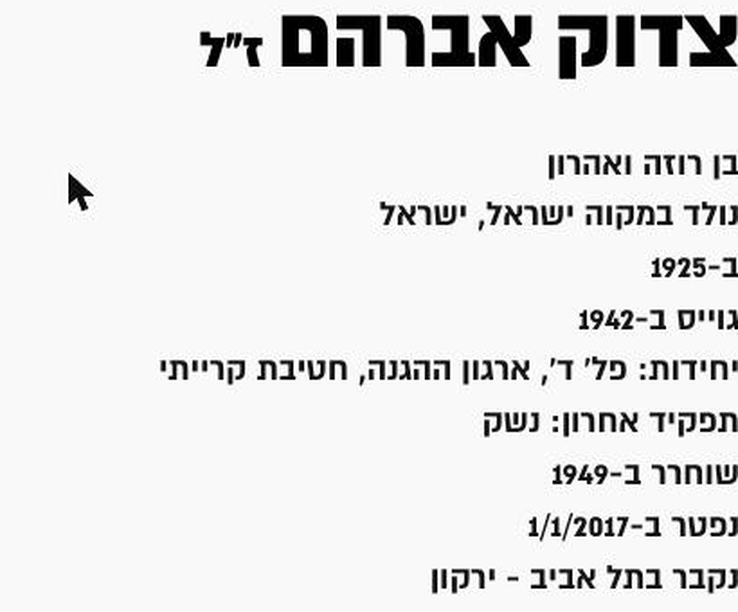
פרטי הליבה כפי שנמסרו בידי בניו: «בן רוזה ואהרון · נולד במקוה ישראל · 1925 · גויס 1942 · פל׳ ד׳, ההגנה, חטיבת קרייתי · נפטר 1/1/2017 · נקבר בתל אביב — ירקון». לחיצה על הראיה פותחת את המקור החיצוני; העותק המקומי המלא — בקישור שמתחת.
העותק המקומי · המסמך המקורי ↗
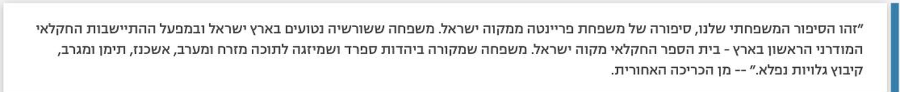
הכריכה האחורית: המשפחה «ששורשיה נטועים... בבית הספר החקלאי מקוה ישראל... שמקורה ביהדות ספרד ושמיזגה לתוכה מזרח ומערב, אשכנז, תימן ומגרב». אישוש עצמאי לשיוך רוזה פריינטה למקווה ישראל ולמיזוג עם המוצא התימני. מס׳ מערכת 997010400325605171.
העותק המקומי · המסמך המקורי ↗
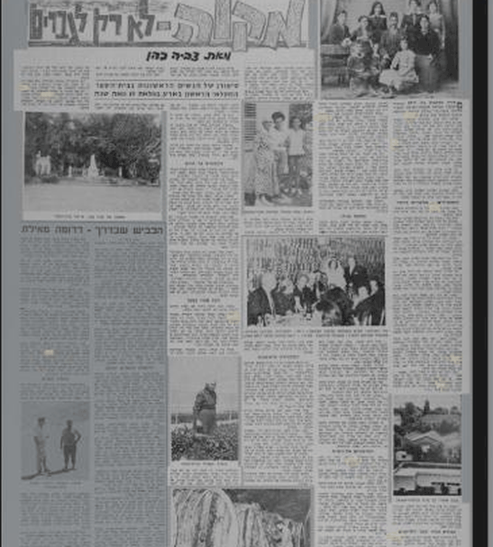
כתבת מאה שנה למקווה ישראל, המוקדשת לנשים הראשונות של המוסד — ובהן משפחת פריינטה (משפחת אמו של אברהם). מתועדים בה יצחק פריינטה (מהתלמידים הראשונים בימי נטר), אשתו מרים ארואס מיפו, והבנות פלורין, ויקטוריה ורוזה. הכתבה מציינת ש«הבעל של רוזה היה האופה» (אהרון) ושבתה מרים הייתה חברת קיבוץ חוקוק («קיקה»).
העותק המקומי · המסמך המקורי ↗
תצלום סטודיו מאוסף ארכיון קיבוץ חוקוק, שהוכן להצגה בערב «חיים שכאלה». כותר הפריט: «משפחת פריינטה ושחם, בית הספר במקווה, נעורים». נחלת הכלל. הערה: הרשומה אינה מזהה בשמות את האנשים בתמונה — הם אינם ידועים ואין לזהותם כרוזה/אהרון/אברהם.
העותק המקומי · המסמך המקורי ↗
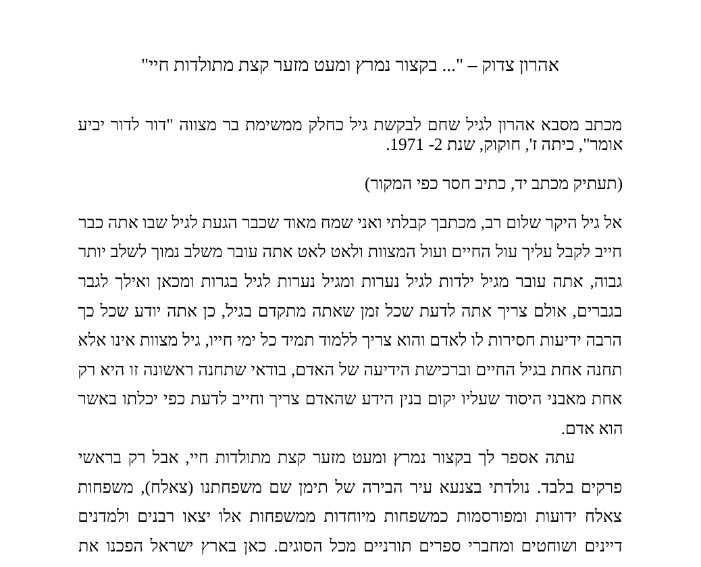
תעתיק מכתבו האוטוביוגרפי של אהרון צדוק לנכדו גיל שחם, למשימת בר-המצווה «דור לדור יביע אומר» (חוקוק): «נולדתי בצנעא עיר הבירה של תימן, שם משפחתנו (צאלח)... כאן בארץ ישראל הפכנו את הכינוי צאלח לצדוק». המכתב מתעד את יתמותו, רעב 1904, נדודיו ועלייתו ביפו בתשרי תרע"ה 1914. הקישור החיצוני — רשומת «שבות תימן» בספרייה הלאומית, המאמתת את היותו עורך-שותף של הקובץ.
העותק המקומי · המסמך המקורי ↗
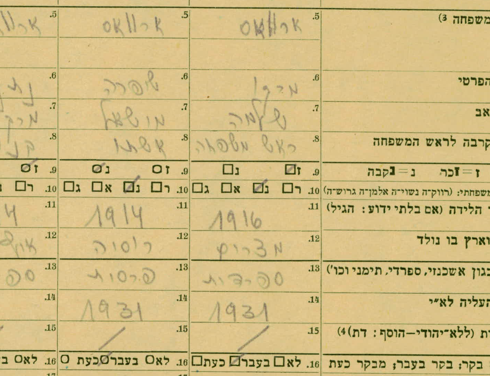
«ארוואס · מרקו · שם האב: שלמה · ראש המשפחה · שנת הלידה 1916 · מקום וארץ בו נולד: מצרים · עדה: ספרדי · שנת העליה לא"י: 1931», ולצדו אשתו «שפרה» בת משולם, ילידת 1914 ברוסיה, אשכנזייה. ארבעה סמנים מתכנסים לענף הגיברלטרי: שם האב שלמה (שמו של מייסד הענף שעלה מגיברלטר ב-1833), העדה הספרדית, לידה במצרים ב-1916 — גורלן של משפחות יפואיות בעלות נתינות זרה שפונו לאלכסנדריה במלחמת העולם הראשונה — ושיבה ארצה ב-1931. דירוג: נתוני הטופס — מאומת, נקראו מן הסריקה; השיוך לענף הגיברלטרי — ככל הנראה, בלי רשומה המחברת דור לדור.
העותק המקומי · המסמך המקורי ↗
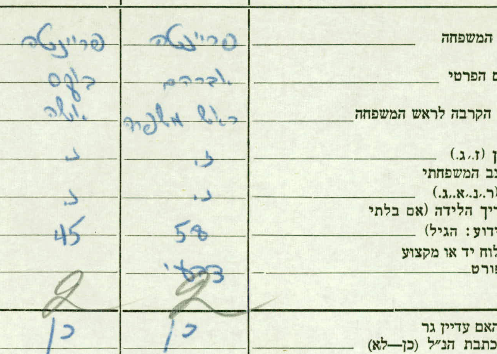
«פריינטה · אברהם · בעל הבית · ז · נשוי · גיל 58» ולצדו «פריינטה · בוקס · אשתו · נ · נשואה · גיל 45». גיל 58 בספטמבר 1948 גוזר לידה בסביבות 1890 — הדור שאחרי יצחק (פפו) פריינטה. שם אביו של יצחק היה אברהם ואחיו שמואל נותר בירושלים; נכד הנושא את שם הסב הוא תבנית קרייה ספרדית מובהקת, ומכאן ההשערה שזהו בן-דודה של רוזה. הטופס הוא הגרסה הקצרה («האם עדיין גר בכתובת הנ׳ל») ואין בו שם אב או מקום לידה. דירוג: נתוני הטופס — מאומת, נקראו מן הסריקה; השיוך לשושלת — טעון אימות.
העותק המקומי · המסמך המקורי ↗
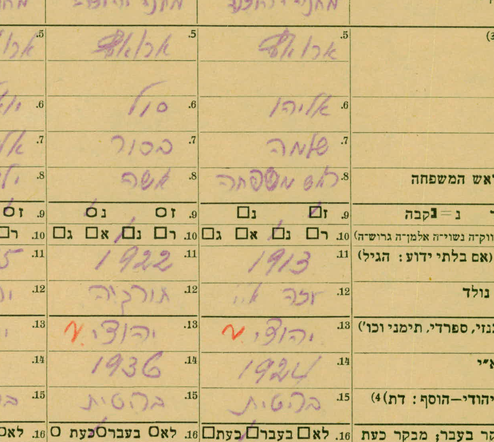
טופס האוכלוסיה מס' 7, «בית מדג'וק» שבמחנה יהודה: «ארואץ · אליהו · ראש המשפחה · 1913 · עדה: יהודי ס' · שנת העליה לא"י: 1924 · הנתינות: בריטית»; רעייתו «סול», בת בכור, ילידת 1922 בתורקיה, עלתה 1936; בנם «יואל», יליד 1945 בירושלים. הנתינות הבריטית היא סמן אפשרי המבחין בין ענף ארואס הגיברלטרי (נתיני בריטניה ביפו מ-1839) לבין משפחת ארואץ המרוקאית שבחסות צרפת. לחיצה — הטופס המלא. דירוג: תוכן הטופס — מאומת, נקרא מן הסריקה; שם האב ושם יישוב הלידה — לא פוענחו; שיוך לענף הגיברלטרי — טעון אימות.
העותק המקומי · המסמך המקורי ↗
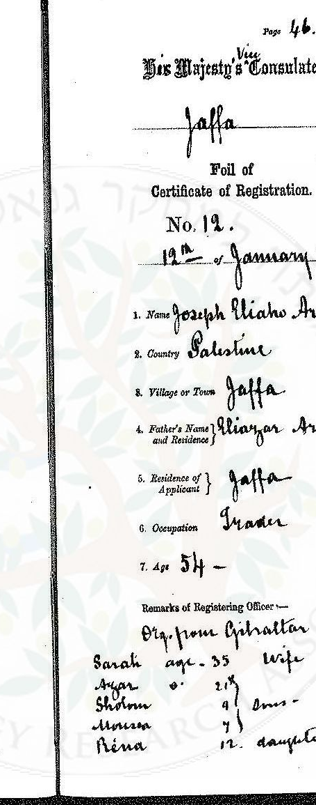
«1. Name: Joseph Eliaho Arruas · 3. Village or Town: Jaffa · 4. Father's Name: <strong>Eliazar Arruas</strong> · 6. Occupation: Trader · 7. Age: 54», ובהערות הפקיד, בכתב ידו: <strong>«Orig. from Gibraltar»</strong>. זהו המקור השלישי והמפורש ביותר למוצא הגיברלטרי, לצד שורת «Salomo Aruas · Gibraltar» מ-1839 ושדה מקום הלידה במפקד 1855 — הפעם מפי פקיד בריטי, על טופס של אדם מסוים. בני הבית: Sarah (35), <strong>Azar (21)</strong>, Rina (12), Sholom (9), Moussa (7) — ואזר נרשם חודש לאחר מכן בעזה בזכות עצמו. דירוג: תוכן הטופס — מאומת; המוצא הגיברלטרי — מאומת ברמת הרשומה.
העותק המקומי · המסמך המקורי ↗
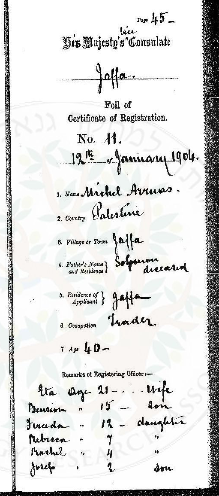
«1. Name: Michel Arruas · 4. Father's Name and Residence: <strong>Solomon — deceased</strong> · 6. Occupation: Trader · 7. Age: 40». זהו האח השלישי: ספר המשפחה מונה שלושה אחים ילידי גיברלטר, בניו של סולומון — יוסף, מיכאל ואליהו — ועתה עומדים שלושתם ברשומות מדינה בנות-זמנן. בני הבית: Eta (21), Ben Sion (15), Feruda (12), Rebecca (7), Rachel (4), Joseph (2). דירוג: תוכן הטופס — מאומת; מיכאל כאחיהם — כמעט ודאי. אנומליה מסומנת: רעיה בת 21 מול בן בן 15 — שגיאת פקיד או אישה שנייה.
העותק המקומי · המסמך המקורי ↗
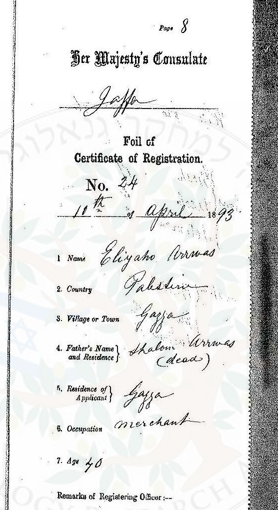
קונסוליית הוד מלכותה, יפו: «1. Name: Eliyaho Arrwas · 2. Country: Palestine · 3. Village or Town: Gazza · 4. Father's Name and Residence: <strong>Shalom Arrwas (dead)</strong> · 5. Residence of Applicant: Gazza · 6. Occupation: merchant · 7. Age: 40». זהו הפטרונים שסגר את הזיהוי: «Shalom Arrwas» הוא שלמה (Salomo) ארואס מגיברלטר, שנפטר ביפו ב-1868; וגיל 40 ב-1893 גוזר לידה ~1853, בעוד מפקד יפו 1855 רושם בבית שלמה בן בשם אליהו, בן 3. דירוג: תוכן הטופס — מאומת, נקרא בעיניים על הסריקה; הזיהוי — כמעט ודאי.
העותק המקומי · המסמך המקורי ↗
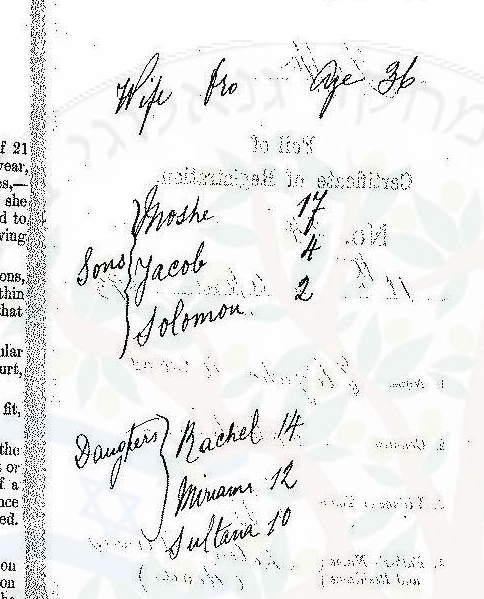
בעמוד הנגדי של התעודה: «Wife <strong>Fro</strong> — Age 36 · Sons: <strong>Moshe 17, Jacob 4, Solomon 2</strong> · Daughters: <strong>Rachel 14, Miriam 12, Sultana 10</strong>». שבעה שמות שנוספו לענף בבת אחת, עם גילאים; הבן שלמה (יליד ~1891) נקרא על שם סבו. אזהרה: מרים ילידת ~1881 שכאן איננה מרים ארואס ילידת 1875, אשתו של יצחק פריינטה. דירוג: מאומת.
העותק המקומי · המסמך המקורי ↗
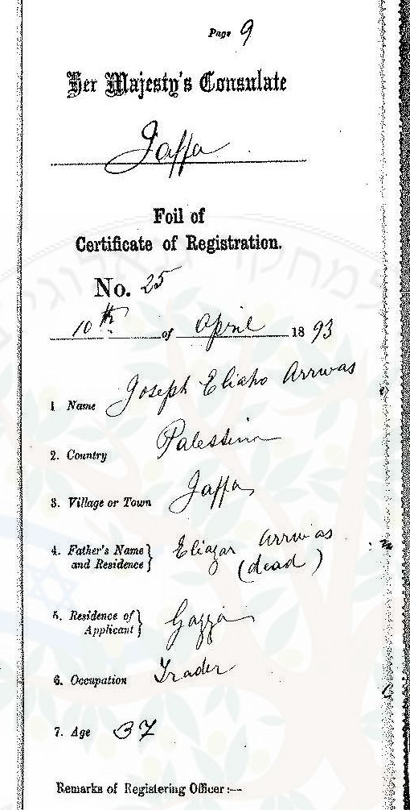
«1. Name: <strong>Joseph Eliaho Arrwas</strong> · 3. Village or Town: Jaffa · 4. Father's Name: <strong>Eliazar Arrwas (dead)</strong> · 5. Residence of Applicant: Gazza · 6. Occupation: Trader · 7. Age: 37». זהו הענף המקביל, ענף אלעזר — ויוסף אליהו הוא בן-דודו של אליהו שבתעודה הקודמת. שמו חתום על מכתב התלונה נגד אליהו שפורסם ב«השקפה» ב-15.4.1904: הידיעה מתעדת סכסוך בתוך המשפחה עצמה. דירוג: תוכן הטופס — מאומת; הזיהוי עם החתום במכתב — כמעט ודאי.
העותק המקומי · המסמך המקורי ↗
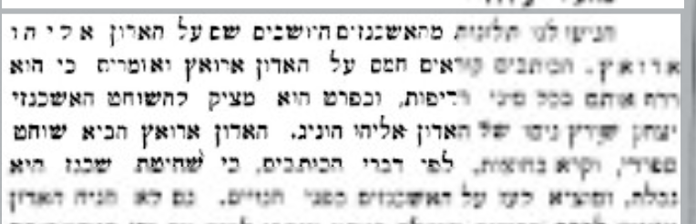
ידיעה במדור המכתבים: «הגיעו לנו תלונות מהאשכנזים היושבים שם על האדון אליהו ארואץ... האדון ארואץ הביא שוחט ספרדי... גם לא הניח האדון ארואץ לקחת מהמצה ששלח האדון ענתבי לעזה על ידי האדון רוקח מיפו... ארבעים פרנק לחדש הנתנים מהנדיב לעדת עזה». לחיצה — הידיעה במלואה. דירוג: תוכן הידיעה — מאומת, נקרא בעיניים על תצלום העמוד; זיהויו עם אליהו בן שלמה — טעון אימות, מפני משפחת ארואץ המרוקאית השנייה שבאזור.
העותק המקומי · המסמך המקורי ↗
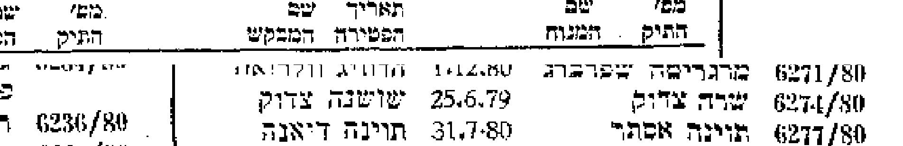
הכותרות והשורה יחד: «מס׳ התיק · <strong>שם המנוח</strong> · תאריך הפטירה · <strong>שם המבקש</strong>», ומתחתן «<strong>6274/80 · שרה צדוק · 25.6.79 · שושנה צדוק</strong>». המנוחה היא שרה — «שדה» שנקרא ב-OCR במהדורה 36 היה שיבוש — ושושנה צדוק היא המבקשת, כלומר הייתה בחיים ביוני 1979 ואילך; שושנה רוזה צדוק שבמחקר זה נפטרה 3.4.1979. התיק אינו של המשפחה, ויעד T6 נסגר. לחיצה — הגיליון המלא (46 עמ׳). דירוג: מאומת, נקרא בעיניים על תצלום העמוד.
העותק המקומי · המסמך המקורי ↗
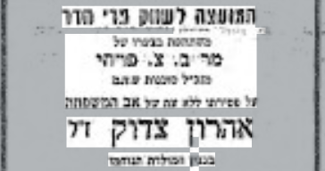
«המועצה לשווק פרי הדר משתתפת בצערו של מר ב. צ. פרחי, מנהל סוכנות..., על פטירתו ללא עת של אב המשפחה אהרן צדוק ז´ל». הנמען אינו בן אלא חתן — בן ציון (ביטו) פרחי, בעלה של יעל; עיגון שלישי ובן-זמן למעמדו במשפחה (1943 נישואין · 1981 המודעה · 1992 הקבורה), והפרט התעסוקתי הראשון שיש עליו. ה-OCR של המודעה משובש כמעט לחלוטין; הנוסח פוענח בהגדלה בצפיין. דירוג: תוכן — מאומת; זיהוי ב.צ. פרחי — כמעט ודאי; שם הסוכנות — טעון אימות.
העותק המקומי · המסמך המקורי ↗
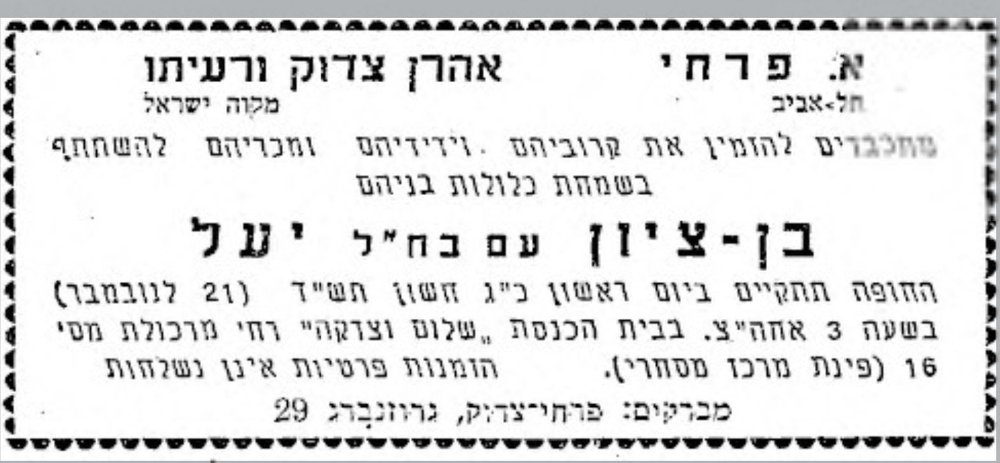
מקור ראשוני בן-זמן: «א. פרחי | אהרן צדוק ורעיתו — תל-אביב | מקוה ישראל — מתכבדים להזמין... בשמחת כלולות בניהם: בן-ציון עם בת-חיל יעל. החופה תתקיים ביום ראשון כ"ג חשון תש"ד (21 לנובמבר)... בבית הכנסת שלום וצדקה». מאשש את נישואי יעל (בת אהרון) עם בן-ציון פרחי (הגיס), 21.11.1943, ומעגן את המשפחה במקווה ישראל. דירוג: תוכן המודעה — מאומת; זיהויה עם משפחתנו — כמעט ודאי. הערה: הגיליון מ-28.11 מאוחר לחופה — ככל הנראה פרסום חוזר; אנומליה מסומנת.
העותק המקומי · המסמך המקורי ↗
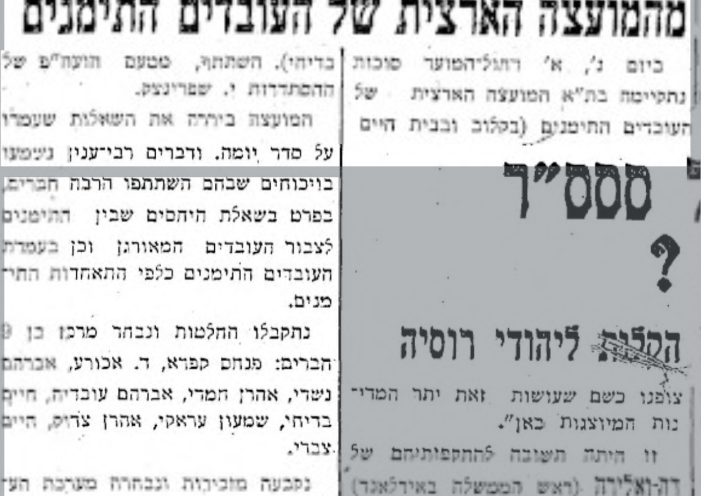
בכינוס המועצה הארצית של העובדים התימנים בתל אביב (סוכות תרצ"ה) נבחר מרכז ארצי בן 9 חברים — ובהם «אהרן צדוק» — לצד הקמת מזכירות ומערכת עיתון, בהשתתפות י. שפרינצק מטעם ההסתדרות. תואם לעדות אהרון על היותו «מזכיר הפועלים». דירוג: כמעט ודאי.
העותק המקומי · המסמך המקורי ↗
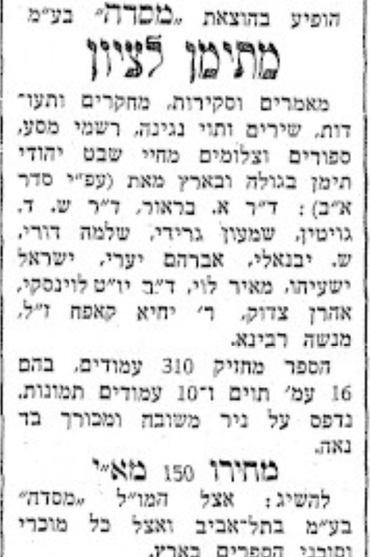
מודעת הקובץ המדעי-תרבותי «מתימן לציון» על יהדות תימן; רשימת המשתתפים (לפי א"ב) כוללת את «אהרן צדוק» לצד ש"ד גויטין, ישראל ישעיהו, אברהם יערי ומנשה רבינא. הצמד ישעיהו + אהרן צדוק חוזר גם ב«שבות תימן» (1945) ומלכד את הזיהוי; מקדים אותו בשבע שנים. במהדורה 60 נודע גם שם חיבורו בקובץ — «חבלי עליה», סיפורים — מתוכן הקובץ שנדפס ב«דבר» 6.5.1938, ושם נודע גם שעורכי 1938 היו ישעיהו ושמעון גרידי ואהרון היה בו משתתף ולא עורך. דירוג: קיום החיבור ושם מחברו — מאומת; זהות המחבר עם אהרון — כמעט ודאי, שכן אין בפריט מקום ולא מקצוע.
העותק המקומי · המסמך המקורי ↗
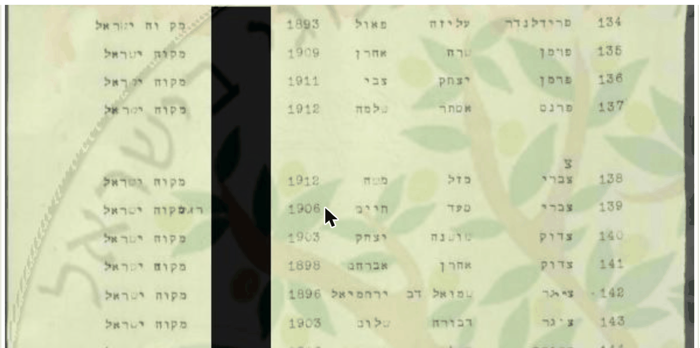
«רשימת בעלי זכות בחירה במקוה ישראל» (ארכיון המדינה, גל-45494/6): שורה 140 — «צדוק שושנה, [בת] יצחק, 1903»; שורה 141 — «צדוק אהרן, [בן] אברהם, 1898». רשומת המדינה המאששת את שם אבי-אהרון (אברהם), את שם אבי-רוזה (יצחק פפו פריינטה) ואת שנת לידת רוזה. רשומות IGRA 85741-85742. לחיצה על הראיה פותחת את סריקת המקור באתר IGRA; «העותק המקומי» — עותק מלא של דף הסריקה (שורות 134-159).
העותק המקומי · המסמך המקורי ↗
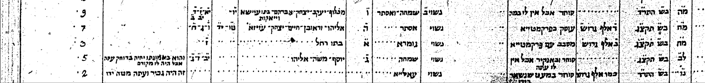
פנקס מפקד יפו תרט"ו (1855), שורה 18: שלמה ארואץ — בן ל"ב, עלה בשנת תקצ"ג (1833), «סוחר ובאנקיר אבל אין לו עתה»; אשתו שמחה; הבנים יוסף· משה· אליהו. הרשומה הסוגרת את פער «אם יוסף» (שמחה). לעניין הגיל: המפקד רושם את יוסף כבן 12 (יליד ~1843) ורשומת הקונסוליה 1869 כבן 24 (יליד ~1845) — פער שנתיים מקובל בין גיל מוצהר במפקד לגיל מוצהר ברישום קונסולרי, מסומן ולא מוכרע. לחיצה על הראיה פותחת את סריקת ה-PDF המקורית באתר מונטיפיורי.
העותק המקומי · המסמך המקורי ↗
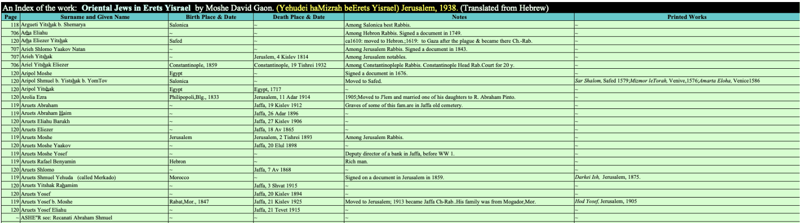
גוש 14 ערכי ארואץ (Aruets) בלקסיקון של משה דוד גאון (ירושלים 1938; עמ' 119-120 בספר, דרך האינדקס האנגלי באתר sephardicstudies.org). בערך «Aruets Abraham» ההערה המפורשת: «Graves of some of this fam. are in Jaffa old cemetery» — קברי חלק מבני המשפחה בבית העלמין הישן של יפו. בין הערכים: שלמה ארואץ — נפטר יפו ז' אב תרכ"ח (26.7.1868), ככל הנראה שלמה שלנו, בהלימה להיעדרו מרשומת 1869; יוסף (1894), אליהו ברוך (1906), אברהם (1912), אליעזר (1865 — ההחרגה מן העץ נשענה על הנחה שנחלשה: רשומת Azar נמצאת בגיליון הפתיחה חסר-התאריכים ולא בגיליון 1873) — טעוני אימות; ו«משה יוסף ארואץ — סגן מנהל בנק ביפו לפני מלה"ע הראשונה». לחיצה על הראיה פותחת את ה-PDF המקורי (עמ' 6). אזהרה: לא לערבב עם משפחת הרב יוסף בן משה ארואץ המרוקאית.
העותק המקומי · המסמך המקורי ↗
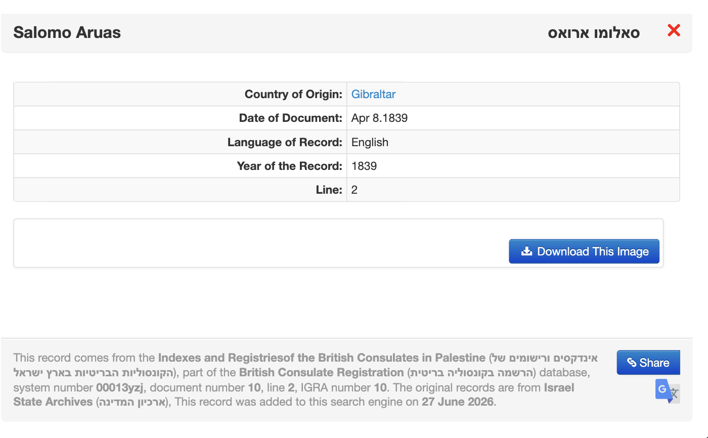
הרשומה הקדומה ביותר בשושלת: «Salomo Aruas — Country of Origin: Gibraltar», 8.4.1839, סדרת רישומי היהודים הבריטיים של ירושלים 1838-1908 (ארכיון המדינה; IGRA 10). חושפת את מוצא משפחת ארואס בגיברלטר ומסבירה את החסות הבריטית של השושלת כולה. הערה: קובץ הסריקה של הסדרה החזיר תחילה שגיאת 403; לאחר פנייה לצוות IGRA (שאישר את הבאג) נמסר העמוד למחקר בדוא"ל — ראו איור 23 וערך מקור 29. כרטיס הרשומה שלעיל הוא התעתיק הרשמי. הזיהוי כשלמה אבי-יוסף — ככל הנראה (התאמת ציר זמן, שם וחסות). הד לשורש הגיברלטרי/מגרבי של השם פריינטה בצד השני של משפחת האם.
העותק המקומי
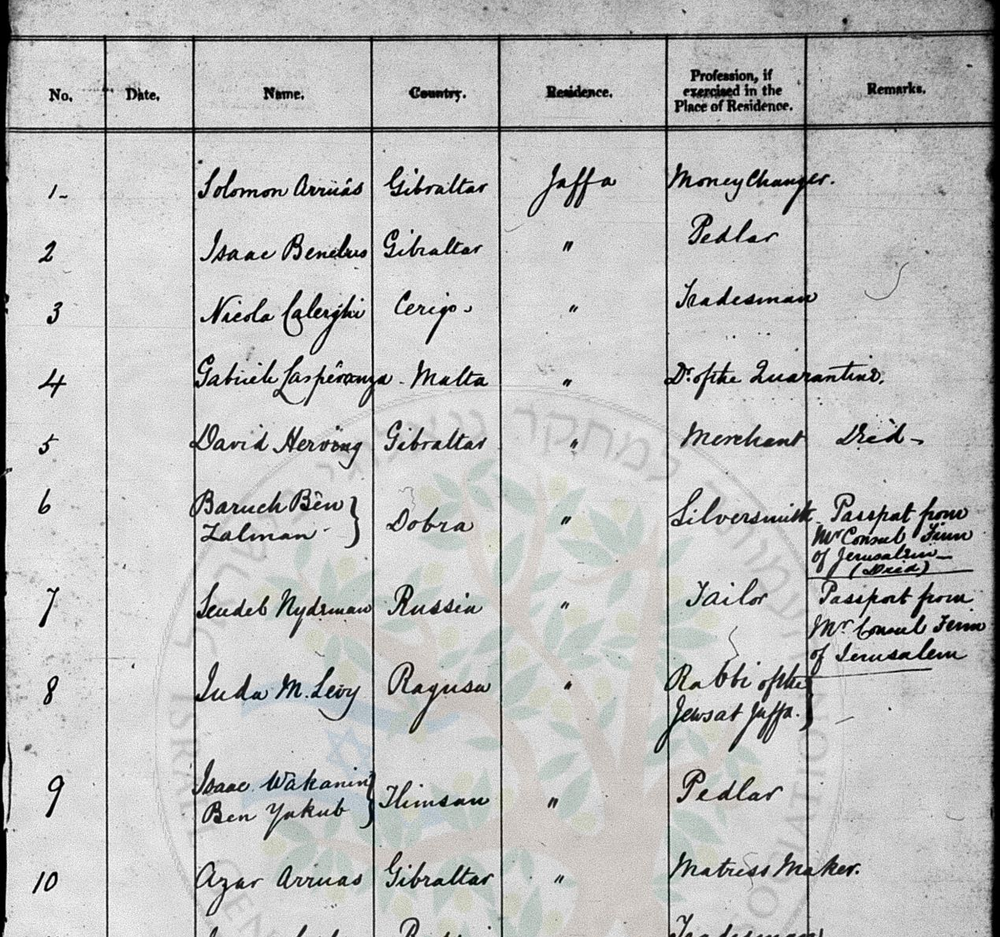
גיליון הפתיחה של פנקס הרישום של נתיני בריטניה ביפו (ארכיון המדינה; IGRA). שורה 1: «Solomon Arruas — Gibraltar — Jaffa — Money Changer»; שורה 10: «Azar Arruas — Gibraltar — Matress Maker». מאששת עצמאית את מוצא גיברלטר, וסוגרת את שרשרת המקצוע: «סוחר ובאנקיר» (מפקד 1855) ← Money Changer (גיליון הפתיחה) ← Saraff אצל הבן יוסף (1869) ← Money Changer אצל הבן אליהו (1873). הערת תיארוך: עמודת ה-Date בעמוד ריקה, ו-IGRA מאנדקס אותו פעמיים — כ-1860 וכ-1873; שנת הרישום אינה נקבעת. באותו עמוד עוד ארבעה יוצאי גיברלטר (בנוליאל, הרוונג, ומכלוף ומנחם כהן) ושלושה צראפים נוספים — עדות למושבה גיברלטרית-מגרבית של חלפנים בנמל יפו תחת חסות בריטית. דירוג: תוכן העמוד — מאומת; זיהוי Solomon עם שלמה ארואץ של מפקד 1855 — כמעט ודאי; זיהוי Azar עם אלעזר — ככל הנראה; שנת הרישום — טעונה אימות.
העותק המקומי · המסמך המקורי ↗
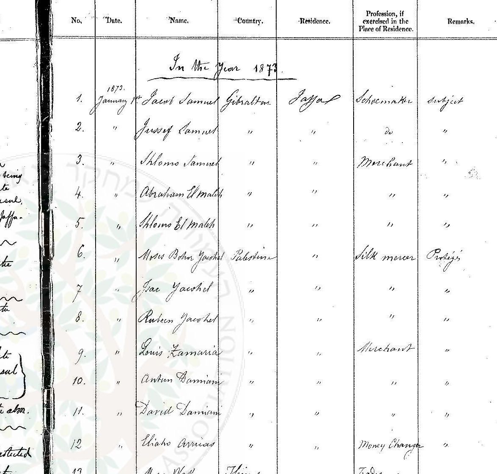
גיליון שנת 1873 באותו פנקס נתיני בריטניה ביפו (ארכיון המדינה; IGRA 9119), עמ' 5, תאריך 1 בינואר. שורה 12: «Eliaho Arruas — Country of Origin: Palestine — Jaffa — Money Changer». ככל הנראה אליהו, בנו השלישי של שלמה, שבמפקד 1855 היה בן שלוש (יליד ~1852) — ומכאן «יליד הארץ», בניגוד לאביו הגיברלטרי. שני בניו של שלמה עסקו אפוא בחלפנות: יוסף («Saraff», 1.1.1869) ואליהו («Money Changer», 1.1.1873) — כלומר לא שרשרת מקצוע אלא ענף. דירוג: תוכן הרשומה — מאומת; הזיהוי — ככל הנראה.
העותק המקומי · המסמך המקורי ↗
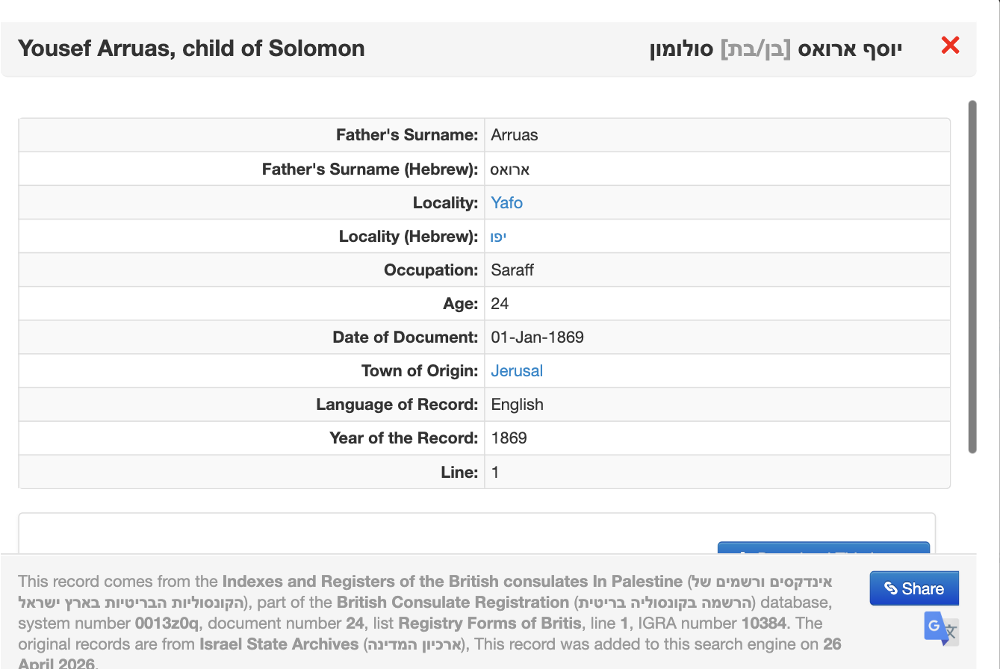
רשומת הרישום בקונסוליה הבריטית (ארכיון המדינה; IGRA 10384): «Yousef Arruas, child of Solomon» — 1.1.1869, יפו, בן 24 (יליד ~1845), מקצוע Saraff (צראף — חלפן), עיר מוצא: ירושלים. הרשומה שמעלה את שלמה ארואס כאבי-יוסף (ככל הנראה) וחושפת את המקצוע, הגיל והשורש הירושלמי של מי שהוא ככל הנראה סבא-רבא של אברהם מצד אם (אבי סבתו מרים; זיהוי — ככל הנראה).
העותק המקומי · המסמך המקורי ↗
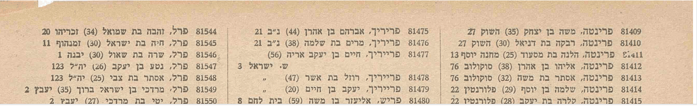
פנקס הבוגרים של כנסת ישראל בת"א וביפו תש"ד (ארכיון ת"א-יפו; IGRA 80953): שורה 81409 — «פרינטה, משה בן יצחק (35), השוק 27»; ובשורה העוקבת — «פרינטה, רבקה בת דניאל» באותה כתובת (ככל הנראה אשתו). משה — אחיה של רוזה, בן יצחק פפו. באותו פנקס: בן-ציון פרחי בן חיים בגרוזנברג 29 (IGRA 79898). וברשימת בעלי זכות הבחירה תש"ט (1949), ת"א: יעל פרחי בת אהרון, ילידת 1923 (IGRA 212170).
העותק המקומי · המסמך המקורי ↗
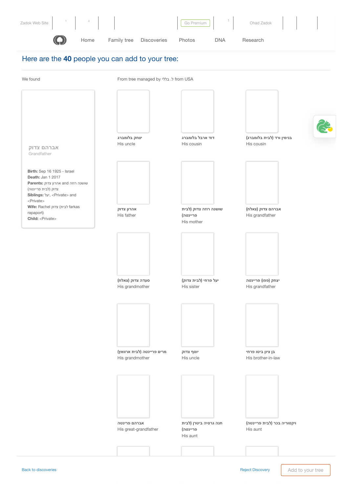
דף Discoveries מעץ המשפחה של המשתמש (מקור משני): שמות הסבים אברהם צדוק (צאלח) וסעדה; יצחק «פפו» פריינטה ואביו אברהם פריינטה; מרים לבית ארואס והוריה יוסף וגרסיה. השם «צאלח» עצמו אומת בינתיים במקור ראשוני (מכתב אהרון); «שלמה ארואס» שמעל יוסף שב והתאשש חלקית ברשומת הקונסוליה הבריטית 1869 דירוג: ככל הנראה; האח שלמה קרוי ככל הנראה על שם הסב (פרשנות על סמך השם). שמות שמקורם רק כאן טעונים אימות ברשומה ראשונית.
העותק המקומי
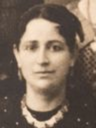
תצלום דיוקנה של מרים פריינטה (ארואס) — סבתו של אברהם מצד אם — קובץ התמונה המקורי כפי שהועלה לפרופיל Geni המשפחתי (מנהל: רון רבינוביץ'; מאלבום גלעד רונן; רזולוציית הקובץ המקורי באתר: 96×128). הפרופיל מאשש את החוליה האימהית: מרים לבית ארואס, ממקוה ישראל, בת ליוסף וגרסיה ארואס, אשת יצחק פריינטה, אם לפלורין בלומברג/חנה ביטרן/רפאל רחמים; תאריכיה 1875-1916. «העותק המקומי» — דף הפרופיל המלא (התיעוד הטקסטואלי). הבהרה: «שלמה ארואס» מופיע שם כאחי מרים — הקרוי, לפי רשומת הקונסוליה 1869, על שם סבו שלמה אבי-יוסף (ככל הנראה).
העותק המקומי · המסמך המקורי ↗
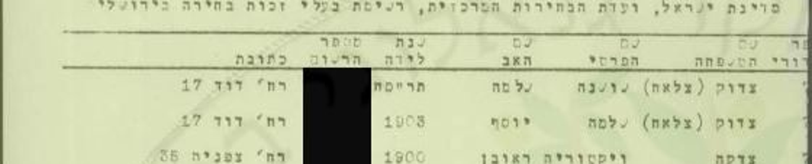
«מדינת ישראל, ועדת הבחירות המרכזית, רשימת בעלי זכות בחירה בירושלים», קלפי ז' (ארכיון המדינה, גל-45497/1; IGRA 314511). שתי השורות הראשונות נושאות את שם המשפחה בשתי צורותיו יחד: «צדוק (צאלח)» — שושנה בת סלמה, ילידת תרמ"ח (1888), ושלמה בן יוסף, יליד 1903, שניהם ברח' דוד 17. אלה אינם בני משפחת אהרון, אך זהו אישוש חיצוני ברשומת מדינה למשפט שכתב במכתבו לנכדו: «כאן בארץ ישראל הפכנו את הכינוי צאלח לצדוק». דירוג: קיום הדפוס ברשומות מדינה — מאומת, אומת בעיניים על הסריקה; שכך אירע גם במשפחת אהרון — כמעט ודאי.
העותק המקומי · המסמך המקורי ↗
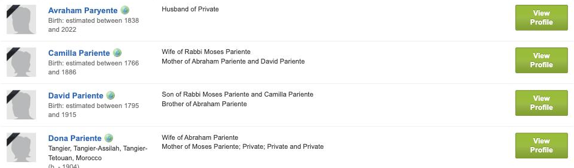
חיפוש «פריינטה» במאגר Geni ממפה את השם ל־Pariente/Paryente; בין התוצאות ענף מטנג'יר/טטואן שבמרוקו. מדגים שפריינטה הוא שם משפחה ספרדי (נפוץ בערי מרוקו). זהו מוצא השם ברמה הרחבה; הענף של רוזה עצמו היה ארץ־ישראלי ותיק (ראו הכתבה מ־1970).
העותק המקומי · המסמך המקורי ↗
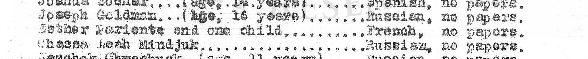
רשימת המפונים מיפו לאלכסנדריה באניית הצי האמריקני USS Tennessee, בראשית מלחמת העולם הראשונה (ארכיון הלאומי, ארה"ב; IGRA 1694). שורה 37: «Esther Pariente and one child ......... French, no papers». השם פריינטה ביפו של 1914 בנתינות צרפתית — בהלימה למוצא מגרבי מחוסה-צרפת. דירוג: תוכן השורה — מאומת; זיהוי אישה זו עם השושלת — טעון אימות.
העותק המקומי · המסמך המקורי ↗
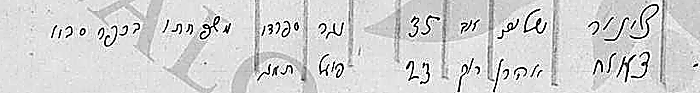
דף 144, שתי השורות התחתונות, בכל עמודותיהן. משק בית 685/2 (מימין לשמאל): שם המשפחה «צאלח», השם הפרטי «אהרן», עמודת היחס «רוק» (= רווק), הגיל «23», עמודת העדה «תימני» ועמודת המקצוע «פועל». השורה שמעליה, משק בית 685, היא של בעל הבית — «שלמה», בן 35, «נגר», עדה «ספרדי» — ובעמודת ההערות משפט שנקרא חלקית, «אשתו ... בכפר סבא», ככל הנראה בעקבות גירוש תל אביב-יפו של 1917. ארכיון תל אביב-יפו, מספר מערכת 08-1178; IGRA 4307. זו הרשומה החיצונית המוקדמת ביותר של אהרון צדוק — ארבע-חמש שנים אחרי נחיתתו בחוף יפו, בשם המשפחה המקורי צאלח, ולפני נישואיו. דירוג: קריאת ארבע העמודות הראשונות — מאומת, אושרו אות-אות בהגדלה במהדורה 59; «תימני» — כמעט ודאי; זיהוי הנרשם עם אהרון — כמעט ודאי, שכן הרשומה אינה נוקבת שם אב; הגיל 23 גוזר לידה ב-1895/96 מול 1898 שבפנקס תש"ט, ואילו גיל הקבורה וספר המשפחה גוזרים ~1895.
העותק המקומי · המסמך המקורי ↗
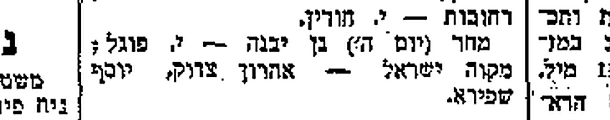
עמוד 4, ברשימת נציגי היישובים שנדפסה חמישה ימים אחרי הוועידה השישית של הסתדרות הפועלים החקלאים: «רחובות — י. חורין. · גן יבנה (יום ה') — י. פוגל; · <strong>מקוה ישראל — אהרון צדוק, יוסף שפירא</strong>.» זהו הפריט <strong>החמישי</strong> בקורפוס שנוקב את יישובו של אהרון לצד שמו — ולכן אחד מאלה שבהם הזיהוי מאומת ולא רק כמעט ודאי; האחרים הם «דבר» 1929, «הצפה» 1943, צוואת מרגולין 1947 ו«למרחב» 1960. השורה אותרה על הדף בעזרת שכבת ה-bbox של קובץ ה-PDF ואז נקראה בהגדלה. דירוג: מאומת.
העותק המקומי · המסמך המקורי ↗
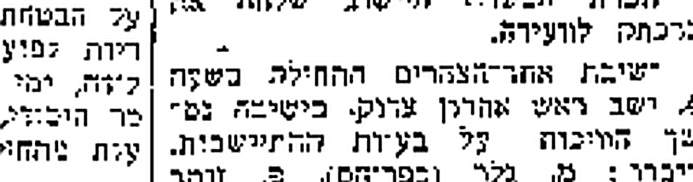
עמוד 8 של הגיליון, בדיווח מן הוועידה השישית של הסתדרות הפועלים החקלאים. השורה נקראה בעיניים לאחר עיבוד תמונה: «ישיבת אחר-הצהרים התחילה בשעה 4. <strong>ישב ראש אהרן צדוק</strong>. בישיבה נמשך הויכוח על בעיות ההתישבות. דיברו: מ. גלר (כפר יהושע), פ. זומר... קולר (גבע), נחומי (משמר השרון)... מ. שגור (כפר עזיב)». עד מהדורה 62 ידע הקורפוס שאהרון היה <strong>מועמד</strong> באותה ועידה — מספר 46 בטור ה«סגנים» של מפא"י; כאן מתברר שהוא <strong>ישב בראש אחת מישיבותיה</strong>, לצד נציגי קיבוצים ומושבים ותיקים. וחמישה ימים אחר כך נדפסה ב«דבר» רשימת הנציגים לפי יישוב, ובה «מקוה ישראל — אהרון צדוק, יוסף שפירא». דירוג: השורה — מאומת, נקראה בעיניים; זיהוי הנקוב בה עם אהרון — מאומת, שכן «מקוה ישראל» נדפס לצד שמו ברשימת «דבר» מאותה ועידה.
העותק המקומי · המסמך המקורי ↗
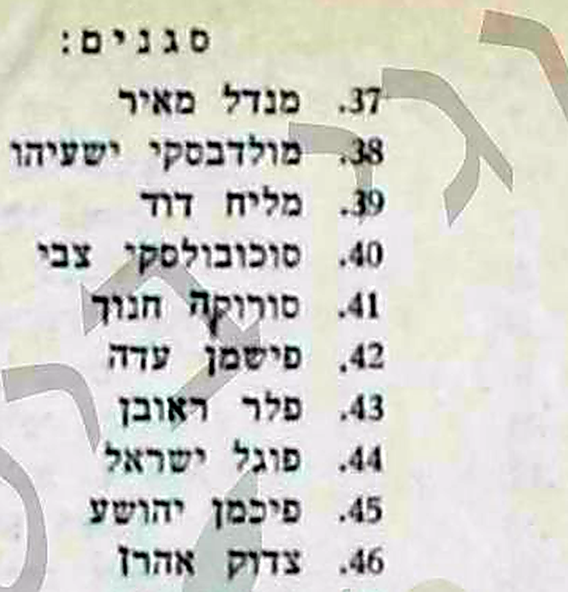
עמוד 277 מרשימות המועמדים לוועידה השישית של הסתדרות הפועלים החקלאים (ארכיון המדינה, פ-4932/3; IGRA 124). בטור ה"סגנים" של רשימת מפא"י, שורה 46: «צדוק אהרן». הרשומה מקדימה בעשור את מועצת החקלאים ה-8 (1955) ואת רשימות «דבר» מ-1959, ומחברת אותן אחורה אל המועצה הארצית של העובדים התימנים (1934) — קו ציבורי רצוף של עשרים וחמש שנה לפחות. באותה שנה עצמה יצא לאור «שבות תימן» בעריכתו המשותפת. דירוג: תוכן השורה — מאומת, נקרא בעיניים; זיהויה עם אהרון — כמעט ודאי; בעמוד לא נדפס יישוב לצד השמות.
העותק המקומי · המסמך המקורי ↗
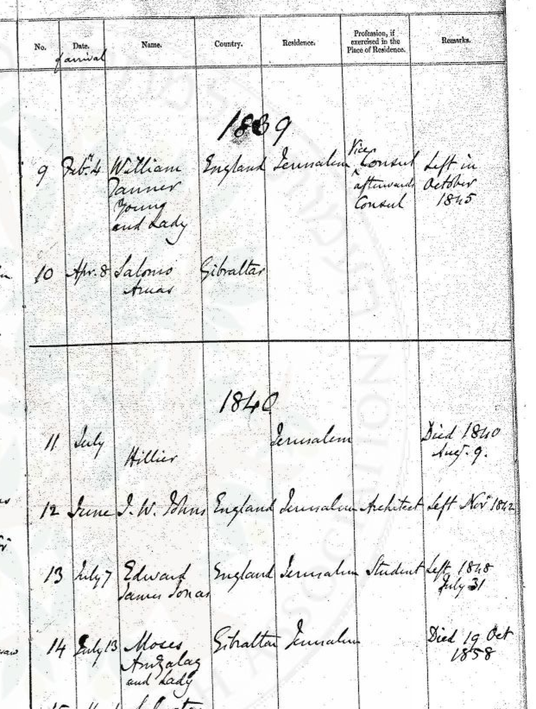
עמוד הפתיחה של פנקס נתיני בריטניה (ארכיון המדינה, סדרה 1838_1908_BritHebNabJer, קובץ סריקה 173). מתחת לכותרת השנה «1839»: שורה 9 — William Tanner Young ורעייתו, «Vice Consul afterwards Consul», ובעמודת ה-Date of arrival 4 בפברואר; ומיד אחריו שורה 10 — «Apr. 8 · Salomo Aruas · Gibraltar», ועמודות המגורים, המקצוע וההערות ריקות שלושתן. העמודה השנייה נושאת את הכותרת «Date of arrival» ולא תאריך רישום, ולכן 8.4.1839 מתנגש ב«עלה 1833» של מפקד מונטיפיורי 1855; שתי השנים נמסרות זו לצד זו. באותו עמוד שני רישומי גיברלטר נוספים, שניהם ממשפחת אמזלג: Joseph Amzalag (1837, ירושלים, «Died leaving 3 sons») ו-Moses Amzalag and Lady (13.7.1840, ירושלים, נפטר 19.10.1858). הסריקה התקבלה מוועדת הוובמאסטר של IGRA לאחר שקובצי הסדרה החזירו שגיאת 403 — באג שאותר בעקבות הפנייה. דירוג: תוכן העמוד — מאומת, אומת בעיניים; זיהוי «Salomo Aruas» עם שלמה ארואץ של מפקד 1855 — ככל הנראה; יישוב 1833 מול 1839 — טעון אימות.
העותק המקומי · המסמך המקורי ↗
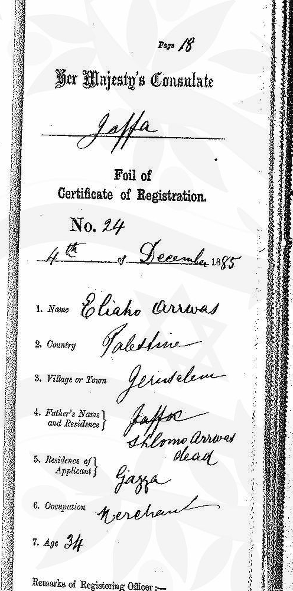
דף 18 בפנקס הטפסים של קונסוליית הוד מלכותה ביפו. שבעה שדות מודפסים שמולאו בכתב יד: «1. Name: Eliaho Arrwas · 2. Country: Palestine · 3. Village or Town: Jerusalem · 4. Father's Name and Residence: Jaffa · Shlomo Arrwas — dead · 5. Residence of Applicant: Gazza · 6. Occupation: Merchant · 7. Age: 34». זו הרשומה המוקדמת ביותר שנמצאה הנוקבת בשם אביו של אליהו — ולראשונה גם ב<strong>מקום מושבו של האב, יפו</strong>, ובפטירתו לפני דצמבר 1885. היא מקדימה את הישיבה בעזה בשמונה שנים לתעודת 1893, ורושמת את עירו של אליהו עצמו — ירושלים. ארכיון המדינה, מספר מערכת 0013z0q; IGRA 10810. דירוג: תוכן הטופס — מאומת, נקרא בעיניים על הסריקה; זהות האב עם שלמה הגיברלטרי — כמעט ודאי; משמעות «Jerusalem» בשדה 3 — טעון אימות.
העותק המקומי · המסמך המקורי ↗
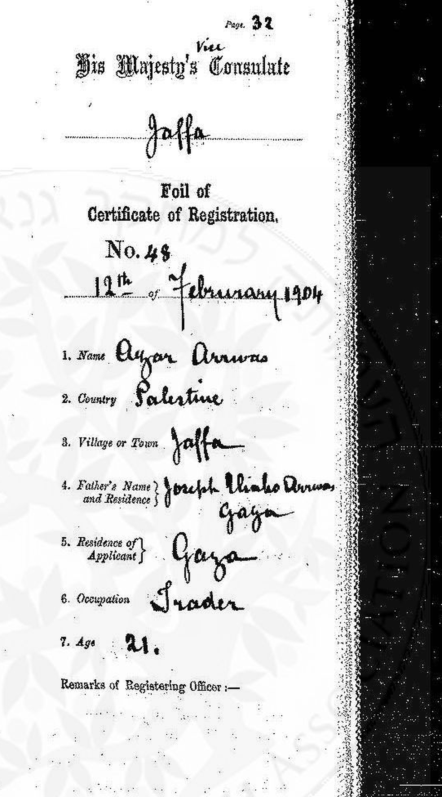
דף 32 בפנקס: «Name: Azar Arrwas · Country: Palestine · Village or Town: Jaffa · Father's Name and Residence: Joseph Eliaho Arrwas · Gaza · Residence of Applicant: Gaza · Occupation: Trader · Age: 21». חודש אחרי שאביו נרשם ביפו (תעודה 12, 12.1.1904, ובהערות הפקיד «Orig. from Gibraltar»), נרשם הבן בזכות עצמו — <strong>שלושה דורות</strong>, אלעזר ← יוסף אליהו ← אזר, ושני ענפי המשפחה יושבים בעזה. ארכיון המדינה; IGRA 892. דירוג: מאומת.
העותק המקומי · המסמך המקורי ↗
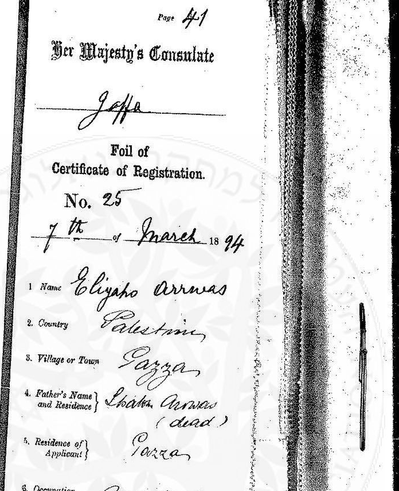
הטופס השלישי במניין של אליהו (1885, 1893, 1894), ובשלושתם אותו פטרונים. כאן שדה 3 («Village or Town» — עיר) נוקב כבר Gazza ולא Jerusalem, ואולם אין להסיק מכך מעבר מגורים: שדה 5 («Residence of Applicant» — מקום מגורי המבקש) נוקב Gazza כבר ב-1885 עצמו. «Occupation: Merchant» — סוחר. ארכיון המדינה, מספר מערכת 0013z0r; IGRA 108. דירוג: תוכן הטופס — מאומת; פירוש השינוי בשדה 3 — טעון אימות.
העותק המקומי · המסמך המקורי ↗
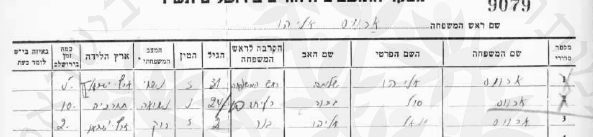
טופס 9079 של «כנסת ישראל — ועד הקהילה העברית ירושלים», שכונת מחנה יהודה, בית מדג'וק, «דירת אליהו ארווס». בניגוד לטופס «משמר העם» מ-1948, יש בטופס הזה <strong>עמודת «שם האב»</strong>: שורה 1 — ארווס · אליהו · <strong>שלמה</strong> · ראש המשפחה · 31 · נשוי · ארץ הלידה <strong>ארץ ישראל</strong> · חמש שנים בירושלים; שורה 2 — ארווס · סול · <strong>בכור</strong> · אשתו · 24 · תורכיה · עשר שנים; שורה 3 — ארווס · יואל · אליהו · בן · 2. זהו אותו משק בית שבטופס תש"ח, ושם האב עולה כאן בעצמאות מלאה מתעודת הנישואין מ-1944. ארכיון המדינה, מסמך 9079; IGRA 48042-48044. דירוג: תוכן השורות — מאומת; קריאת «שלמה» מטופס זה לבדו — כמעט ודאי, ובצירוף תעודת 1944 — מאומת; שיוך משק הבית לענף הגיברלטרי — טעון אימות, ולא השתנה.
העותק המקומי · המסמך המקורי ↗
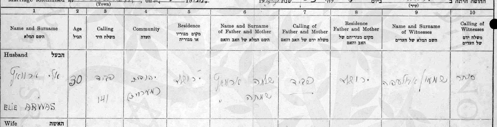
שורת הבעל: «ELIE ARWAS · אלי ארוואץ», בן 30, פקיד, עדה יהודית (מערבית), ירושלים; ובעמודת «השם המלא של האב והאם» — <strong>שלמה ארוואץ</strong> ו<strong>שמחה</strong>, שניהם מירושלים. הכלה: «SULUCE AVIGDOR · סול אביגדור», בת 24, פקידה, עדה ספרדית, בת בכור חיים אביגדור. זהו אותו זוג שבטופס «משמר העם» מ-3.5.1948 — «אליהו» ורעייתו «סול בת בכור» ממחנה יהודה — ומכאן שם אביו של ראש משק הבית. ארכיון המדינה, מסמך 67719; IGRA 3158. דירוג: תוכן התעודה — מאומת; זהות הזוג עם משק הבית שבמפקד תש"ח — כמעט ודאי; שיוך משק הבית לענף הגיברלטרי — טעון אימות, ולא השתנה.
העותק המקומי · המסמך המקורי ↗
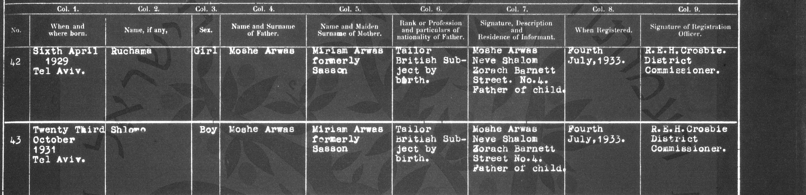
«GOVERNMENT OF PALESTINE — REGISTRATION OF BIRTHS OF BRITISH SUBJECTS», שתי שורות עוקבות שנרשמו שתיהן ב-4.7.1933: רוחמה, נולדה 6.4.1929 בתל אביב, ושלמה, נולד 23.10.1931 בתל אביב; האב <strong>Moshe Arwas</strong>, <strong>Tailor</strong>, <strong>«British Subject by birth»</strong>; האם <strong>Miriam Arwas formerly Sasson</strong>; והמודיע הוא האב, מ<strong>נווה שלום, רחוב זרח ברנט 4</strong>. מסמך ממשלתי המעמיד משפחת ארואס נתיני בריטניה מלידה בנווה שלום — השכונה שבה עמד במפקד ת"א 1928 משק הבית «ארוץ» שנרשם במהדורה 47 כפספוס. ובנו יליד 1931 נקרא שלמה. Public Record Office, RG 33/141; IGRA 450-451. דירוג: תוכן השורות — מאומת; זיהוי משק הבית «ארוץ» 1928 עם משפחת המחקר — טעון אימות; שאביו של משה נקרא שלמה — ככל הנראה, תבנית קרייה.
העותק המקומי · המסמך המקורי ↗
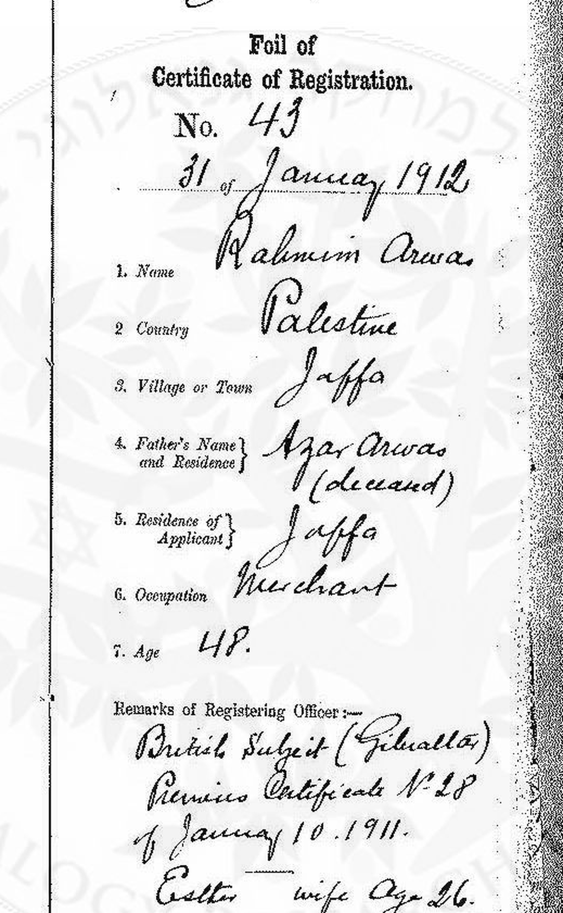
«Name: Rahmim Arwas · Country: Palestine · Village or Town: Jaffa · Father's Name and Residence: <strong>Azar Arwas (deceased)</strong> · Occupation: Merchant · Age: <strong>48</strong>», ובהערות הפקיד: «<strong>British Subject (Gibraltar)</strong> · Previous Certificate N° 28 of January 10. 1911 · <strong>Esther — wife — Age 26</strong>». שני דברים: <strong>רחמים הוא בנו של אזר</strong> — אותו אב שבטופסי יעקב מ-1896 ומ-1902 — ומכאן שהשניים <strong>אחים</strong>, ולענף אלעזר שלושה בנים מתועדים בשם אביהם: יוסף אליהו (~1856), רחמים (~1864) ויעקב (~1865). ו<strong>«British Subject (Gibraltar)» הוא האזכור המפורש הרביעי של גיברלטר בקורפוס</strong> — לצד שורת 1839, מפקד 1855 ו«Orig. from Gibraltar» מ-1904 — והשני מהם הנוגע לענף אלעזר דווקא. רחמים נרשם כמעט מדי שנה מ-1904 עד 1914. ארכיון המדינה; IGRA 2084. דירוג: תוכן הטופס — מאומת; רחמים ויעקב כאחים — כמעט ודאי; «Gibraltar» כמוצא ולא רק כנתינות — ככל הנראה.
העותק המקומי · המסמך המקורי ↗
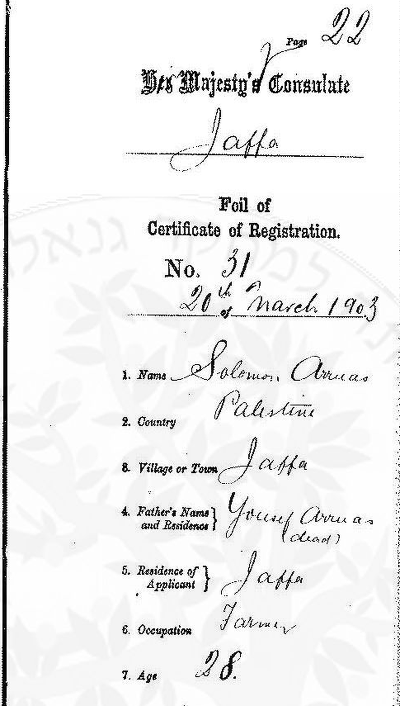
«Solomon Arruas · Palestine · Jaffa · Father's Name and Residence: <strong>Yousef Arruas (dead)</strong> · Occupation: <strong>Farmer</strong> · Age: <strong>28</strong>», וההערות ריקות. הטופס חוזר על טופס 1902 ומוסיף בקרה פנימית נקייה — בן 27 במרץ 1902, בן 28 במרץ 1903 — ושנת הלידה ~1874/5 מתייצבת. <strong>והממצא השלילי:</strong> בשני הטפסים אין רשימת בני בית, בעוד באותו פנקס עצמו רשם הפקיד בני בית בעקביות (אליהו 1893, יוסף 1893, מיכאל 1895 · 1903 · 1906, רחמים 1912) — כלומר שלמה בן יוסף היה <strong>עדיין רווק במרץ 1903</strong>. אם הוא אביו של מרקו יליד מצרים 1916, נישואיו חלו בין 1903 ל-1915 — צמצום חלון ליעד T22. ארכיון המדינה; IGRA 583. דירוג: תוכן הטופס — מאומת; היעדר בני בית כעדות לרווקות — ככל הנראה.
העותק המקומי · המסמך המקורי ↗
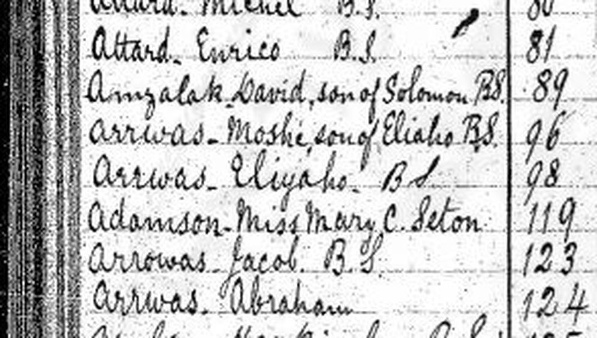
עמוד אינדקס אלפביתי של פנקס ההרשמה השנתי של נתיני בריטניה. ארבע שורות ארואס: «<strong>Arrwas — Moshie, son of Eliaho</strong> — B.S. — 96», «Arrwas — Eliyaho — B.S. — 98», «Arrowas — Jacob — B.S. — 123», «Arrwas — Abraham — 124». <strong>הפטרונים הוא הממצא:</strong> האינדקס מוסיף «son of» רק כשהוא נחוץ להבחנה — כך גם בשורה הסמוכה, «Amzalak David, son of Solomon» — ומכאן שב-1898 נרשם בקונסוליה, בזכות עצמו, <strong>משה בן אליהו ארואס</strong>; ולנו יש בדיוק אדם כזה, משה בן 17 ברשימת בני ביתו של אליהו בן שלמה בעזה ב-1893, כלומר יליד ~1876 ובן ~22 כאן. <strong>אברהם, לעומתו, רשום בלי פטרונים</strong> בשני האינדקסים. העמוד התקבל בדואר מוועדת הוובמאסטר של IGRA (24.8.2026), שכן תמונות האוסף מוחזרות ב-403. דירוג: תוכן השורות — מאומת; זיהוי משה — כמעט ודאי; שם אביו של אברהם — בלתי ידוע.
העותק המקומי · המסמך המקורי ↗
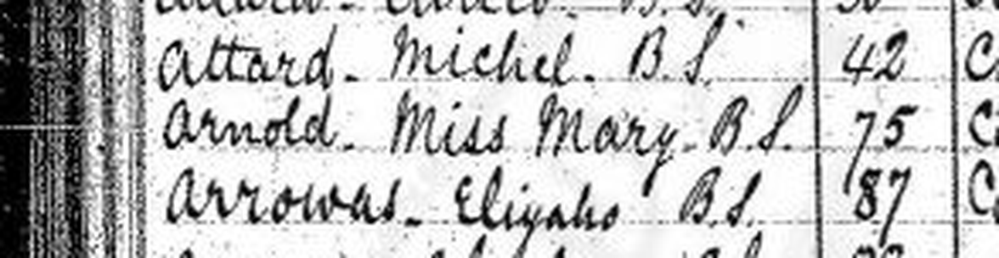
שנתיים קודם, אותו פנקס: אליהו ואברהם רשומים בשורות עוקבות, שניהם B.S., ושניהם <strong>בלי פטרונים</strong>. שימו לב לכתיב — <strong>Arrowas</strong> אצל אליהו כאן ו-<strong>Arrwas</strong> אצל אברהם, ובאינדקס 1898 להפך; ארבעה כתיבים משמשים בערבוביה באותו פנקס עצמו (ובאוסף יפו גם Arwas ו-Arruas), ולכן הכתיב אינו סימן מבחין בין אנשים. עוד: מספר ההרשמה משתנה משנה לשנה — אליהו הוא 87 כאן ו-98 ב-1898 — ולכן «מסמך 96» שברשומות IGRA הוא מספר שנתי ולא מזהה קבוע של אדם. דירוג: תוכן השורות — מאומת.
העותק המקומי · המסמך המקורי ↗
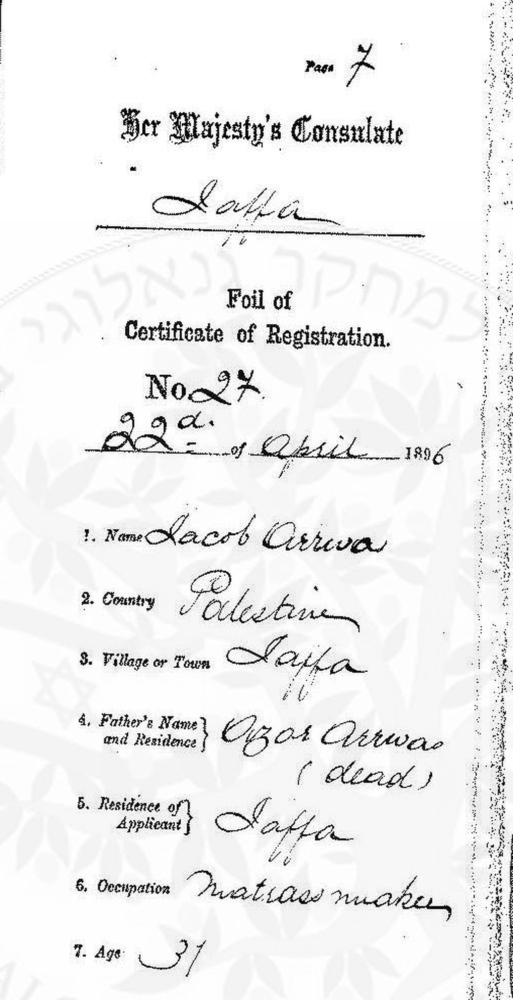
«Name: Jacob Arrwas · Country: Palestine · Village or Town: Jaffa · Father's Name and Residence: <strong>Azor Arrwas (dead)</strong> · Residence of Applicant: Jaffa · Occupation: <strong>Matrass maker</strong> · Age: <strong>31</strong>». במהדורה 47 שויך יעקב לענף אלעזר <strong>על סמך המקצוע בלבד</strong> — אלעזר ארואץ עסק במזרנים ביפו לפי מפקד 1855 — ודורג «ככל הנראה»; כאן שם האב עומד ברשומה. בטופסו השני, מ-11.7.1902, נכתב «Father's Name: <strong>Azar</strong>» והמקצוע כבר «Merchant», בגיל 37. הכתיב Azor/Azar הוא אותו גלגול שמות המתועד בענף — <strong>אלעזר · עזר · אזר</strong> — החוזר גם בדור הבא (אזר בן יוסף אליהו, עזה 1904). גיל 31 גוזר לידה ~1865 ביפו. ארכיון המדינה, מסמך 27; IGRA 217. דירוג: תוכן הטפסים — מאומת; זיהוי אזר עם אלעזר של 1855 — כמעט ודאי, עלייה מ«ככל הנראה» של מהדורה 47.
העותק המקומי · המסמך המקורי ↗
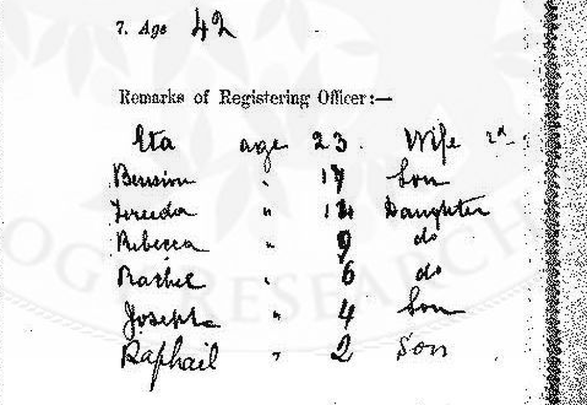
הערות הפקיד בטופסו של מיכאל בן שלמה: «<strong>Eta</strong> age <strong>23</strong> — <strong>Wife 2nd</strong> · <strong>Bension</strong> — 17 — son · <strong>Freeda</strong> — 14 — Daughter · <strong>Rebecca</strong> — 9 · <strong>Rachel</strong> — 6 · <strong>Joseph</strong> — 4 — son · <strong>Raphael</strong> — <strong>2</strong> — Son». שני דברים: הפקיד כתב במפורש <strong>«Wife 2nd»</strong>, ובכך התבנית שדורגה במהדורה 54 «ככל הנראה» — הרעיה הנוכחית לצד כל ילדי האיש — הופכת <strong>מאומתת</strong>; ונוסף ילד שישי שלא היה ברשימת 1903, <strong>רפאל, יליד ~1904</strong> — והוא, ככל הנראה, אביהם של שני העולים מקהיר שבאיור הבא. ארכיון המדינה; IGRA 988. דירוג: תוכן העמוד — מאומת.
העותק המקומי · המסמך המקורי ↗
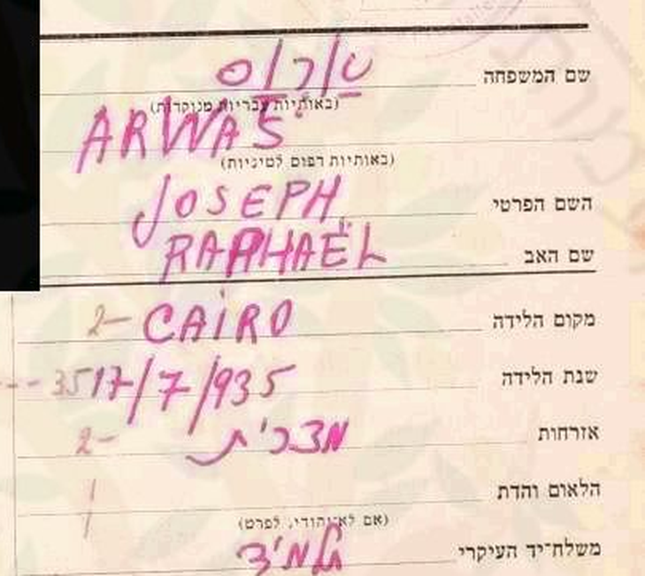
<strong>הקצה המצרי שיעד T18 חיפש.</strong> שאלון רישום לעולה של מדינת ישראל, חותמת כניסה «חיפה, 1 במאי 1950»: שם המשפחה <strong>ארואס · ARWAS</strong>, השם הפרטי <strong>JOSEPH</strong>, <strong>שם האב: RAPHAËL</strong>, מקום הלידה <strong>CAIRO</strong>, תאריך הלידה <strong>17.7.1935</strong>, אזרחות <strong>מצרית</strong>, משלח יד תלמיד. אחיו <strong>שמעון</strong> (יליד 31.6.1934, אותו אב) נכנס בחיפה שבעה שבועות אחר כך. ולנו יש <strong>רפאל ארואס יליד ~1904 ביפו</strong>, בנו השישי של מיכאל בן שלמה — שהיה כבן עשר בגירוש נתיני בריטניה מיפו ב-1914. ארכיון המדינה, גל-14825/6; IGRA 6786. דירוג: תוכן השאלון — מאומת; זיהוי «רפאל» עם רפאל בן מיכאל — ככל הנראה: אין רשומה הנוקבת בשם הסב, ורפאל היה שם חוזר בענף.
העותק המקומי · המסמך המקורי ↗
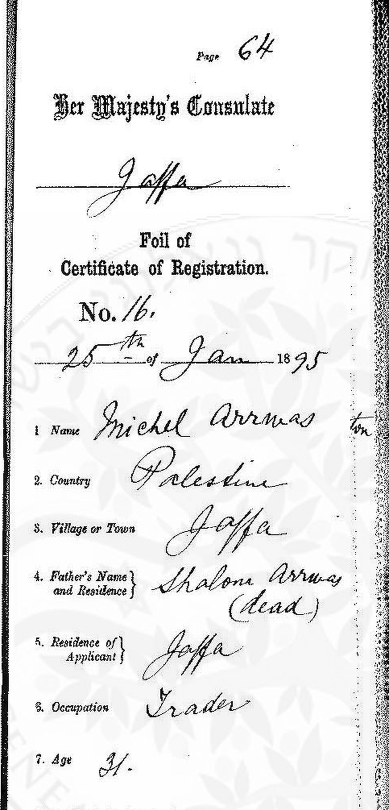
הפטרונים של מיכאל — האח השלישי שבספר המשפחה — עומד כאן <strong>תשע שנים לפני</strong> טופס ינואר 1904 שנקרא במהדורה 47, ובכתיב <strong>Shalom</strong> ולא <strong>Solomon</strong>: אותו אב, שני כתיבים באותה קונסוליה, כשם שאצל אליהו נכתב Shlomo ב-1885 ו-Shalom ב-1893. «Village or Town: Jaffa · Occupation: Trader · Age: 31» ⇒ יליד ~1864 ביפו — הצעיר שבבני שלמה שאותרו (אליהו ~1851/53, יוסף ~1852, מיכאל ~1864). ארכיון המדינה, מספר מערכת 0013z0r, מסמך 16; IGRA 151. דירוג: תוכן הטופס — מאומת; זיהויו עם «Michel Arruas בן Solomon» של 1904 — כמעט ודאי.
העותק המקומי · המסמך המקורי ↗
«<strong>Wife Eta</strong> — Age <strong>20</strong> years · <strong>Son Bension</strong> — <strong>14</strong> · <strong>Daughter Fareedeh</strong> — <strong>11</strong> · d. <strong>Rebecca</strong> — <strong>6</strong> · d. <strong>Rachel</strong> — <strong>3</strong> · <strong>Son Joseph</strong> — <strong>1</strong>» — חמישה מנכדיו של שלמה מגיברלטר בשמותיהם, בני-דודיה של מרים: בן ציון (~1888), פרידה (~1891), רבקה (~1897), רחל (~1900) ויוסף (~1902). בטופס המקביל מ-1895 רשומה רעייתו <strong>רחל</strong> בת 30 ובניה בן ציון (7) ופרידה (4). <strong>תבנית שנרשמת:</strong> אטה בת 20 אינה יכולה להיות אמו של בן בן 14 — הקונסוליה רשמה את הרעיה הנוכחית ואת כל ילדי האיש, בדיוק כמו שרה (29) מול שלמה (19) אצל יוסף ב-1893. ארכיון המדינה; IGRA 585. דירוג: תוכן העמוד — מאומת; אטה כאישה שנייה — ככל הנראה.
העותק המקומי · המסמך המקורי ↗
הפטרונים של <strong>סבה של רוזה</strong> עומד כאן לראשונה על טופס ולא על כרטיס אינדקס: «Name: Youssef Arrwas · Country: Palestine · Village or Town: Jaffa · Father's Name and Residence: <strong>Solomon Arwas</strong> · Residence of Applicant: Jaffa · Occupation: Servant · Age: 41». עד כה נשען «יוסף בן סולומון» על רישום 1869 בלבד. <strong>מתיחות שנרשמת:</strong> רישום 1869 נוקב בן 24 (⇒ ~1845) ומקצוע «Saraff» (חלפן), וכאן בן 41 (⇒ ~1852) ומקצוע «Servant» — שבע שנים ושני מקצועות. ארכיון המדינה, מספר מערכת 0013z0r, מסמך 30; IGRA 76. דירוג: תוכן הטופס — מאומת; זהותו עם יוסף שברישום 1869 — ככל הנראה.
העותק המקומי · המסמך המקורי ↗
בעמוד הנגדי, בכתב ידו של אותו פקיד: «<strong>Sarah his wife</strong> — Aged <strong>29</strong> · <strong>Shelomo</strong> — Son — <strong>19</strong> · <strong>Moshe</strong> — " — <strong>14</strong> · <strong>Refael</strong> — " — <strong>3</strong> · <strong>Reyna</strong> — " daughter — <strong>10</strong>». ספר המשפחה מסר אח אחד למרים — שלמה; כאן עומדים ארבעה אחים ואחות: שלמה (~1874), משה (~1879), ריינה (~1883) ורפאל (~1890). מרים עצמה נעדרת כצפוי — היא כבר הייתה נשואה ליצחק פריינטה, ובנם אברהם-אברמינו נולד ב-14.3.1891. <strong>אנומליה שנרשמת:</strong> שרה בת 29 אינה יכולה להיות אמם של בן בן 19 ושל מרים ילידת 1875 — ככל הנראה אישה שנייה (העץ נוקב גרסיה כאם מרים). דירוג: תוכן העמוד — מאומת; שרה כאישה שנייה — ככל הנראה.
העותק המקומי · המסמך המקורי ↗
<strong>שלמה בן יוסף — אחיה של מרים — עומד לראשונה ברשומת מדינה בת-זמנה.</strong> «Village or Town: Jaffa · Father's Name and Residence: <strong>Yousef Arruas (dead)</strong> · Occupation: <strong>Farmer</strong> · Age: <strong>27</strong>» ⇒ יליד ~1874/5, בהתאמה כמעט מלאה ל-1875/6 שבספר המשפחה; ומקצוע חקלאי, ההולם את סביבת מקווה ישראל שבה פעל אביו. בהערות הפקיד: «In virtue of a Passport issued by Mr. Consul <strong>Dickson</strong> No. 6 dated at <strong>Jerusalem July 7th 1900</strong>». והמילה «dead» <strong>תוחמת את פטירת יוסף</strong> בין 27.4.1893 (טופס 31) ל-26.3.1902. זהו גם המועמד הראשון לאבהות על מרקו יליד מצרים 1916. ארכיון המדינה; IGRA 515. דירוג: תוכן הטופס — מאומת; זיהויו עם שלמה אחי-מרים — כמעט ודאי.
העותק המקומי · המסמך המקורי ↗
חתימתו של מכתב פרידה מעזה לרופא הממשלתי ד"ר א' כהן: «אסירי תודה לכבודו הבע"ח בחודש העשירי תרנ"ו. פעה"ק <strong>עזה</strong> תיכב"ץ. <strong>אליהו ארואץ. (מנהל עדת ישראל בעזה).</strong>» זהו האזכור המוקדם ביותר של האיש בעיתונות, והוא נותן לו <strong>תואר</strong> — שמונה שנים לפני פרשת 1904, שמתבררת מכאן כעימות עם נושא המשרה הקהילתית ולא כמריבת יחיד תקיף. דירוג: החתימה והתואר — מאומת; זהות החותם עם אליהו בן שלמה שבטפסי הקונסוליה — כמעט ודאי.
העותק המקומי · המסמך המקורי ↗
שבוע אחרי ידיעת עזה, ובתשובה להערת העורך שביקשה מארואץ לברר את הדבר. במרכזה: «וגם שאלו אנשי עזה, איך אתה מגרש האנשים אשר באו להתפלל לפני ה', אין זה כי אם בית אלהים? ויאמר א' ארוואץ: <strong>זה בית אליהו ארוואץ ולא בית אלהים</strong>». החתומים: שמעון גבאי · מאיר גבאי · בנימין הכהן · יעקב הכהן · <strong>יוסף אליהו ארואץ</strong> · הירש שטרנבלט · אברהם הרשקוביץ; ובנספח — «ואני החותם למטה קנס אותי אליהו ארואץ חמשה בשליק ולקח הטלית שלי בעבור שלקחתי מצה מרבי יצחק שוורץ, חתמתי את שמי — שמעון מחפוץ (התמני)». <strong>חתימתו של יוסף אליהו — בן-דודו — היא האישוש שהפרשה היא סכסוך בתוך המשפחה.</strong> דירוג: תוכן המכתב והחתימות — מאומת; העובדות שבמחלוקת — אינן מדורגות.
העותק המקומי · המסמך המקורי ↗
ההגנה: המצה מיפו נפסלה כחמץ, והגבאים — «האדון ארוואץ הי"ו והאדון יוסף בן יאיר הי"ו» — קנו כשרה <strong>מכיסם</strong> וחלקו «לכל נפש אחד רוטל מצה ושני אונקאס יין». ועל היחס לאשכנזים: «בעזה לא ימצא כי אם שני בתים אשכנזים… ובפרט <strong>למהגרים אשכנזים הבאים דרך אל-עריש</strong> מקבלים אותם בסבר פנים יפות ושולחים אותם ליפו… <strong>ולולא הם לא היה ישוב בעזה</strong>». בין עשרים החתומים שני שמות חדשים לענף: <strong>אברהם ארואץ</strong> ו<strong>רפאל אברהם ארואץ</strong>. דירוג: תוכן המכתב והחתימות — מאומת; העובדות שבמחלוקת — אינן מדורגות; יחסם המשפחתי של אברהם ורפאל אברהם — טעון אימות.
העותק המקומי · המסמך המקורי ↗
מתוך «הנקבץ מצעירי הספרדים ע"י האדונים יוסף דמשקאי ויעקב אלמאליח», ברשימת התרומות לשדודי קישינוב: «…אליהו כהן, שלמה חיים כהן, <strong>משה חי ארואץ</strong>, חיים בכר כ"א 3. יוסף קאסוטו 2,20. שמואל אלעלוף, מרדכי לוי ענתבי, <strong>יעקב אליהו ארואץ</strong> כ"א 2. אהרן סירי, <strong>בכור בן משה ארואץ</strong>, אהרן סבאג כ"א 1,20…». מקבץ ארואץ ירושלמי מתועד, ואחד מהם נושא פטרונים מפורש — הדבר מצטרף לרשומות פנקס נתיני בריטניה של ירושלים ולשדה «Village or Town: Jerusalem» שבטופס 1885. דירוג: תוכן הרשימה — מאומת; קשרם לענף הגיברלטרי — טעון אימות.
העותק המקומי · המסמך המקורי ↗
ממכתב מאלכסנדריה: «לפני ששה חדשים בערך נוסדה בעירנו ע"י הצעירים האדונים משה אביכזיר ו<strong>משה ארואץ</strong>, חברה בשם „<strong>האחוה היהודית</strong>", מטרתה להעיר את ההשכלה בקרב צעירי אלכסנדריה. ויפתחו אולם גדול, ובית ספרים קטן, ובשולחן הקריאה נמצאים כל העתונים המקומיים ועתוני חו"ל». נוכחות ארואץ באלכסנדריה שבע שנים לפני גירוש נתיני החוץ מיפו — <strong>אך ראו את האיור הבא</strong>: באותה עיר ובאותן שנים פעל גם ארואץ מן המשפחה המרוקאית, ולכן השיוך אינו מוכרע. דירוג: תוכן הידיעה — מאומת; שיוכו לענף הגיברלטרי — טעון אימות.
העותק המקומי · המסמך המקורי ↗
«אלכסנדריה כ"ב אייר אתתל"ו. <strong>שליח מארה"ק</strong>. בא הנה הרב המופלא <strong>מהר"י ארואץ, ממלא מקום החכם באשי ביפו</strong>, לקבץ נדבות לבית החולים „משגב לדך" בירושלם». המשך הידיעה מתאר שאסף בבורסה של אלכסנדריה 160 לי"ש ובקהיר וכפריה כשלוש מאות. זהו <strong>הרב יוסף בן משה ארואץ ממוגדור — המשפחה המרוקאית האחרת</strong>, שפרק 8 מזהיר מפניה; הידיעה מתארכת את מעורבותו בהנהגת יפו ל-1906, שבע שנים לפני 1913 שבספרות. האיור נכלל כאן <strong>כדי לתחום את הזהירות</strong>: בשנים ובעיר האלה אין לייחס שם ארואץ לענף הגיברלטרי בלא ראיה נוספת. דירוג: תוכן הידיעה — מאומת; זיהוי «מהר"י ארואץ» עם הרב יוסף ממוגדור — ככל הנראה.
העותק המקומי · המסמך המקורי ↗
דף שנמצא בעיזבון יצחק פריינטה ובו רשם, בצרפתית, את לידות ילדיו — ובהם אברהם-אברמינו «fils de Isaac Pariente et de Miriam Arwas, 14 Mars 1891», ויקטורין (לאה) 13.3.1901, רוזה 31.12.1902, משה 20.4.1905, גרציה ספטמבר 1894 — ובשורה האחרונה: «mariage 1922 Juillet». צולם בספר המשפחה (2021), עמ' 18; העותק המקומי המלא — הספר כולו. דירוג: תוכן הדף — מאומת, נקרא בעיניים; ייחוסו ליד יצחק — כמעט ודאי; זהות «mariage 1922» כחתונת רוזה ואהרון — ככל הנראה.
העותק המקומי · המסמך המקורי ↗
הכתובה, המצולמת בספר המשפחה (עמ' 124) ומתויגת שם «תרפ"ג». בגוש הטקסט קריאים בבירור, בכתב מודגש: החתן אהרן בן אברהם צדוק, הכלה רוזא בת יצחק פאריינטי, והסכום «שלוש מאות לי"ם». זהו המסמך הראשוני בן-הזמן הראשון הנוקב בשם אביו של אהרון — אברהם. הערת תיארוך: גוף הספר נוקב «נישאו במקוה ישראל ב-1922», דף הרישום — «mariage 1922 Juillet» (תמוז תרפ"ב), והכיתוב — תרפ"ג; שורת התאריך בכתובה עצמה אינה קריאה בצילום — טעון דיוק. הגדלת גוש הטקסט — בקישור העותק המקומי. דירוג: שמות החתן, הכלה והאבות — מאומת; שנת החתונה 1922/תרפ"ג — טעון דיוק.
העותק המקומי · המסמך המקורי ↗
«מ"ק ... הנפטרת בקצ"י מ' מרים די פאריינטי, נע' ביום שב"ק ז' לח' תמוז התרע"ו, תנצב"ה» (קיצורי שורות הפתיחה אינם חדים בצילום) — 8 ביולי 1916, במגפת הכולירה. המצבה: לוח שיש סדוק שנטל יצחק ממטבח בית הספר של מקווה ישראל, והיא ניצבת בטרומפלדור עד היום, «בחלקה השמאלי התחתון» כלשון כיתוב הספר (עמ' 23). תאריך הפטירה הראשוני הראשון של סבתא-רבתא של אברהם. דירוג: תאריך הפטירה ומקום הקבורה — מאומת, המצבה נקראה בעיניים; הנסיבות — ככל הנראה, פרוזת הספר.
העותק המקומי · המסמך המקורי ↗
כיתוב הספר (עמ' 56): «מקוה ישראל, 1892. עומדים בשורה העליונה מימין יצחק פריינטה, לידו עומד יוסף ארוואץ (אבי מרים ארוואץ-פריינטה), במרכז מנהל בית-הספר החקלאי מקוה ישראל, יוסף נייגו וצוות העובדים». יוסף ארואס — «סוחר מיפו» וסוכן הקניות של מקווה ישראל לפי הספר, הצראף של רשומת הקונסוליה מ-1869 לפי הקורפוס — לצד חתנו. דירוג: זיהוי הדמויות — ככל הנראה, על אחריות כיתוב הספר.
העותק המקומי · המסמך המקורי ↗
פריט 9700.0004.012 באוסף האלבום של ישראל. הסב יצחק «הפפו» במרכז, מוקף נכדיו; לפי רישום האתר עומדים מימין: מיקו בכר, «אברהם צדוק» — נושא המחקר, בן עשר או אחת-עשרה (חודש הצילום אינו ידוע) — «יעל צדוק», עמנואל ביטרן, מרים בלומברג, גאולה ביטרן, בנימין בלומברג; בשורה השנייה, לצד הסב: «מרים צדוק» (קיקה) ומרים בכר; למטה: דוד בלומברג ועליזה ביטרן. עמנואל ביטרן נפל לימים במלחמת העצמאות. דירוג: זיהוי הדמויות — ככל הנראה, על אחריות כיתוב האתר.
העותק המקומי · המסמך המקורי ↗
פריט 9700.0004.008: צילום ישיר של המצבה — לצד הצילום שבספר (איור קודם): «מ' מרים די פאריינטי נ"ע יום שב"ק ז' לח' תמוז התרע"ו תנצב"ה». בדיקת לוח השנה: ז' בתמוז תרע"ו חל בשבת, 8.7.1916 — «יום שב"ק» שעל האבן מתאשש. דירוג: מאומת — נקרא בעיניים משני צילומים בלתי-תלויים.
העותק המקומי · המסמך המקורי ↗
פריט 9700.0004.036: גב תצלומו של אברהם-אברמינו, בלאדינו באותיות לטיניות: «Souvenir a ma très chère tante Samouha afin qu'il voit que Abramino no se olvidé de ella y siempre se acuerda — Albert Pariente» — «מזכרת לדודתי היקרה מאוד סמוחה, שתראה שאברמינו לא שכח אותה ותמיד זוכר». כתב ידו וחתימתו של הבכור שירד לארגנטינה — הגשר בין «אברמינו» של דף הרישום ל«אלברט» של ארגנטינה. דירוג: המסמך — מאומת; תיארוך 1913-1915 — כיתוב האתר, ככל הנראה.
העותק המקומי · המסמך המקורי ↗
נספח ג: רשימת מקורות
רשימת המקורות שעליהם נשען המאמר, מסודרת לפי סוג. כל המקורות הם מקורות מקוונים או סריקות שנצפו במהלך אוגוסט 2026; תאריך הצפייה מצוין בכל ערך, משום שחלק מהמאגרים משתנים בזמן — רשומות נוספות אליהם, וקובצי סריקה שהיו זמינים חדלו להיות מוגשים. לכל ערך: מהות המקור ומעמדו (ראשוני, משני או מקור עזר), ההפניה החיצונית למסמך המקורי, העותק המקומי השמור בתיקיית המחקר, ומה בדיוק הוא מוכיח. תקן העותק המקומי: "עותק מקומי" פירושו עותק של המסמך עצמו — סריקת הרשומה, קובץ ה-PDF של המקור, תצלום העמוד — ולא צילום של דף האינטרנט שמפנה אליו. מקורות שאין מאחוריהם מסמך נפרד (ערך אנציקלופדי, עמוד מוסדי, מאמר מקוון) מסומנים כמקור עזר מקוון, ולא מיוצר להם "עותק" מלאכותי. בארבעה ערכים חסר אחד משני הקישורים, והדבר מצוין בערך עצמו — עם דירוג הוודאות הנגזר ממנו. הסימון "מצוטט בדוח" שמתחת לכל ערך מוליך חזרה אל כל מקום בגוף המאמר שמסתמך עליו. ערך שאינו מצוטט בגוף המאמר מסומן במפורש.
מקורות ראשוניים / משפחתיים
1 כרטיס החבר של אברהם צדוק — עמותת דור הפלמ״ח (עוגן המחקר)
- מהות: עמוד חבר פלמ״ח ובו תולדות חיים מלאות; לפי המצוין בו, "המידע נמסר על ידי שני בניו: עדו וזיו".
- מקור חיצוני: palmach.org.il — צדוק אברהם
- עותק מקומי: טקסט מלא · צילום העמוד
- מה הוא מוכיח: זהות אברהם; לידה 1925 מקווה ישראל; הורים אהרון (אופה בית הספר) ורוזה לבית פריינטה; אחים יעל, מרים ("קיקה"), איציק, יוסי; רעיה רחל (רפפורט/פרקש, ניצולת שואה, נישואין 1950); בנים עדו וזיו; שירות בפלמ״ח (פלוגה ד׳) ובחטיבת קרייתי (לוד ורמלה); עבודה בקואופרטיב "דר"; פטירה 1/1/2017 וקבורה בירקון.
- נצפה: אוגוסט 2026
{kind=link}
1ב זיכרונות אהרון צדוק ומכתבו לנכדו (1971/72) (מקור ראשוני — צד האב)
- מהות: קטעי זיכרונות שכתב אהרון צדוק (~1897 - 1981) על ילדותו בצנעא, ותעתיק מכתבו האוטוביוגרפי לנכדו גיל שחם למשימת בר-מצווה "דור לדור יביע אומר" (חוקוק, 1971/72). תעתיקים משפחתיים שהוקלדו בידי גיל שחם (2003) ונשמרו במשפחה; הועלו למחקר בידי המשתמש.
- עותק מקומי: הזיכרונות והמכתב (טקסט) · המכתב לגיל · גרסת "אל נכדי" · קובצי המקור (doc) · תמצית והערות
- מה הוא מוכיח (מקור ראשוני): לידה ~1897 בצנעא; משפחת צאלח ("רבנים ולמדנים, דיינים ושוחטים"; צורפים מדורי דורות; צאלח ← צדוק בארץ); מות האב בעדן (~1900); מות האם והאח ברעב צנעא 1904 והצלתו שלו בגיל 6-7; גידולו אצל דודו; נדודיו לעדן ותווהי; עלייה בתשרי תרע"ה 1914 דרך נמל יפו; אופה מקווה ישראל עד שנות ה-60 ומזכיר פועלי מקווה ישראל; עריכת "שבות תימן". (תאריך הפטירה 1981 — מכותרת התעתיק; אומת במהדורה 36 במודעת האבל של המשפחה, "דבר" 19.11.1981 — ראו ערך 30.) מפריך את המסורת "עלה בגיל 4".
- נצפה: אוגוסט 2026
- הערה: אין הפניה חיצונית — מסמך משפחתי שאין לו כתובת ציבורית.
1ג "שבות תימן" (תש"ה 1945) — הספרייה הלאומית
- מהות: רשומת קטלוג של הקובץ "שבות תימן", "הוכן והובא לדפוס על ידי ישראל ישעיהו, אהרן צדוק".
- מקור חיצוני: הספרייה הלאומית — שבות תימן
- מה הוא מוכיח: אהרון צדוק היה עורך-שותף (עם ישראל ישעיהו, לימים יו"ר הכנסת) של הקובץ המכונן על יהדות תימן — אישוש חיצוני לעדותו במכתב ולמעמדו הציבורי.
- נצפה: אוגוסט 2026
- הערה: אין עותק מקומי — רשומת קטלוג בלבד; הקובץ עצמו לא אותר.
1ד מסירות משפחתיות בעל-פה (2026) (מקור משפחתי — ללא מסמך)
- מהות: פרטים שנמסרו ישירות בידי בני המשפחה במהלך המחקר ואינם נשענים על מסמך. מתועדים ביומן ייעודי כדי שלכל טענה יהיה מקור נקוב — גם כשהמקור הוא זיכרון ולא רשומה.
- עותק מקומי: יומן המסירות המשפחתיות
- מה הוא מוכיח: שנת פטירתה של שושנה רוזה צדוק — 1979 (נמסר אוגוסט 2026). עד כה היה זה פער פתוח מפורש: הרשומה המתועדת המאוחרת ביותר של רוזה הייתה פנקס הבוחרים תש"ט (1949), ושנת הפטירה לא אותרה באף מאגר, ובכלל זה כל מאגרי הקבורה של IGRA. הנתון סביר לחלוטין (ילידת 1903 — נפטרה כבת 76) והוא הערך הטוב ביותר שיש, אך אין לו רשומה תומכת. דירוג: טעון אימות — לא מתוך ספק בזיכרון המוסר אלא לשם אחידות הסולם; ובקורפוס הזה יש תקדים ממשי — המסורת המשפחתית קבעה 1981 לפטירת אהרון, מודעת "מעריב" מ-22.1.1980 העמידה זאת זמנית בספק, ובמהדורה 36 הוכרע: המסורת צדקה — מודעת האבל של המשפחה ("דבר", 19.11.1981) אימתה את השנה, ומודעת 1980 התבררה כשל משפחה אחרת.
- עדכון (מהדורות 35-37): המסירה אוששה בדפוס בספר המשפחה והדירוג עלה לכמעט ודאי; לידת רוזה דויקה ל-31.12.1902 (דף הרישום); ובמהדורה 38 הוכרע תאריך הפטירה המלא: 3.4.1979 (רשומת הקבורה בחולון, ערך 34) — מועמד תיק העיזבון (25.6.1979) נדחה, ו"04/1979" של עץ כהן אושש. נוסח הדירוג המקורי לעיל נשמר כתיעוד היסטורי של רגע המסירה.
- הערה: אין הפניה חיצונית — מסירה בעל-פה שאין לה כתובת ציבורית. הערך אינו מצוטט עוד ישירות בגוף הדוח (הטענה נשענת כיום על ערכים 2, 30-32 ו-34).
- נצפה: אוגוסט 2026
מקור משפחתי — עץ גנאלוגי
1א עץ MyHeritage — "Zadok Web Site" (Smart Match)
- מהות: דף Discoveries בעץ המשפחה של המשתמש, המרחיב את השורש כמה דורות אחורה (מקור משני — עץ משפחתי, לא רשומה ראשונית).
- עותק מקומי: עמוד 1 · עמוד 2 · עמוד 3 · תמצית והערות
- מה הוא מוכיח (בכפוף לדירוג משני): תאריך לידה 16.9.1925; שם האם המלא שושנה רוזה; השם התימני המקורי צאלח והסבים מצד אב אברהם צדוק (צאלח) וסעדה; כינוי הסב יצחק "פפו" פריינטה ואביו אברהם פריינטה; מרים לבית ארואס והוריה יוסף וגרסיה ארואס, ומעליהם שלמה ארואס כאבי-יוסף (במהדורה 8 הודח כשם-חוזר; במהדורה 11 שב והתאשש חלקית מרשומת הקונסוליה הבריטית 1869 — דירוג: ככל הנראה; ראו פריטים 9א ו-15); ושמות אחי/אחיות רוזה (פלורין בלומברג, ויקטוריה בכר, חנה גרסיה ביטרן; משה, יוסף, רפאל רחמים, אברהם אלברט פריינטה).
- נצפה: אוגוסט 2026
- הערה: אין הפניה חיצונית — עץ פרטי, נגיש רק לבעליו.
{kind=link}
{kind=link}
{kind=link}
אוסף "האלבום של ישראל" — מקורות משפחתיים דיגיטליים (מהדורה 37)
31 אוסף פריינטה ב"האלבום של ישראל" (ישראל נגלית לעין) — אוסף 9700.0004 (שבעה פריטים מצולמים; ובהם צילומו המוקדם ביותר של אברהם)
- מהות: אוסף דיגיטלי משפחתי באתר israelalbum.org.il. הפריטים שנמסרו למחקר: דף רישום הלידות בכתב יד יצחק פריינטה (סריקה נקייה; פריט .007, "בני משפחת פריינטה במקווה ישראל"); צילום ישיר של מצבת מרים בטרומפלדור (.008); "יצחק פריינטה עם נכדיו במקוה ישראל", 1936 (.012); תעודת הגמר (Certificat) של ניסים בכר, אליאנס/מקוה ישראל 1917 (.032); גלוית "אברמינו" בלאדינו לדודה סמוחה, 1913-1915 (.036); כתובת ויקטוריה ונסים בכר, יפו תרפ"ד/1924 (.044); וגלוית ויקטוריה מווינה, 1925 (.046).
- מקור חיצוני: עמוד האוסף · פריטים: .007 · .008 · .012 · .032 · .036 · .044 · .046
- עותק מקומי: דף הרישום · מצבת מרים · 1936 — יצחק והנכדים · תעודת בכר 1917 · גלוית אברמינו · כתובת 1924 · גלוית וינה 1925 · קובץ הממצאים
- מה הוא מוכיח: אישור שורה-שורה של דף רישום הלידות (רוזה — 31.12.1902); פטירת מרים ז' בתמוז תרע"ו (8.7.1916, שבת — אומת בלוח השנה) בקריאה ישירה מן האבן; תיעוד צילומי של אברהם בן ה-11 לצד סבו ואחיותיו (1936, זיהויים על אחריות כיתוב האתר); חתימת "Albert Pariente" בכתב ידו וזיקתו לדודה סמוחה; ניסים בכר יליד איזמיר, תלמיד מקוה 1913-1917; כתובת ויקטוריה-ניסים תרפ"ד; שהות ויקטוריה בווינה 1925 ("Cher Béhar" — אחרי הנישואין).
- נצפה: אוגוסט 2026
- הערה: דפי הפריטים באתר נטענים ב-JavaScript ואינם נשלפים אוטומטית; תגי הכותרת של כל דף אומתו אחד-אחד (22.8.2026) ונמצאו תואמים. שיוך דף הרישום לקוד .007 — כמעט ודאי (על סמך הכותרת בלבד).
{kind=link}
{kind=link}
{kind=link}
{kind=link}
{kind=link}
{kind=link}
{kind=link}
32 חנן כהן, "Descendant Tree of Izhak Pariente and Miriam Aruas" (נובמבר 2005) (עץ משפחתי משני — לשימוש זהיר)
- מהות: עץ צאצאים ורישום דורות (53 משפחות, עם מפתח שמות) שערך בן המשפחה המורחבת חנן כהן ב-2005 (בכותרת המקור: "Decendant Tree" — כך); צורף כנספח לאוסף האלבום של ישראל. כולל גם עץ גרפי עברי (פריט 9700.0004.001).
- מקור חיצוני: עמוד האוסף · העץ העברי — פריט .001
- עותק מקומי: תמצית מושחרת — עמוד השער ורישום הדורות 1-3, לאחר השחרת פרטי קשר וכל תאריך לידה מלא (יום/חודש/שנה) של ילידי 1926 ואילך · העץ העברי הגרפי
- מה הוא מוכיח (בכפוף לדירוג משני — ככל הנראה): יצחק פריינטה יליד ירושלים; סמוחה ("Simha Aruas") כאשתו השנייה; שנתוני אחי אברהם — מרים (קיקה) 1927, יצחק 1933, יוסי 1948; יעל 12.4.1923 (פטירתה "08/1997" — הופרך במהדורה 38: 9.8.1996; צדק בחודש בלבד); פטירת רוזה "04/1979" (אושש והדויק במהדורה 38: 3.4.1979, רשומת הקבורה — ערך 34); אשת משה — רבקה (בעץ העברי: רבקה עוזיאל). שתי שגיאות מוכחות מול מסמכים ראשוניים: רוזה "1905" (מול דף הרישום) ומרים "1918" (מול המצבה); ושני מתחים פתוחים מול מקורות משפחתיים: יצחק "1942" (מול הספר: 1944) ואברהם "19/09/1925" (מול MyHeritage: 16.9) — ראו קובץ הממצאים; אין לצטטו כפוסק.
- נצפה: אוגוסט 2026
- הערה: המסמך המלא גדוש פרטי אנשים חיים (טלפונים, כתובות, דוא"ל ותאריכי לידה) — ולכן הוא שמור בארכיון המחקר המשפחתי בלבד, אינו מקושר מכאן ומוחרג מעותק האתר; המקושרת היא תמצית מושחרת של הדורות ההיסטוריים (ממצא ביקורת, סבב 26). מצוטט בדוח רק לדורות ההיסטוריים.
33 עדות "סבתא ויקטוריה" — ויקטוריה בכר לבית פריינטה, 11.3.1991 (עדות בעל-פה של בת הבית — דור המייסדים)
- מהות: תמליל מודפס (סריקת המקור + הקלדה מחודשת) של ריאיון עם ויקטוריה בכר (13.3.1901 - 25.11.1995), בתם של יצחק ומרים, שנרשם יומיים לפני יום הולדתה התשעים; צורף כנספח לאוסף האלבום של ישראל. כולל גם את הערותיה לאלבום התמונות.
- מקור חיצוני: עמוד האוסף
- עותק מקומי: התמליל — הקלדה מחודשת לצד סריקות המקור · קובץ הממצאים
- מה הוא מוכיח (עדות בעל-פה — ככל הנראה, אלא אם אושש): קידושי יצחק-סמוחה ללא חיי זוגיות ("הם ערכו קידושין אבל מעולם לא חיו כבני זוג"), והזיהוי "דודה שמחה (שמויחה)" — סמוחה = שמחה; גורל יוסף — נשלח ללבנון במלחמת העולם הראשונה, נלקח שם לצבא התורכי ולא שב, והאב חיפשו בארצות שכנות; אלברט — נישא בארגנטינה ולו ארבעה ילדים, סירב לשוב; מאורעות 1921 — "אל תגעו בחווג'ה פריינטה"; מות האב בטיפולה וקבורתו "בתל אביב"; זיכרון מוצא צפון-אפריקאי הנקשר בעדות לענף ארואס ("משפחת ארואס — משפחה עשירה מאד שבאה ארצה מצפון אפריקה") — מתלכד עם ממצא גיברלטר-טטואן של הקורפוס — לצד "אבי יליד ירושלים"; שהות וינה באמצע שנות העשרים. סתירה מתועדת: "כשהייתי כבת 7-8 נפטרה אמי מחולירע" — מול המצבה (1916; ויקטוריה בת 15) — המצבה גוברת.
- נצפה: אוגוסט 2026
34 מרשם הקבורה העולמי JOWBR — עשר רשומות הקבורה של המשפחה (הרשומות שסגרו את תאריכי הפטירה, מהדורות 38-39)
- מהות: JewishGen Online Worldwide Burial Registry (JOWBR), אוסף ישראל — אינדקס מצבות מצולמות (מקורו העיקרי: BillionGraves). עשר רשומות משפחתיות אותרו בשני סבבים (ליל 23.8.2026 ובוקרו): שושנה רוזה צדוק — 3.4.1979 (ו' בניסן תשל"ט), בת 76, אביה יצחק, חולון, לצד אהרן (BG 14075626); אהרן צדוק — 18.11.1981 (כ"א בחשוון תשמ"ב), בן 86, אביו אברהם, חולון, לצד רוזה (BG 14075625); יעל פרחי — 9.8.1996 (כ"ד באב תשנ"ו), ילידת 1923, בת אהרן ושושנה, קריית שאול; ויקטוריה בכר — 25.11.1995 (ב' בכסלו תשנ"ו), ילידת ~1901, אביה יצחק פריינטה, חולון, לצד ניסים בכר — 2.2.1974 (י' בשבט תשל"ד), אביו אברהם; משה פרינטה — 23.11.1983 (י"ז בכסלו תשמ"ד), אמו מרים, קריית שאול, לצד רעייתו רבקה פרינטה — 27.3.1979 (כ"ח באדר תשל"ט), הורה נקוב: שמחה; בן ציון (ביטו) פרחי — 7.1.1992 (ב' בשבט תשנ"ב), יליד ~1919, אביו חיים, קריית שאול; פלורין בלומברג — 11.7.1974 (כ"א בתמוז תשל"ד), חולון, לצד יצחק בלומברג — 12.1.1987 (י"א בטבת תשמ"ז), יליד ~1896, הוריו יוסף וסופיה. כל המרות הלוח אומתו חישובית.
- מקור חיצוני: רוזה · אהרן · יעל · ויקטוריה · ניסים · משה · רבקה · ביטו · פלורין · יצחק בלומברג
- עותק מקומי: קובץ הממצאים — הרשומות, השיטה והממצאים השליליים
- מה הוא מוכיח: תאריכי הפטירה המלאים של רוזה (3.4.1979 — הכרעת שלושת המועמדים), אהרן (18.11.1981 — היום המדויק), יעל (9.8.1996 — הכרעת מתח 1996/97), ויקטוריה, ניסים, משה, רבקה, ביטו, פלורין ויצחק בלומברג — כל שנות הספר דויקו ליום; אישושי-אבן לשמות הורים: יצחק אבי-רוזה, אברהם אבי-אהרן, אהרן ושושנה הורי-יעל, יצחק פריינטה אבי-ויקטוריה, מרים אם-משה (אישוש-אבן ראשון לשאלת האם), חיים אבי-ביטו; ושכנויות הקברים (אהרן↔רוזה, ויקטוריה↔ניסים, משה↔רבקה, פלורין↔יצחק) — הגאוגרפיה המשפחתית: אשכול חולון ואשכול קריית שאול. ממצאים שליליים מתועדים: אברהם (2017, ירקון) אינו באינדקס — פער כיסוי; דור המייסדים (יצחק פפו, מרים, סמוחה) וגרסיה ביטרן — בתי העלמין/התקופות אינם מכוסים; אין יוסף פריינטה בקבורות ביירות; ארואס אינם במאגרי גיברלטר — ובמהדורה 40 נסרק מפקד 1791 ישירות לפי תחיליות שם משפחה, עם שאילתות בקרה, ואין בו ולו שם אחד הפותח ב-AR; באותה סריקה התברר שאשכול פריינטה הגיברלטרי הוא מגרבי ("Barbary") ואינו הענף הסלוניקאי שלנו (התיעוד). (שני ממצאי-שלילה ממהדורה 38 — "ביטו אינו באינדקס" ו"המשפחה הגרעינית אינה באוסף" — תוקנו במהדורה 39; ראו קובץ הממצאים.)
- נצפה: אוגוסט 2026
- הערה: אינדקס של מצבות מצולמות — לא צילומי המצבות עצמם; הדירוג כמעט ודאי, וצפייה בצילומי BillionGraves (יעד T9, דורש דפדפן) תעלה למאומת. הזיהויים ודאיים למעשה בזכות הצלבת שם מלא + גיל + שמות הורים + שכנות קברים.
מקורות חיצוניים לאישוש
2 ספר "משפחת פריינטה: מקוה ישראל" (גיל שחם, 2021) — הספר המלא (הועשר במהדורה 35: העותק המלא נמסר בידי המשפחה)
- מהות: ספר משפחה (תשפ"א 2021, 215 עמ'), תחקיר, איסוף, כתיבה ועריכה: גיל שחם — נכדם של רוזה ואהרון (בן קיקה וחיימק'ה), נין יצחק ומרים פריינטה; עיצוב: דפנה סרוסי (צדוק) — בתו של איציק צדוק, כמתברר מפרק המשפחה בספר עצמו. מקור משני משפחתי הנשען על זיכרונות, ראיונות, ארכיון מקווה ישראל, הספרייה הלאומית ויד בן צבי — אך משובצים בו צילומי מסמכים ראשוניים: דף רישום הלידות בכתב ידו של יצחק פריינטה, כתובת אהרן ורוזה, מצבת מרים בטרומפלדור, קופסת חמישים שנות העבודה (1930), מכתבים ופתקים.
- מקור חיצוני: רשומת הספרייה הלאומית — מס' מערכת 997010400325605171
- עותק מקומי: הספר המלא, גרסת ההדפסה (PDF) · ממצאי הקריאה המלאה, לפי עמודים · דף רישום הלידות · הכתובה · מצבת מרים · יוסף ארואס, 1892 · רשומת הקטלוג (מהסבב הראשון)
- מה הוא מוכיח: עשרות קביעות; המרכזיות — רוזה נולדה בליל 31.12.1902 במקווה ישראל (דף הרישום + הטקסט; מיישב את "1903" של פנקס תש"ט), נפטרה 1979 ונטמנה בבית העלמין בחולון; אהרון נפטר 1981 בבית הכנסת הסמוך לביתו בחולון, "כבן שמונים ושש" (גוזר לידה ~1895 — בניגוד ל"1898 לערך" שבגוף הטקסט ובתרשים של הספר עצמו), ונטמן בחולון ליד רוזה; נישואיהם — מקווה ישראל, 1922 (הטקסט; דף הרישום: "mariage 1922 Juillet"; הכתובה מתויגת תרפ"ג); אהרון — בכור לאברהם ולסעדה, אחיו יוסף נספה עם האם במצור צנעא; הגיע לנמל יפו בערב ראש השנה תרע"ה; עם הגעתו עבד בפרדסים, התיישב במקווה "לאחר זמן מה", עוזר לאופה מ-1916 ואופה ראשי מ-1920; יצחק (הפאפו) פריינטה — ממשפחה ירושלמית ממוצא סלוניקאי (מסקנת מחקר הספר, בניגוד למסורת "צפון אפריקה" — הצלבה מלאה עם ממצא מהדורה 29); מרים ארואס נפטרה ז' בתמוז תרע"ו במגפת הכולירה, קבורה בטרומפלדור; אחותה סמוחה — "חלפנית כספים ממולחת" ביפו ("חוואג'ה ארוואץ") — המשך ענף החלפנות בתיעוד עצמאי; ענף ארואס — שלושה אחים ילידי גיברלטר, בני סולומון: יוסף, מיכאל ואליהו (הצלבה עצמאית עם פנקסי הקונסוליה), גירוש המשפחה מיפו במלחמת העולם הראשונה כנתינים בריטים, וענף עזה (הרב משה ארוואץ). דירוג: המסמכים הראשוניים המשובצים — מאומת, כל אחד כמפורט בקובץ הממצאים; קביעות הטקסט — כמעט ודאי כשהן נשענות על מסמך או מצטלבות עם רשומה, וככל הנראה כשהן זיכרון משפחתי בלבד; סתירות פנימיות בספר מסומנות: "1898 לערך" מול "כבן שמונים ושש" בפטירתו — אינה מוכרעת; ואילו 1944 מול תש"ה ל"שבות תימן" — הוכרעה במהדורה 62, והספר צדק: מודעות אוקטובר 1944 מראות שהקובץ כבר היה בחנויות, בתוך שנת תש"ה שנפתחה ב-18.9.1944, ולכן שתי המסירות זהות (ערך 65).
- נצפה: אוגוסט 2026
{kind=link}
{kind=link}
{kind=link}
{kind=link}
3 ערך "חטיבת קרייתי" — המכלול (ע״פ ויקיפדיה)
- מהות: ערך אנציקלופדי על חטיבת קרייתי (חטיבה 4).
- מקור חיצוני: המכלול — חטיבת קרייתי
- עותק מקומי: הערות הקשר
- מה הוא מוכיח: הקשר לשירותו של אברהם ב-1948 — החטיבה הוקמה בת״א בפברואר 1948, אבטחה את הדרכים "מחולון וממקוה ישראל אל העיר", והשתתפה במבצע דני (לוד ורמלה).
- מעמד: מקור עזר מקוון (ערך אנציקלופדי מקוון) — אין מאחוריו מסמך ארכיוני נפרד, ולכן אין לו עותק מקומי של "המסמך"; ההפניה החיצונית היא המסמך.
- נצפה: אוגוסט 2026
4 "דַּר וְסֹחָרֶת: תעשיית כפתורי הצדף בארץ" — עונג שבת (עונ״ש)
- מהות: כתבת רקע היסטורית על ענף כפתורי הצדף (אם־הפנינה) בארץ.
- מקור חיצוני: onegshabbat.blogspot.com
- עותק מקומי: הערות הקשר
- מה הוא מוכיח: רקע ענפי לעבודתו של אברהם בקואופרטיב "דר" לכפתורים (1950-1981) — ענף כפתורי הצדף שפעל באותן שנים ועבר בהמשך לפלסטיק.
- מעמד: מקור עזר מקוון (מאמר מקוון) — אין מאחוריו מסמך ארכיוני נפרד, ולכן אין לו עותק מקומי של "המסמך"; ההפניה החיצונית היא המסמך.
- נצפה: אוגוסט 2026
5 אתר מקווה ישראל — עמוד המוסד
- מהות: עמוד רשמי של כפר הנוער החקלאי מקווה ישראל.
- מקור חיצוני: mikveisrael.org.il
- עותק מקומי: הערות הקשר
- מה הוא מוכיח: מקווה ישראל — בית הספר החקלאי הראשון בארץ, נוסד 1870 בידי קרל נטר מטעם "כל ישראל חברים"; ההקשר המקומי שבו נולד אברהם וגדל.
- מעמד: מקור עזר מקוון (עמוד מוסדי מקוון) — אין מאחוריו מסמך ארכיוני נפרד, ולכן אין לו עותק מקומי של "המסמך"; ההפניה החיצונית היא המסמך.
- נצפה: אוגוסט 2026
6 «למרחב», 20 באפריל 1970 — משפחת פריינטה של מקווה ישראל (מקור מפתח לשורש האם)
- מהות: כתבת עומק לרגל מאה שנה למקווה ישראל, "סיפורן של הנשים הראשונות בבית־הספר החקלאי הראשון בארץ", המוקדשת למשפחת פריינטה.
- מקור חיצוני: למרחב 20.4.1970 — הכתבה (הספרייה הלאומית)
- עותק מקומי: צילום העמוד · תמלול והערות · «למרחב» 20.4.1970 — הגיליון המלא (16 עמ׳)
- מה הוא מוכיח: דור המייסדים של משפחת פריינטה — יצחק פריינטה (מהתלמידים הראשונים במקווה ישראל בימי קרל נטר) ואשתו מרים ארואס מיפו; תשעה ילדים לפי הכתבה (ספר המשפחה מונה שמונה — הפער לא הוכרע; ראו הדוח); הבנות פלורין (בלומברג), ויקטוריה (בכר) ורוזה; ש"הבעל של רוזה היה האופה" (= אהרון צדוק); ושבתה של רוזה, מרים, הייתה חברת קיבוץ חוקוק ("קיקה"). מאשש עצמאית את זהות רוזה ומרחיב את השורש שני דורות אחורה.
- נצפה: אוגוסט 2026
{kind=link}
7 תצלום ארכיוני — משפחת פריינטה ושחם, מקווה ישראל (1947-1949)
- מהות: תצלום מאוסף הצילומים של ארכיון קיבוץ חוקוק, שהוכן להצגה בערב "חיים שכאלה"; נחלת הכלל.
- מקור חיצוני: הספרייה הלאומית — רשת ארכיוני ישראל, מס' מערכת 997009692042205171
- עותק מקומי: צילום מלא · חיתוך התמונה · הערות
- מה הוא מוכיח: נוכחות מתועדת של משפחת פריינטה (ומשפחת שחם שנקשרה אליה) בבית הספר מקווה ישראל בתקופת נעוריו של אברהם; קשר לקיבוץ חוקוק. הערה: האנשים בתמונה אינם מזוהים בשמות.
- נצפה: אוגוסט 2026
{kind=link}
{kind=link}
8 «בנתיבי ההעפלה» — אברהם פריינטה (ענף מרוקאי מקביל) (רקע; אינו מצוטט בגוף הדוח)
- מהות: כרטיס מעפיל.
- מקור חיצוני: maapilim.org.il — פריינטה אברהם
- עותק מקומי: צילום הרשומה · חיתוך
- מה הוא מוכיח: קיומו של ענף פריינטה (Pariente) ממקנס, מרוקו — אברהם פריינטה (יליד 1926, אב משה, אם מרים), מעפיל באנייה "יחיעם", מחנה קפריסין. ענף אחר מזה של רוזה; מובא לאישוש מוצא השם הספרדי־מרוקאי בלבד, לא כקרבה ישירה.
- נצפה: אוגוסט 2026
{kind=link}
{kind=link}
9 Geni — מיפוי השם פריינטה ↔ Pariente
- מהות: תוצאות חיפוש במאגר הגנאלוגיה Geni עבור "פריינטה".
- מקור חיצוני: Geni — חיפוש "פריינטה"
- עותק מקומי: צילום התוצאות · הערות המחקר
- מה הוא מוכיח: "פריינטה" ממופה ל-Pariente/Paryente, ענפי משפחה ששורשם בטנג'יר/טטואן (מרוקו) — מוצא ספרדי־מגרבי; תואם את תיאור הספר ומבהיר את "מזרח ומערב" במשפחה.
- נצפה: אוגוסט 2026
{kind=link}
9א Geni — מרים פריינטה לבית ארואס (אישוש שושלת האם)
- מהות: דף חיפוש ופרופיל פומבי ב-Geni (עץ בניהול Ron Rabinovitch).
- מקור חיצוני: Geni — Miriam Pariente (Arwas), 1875-1916
- עותק מקומי: תצלום דיוקנה — הקובץ המקורי · דף החיפוש · פרופיל מרים · הערות
- מה הוא מוכיח: מרים פריינטה לבית ארואס (1875-1916), ממקוה ישראל, בת ליוסף ולגרסיה ארואס, אשת יצחק פריינטה, אם לפלורין בלומברג/חנה ביטרן/רפאל רחמים ואחרים — אישוש מעץ נוסף לחוליה האימהית, ותאריכי מרים. מציג את משפחת ארואס/ארואץ כמשפחה ספרדית ותיקה של יפו (אסתר ארואס, בית העלמין הישן ביפו, נ׳ 1894). הבהרה: ב-Geni "שלמה ארואס" מופיע כאחי מרים; לפי רשומת הקונסוליה הבריטית (1869, פריט 15) גם אבי-יוסף נקרא שלמה — האח קרוי על שם הסב (דפוס שמות חוזרים); אבהות שלמה-הסב מדורגת ככל הנראה. יש לזכור שהפרופיל ב-Geni מסומן כמותאם לעצי MyHeritage — עץ שני אך לא בלתי-תלוי לגמרי.
- נצפה: אוגוסט 2026
{kind=link}
מקורות עיתונות בת-הזמן — אהרון צדוק (JPress, הספרייה הלאומית)
הבהרת סינון: חיפוש "אהרן צדוק" מחזיר 84 תוצאות, ובהן שני נושאים בעלי שם זהה שאינם סבא — הזמר אהרן צדוק ולהקת "הצדוקים" (שנות ה-50-60), ו"אהרן צדוק" בעיתונות הלאדינו (לה אמיריקה, ניו-יורק, 1910-1918). שלושת המקורות שלהלן זוהו עם אהרון צדוק שלנו על-פי התכנסות עצמאית של סמנים (מקווה ישראל, הבת יעל, משפחת פרחי, תנועת הפועלים התימנים, קבצי יהדות תימן). ראו סיכום הסריקה.
10 מודעת נישואין — יעל צדוק ובן-ציון פרחי («דבר», נובמבר 1943) (מקור בן-הזמן)
- מהות: מודעת נישואין: "א. פרחי | אהרן צדוק ורעיתו — תל-אביב | מקוה ישראל" מזמינים לחתונת בניהם "בן-ציון עם בת-חיל יעל". (לפי רשומת IGRA 79898 אבי החתן הוא חיים; הפער בין "א." הנדפס ל"חיים" מתיישב מעץ MyHeritage, הרושם את אבי החתן בשם כפול — חיים אהרון פרחי — ולפיו "א." הוא ראשי התיבות של השם השני. דירוג מעודכן במהדורה 60: מאומת — רשימת הרבנות ב"הצפה" מ-11.11.1943, עשרה ימים לפני החופה, נוקבת "בן ציון בן חיים פרחי — תל אביב"; ראו ערך 63. הדירוג עבר ככל הנראה ← כמעט ודאי ← מאומת. אנומליה נוספת: תאריך הגיליון במאגר — 28.11.1943 — מאוחר בשבוע ממועד החופה; ככל הנראה פרסום חוזר או אי-דיוק בתיארוך המאגר.)
- מקור חיצוני: «דבר», 28.11.1943 — קישור קבוע · PDF הגיליון המלא
- עותק מקומי: צילום המודעה · תמלול · «דבר» 28.11.1943 — הגיליון המלא (4 עמ׳)
- מה הוא מוכיח: נישואי יעל צדוק (בת אהרון צדוק ורעייתו, מקווה ישראל) עם בן-ציון פרחי (בן א. פרחי, תל אביב), יום א' כ"ג חשון תש"ד = 21.11.1943, בבית הכנסת "שלום וצדקה". סוגר את זהות "פרחי" (הגיס) ומעגן את המשפחה במקווה ישראל ב-1943. דירוג: מאומת.
- נצפה: אוגוסט 2026
{kind=link}
11 המועצה הארצית של העובדים התימנים («דבר», 1.10.1934)
- מהות: ידיעה על כינוס המועצה הארצית של העובדים התימנים בתל אביב (סוכות תרצ"ה) ובחירת מרכז ארצי.
- מקור חיצוני: «דבר», 1.10.1934 — קישור קבוע · PDF הגיליון המלא
- עותק מקומי: צילום הכתבה · תמלול · «דבר» 1.10.1934 — הגיליון המלא (2 עמ׳)
- מה הוא מוכיח: "אהרן צדוק" נבחר לאחד מ-9 חברי המרכז הארצי של מועצת העובדים התימנים, לצד הקמת מזכירות ומערכת עיתון — תואם לעדותו כ"מזכיר הפועלים". דירוג: כמעט ודאי.
- נצפה: אוגוסט 2026
{kind=link}
12 «מתימן לציון» — קובץ יהדות תימן, מסדה 1938 («הצפה», 3.5.1938)
- מהות: מודעת ספר/סקירה על הקובץ "מתימן לציון" בהוצאת מסדה, עם רשימת המשתתפים.
- מקור חיצוני: «הצפה», 3.5.1938 — קישור קבוע · PDF הגיליון המלא
- עותק מקומי: צילום המודעה · תמלול · «הצפה» 3.5.1938 — הגיליון המלא (4 עמ׳)
- מה הוא מוכיח: "אהרן צדוק" נמנה עם משתתפי הקובץ המדעי-תרבותי על יהדות תימן, לצד ש"ד גויטין, ישראל ישעיהו, אברהם יערי ומנשה רבינא — מקדים בשבע שנים את "שבות תימן" ומרחיב את דמותו כפעיל תרבות. עדכון מהדורה 60: תוכן הקובץ נדפס במלואו ב"דבר" מ-6.5.1938, ומשם נודע שם חיבורו — «חבלי עליה», סיפורים — וכן שעורכי הקובץ היו ישעיהו ושמעון גרידי ואהרון היה בו משתתף בלבד; ראו ערך 62. דירוג: קיום החיבור ושם מחברו — מאומת; זהות המחבר עם אהרון — כמעט ודאי, שכן אין בפריט מקום ולא מקצוע.
- נצפה: אוגוסט 2026
{kind=link}
מקורות IGRA — All Israel Database (בגישת מנוי)
כללי: מאגר ה-AID של העמותה למחקר גנאלוגי בישראל (genealogy.org.il); המנוי חושף רשומות מלאות + סריקות מקור. כל רשומה מזוהה במספר IGRA. פירוט מלא: ממצאי IGRA. קישורי "הסריקה המקורית" מובילים לקובץ התמונה שמגיש IGRA (דורש דפדפן; ייתכן שיידרש מנוי).
13 פנקס הבוחרים תש"ט (1949), מקוה ישראל — אהרון ושושנה (רוזה) צדוק (רשומת מדינה מכרעת)
- מהות: "רשימת בעלי זכות בחירה תש"ט", אזור קלפי מקוה ישראל; ארכיון המדינה, תיק גל-45494/6.
- מקור חיצוני: חיפוש הרשומה ב-AID (IGRA 85742, 85741) · הסריקה המקורית
- עותק מקומי: דף הסריקה המלא (עותק) · שורות 140-141 · כרטיס רשומת אהרון · כותרת הדף
- מה הוא מוכיח: בשורות עוקבות — צדוק אהרן בן אברהם, יליד 1898 וצדוק שושנה בת יצחק, ילידת 1903, מקוה ישראל. מאשש את שם אבי-אהרון (אברהם), את שם אבי-רוזה (יצחק פפו פריינטה), את שנת לידת רוזה (חדש), ואת מגורי הזוג במקווה ישראל ב-1949. (מאומת.) באותה רשימה: פלורין בלומברג בת יצחק, ילידת 1883 (IGRA 85614; סריקה) — עם מתח כרונולוגי מול לידת מרים 1875, מתועד בסעיף 3.1.4 ובפרק 9.
- נצפה: אוגוסט 2026
{kind=link}
{kind=link}
{kind=link}
{kind=link}
{kind=link}
{kind=link}
14 רשימת בעלי זכות בחירה תש"ט — מרים צדוק ("קיקה"), קיבוץ חוקוק
- מהות: אותה רשימת בוחרים 1949, אזור חוקוק; ארכיון המדינה.
- מקור חיצוני: IGRA 21561 · הסריקה המקורית
- עותק מקומי: דף הסריקה המלא (עותק)
- מה הוא מוכיח: מרים צדוק בת אהרון רשומה בחוקוק — אישוש מדינתי לחברותה של אחות-אברהם בקיבוץ, כמתואר בכתבת "למרחב" 1970.
- נצפה: אוגוסט 2026
{kind=link}
{kind=link}
15 רישומי הקונסוליה הבריטית בא"י — משפחת ארואס ביפו (1839-1903) (פריצת הדרך לדור השישי)
- מהות: "אינדקסים ורשמים של הקונסוליות הבריטיות בארץ ישראל" (ארכיון המדינה); מאגר "הרשמה בקונסוליה בריטית" ב-AID (נוסף למאגר באפריל 2026).
- מקור חיצוני: IGRA 10384 (רשומת 1869) · הסריקה המקורית
- עותק מקומי: כרטיס הרשומה · פירוט האשכול
- מה הוא מוכיח: סאלומו (שלמה) ארואס — ארץ מוצא: גיברלטר — 8.4.1839 (תאריך בעמודת "Date of arrival"; מתנגש ב"עלה 1833" של מפקד 1855 — ראו ערך 29) (IGRA 10; כרטיס הרשומה; הסריקה עצמה התקבלה במהדורה 34 — ראו ערך 29) — מוצא המשפחה והסבר הנתינות הבריטית; אברהם ארואס בירושלים, 1887 (IGRA 5886); ויוסף ארואס בן סולומון (שלמה), נרשם 1.1.1869 ביפו, בן 24 (יליד ~1845), מקצוע צראף (Saraff, חלפן), עיר מוצא ירושלים. תומך בכך ששלמה ארואס הוא אבי-יוסף (ככל הנראה) וחושף זיקה ירושלמית — של יוסף, מרשומת 1869 — וחסות בריטית. (רישום 1839 של סאלומו אינו מציב אותו בירושלים: עמודת המגורים שם ריקה — ראו ערך 29.) (עדכון מהדורה 28: "עיר מוצא: ירושלים" מתפרשת כעת כעיר מגוריו הקודמת ולא כמקום לידתו — ראו ערך 24.) האשכול המלא (סלומו 1839; שלמה בן יוסף 1902-03; יוסף בן שלמה ~1910, IGRA 7313) מתעד את דפוס השמות החוזרים בשלושה מחזורים.
- נצפה: אוגוסט 2026
{kind=link}
{kind=link}
{kind=link}
16 פנקס הבוגרים של כנסת ישראל תש"ד (1944), ת״א-יפו — משה פרינטה ובן-ציון פרחי
- מהות: "פנקס הבוגרים של כנסת ישראל בתל אביב וביפו תש"ד" (ארכיון תל אביב-יפו).
- מקור חיצוני: IGRA 80953 (משה) · סריקה; IGRA 79898 (בן-ציון) · סריקה
- עותק מקומי: שורות פרינטה בסריקה
- מה הוא מוכיח: משה פרינטה בן יצחק (בן 35, השוק 27; לצדו רבקה בת דניאל — ככל הנראה אשתו) — אחיה של רוזה; בן-ציון פרחי בן חיים (בן 24, גרוזנברג 29 — כתובת המברקים מהזמנת החתונה!) — בעלה של יעל. וב-1949/1947: יעל פרחי בת אהרון, ילידת 1923 (IGRA 212170; סריקה) ובכתובת אליוט 13 (IGRA 52098; סריקה).
- נצפה: אוגוסט 2026
{kind=link}
{kind=link}
{kind=link}
{kind=link}
{kind=link}
17 רשימות מועמדים חקלאיות (1955, 1959) — אהרון צדוק, מפא"י, מקוה ישראל
- מהות: רשימת המועמדים לבחירות למועצת החקלאים ה-8 (1955) ורשימות שפורסמו ב"דבר" (11.5.1959).
- מקור חיצוני: IGRA 130 · סריקת 1955; IGRA 515, 192 · דבר 1959 · דבר חקלאים 1959
- עותק מקומי: סריקת רשימת 1955 · «דבר» 4.3.1959 · «דבר» חקלאים 1959
- מה הוא מוכיח: אהרון צדוק ממקוה ישראל — מועמד מפא"י למועצת החקלאים (1955) וברשימות 1959 — המשך פעילותו הציבורית שתועדה מ-1934. (כמעט ודאי.)
- נצפה: אוגוסט 2026
{kind=link}
{kind=link}
{kind=link}
{kind=link}
{kind=link}
{kind=link}
מקורות ארכיוניים וספרותיים נוספים
18 מפקד מונטיפיורי 1855, יפו — משפחות שלמה ואלעזר ארואץ (רשומה ראשונית — הדור השישי במלואו)
- מהות: מפקד יהודי ארץ ישראל בשליחות משה מונטיפיורי; פנקס יפו תרט"ו (1855).
- מקור חיצוני: מנוע החיפוש · סריקת עמוד משפחת שלמה (PDF) · סריקת עמוד משפחת אלעזר (PDF)
- עותק מקומי: סריקת עמוד משפחת שלמה (PDF מקורי) · סריקת עמוד משפחת אלעזר (PDF מקורי) · שורת המשפחה · העמוד · תמלול וניתוח
- מה הוא מוכיח: שלמה ארואץ, בן 32, יליד גיברלטר, עלה 1833, "סוחר ובאנקיר" ביפו; אשתו שמחה; בניו יוסף (12), משה (6), אליהו (3) (ID 3914, שורה 18) — סוגר את פער אם-יוסף (שמחה), מציב את גיל יוסף לצד רשומת 1869 (בן 12 ב-1855 מול בן 24 ב-1869 — פער שנתיים מסומן ולא מוכרע) ומאשש את שרשרת המקצוע (בנקאי←צראף). וכן אלעזר ארואץ (24, יליד גיברלטר, עלה 1833), אשתו מסודה ובניו יוסף ואברהם (ID 4194) — הענף המקביל מרישומי הקונסוליה, ככל הנראה אחי שלמה. דירוג: תוכן — מאומת; זיהוי — כמעט ודאי; ראו פירוט הדירוגים בקובץ הממצאים.
- נצפה: אוגוסט 2026
{kind=link}
{kind=link}
19 משה דוד גאון, "יהודי המזרח בארץ ישראל" (ירושלים 1938) — ערכי ארואץ, עמ' 119-120 (קברי המשפחה ביפו)
- מהות: הלקסיקון הביוגרפי היסודי של יהדות ספרד והמזרח בא"י; כאן דרך האינדקס האנגלי (אות A) שבאתר sephardicstudies.org.
- מקור חיצוני: האינדקס, עמ' 6 (PDF)
- עותק מקומי: גוש ערכי ארואץ · תמלול וניתוח · ה-PDF המלא (עותק מקומי)
- מה הוא מוכיח: 14 ערכי ארואץ (Aruets), ובהם ההערה המפורשת: "קברי חלק מבני המשפחה נמצאים בבית העלמין הישן של יפו"; תאריכי פטירה מועמדים לבני השושלת — שלמה (יפו, ז' אב תרכ"ח / 26.7.1868 — ככל הנראה שלמה שלנו, ומתיישב עם היעדרו מרשומת 1869), יוסף (1894), אליהו ברוך (1906), אברהם (1912), אליעזר (1865 — ההחרגה מן העץ נשענה על ההנחה שאלעזר נרשם בקונסוליה ב-1873; משנתברר שרשומת Azar היא בגיליון הפתיחה חסר-התאריכים, הסתירה אינה מוכחת עוד — אך גם אינה מוסרת, והזהירות נשמרת) — וכן "משה יוסף ארואץ, סגן מנהל בנק ביפו לפני מלה״ע הראשונה" (המשך שרשרת הבנקאות). אזהרת כפילות: קיימת גם משפחת ארואץ מרוקאית ביפו (הרב יוסף בן משה, רבה של יפו מ-1913). (תוכן — מאומת; הזיהויים — טעונים אימות, שלמה — ככל הנראה.)
- נצפה: אוגוסט 2026
20 מודעת השתתפות בצער — משפחת אהרן צדוק («מעריב», 22.1.1980) (מקור בן-הזמן)
- מהות: מודעת השתתפות בצער שפרסמו "ההנהלה ועובדי המכון למחקרי נפט וגיאופיסיקה" (חולון) במות ראש משפחת אהרן צדוק.
- מקור חיצוני: «מעריב», 22.1.1980 — אוסף העיתונות ההיסטורית (JPress)
- עותק מקומי: סריקת המודעה · ניתוח · «מעריב» 22.1.1980 — הגיליון המלא (40 עמ׳)
- מה הוא מוכיח: קיומה של מודעת אבל על "ראש משפחת אהרן צדוק" בינואר 1980. נסגר במהדורה 36: המודעה אינה על משפחת המחקר. מודעת האבל של אהרון צדוק "מוותיקי מקווה ישראל" — הנוקבת בחמשת ילדיו בשמם — פורסמה ב"דבר" ב-19.11.1981 (ערך 30), ולכן מודעת ינואר 1980 נוגעת למשפחת אהרן צדוק אחרת; הקשר למכון שבחולון היה צירוף מקרים. הערך נשמר כתיעוד לחידה שליוותה את הקורפוס וכתזכורת לנפיצות השם. דירוג: תוכן המודעה — מאומת; אי-שיוכה למשפחת המחקר — מאומת, מכוח מודעת 1981.
- נצפה: אוגוסט 2026
{kind=link}
21 מפקדי מונטיפיורי — משקי הבית פריינטה ביפו (1866, 1875) ובירושלים (1839 ואילך) (הרובד המתועד של ענף האם)
- מהות: מאגר "מפקדי מונטיפיורי אינדקס" (Montefiore Censuses Index) ב-AID; המקור: ספריית מונטיפיורי לונדון. 70 רשומות פריינטה במפקדים 1839-1875 — ירושלים 58, יפו 7, שכם 4, טבריה 1.
- מקור חיצוני: שלמה פריינטי, יפו 1866 (פריט 5122) · אסתר פריינטי, יפו 1866 · שמחה פארינטי, אלמנה, יפו 1875 · מסעודה פריינטי, ירושלים 1839 — ילידת צפון אפריקה · מנוע החיפוש של קרן מונטיפיורי
- עותק מקומי: תמלול, טבלאות וניתוח מלא · סריקות המקור (הושגו במהדורה 30): יפו 1866, שורה 4 — שלמה ואסתר · יפו 1875, שורה 2 — שמחה האלמנה · יפו 1875, שורה 16 — שלאם (לוח היתומים) · יפו 1875, שורות 11-12 — חנדא, סוליכא וסולטנה
- מה הוא מוכיח: נוכחות פריינטה מתועדת בארץ ישראל מ-1839, ובה שני זרמי מוצא נפרדים תחת אותו שם — מגרבי (מסעודה, ילידת צפון אפריקה, ירושלים 1839) ועות'מאני (מירקאדה, ילידת אדירנה). מבין רשומות ירושלים, תשע בלבד מתוך 58 נושאות שדה מקום-לידה — ובהן חמש מסלוניקי (חיים ושלמה 1866; בכור, אברהם ואנג'יל 1875), שלוש מגרביות (אלג'יר; צפון אפריקה ×2) ואחת מאדירנה. כלומר בקרב הרשומות שניתן לסווג, הגרעין הירושלמי הוא ספרדי-עות'מאני מסלוניקה, ולצדו מיעוט מגרבי. ביפו: שלמה ואסתר פריינטי (1866; שנת עלייה 1858, "ידוע בקהילה"), שמחה פריינטי אלמנה (1875; ילידת צפון אפריקה, שנת עלייה 1868, "ענייה מאוד"), וארבעה ילדים ונערים — שלאם (18), סוליכא (10), סולטנה (6), חנדא (6) — כולם ברשומות נזקקים ("עני מאוד"; "בת גיל נישואין ואין לה אמצעים"). דירוג: תוכן הרשומות — מאומת; ההתלכדות עם עדות "למרחב" 1970 על יצחק פפו כאחד מן "היתומים והעניים" — ברמת המילייה, ככל הנראה; כל שיוך משפחתי אישי — טעון אימות.
- נצפה: אוגוסט 2026
- הערה (מהדורה 30): ארבע סריקות המקור הושגו ונשמרו. החסימה שדווחה קודם (403) לא הייתה חסימה מכוונת אלא דחייה לפי כותרות: מנוע החיפוש דורש בקשת POST עם User-Agent ו-Referer של דפדפן, וקובצי הסריקה עצמם דוחים דווקא UA מזויף. הסריקות חושפות שני שדות שאינם באינדקס IGRA: "מקום מולדתם / Place of Birth" בגיליון יפו 1866, ו"שם אבותם / Parents' Name" בלוח היתומים של 1875 — שני השדות מלאים בכתב יד ספרדי-רהוט של המאה ה-19, וקריאתם המוסמכת טרם נעשתה.
22 "Register of British Subjects", יפו — גיליון הפתיחה (סולומון ואזר ארואס, גיברלטר) וגיליון 1873 (אליהו ארואס, יליד הארץ)
- מהות: "אינדקסים ורישומים של הקונסוליות הבריטיות בארץ ישראל" (ארכיון המדינה, מס' מערכת 0013z0q); מאגר "הרשמה בקונסוליה בריטית" ב-AID. הערת תיארוך: IGRA מאנדקס את גיליון הפתיחה של הפנקס פעמיים — באוסף "1860-1914 British Subjects Jaffa" (שנת רשומה 1860, רשימות J22/8 ו-J22/17) ובאוסף "1838-1919 Register of British Consulate" (שנת רשומה 1873, "Date of Document: before 1873"). השוואת הסריקות מראה שמדובר באותו עמוד פיזי; עמודת ה-Date בו ריקה, ולכן שנת הרישום אינה נקבעת. גיליון 1873 הוא עמוד אחר בפנקס, ונושא כותרת "In the Year 1873" ותאריך 1 בינואר.
- מקור חיצוני: סולומון ארואס — גיליון הפתיחה, שורה 1 · אזר ארואס — שורה 10 · אליהו ארואס — גיליון 1873, שורה 12 · סריקת גיליון הפתיחה · אותו עמוד באינדוקס השני · סריקת גיליון 1873
- עותק מקומי: גיליון הפתיחה (סריקה) · אותו עמוד באינדוקס השני · גיליון 1873 (סריקה) · תמלול העמודים וניתוח
- מה הוא מוכיח: בשורה הראשונה ממש של הפנקס — Solomon Arruas · Gibraltar · Jaffa · Money Changer; בשורה 10 — Azar Arruas · Gibraltar · Matress Maker; ובגיליון 1873, שורה 12 — Eliaho Arruas · Country of Origin: Palestine · Jaffa · Money Changer (ככל הנראה אליהו בן שלמה, יליד ~1852 — ומכאן "יליד הארץ"). מאשש עצמאית את מוצא גיברלטר (מקור שני, בלתי-תלוי במפקד 1855), ומספק את החוליה החסרה בשרשרת המקצוע: "סוחר ובאנקיר" (1855) ← Money Changer (גיליון הפתיחה) ← "Saraff" אצל הבן יוסף (1.1.1869) ← Money Changer אצל הבן אליהו (1.1.1873) — כלומר לא שרשרת אלא ענף. באותו עמוד עוד ארבעה יוצאי גיברלטר (בנוליאל, הרוונג, ומכלוף ומנחם כהן) ושלושה צראפים נוספים — עדות למושבה גיברלטרית-מגרבית של חלפנים בנמל יפו תחת חסות בריטית. דירוג: תוכן העמודים — מאומת, אומת בעיניים על שלוש הסריקות; זהות שתי רשומות גיליון הפתיחה כאותו עמוד פיזי — מאומת בהשוואת סריקות; זיהוי Solomon עם שלמה ארואץ של מפקד 1855 — כמעט ודאי; Azar עם אלעזר, ו-Eliaho עם אליהו בן שלמה — ככל הנראה; שנת הרישום של גיליון הפתיחה — טעונה אימות ואינה נקבעת כאן.
- נצפה: אוגוסט 2026
{kind=link}
{kind=link}
{kind=link}
{kind=link}
{kind=link}
{kind=link}
23 אסתר פריינטה בפינוי יפו — פנקסי ה-USS Tennessee (דצמבר 1914)
- מהות: יומני אניית הצי האמריקני USS Tennessee, שפינתה נתיני מדינות האויב מיפו בראשית מלחמת העולם הראשונה; ארכיון הלאומי (ארה"ב), דרך מאגר "גירוש 1914-1917" ב-AID.
- מקור חיצוני: הרשומה ב-AID (IGRA 1694) · הסריקה המקורית
- עותק מקומי: עמוד רשימת הנוסעים (סריקה) · ניתוח
- מה הוא מוכיח: בשורה 37: "Esther Pariente and one child ......... French, no papers" — הפלגה 28.12.1914 מיפו לאלכסנדריה, נתינות צרפתית, שתי נפשות. שם המשפחה פריינטה ביפו של 1914, בנתינות צרפתית — עולה בקנה אחד עם מוצא מגרבי מחוסה-צרפת. דירוג: תוכן השורה — מאומת (אומת בעיניים על הסריקה); תאריך ההפלגה והיעד — לפי אינדוקס IGRA לאוסף; זיהוי אישה זו עם השושלת — טעון אימות.
- נצפה: אוגוסט 2026
{kind=link}
{kind=link}
24 מפקדי מונטיפיורי — ארואץ בירושלים (1866) וביפו (1849) (מסביר את פער "עיר המוצא הירושלמית", בכפוף לזיהוי)
- מהות: מאגר "מפקדי מונטיפיורי אינדקס" ב-AID (מקור: ספריית מונטיפיורי לונדון). ארבע רשומות בכתיב "ארואץ": שלוש בירושלים 1866 ואחת ביפו 1849.
- מקור חיצוני: יוסף ארואץ, ירושלים 1866 — פריט 269 · הנפש השנייה במשק הבית · הנפש השלישית · אליעזר "אשכנזי"/ארואץ, יפו 1849 · מנוע החיפוש של קרן מונטיפיורי
- עותק מקומי: סריקת מפקד ירושלים 1866, שורה 11 (PDF מקורי) · ניתוח והקשר
- מה הוא מוכיח: יוסף ארואץ רשום כראש משק בית בירושלים במפקד 1866 (פריט 269), ועמו שתי נפשות נוספות (IGRA 4556, 4557, 4558). זהו ההסבר לכך שרשומת הקונסוליה מ-1.1.1869 נוקבת ב"ירושלים" כעיר מוצאו של יוסף, בעוד המשפחה מתועדת ביפו כבר במפקד 1855 ובגיליון הפתיחה של פנקס הקונסוליה: ירושלים היא ככל הנראה עיר מגוריו הקודמת ולא מקום לידתו. דירוג: תוכן רשומת 1866 — מאומת; זיהויה עם יוסף בן שלמה של רשומת 1869 — ככל הנראה, ולכן גם ההסבר עומד בכפוף לזיהוי. הרשומה הרביעית — "אליעזר אשכנזי/ארואץ", יפו 1849 (IGRA 4555) — נושאת שם משפחה לועזי "Ashkenazi" ועברי "ארואץ"; התעתיק שנוי במחלוקת ולכן היא טעונה אימות ואינה נושאת משקל.
- נצפה: אוגוסט 2026
מקורות עזר — הצד הגיברלטרי
25 קהילת יהודי גיברלטר ומקורותיה הארכיוניים (מקור עזר — מיפוי כיווני המשך)
- מהות: ספרות רקע ומאגרים על הקהילה שממנה עלתה משפחת ארואס ב-1833: סקירת ההיסטוריה של יהודי גיברלטר; מאגר מפקד גיברלטר 1791 ב-JewishGen; ומחקר אקדמי על דפוסי הנישואין הספרדיים בגיברלטר 1704-1939 (Sawchuk ואח', אוניברסיטת טורונטו) המפרט את סוגי הרשומות ושנותיהם.
- מקור חיצוני: History of the Jews in Gibraltar (ויקיפדיה) · Gibraltar Census 1791 — JewishGen · Historic Marriage Patterns in the Sephardim of Gibraltar, 1704-1939 (PDF) · Great Synagogue (Gibraltar) — ויקיפדיה · Nefusot Yehuda Synagogue — ויקיפדיה
- עותק מקומי: המחקר האקדמי במלואו (PDF, 10 עמ׳) · סיכום המקורות והמלצות הבדיקה
- מה הוא מוכיח: הקהילה היהודית בגיברלטר נוסדה מחדש לאחר 1704 ומקורה בעיקר בטטואן שבמרוקו; היקפה — 575 נפש ב-1753, 863 ב-1777, 1,900 ב-1830, 1,533 ב-1878. בקהילה פעלו ארבעה בתי כנסת — שער השמים, עץ חיים ("בית הכנסת הקטן"), נפוצות יהודה ואבודרהם. שנות הייסוד סותרות בין המקורות (שער השמים: 1724 לפי הערך הייעודי בוויקיפדיה, 1749 לפי ערך ההיסטוריה; נפוצות יהודה: 1781 מול 1799/1800), ולכן אינן ננקבות בדוח. סוגי הרשומות הרלוונטיים לתקופה שלפני 1833: מפקדים נומינטיביים 1753, 1777, 1791 (זה האחרון מאונדקס ב-JewishGen — 680 יהודים, ובו שדות "ארץ מוצא" ו"שנות מגורים בגיברלטר"), רישומי נישואין של בית הכנסת מ-1820, רישיונות נישואין מטעם המושל 1820-1830, ומצבות בית העלמין Jews' Gate. דירוג: הנתונים ההיסטוריים — כמעט ודאי, מקורות משניים מהימנים; זמינות המאגרים — מאומת.
- עדכון מהדורה 33: הזיקה גיברלטר–טטואן אינה נשענת עוד על ספרות בלבד — ראו ערך 27 (משפחת דהאן, מפקד יפו 1855: אם ילידת גיברלטר, ילדים ילידי טטואן, עלו יחד 1844).
- הערה — ממצא שלילי מפורש: חיפוש השם בכתיביו (
Arwas/Arruas/Arouas) בשילוב גיברלטר, מפקד 1830, בית העלמין Jews' Gate ומחקר Sawchuk — לא החזיר אף אזכור. מאגר 1791 נחשב תחילה בלתי-ניתן לחיפוש; עדכון מהדורה 38: נבדק ישירות (df=JMCGIBRCEN1791, חיפוש פונטי) יחד עם מאגרי הלידות, הפטירות, הנישואין והמפקדים הגיברלטריים — אפס ארואס בכולם; המשפחה, שעלתה ב-1833, קודמת לרוב הרישום המאונדקס (ערך 34). כלומר: הקשר לא נשלל ולא אושש במקור קהילתי. - נצפה: אוגוסט 2026
26 צאלח ← צדוק ברשומות מדינה — פנקס הבוחרים תש"ט וילקוט הפרסומים (אישוש חיצוני לשינוי השם)
- מהות: שתי סדרות רשומות מדינה: "רשימת בעלי זכות בחירה תש"ט" (ארכיון המדינה, גל-45497/1), ומאגר "שינויי שמות לאחר 1948" המבוסס על ילקוט הפרסומים; שניהם ב-AID.
- מקור חיצוני: שושנה צדוק (צאלח), ירושלים 1949 — IGRA 314511 · הסריקה המקורית · חיפוש "צאלח" במאגר שינויי השמות
- עותק מקומי: דף פנקס הבוחרים (סריקה) · תמלול, טבלאות וניתוח
- מה הוא מוכיח: בקלפי ז' של ירושלים נדפס שם המשפחה בשתי צורותיו יחד — "צדוק (צאלח)" — בשתי שורות עוקבות (שושנה בת סלמה, ילידת תרמ"ח/1888, ושלמה בן יוסף, יליד 1903, שניהם ברח' דוד 17). ובמאגר שינויי השמות: 184 רשומות "צאלח", ובהן קבוצות משפחתיות שהחליפו במפורש צאלח ← צדוק (ירושלים 1954; ת״א-יפו 1967; פתח תקווה 1970; רחובות 6.10.1972, ארבע נפשות בפרסום אחד; ת״א-יפו 27.2.1977, חמש נפשות). מעבר לכך הוחלף צאלח גם בבדולח, אמיר, סלע, שחר, צחי, צור, שרון ועוד. אלה אינם בני משפחת אהרון, אך הם מעבירים את עדותו ("כאן בארץ ישראל הפכנו את הכינוי צאלח לצדוק") ממעמד של זיכרון משפחתי למעמד של דפוס מתועד ברשומות מדינה. דירוג: קיום הדפוס — מאומת, אומת בעיניים על הסריקה; שכך אירע גם במשפחת אהרון — כמעט ודאי.
- נצפה: אוגוסט 2026
{kind=link}
{kind=link}
27 מפקדי מונטיפיורי — הקבוצה ילידת גיברלטר בארץ ישראל, ומשפחת דהאן (החוליה לטטואן ברשומה בת-הזמן)
- מהות: מפקדי מונטיפיורי (1839-1875), דרך שרת ה-MCP הייעודי של קרן מונטיפיורי המאפשר חיפוש בשדות מובְנים — ובכללם שדה מקום הלידה, שאינו ניתן לחיפוש באינדקס IGRA. שתי שאילתות: מקום לידה = Gibraltar על פני כל המפקדים; ומקום לידה = Tetuan עם מקום מגורים = Jaffa.
- מקור חיצוני: מנוע החיפוש של קרן מונטיפיורי · יפו 1855, שלמה ארואץ (פריט 3914, שורה 18) · יפו 1855, אלעזר ארואץ ויצחק אילוז (פריטים 4194, 3856) · יפו 1855, משפחת דהאן (פריט 3924, שורה 23) · יפו 1866, בן שימול ואל באב (פריטים 5197, 5204) · יפו 1875, משה סרויה החלפן (פריט 8253)
- עותק מקומי: סריקת יפו 1855 — שלמה · יפו 1855 — אלעזר ואילוז · יפו 1855 — דהאן · יפו 1866 · יפו 1875 · טבלאות וניתוח מלא
- מה הוא מוכיח: שלוש-עשרה נפשות ילידות גיברלטר בכל מפקדי מונטיפיורי, שמונה מהן ביפו — כלומר משפחת ארואץ עלתה באמצעו של גל הגירה גיברלטרי ליפו שנמשך מ-1832 עד 1866 לפחות (אילוז 1832, ארואץ ×2 1833, בן שימול 1840, דהאן וארואימי 1844, בומל 1862, אל באב 1866). הממצא המרכזי — משפחת דהאן, יפו 1855, פריט 3924: ג'מול דהאן, אלמנה בת 41, ילידת גיברלטר, ולצדה שני ילדיה רפאל (17) וחביבה (13), ילידי טטואן שבמרוקו, שלושתם עלו יחד ב-1844 — עדות בת-זמן לסירקולציה גיברלטר–טטואן, שעד כה נשענה על ספרות משנית בלבד. כן: משה סרויה, יליד טטואן, "חלפן כספים" ביפו 1875 — חלפנות ככלכלת קבוצה ולא כשרשרת משפחה יחידה; ופרטים חדשים על שני האחים ארואץ (שלמה — מצב כלכלי "עני", "בעבר התפרנס וכעת חי בדוחק"; אלעזר — "בתעשיית הכותנה", "בקושי רב"; הכולל של שניהם "ספרדים ואשכנזים"). דירוג: תוכן הרשומות — מאומת; אפיון גל ההגירה — כמעט ודאי; סירקולציה גיברלטר–טטואן — כמעט ודאי; שמשפחת ארואץ עצמה באה מטטואן — טעון אימות.
- הערה מתודית: אותה בדיקה העלתה גם ממצא שלילי חשוב — ברשומות המובנות של ארבעת פריטי פריינטה ביפו (5122, 8360, 8375, 8376) שדה מקום הלידה ריק, ואין בהן שדה שם-אב כלל; רק לשמחה (8341) נרשם "North Africa" ללא עיר. המידע שיכריע את מוצא הענף ואת זהות אבי היתומים קיים אך ורק בכתב היד שעל הסריקה.
- נצפה: אוגוסט 2026
28 פנקס תושבי ועד העיר ליהודי יפו (1918-1919) — «צאלח · אהרן · רוק · 23 · תימני · פועל» (הרשומה החיצונית המוקדמת ביותר של אהרון — כמעט ודאי)
- מהות: "ועד העיר ליהודי יפו — סטטיסטיקה", פנקס תושבים (כולל ילדים) לשנים 1918-1919, ארכיון תל אביב-יפו, מספר מערכת 08-1178; מאונדקס ב-IGRA כמאגר
Residents 1918-1920 Tel Aviv. הרשומה: משק בית 685/2, דף 144. - מקור חיצוני: רשומת IGRA 4307 · הסריקה המקורית
- עותק מקומי: דף 144 של הפנקס (סריקה) · שתי השורות במלואן, כל העמודות · הגדלת ארבע התאים של 685/2 · הגדלה קודמת · תמלול, פרוטוקול הקריאה ומגבלות הזיהוי
- מה הוא מוכיח: במהדורה 59 נקראה השורה אות-אות מן הסריקה ולא עוד מן האינדקס: משק בית 685/2 נושא «צאלח | אהרן | רוק | 23», ולצדן שתי עמודות שלא פוענחו בסבבים הקודמים — עמודת העדה: «תימני» ועמודת המקצוע: «פועל». השורה שמעליה, משק בית 685, היא של בעל הבית — שלמה, בן 35, נגר, עדה «ספרדי» — ובעמודת ההערות משפט שנקרא חלקית, «אשתו ... בכפר סבא»; כלומר אהרון היה דייר בבית משפחה ספרדית ביפו, בעוד אשת בעל-הבית וילדיו שהו בכפר סבא, ככל הנראה בעקבות גירוש תל אביב-יפו של 1917. הרשומה מקדמת בארבע-חמש שנים את קצהו המוקדם של הפער הארוך ביותר בקורותיו — עשרים השנים שבין העלייה (תשרי תרע"ה, 1914, המתועדת רק בעדותו) ובין האזכור החיצוני הראשון ב"דבר" (1934); היא מתעדת שהשם היה עדיין צאלח, ומצמצמת את חלון החלפת השם ל-1918-1934; והיא מתעדת אותו כרווק ופועל — בהלימה לנישואיו לרוזה ב-1922 ולעדות הספר "עם הגעתו עבד בפרדסים". דירוג: קריאת ארבע העמודות — מאומת; קריאת «תימני» — כמעט ודאי (כתב היד גס יותר; «ספרדי» שבשורה שמעליה נקרא בבירור ומקבע את פשר העמודה); זיהוי הנרשם עם אהרון — כמעט ודאי ולא מאומת, שכן הרשומה אינה נוקבת שם אב ולא מקום לידה. בעד: חמישה סמנים מתלכדים — יפו, 1918-1919, עדה תימנית, רווק, פועל; ובאינדקס העברי של IGRA (4.04 מיליון רשומות) יש שני גברים בשם אהרן צאלח בלבד, והשני יושב בירושלים. נגד: הגיל 23 גוזר לידה ב-1895/96 מול 1898 שבפנקס תש"ט — אף שגיל הקבורה (86 ב-1981) וספר המשפחה גוזרים ~1895 ותומכים ברשומה. ונגד נוסף שנרשם במהדורה 61: הראיון ב"למרחב" מ-1960 (ערך 68) גוזר מפיו של אהרון עצמו הגעה למקווה ישראל ב-1916 — כלומר מקור בן-זמנו ובלתי תלוי לציר הזמן שבספר המשפחה, שכבר עמד נגד הזיהוי; מקווה ישראל סמוכה ליפו ותחום הרישום של ועד העיר לא נבדק, ולכן ההתנגשות אינה חדה — אך היא נרשמת.
- הערה מתודית: אותו סבב העלה שלושה ממצאים נלווים — (א) ממצא שלילי: באינדקס מפקד הנפוס העות'מאני (1886-1918) 19 רשומות צאלח, כולן בירושלים, ואין משק בית צאלח ביפו או במקווה ישראל; (ב) אישוש שלישי לצאלח ← צדוק מסוג מקור חדש — תעודות נישואין וגירושין שבהן "שם משפחה נוסף: צאלח" (דבורה צדוק, ירושלים 1945, עוד בתקופת המנדט; ברכה צדוק, ת״א 1949, כבר לאחר קום המדינה); (ג) ליד פתוח שלא זוהה: ראובן צדוק, חקלאי, כתובת מקוה ישראל, תעודת נישואין 1939, גיל 30 — משק בית צדוק נוסף במקווה ישראל, שאין לו קשר נטען לאהרון.
- נצפה: אוגוסט 2026
{kind=link}
{kind=link}
{kind=link}
{kind=link}
{kind=link}
29 עמוד הפתיחה של פנקס נתיני בריטניה בירושלים (1838-1908) — «Salomo Aruas · Gibraltar», 8.4.1839 (הסריקה שהושגה בפנייה)
- מהות: "אינדקסים ורישומים של הקונסוליות הבריטיות בארץ ישראל" (ארכיון המדינה), סדרה
1838_1908_BritHebNabJer, קובץ סריקה מס' 173 בסדרה (המספר הוא מספר הקובץ ולא עמוד בפנקס; שזהו עמוד הפתיחה של הרשימה נלמד מכך שהמספור בו מתחיל ב-1 ומן הכותרת "Before the Establishment…"); מאונדקס ב-AID כמאגר "הרשמה בקונסוליה בריטית", רשומה 10, מסמך 10, שורה 2, מס' מערכת 00013yzj. - מקור חיצוני: מאגר "הרשמה בקונסוליה בריטית" ב-AID (קישור לדף החיפוש ולא לרשומה: לרשומה זו לא נמצאה כתובת ציבורית יציבה, וקובץ הסריקה עצמו לא היה מוגש משרתי IGRA — שגיאת 403; ראו להלן)
- עותק מקומי: עמוד 173 של הפנקס (סריקה) · הגדלת הטור 1839-1840 · תמלול העמוד וניתוח
- כיצד הושג: קובצי הסריקה של הסדרה החזירו שגיאת 403 מכל נתיב, גם מתוך דף הרשומה. פנייה מנומקת לוועדת הוובמאסטר של IGRA (21.8.2026) קיבלה מענה למחרת מאת דניאל הורוביץ: "Thanks to you we discovered a bug in our database British Consulates in Palestine, and soon will be fixed. In the meantime, please find attached the image you are looking for." (תרגום: "בזכותך גילינו באג במאגר הקונסוליות הבריטיות בפלשתינה, והוא יתוקן בקרוב. בינתיים, מצורפת התמונה שביקשת.") — עם הסריקה
1838_1908_BritHebNabJer_173.jpgמצורפת. הבאג אותר בעקבות הפנייה, ולפי תשובת הוועדה עתיד להיתקן ("soon will be fixed"); לא נבדק אם תוקן בפועל. - מה הוא מוכיח: העמוד בנוי בשבע עמודות — No. · Date of arrival · Name · Country · Residence · Profession · Remarks. תחת כותרת השנה 1839: שורה 9 — William Tanner Young ורעייתו, אנגליה, ירושלים, "Vice Consul afterwards Consul", הגיע 4.2.1839 (מזוהה בספרות המחקר — ידע חיצוני, לא מן העמוד — כסגן-הקונסול הבריטי הראשון בירושלים); ומיד אחריו שורה 10 — «Apr. 8 · Salomo Aruas · Gibraltar», ועמודות המגורים, המקצוע וההערות ריקות. שלוש מסקנות: (א) שורה 10 היא השורה שאחרי שורת סגן-הקונסול, ולפניה רק שמונה שורות רטרוספקטיביות — אך אין להסיק מכך שהוא "הראשון שנרשם": העמוד אינו נושא תאריכי רישום, והמספור אינו כרונולוגי (תחת 1840: יולי, יוני, 7 ביולי, 13 ביולי, מרץ); (ב) הפנקס אינו מציב אותו בשום מקום — עמודת המגורים ריקה אצלו, בעוד שמונה מן העשר שמולאו נושאות "Jerusalem" ושתיים "Saida" ו-"Acre"; הזיקה היא לקונסוליה ולא למקום מגורים, והיקף שיפוטה של אותה קונסוליה ב-1839 לא נבדק ואינו נטען כאן; (ג) העמודה היא "Date of arrival" ולא תאריך רישום (השורות הרטרוספקטיביות נושאות 1831, 1835, 1837), ולכן 8.4.1839 מתנגש ב"עלה 1833" של מפקד מונטיפיורי 1855. כן: באותו עמוד שני רישומי גיברלטר נוספים, שניהם ממשפחת אמזלג — Joseph Amzalag (1837, ירושלים, "Died leaving 3 sons") ו-Moses Amzalag and Lady (13.7.1840, ירושלים, נפ' 19.10.1858) — שלוש שורות גיברלטריות בעמוד אחד, שתיים מהן מאותה משפחה: הרחבה גיאוגרפית (ירושלים, לא יפו) ובסוג מקור אחר של תופעת ההגירה הגיברלטרית, בסייג ששדה Country מציין נתינוּת ואילו ממצא מהדורה 33 נשען על שדה מקום-לידה. דירוג: תוכן העמוד — מאומת, נקרא בעיניים בהגדלה, לפי תא: התאים נושאי הטיעון ודאיים, וספרות שנים בשורות 2 ו-8 ושמות בשורות 3 ו-13 אינם. מסקנה (א) — עובדת סדר בפנקס, מאומתת; ההסקה שמעבר לה אינה נטענת. מסקנה (ב) — נובעת ישירות מריקות התאים. מסקנה (ג) — כותרת העמודה מאומתת; משמעותה בשורת ארואס, ויישוב 1833 מול 1839 — טעון אימות. זיהוי «Salomo Aruas» עם שלמה ארואץ של מפקד 1855 — ככל הנראה; כתיב השם בפנקס הוא ב-r אחת, בשונה מ-Arruas שבפנקס יפו.
- נצפה: אוגוסט 2026
{kind=link}
{kind=link}
30 מודעת האבל של אהרון צדוק («דבר», 19.11.1981) (המקור הראשוני שסגר את שנת הפטירה)
- מהות: מודעת האבל שפרסמה המשפחה ב"דבר", יום ה' כ"ב בחשוון תשמ"ב (19.11.1981), עמ' 10; ולצדה מודעת השתתפות בצער מ-22.11.1981 (עמ' 4). אותרו במהדורה 36, מיד עם פתיחת חסימת ה-Cloudflare של JPress.
- מקור חיצוני: מודעת האבל — JPress · מודעת ההשתתפות, 22.11.1981
- עותק מקומי: תמלול מלא, גזירת התאריך וניתוח · חיתוך מודעת ההשתתפות מ-22.11.1981 (מן התצלום) · «דבר» 19.11.1981 — הגיליון המלא (10 עמ׳) · «דבר» 22.11.1981 — הגיליון המלא (12 עמ׳)
- מה הוא מוכיח: "בצער רב וכאב אנו מודיעים על פטירתו של אבינו סבנו ז"ל אהרון צדוק (מוותיקי מקווה ישראל)... האבלים: בניו, בנותיו, יעל, אברהם, מרים (קיקה), יצחק, יוסף וב"ב". חמשת הילדים בשמם ובסדרם + הכינוי קיקה + "מוותיקי מקווה ישראל" — זיהוי מוחלט. מכאן: אהרון נפטר ב-18 או 19 בנובמבר 1981 (כ"א/כ"ב בחשוון תשמ"ב; המודעה מ-19.11 מפנה לברר את מועד ההלוויה בטלפון). רוזה אינה בין האבלים — בהלימה לפטירתה לפניו. שלוש נגזרות: (א) שנת הפטירה 1981 עולה מ"כמעט ודאי" (ספר + מסורת) למאומת במקור ראשוני בן-הזמן; (ב) מודעת מעריב 22.1.1980 מוצאת מן המשפחה (ערך 20) — החידה נסגרה, המסורת צדקה; (ג) גיל הפטירה שבספר ("כבן 86") נגזר עתה מנקודת עיגון מדויקת — נובמבר 1981 ← לידה ~1895. עדכון מהדורה 41 — מודעת ההשתתפות נקראה (יעד T7 נסגר): "המועצה לשווק פרי הדר משתתפת בצערו של מר ב. צ. פרחי, מנהל סוכנות ⟨שם לא-פוענח⟩, על פטירתו ללא עת של אב המשפחה אהרן צדוק ז"ל". הנמען אינו בן אלא חתן — בן ציון (ביטו) פרחי, בעלה של יעל; זהו המקור השלישי ובן-הזמן המעגן אותו במשפחה (1943 נישואין · 1981 המודעה · 1992 הקבורה), והפרט התעסוקתי הראשון שיש עליו. דירוג: שנת הפטירה — מאומת; היום המדויק — כמעט ודאי בטווח 18-19.11. עדכון מהדורה 38: היום דויק — 18.11.1981, רשומת הקבורה בחולון, ערך 34. תוכן מודעת ההשתתפות — מאומת, נקרא בעיניים על התצלום; זיהוי ב.צ. פרחי — כמעט ודאי; שם הסוכנות — טעון אימות.
- נצפה: אוגוסט 2026
{kind=link}
40 «השקפה», 15.4.1904 — אליהו ארואץ כפרנס עדת עזה (המופע העיתונאי המוקדם ביותר של ענף ארואס)
- מהות: ידיעה במדור המכתבים של "השקפה" (שנה ה', גיליון כז, ל' ניסן תרס"ד), עמ' 1, תחת הכותר "כדבר בית ספר בחברון" — שמאגד שתי ידיעות, והשנייה שבהן היא "מהעיר עזה". הידיעה מביאה תלונות של אשכנזי עזה על האדון אליהו ארואץ, ומצרפת מכתב חתום בידי שמונה מבני הקהילה. ה-OCR של הגיליון משובש; כל ציטוט אומת מול תצלום העמוד.
- מקור חיצוני: הידיעה ב-JPress (קישור קבוע)
- עותק מקומי: התמליל המלא, הניתוח והדירוג · חיתוך הידיעה · «השקפה» 15.4.1904 — הגיליון המלא (10 עמ׳)
- מה הוא מוכיח: נקודה גאוגרפית שלישית לענף ארואס — עזה, לצד יפו וירושלים; ומעמד של פרנס בפועל: בידיו החלוקה של ארבעים הפרנק לחודש מ"הנדיב" לעדת עזה, הוא מביא שוחט ספרדי משלו, ובכוחו להטיל חרם ולגרש מבית הכנסת. הרשת שמסביבו — ענתבי (אלברט ענתבי, מנהל כי"ח בירושלים) ורוקח (שמעון רוקח מיפו) — היא אותה רשת כי"ח-יפו שבתוכה פעלה משפחת פריינטה במקווה ישראל. בין החתומים על מכתב התלונה: יוסף אליהו ארואץ. הכתיב "ארואץ" (בצד"י סופית) זהה לכתיב שנקט מ"ד גאון ב-1938.
- נצפה: אוגוסט 2026
- הערה: דירוג: תוכן הידיעה — מאומת, נקרא בעיניים על תצלום העמוד; זיהוי "אליהו ארואץ" שבעזה עם אליהו ארואס בן שלמה, הרשום ביפו ב-1.1.1873 — טעון אימות. שיקולי בעד: שם נדיר, אותו אזור (יפו-עזה), פרופיל מעמדי זהה (חלפן / פרנס), ותיארוך אפשרי. עדכון מהדורה 45: שיוך הידיעה לענף הגיברלטרי עלה לכמעט ודאי — ספר המשפחה מתעד ענף ארואס עזתי ובראשו הרב משה ארוואץ, רבה של עזה ו"קונסול בריטי", אף הוא יוצא גיברלטר; שתי מסורות תיעוד בלתי-תלויות מצביעות אפוא על אותה נקודה, והפרופיל הקונסולרי-בריטי מסביר בדיוק את סמכויות החלוקה והחרם שבידיעה, ומבחין אותו ממשפחת ארואץ המרוקאית שביפו (שהייתה בחסות צרפת). זיהויו האישי של אליהו שבידיעה עם אליהו בן שלמה שנרשם ב-1873 — עדיין טעון אימות, ואין בידיעה פטרונים; "יוסף אליהו ארואץ" כבנו — טעון אימות.
{kind=link}
41 מפקד "משמר העם" ירושלים תש"ח (1948) — משקי בית ארואץ, ארואס ופריינטה (אוסף חדש בקורפוס; רשומת מדינה בת-זמנה)
- מהות: ארכיון המדינה, אוסף "ועדת ירושלים והמושל הצבאי" — טופסי "משמר העם ירושלים — מפקד האוכלוסיה תש"ח — טפס האוכלוסיה (מס' 7)", שנערכו בית אחר בית באפריל-ספטמבר 1948. הטופס אינו רשימת שמות אלא רשומה מלאה: שם האב, יחס לראש המשפחה, שנת לידה, מקום וארץ הלידה, עדה, שנת עלייה ונתינות. אותרו שלושה משקי בית רלוונטיים; אחד מהם נקרא במלואו מן הסריקה (אין שכבת טקסט).
- מקור חיצוני: ארואץ — מחנה יהודה, ג-1354/48 · ארוואס — צפניה 43, ג-1334/57 · פריינטה — נחלת שבעה, ג-1372/333
- עותק מקומי: התמליל, הטבלה והדירוג · טופס ארואץ — עמוד יחיד (PDF) · טופס פריינטה — עמוד יחיד (PDF) · טופס ארוואס-מרקו — עמוד יחיד (PDF) · הטופס המלא כתצלום · הגדלת שורות 5-15 · התיק המלא — מפקד מחנה יהודה, ג-1354/48 (29 עמ׳) · התיק המלא — נחלת שבעה, מאי 1948, ג-1357/69 (89 עמ׳ — הסריקה שבה נרשם הממצא השלילי)
- מה הוא מוכיח: משק בית ארואץ בירושלים ב-3.5.1948 — אליהו (יליד 1913, עדה ספרדית, עלה 1924, נתינות בריטית), רעייתו סול בת בכור (ילידת 1922, תורקיה, עלתה 1936, נתינות בריטית) ובנם יואל (יליד 1945, ירושלים). הנתינות הבריטית היא הממצא: ענף ארואס של המחקר הזה מתועד כנתין בריטניה ביפו מ-1839 ומ-1873, בעוד ארואץ המרוקאית של הרב יוסף בן משה ממוגדור הייתה בחסות צרפתית — ולכן הנתינות היא סמן מבחין אפשרי בין שתי המשפחות (יעד T15). טופס משק הבית ארוואס שבצפניה 43 נקרא אף הוא: מרקו ארוואס בן שלמה, ראש משפחה, יליד 1916 במצרים, עדה ספרדית, עלה 1931; אשתו שפרה בת משולם, ילידת 1914 ברוסיה, אשכנזייה. ארבעה סמנים מתכנסים לענף הגיברלטרי — שם האב שלמה (שם מייסד הענף, 1833), העדה הספרדית, לידה במצרים ב-1916 (גירוש נתיני חוץ מיפו במלחמת העולם הראשונה — ראו שורת «Esther Pariente» ב-USS Tennessee) ושיבה ארצה ב-1931 ומשק בית פריינטה בנחלת שבעה, שטופסו אותר ונקרא: אברהם פריינטה, בעל הבית, בן 58 (⇒ יליד ~1890) ובוקס אשתו, בת 45 (⇒ ~1903), 15-18.9.1948. אברהם יליד ~1890 בירושלים מתאים לתבנית הנכד הנושא את שם הסב — שם אביו של יצחק פפו היה אברהם, ואחיו שמואל נותר בירושלים; כלומר ככל הנראה בן-דודו של רוזה.
- נצפה: אוגוסט 2026
- הערה: דירוג: תוכן טופס ארואץ — מאומת, נקרא בעיניים על הסריקה, למעט שם האב ושם יישוב הלידה שלא פוענחו בוודאות; שיוך משק הבית לענף הגיברלטרי — טעון אימות: אליהו יליד 1913 אינו אליהו בן שלמה שנרשם ב-1873, ובלא שם האב אין חוליה. תוכן טופס פריינטה — מאומת (הטופס הקצר: שם, הקרבה, מין, מצב משפחתי וגיל בלבד — אין בו שם אב ומקום לידה); שיוכו לשושלת — טעון אימות, נשען על שם, עיר, תקופה ותבנית קרייה. תוכן טופס ארוואס-מרקו — מאומת, ושיוכו לענף הגיברלטרי — כמעט ודאי: מלבד ארבעת הסמנים, ספר המשפחה מתעד במפורש שבני ארואס גורשו מיפו כנתינים בריטים לקפריסין ולמצרים במלחמת העולם הראשונה ושחלקם שבו אחרי 1917 — כלומר לידה במצרים ב-1916 היא התוצאה הצפויה של הגירוש. זיהוי אביו של מרקו עם שלמה ארוואס בן יוסף (1875/6-1933), אחיה של מרים — שלפי הספר לחם בגליפולי, כלומר יצא מאלכסנדריה עם מגורשי יפו, והיה בן ארבעים ב-1916 — ככל הנראה; אם כן, מרקו הוא בן-דודה מדרגה ראשונה של רוזה. חסרה רשומה הנוקבת בשם הסב.
{kind=link}
{kind=link}
42 ענף ארואס בעזה — פנקסי נתיני בריטניה, 1885-1904 (הרשומה שנתנה את הפטרונים)
- מהות: ארבעה-עשר רישומים של בני ארואס שמקום מגוריהם עזה, במאגר IGRA — "טפסי רישום של אזרחים בריטים, סגן הקונסוליה יפו" ו"אינדקסים ורשמים של הקונסוליות הבריטיות בארץ ישראל" (מקורם בארכיון המדינה). שלושה טפסים הורדו ונקראו בעיניים: תעודה 24 (10.4.1893) — "Eliyaho Arrwas · Country: Palestine · Village or Town: Gazza · Father's Name: Shalom Arrwas (dead) · Occupation: merchant · Age: 40"; העמוד הנגדי — "Wife Fro 36 · Sons: Moshe 17, Jacob 4, Solomon 2 · Daughters: Rachel 14, Miriam 12, Sultana 10"; ותעודה 25 מאותו יום — "Joseph Eliaho Arrwas · Jaffa · Father's Name: Eliazar Arrwas (dead) · Residence: Gazza · Trader · Age: 37".
- מקור חיצוני: אליהו, 1893 (IGRA 63) · בני הבית (IGRA 64-70) · יוסף אליהו (IGRA 71)
- עותק מקומי: התמליל המלא, ההצלבות והדירוג · סריקת טופס אליהו · סריקת בני הבית · סריקת טופס יוסף אליהו
- מה הוא מוכיח: את הפטרונים. "Father's Name: Shalom Arrwas (dead)" מזהה את אליהו שבעזה כבנו של שלמה (Salomo) ארואס — מייסד הענף, יליד גיברלטר, שעלה ב-1833 ונפטר ביפו ב-1868; גיל 40 ב-1893 גוזר לידה ~1853, ומפקד יפו 1855 רושם בבית שלמה בן בשם אליהו, בן 3. מכאן שאליהו שברישום יפו 1.1.1873 ("Money Changer", יליד הארץ) עבר לעזה, והוא-הוא "האדון אליהו ארואץ" שבידיעת "השקפה" מ-15.4.1904 (ערך 40). עוד: יוסף אליהו ארואץ, החתום על מכתב התלונה שבידיעה, מזוהה כJoseph Eliaho Arrwas בן אלעזר — כלומר בן-דודו של אליהו, מן הענף המקביל; הידיעה מתעדת אפוא סכסוך בתוך המשפחה עצמה. ונוספו לענף שבעה שמות עם גילאים: פרו, משה, רחל, מרים, סולטנה, יעקב ושלמה — האחרון יליד ~1891 ונקרא על שם סבו.
- נצפה: אוגוסט 2026
- הערה: דירוג: תוכן הטפסים — מאומת, נקראו בעיניים על הסריקות; זיהוי אליהו שבעזה עם אליהו בן שלמה — כמעט ודאי (שם + פטרונים + גיל + "האב נפטר"); זיהויו עם האיש שבידיעת 1904 — כמעט ודאי; הקשר בין אלעזר אבי-יוסף לשלמה, אחים או בני דודים — טעון אימות. אין לבלבל בין מרים ארואס ילידת ~1881 בעזה, בתו של אליהו, לבין מרים ארואס ילידת 1875, בתו של יוסף ואשתו של יצחק פריינטה.
{kind=link}
{kind=link}
{kind=link}
{kind=link}
{kind=link}
{kind=link}
43 פנקסי נתיני בריטניה, יפו — סבב ינואר 1904 («Orig. from Gibraltar» בכתב יד הקונסול)
- מהות: שני טפסים עוקבים מקונסוליית הוד מלכותה ביפו, שניהם מ-12 בינואר 1904, במאגר IGRA (מקור: ארכיון המדינה). תעודה 11: "Michel Arruas · Jaffa · Father's Name: Solomon — deceased · Trader · Age 40"; ברשימת בני הבית: Eta (21, אשה), Ben Sion (15), Feruda (12), Rebecca (7), Rachel (4), Joseph (2). תעודה 12: "Joseph Eliaho Arruas · Jaffa · Father's Name: Eliazar Arruas · Trader · Age 54", ובהערות הפקיד: «Orig. from Gibraltar»; בני הבית: Sarah (35, אשה), Azar (21), Rina (12), Sholom (9), Moussa (7). לצדם ברצף היפואי: Jacob Arrwas (22.4.1896, «Matress Maker», בן 31) וRahamim Arwas (21.7.1905, סוחר, בן 41).
- מקור חיצוני: טופס 11 — מיכאל · טופס 12 — יוסף אליהו
- עותק מקומי: התמליל, ההצלבות והדירוג (חלק ב') · סריקת טופס 11 · סריקת טופס 12
- מה הוא מוכיח: (א) האח השלישי. ספר המשפחה מונה שלושה אחים ילידי גיברלטר, בניו של סולומון — יוסף, מיכאל ואליהו. יוסף תועד ב-1869, אליהו בתעודת עזה 1893, ועתה מיכאל, אף הוא «בן Solomon — deceased»: שלושתם עומדים ברשומות מדינה בנות-זמנן. (ב) המוצא הגיברלטרי מאושר בפי פקיד בריטי — «Orig. from Gibraltar» נרשם ב-1904 על טופס של אדם מסוים, וזהו המקור השלישי והמפורש ביותר לצד שורת 1839 ומפקד 1855. (ג) שלושה דורות בטופס אחד: אלעזר ← יוסף אליהו ← אזר בן 21 — ואזר זה נרשם חודש לאחר מכן, ב-12.2.1904, בעזה בזכות עצמו. (ד) שני שמות חדשים לענף: יעקב, יצרן מזרנים ביפו (אלעזר עסק במזרנים במפקד 1855 — אותו מקצוע ואותה עיר), ורחמים.
- נצפה: אוגוסט 2026
- הערה: דירוג: תוכן שני הטפסים — מאומת, נקראו בעיניים על הסריקות; מיכאל כאחיהם של יוסף ואליהו — כמעט ודאי; המוצא הגיברלטרי — מאומת ברמת הרשומה; יעקב כבנו של אלעזר — ככל הנראה, על סמך המקצוע והעיר; רחמים — טעון אימות. שתי אנומליות מסומנות: בתעודה 11 הרעיה בת 21 והבן בן 15 — אי-אפשרות ביולוגית, שגיאת פקיד או אישה שנייה; ובגילו של יוסף אליהו פער של שש שנים בין 1893 (בן 37) ל-1904 (בן 54).
{kind=link}
{kind=link}
{kind=link}
{kind=link}
44 «מעריב», 31.12.1980, עמ' 13 — טבלת "הזמנות בדבר קיום צוואות" (היעד שסגר את T6)
- מהות: מדור ההודעות המשפטיות של "מעריב", טבלה בת ארבע עמודות שכותרותיה «מס' התיק · שם המנוח · תאריך הפטירה · שם המבקש». שורת התיק 6274/80 ליוותה את הקורפוס מאז מהדורה 36 כמועמד שלישי לתאריך פטירתה של רוזה; הגיליון המלא הורד עתה מ-JPress, והשורה נקראה מן התצלום יחד עם כותרות הטבלה.
- מקור חיצוני: «מעריב» 31.12.1980 — JPress
- עותק מקומי: הגיליון המלא, 46 עמ׳ · חיתוך הכותרות והשורה · הניתוח וההכרעה
- מה הוא מוכיח: השורה היא «6274/80 · שרה צדוק · 25.6.79 · שושנה צדוק» — כלומר המנוחה היא שרה צדוק (הקריאה "שדה צדוק" ממהדורה 36 הייתה שיבוש OCR), ושושנה צדוק היא המבקשת, שהייתה אפוא בחיים ביוני 1979 ואילך. שושנה רוזה צדוק שבמחקר זה נפטרה 3.4.1979 (ערך 34), ולכן התיק אינו של משפחת המחקר. בכך נסגר יעד T6 סופית, והמועמד השלישי לתאריך פטירתה של רוזה — 25.6.1979 — מוסבר במלואו ויורד מסדר היום; הממצא מאשש בעקיפין את רשומת הקבורה.
- נצפה: אוגוסט 2026
- הערה: דירוג: תוכן השורה והכותרות — מאומת, נקראו בעיניים על תצלום העמוד; אי-שיוך התיק למשפחת המחקר — מאומת.
{kind=link}
45 טופס הרישום הקונסולרי מס' 24, יפו — 4.12.1885 (הפטרונים המוקדם ביותר, ועמו מקום מושבו של האב)
- מהות: «Her Majesty's Consulate, Jaffa — Foil of Certificate of Registration No. 24», דף 18 בפנקס, 4 בדצמבר 1885. הבהרת מספור: מספרי הטפסים מתחילים מחדש בכל פנקס, ולכן "טופס 24" של פנקס 1885 (אוסף
1838_1919_Reg_BritishConsulate) אינו "תעודה 24" של פנקס הנתינים מ-1893 (אוסף1865_1914_BritishNat_Jaffa, ערך 42), וכך גם שני ה"25". טופס בן שבעה שדות מודפסים שמולאו בכתב יד: שם, ארץ, עיר, שם האב ומקום מגוריו, מקום מגורי המבקש, משלח יד וגיל. באותו סבב נקרא גם טופס 25 מ-7.3.1894 (אליהו, בן 41, בעזה), וטופס 48 מ-12.2.1904 (אזר בן יוסף אליהו). - מקור חיצוני: אליהו 1885 — IGRA · אליהו 1894 — IGRA · אזר 1904 — IGRA
- עותק מקומי: התמליל, ההצלבות והדירוג · טופס 1885 — הסריקה · הגדלה · טופס 1894 — הסריקה · הגדלה · טופס 1904 — הסריקה · הגדלה
- מה הוא מוכיח: «1. Name: Eliaho Arrwas · 2. Country: Palestine · 3. Village or Town: Jerusalem · 4. Father's Name and Residence: Jaffa · Shlomo Arrwas — dead · 5. Residence of Applicant: Gazza · 6. Occupation: Merchant · 7. Age: 34». שלושה חידושים: (א) שם האב מופיע כאן עם מקום מושבו — יפו ועם ציון פטירתו, ולא רק כשם, וזה הקישור ההדוק ביותר עד כה בין הענף העזתי לבין שלמה ארואס יליד גיברלטר שנפטר ביפו ב-1868; (ב) הישיבה בעזה מוקדמת בשמונה שנים לתעודת 1893; (ג) עירו של אליהו עצמו נרשמת ירושלים. ארבע מדידות גיל (34 ב-1885 · 40 ב-1893 · 41 ב-1894 · בן 3 במפקד יפו 1855) מתכנסות ללידה ~1851-1853. טופס 1904 מעמיד שלושה דורות בשורה אחת — אלעזר ← יוסף אליהו ← אזר, יליד יפו ~1883, שכבר יושב בעזה עם אביו.
- נצפה: אוגוסט 2026
- הערה: דירוג: תוכן שלושת הטפסים — מאומת, נקראו בעיניים על הסריקות; זהות "Shlomo Arrwas מיפו, נפטר" עם שלמה הגיברלטרי — כמעט ודאי; משמעות "Jerusalem" בשדה 3 — טעון אימות, ואינה מתיישבת בפשטות עם מפקד יפו 1855.
{kind=link}
{kind=link}
{kind=link}
{kind=link}
{kind=link}
{kind=link}
46 תעודת נישואין H-67719, ירושלים — 2.4.1944 (שם אביו של ראש משק הבית שבמפקד תש"ח)
- מהות: תעודת נישואין מנדטורית בת עשר עמודות ממוספרות (שם, גיל, משלח יד, עדה, מקום מגורים, שם האב והאם, משלח ידם, מקום מגוריהם, עדים ומשלח ידם), משני צדי הזוג.
- מקור חיצוני: הרשומה ב-IGRA · מאגר "נישואין וגירושין 1948-1921 ארץ ישראל", מסמך 67719, מקורו בארכיון המדינה
- עותק מקומי: התעודה המקורית · הגדלת שורת הבעל · התמליל והדירוג
- מה הוא מוכיח: ELIE ARWAS · אלי ארוואץ, בן 30, פקיד, עדה יהודית (מערבית), ירושלים, בן שלמה ארוואץ ושמחה, נשא ב-2.4.1944 את SULUCE AVIGDOR · סול אביגדור, בת 24, פקידה, עדה ספרדית, בת בכור חיים אביגדור. זה אותו זוג שבטופס "משמר העם" מ-3.5.1948 (ערך 41) — "אליהו" ורעייתו "סול בת בכור", מחנה יהודה, בית מדג'וק — ומכאן ששם אביו של ראש משק הבית הוא שלמה. שלוש סתירות נרשמות ואינן מוחלקות: שנת הלידה (~1913/14 בתעודה · 1913 בטופס תש"ח · ~1916 במפקד תש"ז), מקום הלידה (ארץ ישראל במפקד תש"ז מול שנת עלייה 1924 בטופס תש"ח) והעדה (מערבית ב-1944 מול ספרדית ב-1948).
- נצפה: אוגוסט 2026
- הערה: דירוג: תוכן התעודה — מאומת, נקרא בעיניים על הסריקה; זהות הזוג עם משק הבית שבמפקד תש"ח — כמעט ודאי; שיוך משק הבית לענף הגיברלטרי — טעון אימות ולא השתנה. "מערבית" אינה סותרת ענף גיברלטרי — יהדות גיברלטר מוצאה מטטואן וממרוקו — אך גם אינה מכריעה, שכן היא מתאימה באותה מידה לענף ארואץ המרוקאי ממוגדור.
{kind=link}
{kind=link}
47 מרשם הלידות של נתינים בריטים, המחוז הדרומי, 1933 — משה ארוואס מנווה שלום (RG 33/141)
- מהות: «GOVERNMENT OF PALESTINE — REGISTRATION OF BIRTHS OF BRITISH SUBJECTS — Registration Officer's Annual Return of Births», 1933, המחוז הדרומי. תשע עמודות ממוספרות ובהן שם האב, שם האם ושם נעוריה, משלח יד האב ופרטי נתינותו, והמודיע ומקום מגוריו.
- מקור חיצוני: רוחמה, 1929 — IGRA · שלמה, 1931 — IGRA · המקור: Public Record Office, RG 33/141
- עותק מקומי: דף המרשם המקורי · הגדלת שתי השורות · התמליל והדירוג
- מה הוא מוכיח: שתי שורות עוקבות, שנרשמו שתיהן ב-4.7.1933: רוחמה, נולדה 6.4.1929 בתל אביב, ושלמה, נולד 23.10.1931 בתל אביב; אביהם Moshe Arwas, חייט, «British Subject by birth»; אמם Miriam Arwas formerly Sasson; והמודיע הוא האב עצמו, מנווה שלום, רחוב זרח ברנט 4. שני דברים נובעים: (א) מסמך ממשלתי מעמיד משפחת ארואס נתיני בריטניה מלידה בנווה שלום — ומכאן שההסתייגות שנרשמה במהדורה 47 נגד זיהוי משק הבית "ארוץ" שבמפקד ת"א 1928 (נווה שלום, עזר בן יוסף בן 45) כבר אינה יכולה להישען על השכונה, אלא על הכתיב בלבד; (ב) בנו של משה, יליד 1931, נקרא שלמה — ולפי מנהג הקרייה הספרדי שם אביו של משה הוא שלמה, ומכאן שלושה גברים בני-דור הנושאים אב בשם שלמה: משה (חייט, תל אביב), אלי (פקיד, ירושלים, ~1913/14) ומרקו (יליד מצרים 1916, ערך 41).
- נצפה: אוגוסט 2026
- הערה: דירוג: תוכן שתי השורות — מאומת, קריאה מכתב מכונה ברור; הימצאות ארואס נתיני בריטניה בנווה שלום — מאומת; זיהוי משק הבית "ארוץ" 1928 עם משפחת המחקר — עולה מ"פספוס" לטעון אימות; שאביו של משה נקרא שלמה — ככל הנראה, נשען על תבנית קרייה ולא על רשומה; ששלושת בני-שלמה הם אחים — טעון אימות, אין רשומה המעמידה שניים מהם יחד.
{kind=link}
{kind=link}
48 מפקד התושבים היהודים בירושלים תש"ז, 9.3.1947 — טופס 9079 (המקור השני, הבלתי תלוי, לשם האב)
- מהות: טופס "כנסת ישראל — ועד הקהילה העברית ירושלים · מפקד התושבים היהודים בירושלים תש"ז". בניגוד לטופס "משמר העם" מ-1948 (ערך 41), יש בו עמודת "שם האב" — ולצדה השם הפרטי, ההקרבה לראש המשפחה, הגיל, המין, המצב המשפחתי, ארץ הלידה וכמה זמן בירושלים.
- מקור חיצוני: אליהו · סול · יואל
- עותק מקומי: דף המפקד המקורי · הגדלת שלוש השורות · התמליל והדירוג
- מה הוא מוכיח: משק הבית ארווס במחנה יהודה, בית מדג'וק, ב-9.3.1947: אליהו בן שלמה, ראש המשפחה, בן 31, נשוי, ארץ לידה ארץ ישראל, חמש שנים בירושלים (⇒ הגיע ~1942); סול בת בכור, אשתו, בת 24, ארץ לידה תורכיה, עשר שנים בירושלים; ויואל בן אליהו, בן 2. זהו אותו משק בית שבטופס "משמר העם" מ-3.5.1948 (ערך 41) — אותו בית, אותה שכונה, אותם שלושה נפשות — ובעמודה שאין בטופס ההוא: שם האב, שלמה, בעצמאות מלאה מתעודת הנישואין מ-1944 (ערך 46). המסמך גם מספק את שתי הנקודות שיוצרות את הסתירות המתועדות בערך 46: ארץ הלידה ארץ ישראל (מול "עלה 1924" בטופס תש"ח) והגיל 31 (⇒ ~1916, מול 1913).
- נצפה: אוגוסט 2026
- הערה: דירוג: תוכן שלוש השורות — מאומת, נקרא בעיניים על הסריקה; קריאת "שלמה" בעמודת שם האב מטופס זה לבדו — כמעט ודאי (כתב יד קטן), ובצירוף תעודת 1944 שבה השם ברור — מאומת; זהות משק הבית עם זה שבמפקד תש"ח — מאומת; שיוך משק הבית לענף הגיברלטרי — טעון אימות, ולא השתנה.
{kind=link}
{kind=link}
49 «הצבי», 17.1.1896 — «אליהו ארואץ (מנהל עדת ישראל בעזה)» (האזכור המוקדם ביותר, ועמו התואר)
- מהות: מכתב תודה ופרידה מעזה לרופא הממשלתי ד"ר א' כהן שהתפטר לאחר שנתיים בעיר. תוכנו עירוני-כללי; הממצא הוא החתימה.
- מקור חיצוני: הידיעה ב-JPress · הגיליון
- עותק מקומי: התמליל, ההצלבות והדירוג · תמונת הידיעה המלאה · הגדלת החתימה
- מה הוא מוכיח: «אסירי תודה לכבודו הבע"ח בחודש העשירי תרנ"ו. פעה"ק עזה תיכב"ץ. אליהו ארואץ. (מנהל עדת ישראל בעזה).». עד כה נודע אליהו מטפסי הקונסוליה (1885, 1893, 1894) כ"סוחר" היושב בעזה, ומידיעת 1904 כבעל שררה; כאן יש לו תואר מפורש, שמונה שנים קודם. ומכאן שהסכסוך של 1904 אינו מריבת יחיד תקיף אלא עימות עם נושא המשרה הקהילתית, שהחזיק בה לפחות מ-1896.
- נצפה: אוגוסט 2026
- הערה: דירוג: החתימה והתואר — מאומת; זהות החותם עם אליהו בן שלמה שבטפסי הקונסוליה — כמעט ודאי: אותו שם, אותה עיר, אותן שנים, ואין בעזה של 1896 אליהו ארואץ שני מתועד.
{kind=link}
{kind=link}
50 פרשת עזה ב«השקפה» — ארבעה סבבים, 15.4 · 22.4 · 6.5 · 27.5.1904 (הפרשה מתועדת משני צדדיה)
- מהות: ידיעה ושלושה מכתבים למערכת. הידיעה הראשונה (ערך 40) הובאה עם הערת עורך שביקשה מארואץ לברר את הדבר; שלושת ההמשכים הם תשובת המתלוננים, מכתב הנגד מעזה, ותשובות פרטניות של שניים מן המוזכרים בו.
- מקור חיצוני: 22.4.1904 — "מכתבים להעורך" · 6.5.1904 — המכתב מעזה · 27.5.1904 — "השבוע"
- עותק מקומי: התמליל המלא של ארבעת הסבבים, ההצלבות והדירוג · הגיליון המלא של 15.4.1904 (10 עמ׳) · התמליל של הידיעה הראשונה · תמונות שלושת ההמשכים: 22.4 (הגדלה) · 6.5 (הגדלה) · 27.5 (הגדלה)
- מה הוא מוכיח: (א) שהפרשה היא סכסוך פנים-משפחתי — על מכתב 22.4 חתום יוסף אליהו ארואץ, בן-דודו של אליהו בן שלמה (ערך 42), ועל מכתב הנגד מ-6.5 חתומים אברהם ארואץ ורפאל אברהם ארואץ. (ב) את המשפט שבגללו נכתבה התלונה: «וגם שאלו אנשי עזה, איך אתה מגרש האנשים אשר באו להתפלל לפני ה', אין זה כי אם בית אלהים? ויאמר א' ארוואץ: זה בית אליהו ארוואץ ולא בית אלהים». (ג) שני שמות ארואס חדשים לענף — אברהם ורפאל אברהם — ו"אברהם ארואס" מוכר כבר מפנקסי ההרשמה השנתיים בקונסוליה (1890, 1896, 1897, 1898, 1905). (ד) ובדרך אגב, ממצא היסטורי שאינו קשור לפולמוס: מכתב ההגנה מוסר שבית גבאי הקהילה בעזה פתוח «למהגרים אשכנזים הבאים דרך אל-עריש», שמצוידים ונשלחים ליפו — כלומר מסדרון מצרים-עזה-יפו פעיל ב-1904, עשר שנים לפני שבני ארואס עצמם נעו בו כמגורשים (יעד T18) — ושבעזה «לא ימצא כי אם שני בתים אשכנזים», ו«לולא הם לא היה ישוב בעזה».
- נצפה: אוגוסט 2026
- הערה: דירוג: תוכן ארבע הידיעות והחתימות — מאומת, נקראו בטקסט המלא; העובדות שבמחלוקת בין הצדדים אינן מדורגות ואין בקורפוס הזה הכרעה מי צדק — מה שמאומת הוא קיום הסכסוך, זהות הצדדים והתפקיד שהחזיק אליהו ארואץ; יחסם המשפחתי של אברהם ורפאל אברהם לאליהו או ליוסף אליהו — טעון אימות.
{kind=link}
{kind=link}
{kind=link}
{kind=link}
51 שני עקבות ארואץ במצרים — 1903, 1907 — ואזהרת הכפילות שמלווה אותם (יעד T18)
- מהות: שני פריטי עיתונות שאינם קשורים זה לזה במקורם, ופריט שלישי שמחייב זהירות בקריאתם.
- מקור חיצוני: «השקפה» 7.7.1903 — תרומות קישינוב · «היהודי» (לונדון) 14.11.1907 — מכתב מאלכסנדריה · «השקפה» 6.6.1906 — מכתב מאלכסנדריה
- עותק מקומי: התמלילים, ההצלבות והדירוג · 1903 — תמונת המדור (הגדלה) · 1907 — תמונת המדור (הגדלה) · 1906 — תמונת המדור (הגדלה)
- מה הוא מוכיח: ב-1903 תורמים שלושה ארואץ לשדודי קישינוב ברשימת «צעירי הספרדים» של ירושלים — משה חי ארואץ, יעקב אליהו ארואץ, ובכור בן משה ארואץ, שהוא היחיד מהם הנושא פטרונים מפורש; זהו מקבץ ארואץ ירושלמי מתועד, המצטרף לרשומות פנקס נתיני בריטניה של ירושלים (יוסף 1866, אברהם ואליהו 1887, משה 1897, מיכאל 1911) ולשדה «Village or Town: Jerusalem» שבטופס 1885 (ערך 45); ב-1907 מייסדים «הצעירים האדונים משה אביכזיר ומשה ארואץ» באלכסנדריה חברה בשם «האחוה היהודית» להשכלת צעירי העיר, עם אולם, בית ספרים ושיעורי ערב בעברית. זו נוכחות ארואס באלכסנדריה שבע שנים לפני הגירוש. ואולם — פריט שלישי מחייב זהירות: «השקפה» מ-6.6.1906 מדווחת מאלכסנדריה על «הרב המופלא מהר"י ארואץ, ממלא מקום החכם באשי ביפו», שבא כשד"ר לבית החולים «משגב לדך» ואסף בבורסה של אלכסנדריה 160 לי"ש ובקהיר וכפריה כ-300. זהו כמעט בוודאי הרב יוסף בן משה ארואץ ממוגדור ורבאט — המשפחה המרוקאית האחרת, שפרק 8 מזהיר מפניה במפורש. שתי מסקנות: הידיעה מתארכת את מעורבותו בהנהגת יפו ל-1906, שבע שנים לפני 1913 שבספרות (ממצא השייך למשפחה האחרת); ובשנים ובעיר שבהן פעל הרב המרוקאי אין לייחס "משה ארואץ" באלכסנדריה לענף הגיברלטרי בלא ראיה נוספת.
- נצפה: אוגוסט 2026
- הערה: דירוג: קיום שלושת הפריטים ותוכנם — מאומת; זהות "משה חי ארואץ" 1903 עם "משה ארואץ" 1907 — טעון אימות; שיוך מי מהם לענף הגיברלטרי — טעון אימות; זיהוי "מהר"י ארואץ" עם הרב יוסף ממוגדור — ככל הנראה, על סמך התואר, העיר והתקופה.
{kind=link}
{kind=link}
{kind=link}
{kind=link}
{kind=link}
{kind=link}
52 שלושה טפסים קונסולריים על הקו הישיר — יפו, 1893 ו-1902 (יוסף בן שלמה, משק ביתו, ובנו שלמה)
- מהות: שלושה טפסי «Foil of Certificate of Registration» מקונסוליית יפו, שנקראו בעיניים על הסריקות: טופס 30 (24.4.1893) ובעמוד הנגדי טופס 31 (27.4.1893) ובו רשימת בני הבית, וטופס 43 (26.3.1902).
- מקור חיצוני: יוסף, 1893 · בני הבית, 1893 · שלמה, 1902 · מאגר "טפסי רישום של אזרחים בריטים סגן הקונסוליה יפו", מקורו בארכיון המדינה
- עותק מקומי: התמליל, ההצלבות והדירוג · טופס 30 (הגדלה) · טופס 31 — משק הבית (הגדלה) · טופס 43 (הגדלה)
- מה הוא מוכיח: (א) «Youssef Arrwas · Jaffa · Father's Name: Solomon Arwas · Servant · Age 41» — הפטרונים של סבה של רוזה עומד לראשונה על טופס ולא על כרטיס אינדקס. (ב) משק ביתו ב-27.4.1893: «Sarah his wife — 29 · Shelomo — Son — 19 · Moshe — 14 · Refael — 3 · Reyna — daughter — 10» — כלומר אחיה ואחותה של מרים ארואס בשמותיהם, ולא רק שלמה שבספר המשפחה; מרים עצמה נעדרת כצפוי, שכן כבר נישאה ליצחק פריינטה (בנם נולד 14.3.1891). (ג) «Solomon Arruas · Jaffa · Father's Name: Yousef Arruas (dead) · Farmer · Age 27», ובהערות הפקיד דרכון שהנפיק הקונסול דיקסון בירושלים ב-7.7.1900 — כלומר שלמה בן יוסף, אחיה של מרים והמועמד הראשון לאבהות על מרקו (ערך 41), עומד לראשונה ברשומת מדינה בת-זמנה, יליד ~1874/5 בהתאמה כמעט מלאה ל-1875/6 שבספר המשפחה. (ד) ותאריך פטירתו של יוסף נתחם משני צדדים: חי ב-27.4.1893, «dead» ב-26.3.1902.
- נצפה: אוגוסט 2026
- הערה: דירוג: תוכן שלושת הטפסים — מאומת, נקראו בעיניים על הסריקות; זהות יוסף שבטופס 1893 עם יוסף בן סולומון שברישום 1869 — ככל הנראה, ולא מאומת: רישום 1869 נוקב בן 24 (⇒ ~1845) ומקצוע «Saraff», והטופס נוקב בן 41 (⇒ ~1852) ומקצוע «Servant» — פער של שבע שנים ושני מקצועות, שנרשם ואינו מוסבר; זהות "Solomon Arruas" עם שלמה אחי-מרים שבספר המשפחה — כמעט ודאי (שם, פטרונים, עיר, גיל); שרה כרעייתו ב-1893 — מאומת, והיותה אישה שנייה — ככל הנראה, שכן בת 29 אינה יכולה להיות אמם של בן בן 19 ושל מרים ילידת 1875.
{kind=link}
{kind=link}
{kind=link}
{kind=link}
{kind=link}
{kind=link}
53 מיכאל בן שלום ומשק ביתו — טפסי יפו 1895 ו-1903 (חמשת נכדיו של שלמה בשמותיהם)
- מהות: שלושה טפסי קונסוליה שנקראו בעיניים: טופס 16 (25.1.1895) והעמוד הנגדי טופס 17 (29.1.1895) ובו בני הבית, וטופס 32 (20.3.1903) ובו משק הבית שמונה שנים אחר כך.
- מקור חיצוני: מיכאל 1895 · רחל 1895 · אטה 1903
- עותק מקומי: התמליל, ההצלבות והדירוג · טופס 16 (הגדלה) · משק הבית 1895 (הגדלה) · משק הבית 1903 (הגדלה)
- מה הוא מוכיח: «Michel Arrwas · Jaffa · Father's Name: Shalom Arrwas (dead) · Trader · Age 31» — הפטרונים של מיכאל, האח השלישי שבספר המשפחה, עומד עתה גם ב-1895, תשע שנים לפני טופס 1904 (ערך 43), ובכתיב Shalom ולא Solomon: אותו אב, שני כתיבים באותה קונסוליה. גיל 31 גוזר לידה ~1864 ביפו — הצעיר שבבני שלמה שאותרו (אליהו ~1851/53, יוסף ~1852, מיכאל ~1864). ובני ביתו נקובים בשמותיהם: ב-1895 «Rahel his wife — 30 · Ben Zion — Son — 7 · Farideh — daughter — 4», וב-1903 «Wife Eta — 20 · Son Bension — 14 · Daughter Fareedeh — 11 · d. Rebecca — 6 · d. Rachel — 3 · Son Joseph — 1» — חמישה נכדים של שלמה מגיברלטר, בני-דודיה של מרים: בן ציון (~1888), פרידה (~1891), רבקה (~1897), רחל (~1900) ויוסף (~1902). ותבנית רישום שנרשמת: גיל הרעיה נמוך מכדי שתהיה אמם של הבכורים — אטה (20) מול בן ציון (14) כאן, ושרה (29) מול שלמה (19) אצל יוסף ב-1893 (ערך 52) — כלומר הקונסוליה רשמה את הרעיה הנוכחית ואת כל ילדי האיש; אצל מיכאל הדבר מפורש, שכן ב-1895 רשומה רחל וב-1903 אטה.
- נצפה: אוגוסט 2026
- הערה: דירוג: תוכן שלושת הטפסים — מאומת, נקראו בעיניים על הסריקות; זיהוי מיכאל שבטפסים אלה עם «Michel Arruas בן Solomon — deceased» שבטופס 12.1.1904 — כמעט ודאי; אטה ושרה כנשים שניות — ככל הנראה.
{kind=link}
{kind=link}
{kind=link}
{kind=link}
{kind=link}
{kind=link}
54 הענף המצרי — טופס יפו 1906 ושני שאלוני עולה, חיפה 1950 (הקצה שיעד T18 חיפש)
- מהות: טופס 33 מקונסוליית יפו (31.1.1906) ובו משק ביתו המלא של מיכאל בן שלמה; ושני שאלוני רישום לעולה של מדינת ישראל, שנחתמו בחיפה במאי וביוני 1950 (ארכיון המדינה, גל-14825/6).
- מקור חיצוני: טופס 1906 · שאלון יוסף · שאלון שמעון
- עותק מקומי: התמליל, ההצלבות והדירוג · טופס 1906 (הגדלה) · שאלון יוסף (הגדלה) · שאלון שמעון (הגדלה)
- מה הוא מוכיח: טופס 1906 חוזר על הפטרונים («Michel Arwas · Father's Name: Solomon Arwas (deceased) · Trader · Age 42») ומוסיף שני דברים: הפקיד כתב ליד שם הרעיה «Eta age 23 — Wife 2nd», ובכך התבנית שדורגה במהדורה 54 "ככל הנראה" הופכת מאומתת — הקונסוליה רשמה את הרעיה הנוכחית ואת כל ילדי האיש; ונוסף ילד שישי, רפאל, בן 2 ⇒ יליד ~1904. ושני השאלונים מ-1950: «ארואס · ARWAS · JOSEPH · שם האב: RAPHAËL · מקום הלידה CAIRO · 17.7.1935 · אזרחות מצרית · תלמיד», ו«ארואס · שמעון · שם האב: רפאל · 31.6.1934 · אזרחות מצרית» — שני אחים, בני רפאל, ילידי קהיר, שעלו ארצה דרך חיפה ב-1950. זהו הענף שנשאר במצרים אחרי גירוש נתיני בריטניה מיפו במלחמת העולם הראשונה — הדפוס שספר המשפחה מתאר — ושב ארצה שלושים ושש שנים אחר כך.
- נצפה: אוגוסט 2026
- הערה: דירוג: תוכן טופס 1906 ותוכן שני השאלונים — מאומת, נקראו בעיניים על הסריקות; השרשרת שלמה ← מיכאל ← רפאל — מאומת, שלושה טפסים עם פטרונים; זיהוי "רפאל" שבשאלונים עם רפאל בן מיכאל יליד ~1904 — ככל הנראה: שם, שם משפחה, מצרים, גיל תואם ומסלול גירוש תואם, אך אין רשומה הנוקבת בשם הסב, ורפאל היה שם חוזר בענף — גם רפאל בן יוסף (~1890) וגם רפאל אברהם ארואץ שבעזה 1904.
{kind=link}
{kind=link}
{kind=link}
{kind=link}
{kind=link}
{kind=link}
55 יעקב בן אזר ארואס — טפסי יפו 1896 ו-1902 (ההשערה שנשענה על מקצוע, נבדקה מול הטופס)
- מהות: שני טפסי «Foil of Certificate of Registration» מקונסוליית יפו — טופס 27 (22.4.1896, דף 7) וטופס 47 (11.7.1902, דף 40) — שנקראו בעיניים על הסריקות.
- מקור חיצוני: 1896 · 1902
- עותק מקומי: התמליל, ההצלבות והדירוג · טופס 27 (הגדלה) · טופס 47 (הגדלה)
- מה הוא מוכיח: «Jacob Arrwas · Jaffa · Father's Name and Residence: Azor Arrwas (dead) · Matrass maker · Age 31» (1896), ובטופס השני «Father's Name: Azar · Merchant · Age 37» (1902). במהדורה 47 שויך יעקב לענף אלעזר על סמך המקצוע בלבד — אלעזר ארואץ עסק במזרנים ביפו לפי מפקד 1855 — ודורג ככל הנראה; עתה שם האב עומד ברשומה. הכתיב Azor/Azar הוא אותו גלגול שמות המתועד בקורפוס — אלעזר · עזר · אזר — החוזר גם בדור הבא (אזר בן יוסף אליהו, שנרשם בעזה 12.2.1904 כבן 21; עזר בן יוסף במפקד ת"א 1928). גיל 31 ב-1896 גוזר לידה ~1865 ביפו, כלומר תשע שנים אחרי אחיו יוסף אליהו (~1856), ואביו נפטר לפני אפריל 1896 — בהלימה ל«Eliazar Arrwas (dead)» שבטופס ינואר 1904 (ערך 43).
- נצפה: אוגוסט 2026
- הערה: דירוג: תוכן שני הטפסים — מאומת; ששם אביו של יעקב היה אזר/אזור — מאומת; זיהוי אזר זה עם אלעזר יצרן המזרנים שבמפקד יפו 1855, אביו של יוסף אליהו — כמעט ודאי: אותו שם בגלגול מתועד, אותה עיר, אותו מקצוע נדיר ופטירה לפני 1896. הדירוג עולה מככל הנראה שנקבע במהדורה 47.
{kind=link}
{kind=link}
{kind=link}
{kind=link}
56 אינדקסי פנקסי ההרשמה, 1896 ו-1898 — «Moshie, son of Eliaho» (התקבלו מוועדת הוובמאסטר של IGRA)
- מהות: שני עמודי אינדקס אלפביתיים של פנקסי ההרשמה השנתיים של נתיני בריטניה (ארכיון המדינה, אוסף
1838_1908_BritHebNabJer): שם, ציון נתינות (B.S. = British Subject) ומספר ההרשמה של אותה שנה. אלה מפתחות לפנקס ולא טופסי הרישום עצמם. - מקור חיצוני: האוסף מפותח ב-IGRA, אך תמונותיו מוחזרות ב-HTTP 403 ואינן נגישות (יעד T21). דוגמאות לרשומות: אברהם 1896 · משה 1898
- עותק מקומי: התמליל, ההצלבות והדירוג · אינדקס 1896 (הגדלה) · אינדקס 1898 (הגדלה) · עמוד 1839
- כיצד הושג: הקבצים אינם נגישים בשרת. פנייה שנייה לוועדת הוובמאסטר של IGRA (24.8.2026) נענתה באותו יום בידי דניאל הורוביץ: "Indeed the bug is not fixed yet... I did my best and provided you with the images requested (attached) but we can not do it to the full collection. Will try to get you the images you need but you can also contact the archives directly..." (תרגום: "אכן הבאג טרם תוקן... סיפקתי את התמונות שביקשת, אך איננו יכולים לעשות זאת לאוסף כולו... תוכל גם לפנות ישירות לארכיון"). כלומר הבאג מאושר וטרם תוקן, בקשת עשרים העמודים נדחתה, והדרך לשאר היא פנייה ישירה לארכיון המדינה.
- מה הוא מוכיח: אינדקס 1898 נוקב «Arrwas — Moshie, son of Eliaho — B.S. — 96» — פטרונים מפורש, שהאינדקס מוסיף רק כשהוא נחוץ להבחנה (כך גם בשורה הסמוכה, «Amzalak David, son of Solomon»). ומכאן שמשה בן אליהו ארואס נרשם בקונסוליה בזכות עצמו ב-1898; ולנו יש בדיוק אדם כזה — משה, בן 17, הבן הבכור ברשימת בני ביתו של אליהו בן שלמה בעזה, 10.4.1893 (ערך 42), כלומר יליד ~1876 ובן ~22 ב-1898. עוד באותם עמודים: אליהו (87 ב-1896, 98 ב-1898), אברהם (88 ו-124 — בלי פטרונים בשניהם) ויעקב (123 ב-1898). ושלושה דברים מתודיים: הכתיב מתחלף בתוך אותו פנקס (Arrwas · Arrowas, ובאוסף יפו גם Arwas · Arruas) ואינו סימן מבחין; מספרי ההרשמה משתנים משנה לשנה, ולכן "מסמך 96" הוא מספר שנתי ולא מזהה אדם; ושורות האינדקס אינן מחליפות את הטופס — מגוריו, מקצועו וגילו המדויק של משה נמצאים בטופס 96, שעדיין חסום.
- נצפה: אוגוסט 2026
- הערה: דירוג: תוכן שורות האינדקס — מאומת, נקראו בעיניים; זיהוי «Moshie son of Eliaho» עם משה בן אליהו שבעזה 1893 — כמעט ודאי; שם אביו של אברהם — נותר בלתי ידוע, ותלוי בטופס החסום או בפנייה לארכיון המדינה.
{kind=link}
{kind=link}
{kind=link}
{kind=link}
{kind=link}
57 רחמים בן אזר ושלמה בן יוסף — טפסי יפו 1903, 1905, 1912 (אח שלישי לענף אלעזר, ו«British Subject (Gibraltar)»)
- מהות: שלושה טפסי קונסוליה שנקראו בעיניים: טופס 56 (21.7.1905) וטופס 43 (31.1.1912) של רחמים ארואס, וטופס 31 (20.3.1903) של שלמה בן יוסף.
- מקור חיצוני: רחמים 1905 · רחמים 1912 · שלמה 1903
- עותק מקומי: התמליל, ההצלבות והדירוג · טופס 56 · טופס 43 (הגדלה) · טופס 31 (הגדלה)
- מה הוא מוכיח: (א) רחמים ארואס — שנוסף במהדורה 47 כשם בלבד ודורג טעון אימות — הוא בנו של אזר: «Father's Name: Azar (deceased)» ב-1905 ו«Azar Arwas (deceased)» ב-1912. זהו אותו אב שבטופסי יעקב (ערך 55), ומכאן שרחמים ויעקב אחים, ולענף אלעזר שלושה בנים מתועדים בשם אביהם: יוסף אליהו (~1856), רחמים (~1864) ויעקב (~1865). (ב) בהערות הפקיד בטופס 1912: «British Subject (Gibraltar) · Previous Certificate N° 28 of January 10. 1911 · Esther — wife — Age 26» — האזכור המפורש הרביעי של גיברלטר בקורפוס (לצד 1839, מפקד 1855, ו«Orig. from Gibraltar» מ-1904), והשני מהם הנוגע לענף אלעזר; ורעייתו אסתר, ילידת ~1886. רחמים נרשם כמעט מדי שנה מ-1904 עד 1914, והוא הנרשם המתמיד ביותר במשפחה; באינדקס IGRA נכתב «Country of Origin: Gibraltar» בשנת 1912 בלבד ו-Palestine בכל השאר — עדות לכך שהשדה שימש לעתים לנתינות ולעתים למקום לידה. (ג) טופס שלמה בן יוסף מ-1903 חוזר על «Father's Name: Yousef Arruas (dead)» ומוסיף בקרה פנימית — בן 27 ב-3.1902, בן 28 ב-3.1903 — ובשני הטפסים אין רשימת בני בית, בעוד הפקיד רשם אותם בעקביות בטפסים אחרים באותו פנקס; כלומר שלמה היה עדיין רווק במרץ 1903, בגיל 28, ואם הוא אביו של מרקו (יליד מצרים 1916) נישואיו חלו בין 1903 ל-1915 — צמצום חלון ליעד T22.
- נצפה: אוגוסט 2026
- הערה: דירוג: תוכן שלושת הטפסים — מאומת; רחמים כבן אזר — מאומת; רחמים ויעקב כאחים — כמעט ודאי; זיהוי אזר עם אלעזר של מפקד 1855 — כמעט ודאי; «British Subject (Gibraltar)» כרישום — מאומת, ופירושו כמוצא ולא רק כנתינות — ככל הנראה; היעדר בני בית כעדות לרווקותו של שלמה — ככל הנראה. הפרש שנה בלבד בין גילי רחמים ויעקב נרשם ואינו מתוקן: דיווחי הגיל בפנקסים האלה גמישים, ואצל יוסף אליהו עצמו יש פער של שש שנים בין 1893 ל-1904.
{kind=link}
{kind=link}
{kind=link}
{kind=link}
{kind=link}
58 רשימת המועמדים לוועידה השישית של הסתדרות הפועלים החקלאים (1945) — «צדוק אהרן» (מקור בן-הזמן, חדש)
- מהות: רשימות המועמדים לוועידה השישית של הסתדרות הפועלים החקלאים, 1945; ארכיון המדינה, מספר מערכת פ-4932/3, רשימת "נציגי המועצה החקלאית". מאונדקס ב-IGRA כמאגר
Histadrut Candidates 1945(רשומה מס' 124). - מקור חיצוני: חיפוש הרשומה ב-AID (IGRA 124) · הסריקה המקורית
- עותק מקומי: עמוד 277 (סריקה) · הגדלת טור ה"סגנים"
- מה הוא מוכיח: בעמוד נדפסים זה לצד זה שני טורים — "חברים" ו"סגנים" — של רשימת מועמדים אחת, ומתחתיהם מתחילה רשימת מפלגה אחרת ("השומר הצעיר והליגה הסוציאליסטית"); הרשימה שמעליה היא של מפא"י, לפי מפתח IGRA. בטור ה"סגנים", שורה 46: «צדוק אהרן» — נקרא בעיניים מן הסריקה. הרשומה מקדימה בעשור את שתי הרשומות שהיו ידועות עד כה מאותו סוג (מועצת החקלאים ה-8, 1955, ורשימות "דבר" מ-1959), ומחברת אותן אחורה אל המועצה הארצית של העובדים התימנים (1934) — כלומר קו ציבורי רצוף של עשרים וחמש שנה לפחות. באותה שנה עצמה יצא לאור "שבות תימן" בעריכתו המשותפת.
- נצפה: אוגוסט 2026
- הערה: דירוג: תוכן השורה — מאומת, נקרא בעיניים; זיהויה עם אהרון — כמעט ודאי: השם + ההקשר החקלאי-מפלגתי + הרצף אל 1955 ו-1959. הסתייגות שנרשמת: בעמוד זה לא נדפס יישוב לצד השמות, ולכן הזיהוי נשען על ההקשר ולא על מקוה ישראל הנקובה.
{kind=link}
{kind=link}
{kind=link}
59 «דבר», 5.3.1929 — «עונג שבת» במקווה ישראל: אהרון צדוק מרצה «על ההווי התימני» (האזכור העיתונאי המוקדם ביותר)
- מהות: ידיעה בטור "מקוה ישראל" של "דבר" על ייסוד מסיבת "עונג שבת" בבית הפועלים שבמקווה ישראל, ורשימת המרצים בערב הראשון.
- מקור חיצוני: «דבר», 5.3.1929 — קישור קבוע
- עותק מקומי: התמליל, ההקשר והדירוג · הגיליון המלא: «דבר» 5.3.1929 (8 עמ׳) (נאסף במהדורה 62 — יעד T27 נסגר)
- מה הוא מוכיח: שלושה דברים בבת אחת. (א) זהו האזכור העיתונאי המוקדם ביותר של אהרון צדוק — מקדים בחמש שנים את "דבר" 1.10.1934 שהיה עד כה הראשון, וב-11 שנים את "מתימן לציון". (הרשומה החיצונית המוקדמת ביותר בקורפוס נותרת פנקס תושבי יפו 1918-1919, ערך 28 — רשומה מנהלית ולא עיתונות.) (ב) היא ממקמת אותו במקווה ישראל בשמו, בטור המוקדש למקום. (ג) היא מציבה אותו באותה שורה עם יהושע מרגולין, המורה לטבע — האיש שבצוואתו (ערך 66) ימנה אותו שמונה-עשרה שנים אחר כך לאפוטרופוס; ובהספד שכתב אהרון על מרגולין ב-1947 הוא חוזר בדיוק לרגע הזה ומעיד ש"עונג שבת" ו"מרגולין" נעשו שמות כרוכים זה בזה. ונושא הרצאתו — "ההווי התימני" — הוא הנושא שילווה אותו שלושים שנה.
- נצפה: אוגוסט 2026
- הערה: דירוג: מאומת — השם, המקום והנושא, ובאישוש הדדי עם ההספד של 1947 ועם עוגן הזהות שבצוואה
60 אשכול «עזרת אחים», תל אביב 1931-1932 — מרצה, מספיד באזכרת ר' יחיא קאפח, ויושב ראש האגודה
- מהות: ארבעה פריטי עיתונות בני-זמן על פעילותו של אהרן צדוק באגודת "עזרת אחים", אגודת העדה התימנית בתל אביב (מועדונה בצריף שברחוב הים).
- מקור חיצוני: «הארץ», 1.5.1931 — קישור קבוע · «דבר», 14.12.1931 — קישור קבוע · «דאר היום», 19.2.1932 — קישור קבוע · «הארץ», 7.7.1932 — קישור קבוע
- עותק מקומי: התמליל, ההקשר והדירוג · הגיליונות המלאים: «הארץ» 1.5.1931 · «דבר» 14.12.1931 · «דאר היום» 19.2.1932 · «הארץ» 7.7.1932 (נאסף במהדורה 62 — יעד T27 נסגר)
- מה הוא מוכיח: (א) 1.5.1931 — «מחר בשלוש ירצה ה' אהרן צדוק באולם בית הכנסת "עזרת אחים" על הנושא: ל"ג בעומר». (ב) 14.12.1931 — אזכרה בצריף "עזרת אחים" לר' יחיא קאפח, גאון תימן, שנפטר בצנעא: «הספידו שלמה הררי ורפאל אל[...] ותלמידיו: אהרון צדוק[...] הצריף היה מלא מפה לפה: זקנים ונוער... רוב הנאספים היו תלמידיו של המנוח». (ג) 19.2.1932 — «בת"ת ברחוב זרובבל — הרצאתו של מר אהרן צדוק על הנביאים». (ד) 7.7.1932 — האספה הכללית השנתית של האגודה, קרוב לחמש מאות משתתפים, "בנשיאותו של הה' אהרן צדוק", שנבחר בה גם ליושב ראש המועצה; האספה כיבדה בקימה במיוחד את זכר קאפח, ותקנותיה החדשות קבעו שהחברה "תדאג ליסוד עתון לעניני התימנים", "תילחם נגד כל קיפוח הזכויות של העדה התימנית" ו"תטפל בשאלת העליה התימנית וסידורה". במועצה שנבחרה שני צדוקים נוספים — שמואל צדוק וש. צדוק — שאין רשומה הקושרת אותם לאהרון; נרשמים כלידים פתוחים בלבד.
- נצפה: אוגוסט 2026
- הערה: דירוג: השתתפותו בארבעת האירועים — כמעט ודאי, ומתחזק מעוגן הזהות של 1947; היותו תלמידו של מארי יחיא קאפח — ככל הנראה בלבד, שכן ה-OCR של אותה פסקה משורג בשורות משתי פסקאות שכנות והקריאה טעונה אישור מן הסריקה. אם היא נכונה, היא מסבירה שלושה דברים שעמדו עד כה בנפרד: ייחוד מקום לזכר קאפח באספה שבראשה עמד, כתיבת המאמר עליו ב"שבות תימן" (ערך 65), ומקור לימודו
61 «בחדר בתימן» — «דבר» ו«דבר לילדים», 15.12.1933 (מאמר פרי עטו, חתום)
- מהות: מאמר ארוך בגוף ראשון, החתום בסופו "אהרן צדוק", המתאר את החדר שבו למד בצנעא.
- מקור חיצוני: «דבר», 15.12.1933 — קישור קבוע · «דבר לילדים», 15.12.1933 — קישור קבוע
- עותק מקומי: התמליל, ההקשר והדירוג · הגיליונות המלאים: «דבר» 15.12.1933 (16 עמ׳) · «דבר לילדים» 15.12.1933 (8 עמ׳) (נאסף במהדורה 62 — יעד T27 נסגר)
- מה הוא מוכיח: זהו הטקסט הפומבי המוקדם ביותר של אהרון ומקור ראשוני מסוג נדיר בקורפוס: עדות בגוף ראשון על ילדותו בתימן, שנדפסה בעיתון יומי ארבעים שנה לפני שנכתבו זיכרונותיו המשפחתיים, ומאששת אותם באופן בלתי תלוי. הוא פותח «אם ברצונכם לדעת כיצד למדתי תורה — הנני ואספרה. כשהגעתי לגיל חמש שנים הכניסוני לחדר המלמד»; מתאר את המרתף שאין בו אלא פתח אחד לאור ולאויר; את "רהיטי החדר" — «שוט מעור בעל שלש רצועות... מקל, ודוקא מעץ הרמון; שני פלפלים אדומים; וחבל»; את ארבעים-חמישים הילדים היושבים על הקרקע «על צוארם חישוק ברזל, ועל כתפיהם טלית עבה, הארוגה מצמר רחלים»; ואת סדר הלימוד — הפסוק, תרגום אונקלוס, ואחריו התרגום הערבי של רבינו סעדיה גאון («אוול מא כלק אללה»). הוא נחתם בסיפור על המילה "מקפוטקיא" שלשונו לא הצליחה לבטא ועל המכות שספג בגללה — «ככה לומדים תורה בחדר בתימן!»
- נצפה: אוגוסט 2026
- הערה: דירוג: קיום המאמר וחתימתו — מאומת; זהות החותם עם אהרון — כמעט ודאי ולא מאומת, שכן אין בפריט מקום ולא מקצוע, ומה שתומך הוא הנושא (תימן), התקופה והרצף עם 1929 ו-1938. ההופעה הכפולה באותו יום ב"דבר" וב"דבר לילדים" היא ככל הנראה פרסום המוסף לילדים ולא שני פרסומים נפרדים
62 «דבר», 6.5.1938 — תוכן «מתימן לציון»: «סיפורים של אהרן צדוק (חבלי עליה)»
- מהות: סקירת המדור "בספרות ובאמנות" ב"דבר", המביאה את תוכן הקובץ "מתימן לציון" (הוצאת "מסדה", תל אביב, 1938) לפי מדוריו ומחבריו.
- מקור חיצוני: «דבר», 6.5.1938 — קישור קבוע
- עותק מקומי: התמליל, ההקשר והדירוג · הגיליונות המלאים: «דבר» 6.5.1938 — תוכן הקובץ · «דבר» 29.4.1938 — מודעה · «העולם» 19.5.1938 — המודעה המפורטת · «העולם» 23.6.1938 — מודעה חוזרת (נאסף במהדורה 62 — יעד T27 נסגר)
- מה הוא מוכיח: שני דיוקים לקורפוס. ראשית, הקובץ הוא "בעריכתם של ישראל ישעיהו ושמעון גרידי" — כלומר אהרון היה בו משתתף ולא עורך; העריכה המשותפת שלו היא של "שבות תימן" (1945) בלבד. שנית, שם תרומתו נודע לראשונה: במדור "רשמי מסע וספרות" נדפס «ש. יבנאלי (בתימן, רשימות ממסעו לתימן בתרע"א-תרע"ב); סיפורים של אהרן צדוק (חבלי עליה); ישראל ישעיהו (סעדיה היתום); מחזה של שלמה דורי (חיים חדשים)». מקומו של החיבור — מיד אחרי רשימות המסע של יבנאלי, השליח שבעקבות שליחותו עלה אהרון עצמו ב-1914 — הוא בפני עצמו נתון. ותוספת מהדורה 62, מן המודעה המפורטת ב«העולם» מ-19.5.1938: הקובץ מתואר שם כ«קובץ מאמרים, מחקרים, תעודות, רשמי-מסע וספורים, תוי נגינה וצלומים מחיי שבט יהודי תימן בגולה ובארץ ישראל בעבר ובהוה», 310 עמודים ובהם 16 עמודי תווים ו-10 עמודי תמונות, במחיר 150 מא"י בהוצאת «מסדה» (והמודעה חזרה בלשונה המדויקת ב«העולם» מ-23.6.1938, חמישה שבועות אחריה — נבדק במהדורה 63); ורשימת שנים-עשר המשתתפים נדפסת שם לפי סדר א"ב: «ד"ר א. בראואר, ד"ר ש. גויטין, שמעון גרידי, ש. צורי, ש. יבנאלי, ישראל ישעיהו, אברהם יערי, מאיר לוי, ד"ר יו"ט לוינסקי, אהרן צדוק, ר' יחיא קאפח ז"ל, מנשה רבינא». ושים לב לשם הסמוך לשמו: מארי יחיא קאפח, שנפטר בצנעא ב-1931, נמנה עם מחברי הקובץ — כלומר חיבור משלו נדפס בו לאחר מותו, ואהרון ניצב בו לצדו שבע שנים לפני שיכתוב עליו את «תקופתו ומפעלו». זהו הקשר השלישי בין השניים בקורפוס, אחרי אזכרת 1931 והאספה של 1932.
- נצפה: אוגוסט 2026
- הערה: דירוג: קיום החיבור ושם מחברו — מאומת; זיהויו עם אהרון — כמעט ודאי: אין בפריט מקום ולא מקצוע, והוא נשען על הרצף התימני-תרבותי ועל עוגן הזהות של 1947
63 «הצפה», 11.11.1943 — רשימת הרבנות: «יעל בת אהרן צדוק מקוה ישראל» ו«בן ציון בן חיים פרחי תל אביב»
- מהות: רשימת שמות שפורסמה מטעם משרד הרבנות עשרה ימים לפני חופתם של יעל צדוק ובן-ציון פרחי, ובה נקובים בני הזוג בשמם, בשם אביהם ובמקום מגוריהם.
- מקור חיצוני: «הצפה», 11.11.1943 — קישור קבוע
- עותק מקומי: התמליל, ההקשר והדירוג · הגיליון המלא: «הצפה» 11.11.1943 (נאסף במהדורה 62 — יעד T27 נסגר)
- מה הוא מוכיח: הרשומה סוגרת שתי שאלות פתוחות בבת אחת. (א) שם אבי החתן — חיים — עומד עתה במקור בן-זמנו ולא רק בפנקס הבוגרים תש"ד ובעץ MyHeritage; "א. פרחי" שבמודעת הנישואין (ערך 10) הוא אכן ראשי-תיבות של השם השני, חיים אהרון פרחי, והדירוג — שעמד תחילה על ככל הנראה (עץ יחיד) ואז על כמעט ודאי (פנקס הבוגרים תש"ד + ספר המשפחה) — עולה עתה למאומת. (ב) יעל מזוהה בשמה כבת אהרן צדוק ממקוה ישראל — הרשומה החיצונית הראשונה בקורפוס הקושרת את אהרון ובתו בשמותיהם, ומעגנת שוב את המשפחה במקווה ישראל.
- נצפה: אוגוסט 2026
- הערה: דירוג: מאומת. ה-OCR של הרשימה גרוע (טור צפוף של שמות), אך שתי השורות הרלוונטיות קריאות במלואן ותואמות את שאר הקורפוס
64 «דבר», 22.6.1945 — מאמר משותף: «אהרון צדוק · ישראל ישעיהו» על «השבטיות» והספרות התימנית
- מהות: מאמר תגובה לשאלתו של מ. קורא — "כיצד תחוסל השבטיות בתוכנו?" — שנשאלה אגב קריאה בקובץ "שבות תימן"; חתום בשני שמות העורכים.
- מקור חיצוני: «דבר», 22.6.1945 — קישור קבוע
- עותק מקומי: התמליל, ההקשר והדירוג · הגיליון המלא: «דבר» 22.6.1945 (נאסף במהדורה 62 — יעד T27 נסגר)
- מה הוא מוכיח: זהו הטקסט העיוני היחיד שבידינו מפי אהרון, והוא מנסח את התפיסה שמאחורי שני הקבצים: הספרות ה"שבטית" היא כלי חינוכי להתמזגות ולא מכשול לה. «הצעירים המתהלכים בהרגשה של עֲרִירוּת, של חוסר ספרות יוחסין, נתפשים להרגשת נחיתות מזה ולִיהירות ובִּטול הזולת מזה; "הספרות התימנית" באה לתת בידי הצעיר התימני תאור נאמן של צור מחצבתו»; «וזוהי המגמה העיקרית של הקבצים "מתימן לציון" ו"שבות תימן" ודומיהם». המאמר גם מעגן שוב את הצמד ישעיהו-צדוק כשותפות של ממש ולא כצירוף שמות על שער.
- נצפה: אוגוסט 2026
- הערה: דירוג: קיום המאמר וחתימתו — מאומת; זהות החותם עם אהרון — כמעט ודאי, ומתחזקת מן השותפות המתועדת עם ישעיהו בעריכת «שבות תימן»
65 «הד המזרח», 24.8.1945 — הביקורת על «שבות תימן»: העריכה, שם מאמרו, ושנת ההוצאה
- מהות: ביקורת מפורטת בת שני חלקים מאת א. בן-יעקב על הקובץ "שבות תימן", ובה הפרטים הביבליוגרפיים המלאים, רשימת המשתתפים ופירוט המדורים.
- מקור חיצוני: «הד המזרח», 24.8.1945 — חלק א — קישור קבוע · חלק ב — קישור קבוע · רשומת הקטלוג בספרייה הלאומית
- עותק מקומי: התמליל, ההקשר והדירוג · הגיליונות המלאים: «הד המזרח» 24.8.1945 — הביקורת · «הבקר» 11.10.1944 — מודעת הופעה · «דבר» 16.10.1944 — «יצא לאור» · «הגלגל» 5.9.1946 — ביקורת שנייה (נאסף במהדורה 62 — יעד T27 נסגר)
- מה הוא מוכיח: (א) הפרטים הביבליוגרפיים: «קובץ "שבות תימן", הוכן והובא לדפוס ע"י ישראל ישעיהו ואהרן צדוק, הוצאת "מתימן לציון", תל אביב, תש"ה, דפוס "ספרי", 325+2 ע'» — והמו"ל הוא אותו גוף שהוציא את הקובץ הראשון ב-1938. ושאלת השנה הוכרעה במהדורה 62, אחרת ממה שנרשם במהדורה 60: שתי מודעות בנות-הזמן שהגיליונות שלהן נאספו — «הבקר», 11.10.1944, המפרסמת את הקובץ עם מחירו ("מחיר הקובץ — 1 לא"י") ורשימת משתתפיו, ו«דבר», 16.10.1944, "יצא לאור ונמצא למכירה" — מוכיחות שהקובץ כבר היה בחנויות באוקטובר 1944. ושנת תש"ה נפתחה ב-18.9.1944. כלומר "1944" של ספר המשפחה ו"תש"ה" שעל השער הם אותו דבר, ומעולם לא הייתה כאן סתירה; מה שאינו מדויק הוא דווקא "1945" כשנה לועזית, שהיא רק המרה מקובלת של תש"ה בקטלוגים. הקביעה של מהדורה 60, שלפיה "הספר טעה", נסוגה. (ב) הרקע: «בשנת תרצ"ח התעוררו מספר צעירים תימנים בארץ והדפיסו קובץ בשם "מתימן לציון"... עברו שבע שנים, וצעירים אלה הגישו לנו השנה קובץ שני» — כלומר מפעל אחד רצוף, ואהרון בין אותם "צעירים". (ג) והממצא המרכזי: בחלק השני מפורט המדור השלישי של הקובץ, "דור דעה", המוקדש כולו לר' יחיא בן שלמה אלקאפח (ה-OCR קורא "חיים" ו"תרצ"ה"; ככל הנראה שיבושי OCR של "יחיא" ו"תרצ"ב" — נרשם כתיקון ולא כקריאה) — «כתבו עליו: אהרן צדוק — "תקופתו ומפעלו"; ישראל ישעיהו — "לדמותו"; ר' שלום קרח (צנעא) — "הולך תמים ופועל צדק"; חיים שרעבי — "פרקים מפרשת דור דעה בתימן"». בכך נסגר פער שעמד מאז מהדורה 35: ספר המשפחה מסר שאהרון "גם כתב את אחד המאמרים" ולא ידע איזה; עתה ידועים שם המאמר, נושאו ומקומו. וקשת שלמה נסגרת: המאמר על קאפח נכתב בידי מי שהספיד אותו באזכרת 1931 ועמד בראש האספה שכיבדה את זכרו ב-1932 (ערך 60).
- נצפה: אוגוסט 2026
- הערה: דירוג: תוכן הביקורת ושמות העורכים והמחברים שבה — מאומת; זהות "אהרן צדוק" שבה עם אהרון שלנו, ומכאן שהוא מחבר "תקופתו ומפעלו" — כמעט ודאי (אין בביקורת מקום ולא מקצוע), ומסירת ספר המשפחה על "אחד המאמרים" עולה מכמעט ודאי למאומת; שנת ההוצאה תש"ה — מאומת בשני מקורות בלתי תלויים (הביקורת והקטלוג)
66 «דבר», 10.10.1947 — צוואת יהושע מרגולין וההספד שכתב אהרון (עוגן הזיהוי של הקורפוס)
- מהות: עמוד זיכרון במלאות שלושים למותו של יהושע מרגולין, מחנך הטבע והמורה במקווה ישראל, ובו נדפסו צוואתו (מיום כ"ט תמוז תש"ז) וכמה הספדים, ובהם אחד החתום "אהרן צדוק".
- מקור חיצוני: «דבר», 10.10.1947 — קישור קבוע · «על המשמר», 10.10.1947 — «צוואת יהושע מרגולין» — קישור קבוע (עד שני ובלתי תלוי — נקרא במהדורה 63)
- עותק מקומי: התמליל, ההקשר והדירוג · הגיליונות המלאים: «דבר» 10.10.1947 (10 עמ׳) · «על המשמר» 10.10.1947 (27 עמ׳) (נאסף במהדורה 62 — יעד T27 נסגר)
- מה הוא מוכיח: זהו המקור שסוגר את שאלת הזיהוי לכל אורך הקורפוס. בסעיף האחרון של הצוואה כותב מרגולין: «בתור אפוטרופסים למילוי הצוואה הזאת אני ממנה את הח' מאיר לבבי, חבר קיבוץ מרחביה, ואת הח' אהרון צדוק התימני, האופה אשר במקוה-ישראל» — שם, עדה, מקצוע ומקום במשפט אחד, בידי אדם שהכיר אותו אישית, במסמך שנדפס בעיתון יומי; עד כה נשען הצירוף הזה על ספר המשפחה בלבד. ובמהדורה 63 נקרא גם נוסח «על המשמר» מאותו יום, ובו אותן שתי השורות בדיוק — «האפוטרופוס אהרן צדוק ושהוא יעמוד בראשה» ו«צדוק התימני, האופה אשר במקוה-ישראל» — וכן ההספד החתום בשמו. כלומר עוגן הזיהוי של הקורפוס עומד בשני עיתונים בלתי תלויים מאותו יום, ואינו תלוי בשיבוש דפוס או בטעות מפתוח בגיליון אחד. ובסעיף הקודם: «כל הסכומים האלה יצטרפו לקרן של סטיפנדיות בשביל הכשרת מורים וגננות מבני העדה התימנית... בחירת המועמדים תיעשה על ידי ועדה מוסמכת, שתמנה על ידי האפוטרופוס אהרן צדוק ושהוא יעמוד בראשה» — כלומר אהרון היה גם יושב ראש ועדת המלגות. ולצד הצוואה, הספד פרי עטו הפותח «בשנת תרפ"ג היה יהושע מרגולין מורה במקוה ישראל. כולנו אהבנוהו וכיבדנוהו», ומזכיר את "עונג שבת" שערך מרגולין — אותה מסיבה עצמה שבה הרצה אהרון ב-1929 (ערך 59).
- נצפה: אוגוסט 2026
- הערה: דירוג: מאומת — הצוואה נוקבת שם, עדה, מקצוע ומקום. ומה שהיא אינה עושה, ונאמר במפורש: היא אינה הופכת כל פריט עיתונות אחר למאומת. פריט שנקובים בו מקווה ישראל, המאפייה או העדה התימנית לצד השם (ערכים 59, 63, 68) — מאומת; פריט שאין בו אלא שם, ואפילו חתום (ערכים 61, 62, 64, 65) — כמעט ודאי, שכן הקורפוס מונה לפחות ארבעה אנשים אחרים בשם אהרן צדוק, ובמועצת "עזרת אחים" של 1932 (ערך 60) שני צדוקים נוספים
67 «הדור», 1950 — «כיצד נרים קרננו» ב«שלוחות», ומסיבת ארבעים השנה לשליחות יבנאלי
- מהות: שני פריטים מ-1950: תוכן הגיליון של "שלוחות", ביטאון המחלקה ליוצאי תימן במרכז מפא"י; וידיעה על מסיבה שנערכה בביתו של שמואל יבנאלי במלאות ארבעים שנה לשליחותו לתימן.
- מקור חיצוני: «הדור», 18.9.1950 — קישור קבוע · «הדור», 27.11.1950 — קישור קבוע
- עותק מקומי: התמליל, ההקשר והדירוג · הגיליונות המלאים: «הדור» 18.9.1950 · «הדור» 27.11.1950 (נאסף במהדורה 62 — יעד T27 נסגר)
- מה הוא מוכיח: (א) ברשימת התוכן של "שלוחות" — «כיצד נרים קרננו — אהרון צדוק», לצד ישראל ישעיהו, יוסף שפרינצק, שמעון אביזמר ומ. טביב. חיבור חמישי פרי עטו, וראיה לפעילותו במסגרת המחלקה ליוצאי תימן במרכז מפא"י — החוליה שבין רשימת המועמדים של 1945 (ערך 58) לרשימות 1955 ו-1959. (ב) במסיבה שנערכה בביתו של יבנאלי ב-26.11.1950 בירכו «ישראל ישעיהו, יעקב שלמה כהן, פנחס קפרא, חיים שרעבי, אהרון צדוק, אברהם עובדיה, שמעון אביזמר ושלמה דורי» — הנער שעלה מצנעא ב-1914 בעקבות שליחותו של יבנאלי בירך את שולחהּ ארבעים שנה אחריה, בביתו.
- נצפה: אוגוסט 2026
- הערה: דירוג: תוכן שני הפריטים — מאומת; זיהוי הנקוב בהם עם אהרון — כמעט ודאי: השם, ההקשר התימני-מפלגתי והחברה (ישעיהו, שרעבי, דורי) החוזרת מן הקבצים, ומתחזק מעוגן הזהות של 1947
68 «למרחב», 17.4.1960 — «כאן נולדה החקלאות העברית»: הראיון עם אהרון צדוק במאפיית מקווה ישראל
- מהות: כתבת עומק לרגל תשעים שנה למקווה ישראל, ובה קטע ראיון עם אהרון צדוק במאפיית בית הספר. (ומקבילה שנקראה במהדורה 63: «פה נבטה החקלאות העברית», «על המשמר», 31.5.1960, המדווחת כי «אהרון צדוק עובד במקום מאז 1916 וזכורים לו עוד התורכים» — אישוש שני, בעיתון אחר ובאותה עונה עיתונאית, לשנת 1916 ולזיכרון התקופה העות'מאנית.)
- מקור חיצוני: «למרחב», 17.4.1960 — קישור קבוע · «על המשמר», 31.5.1960 (מקבילה) — קישור קבוע
- עותק מקומי: התמליל, ההקשר והדירוג · הגיליונות המלאים: «למרחב» 17.4.1960 · «על המשמר» 31.5.1960 — המקבילה (נאסף במהדורה 62 — יעד T27 נסגר)
- מה הוא מוכיח: המקור היחיד בקורפוס שבו אהרון מדבר בגוף ראשון בעיתון, ובו נתוני חייו המקצועיים במספרים. «אמר לנו אהרון צדוק, הנמצא במקווה 44 שנים. את צדוק מצאנו במאפייה המקומית. בשנת 1917 התחיל כעוזר לאופה והחל ב-1920 משמש הוא כאופה ראשי בביה"ס. ב-70 כיכרות החל, וכיום אופה הוא 500 ככרות ליום.» מכאן תיקון ודיוק לספר המשפחה, שמסר "ב-1916 החל לעבוד כעוזר לאופה": 44 שנים לפני 1960 גוזרות הגעה למקווה ב-1916, ותחילת העבודה במאפייה ב-1917 — כלומר "1916" שבספר הוא שנת ההגעה, והפער בן השנה מתיישב. הכתבה מוסיפה שני סיפורים מפיו: ימי הרעב במלחמת העולם הראשונה, כשאנשי אחוזת-בית גורשו מעירם ובני מקווה הורשו להישאר, והלחם מקמח דורה חולק במנות קצובות — «וצדוק מספר בגאווה כיצד עלה אז בידו להאכיל את "העם הרעב"»; ושאחד מעוזריו במאפייה היה השחקן רפאל קלצ'קין מ"הבימה", «שעבד שנתיים תחת פיקוחו». ודבריו על מקווה ישראל: «כאשר מקוואי מהוותיקים ייצא לטייל בארץ, בכל מקום אומרים לו שלום. כולם מכירים אותו, ורק הוא את הרבים אינו יכול לזכור.»
- נצפה: אוגוסט 2026
- הערת התנגשות: "44 שנים במקווה" גוזרות הגעה ב-1916, וזה עומד מול פנקס תושבי יפו 1918-1919 (ערך 28), שבו הוא רשום כתושב יפו. שתי הקריאות האפשריות: או שתחום הרישום של ועד העיר ליהודי יפו כלל גם את מקווה ישראל הסמוכה — מה שלא נבדק; או ש"44 שנים" הוא מספר עגול בפי מרואיין בן שישים וחמש. ההתנגשות נרשמת ואינה מוחלקת, ואינה מבטלת אף אחת משתי הרשומות.
- הערה: דירוג: תוכן הכתבה — מאומת; זהות המרואיין עם אהרון — מאומת, הכתבה נוקבת שם, מקום, מקצוע ומספר שנים, ומתלכדת עם הצוואה של 1947 (ערך 66) ועם ספר המשפחה. יישוב הפער 1916/1917 מול הספר — ככל הנראה
69 הוועידה השישית של הסתדרות הפועלים החקלאים, אפריל 1945 — «ישב ראש אהרן צדוק» (אושר בעיניים)
- מהות: שני דיווחים בני-זמן מן הוועידה השישית של הסתדרות הפועלים החקלאים, שנערכה באפריל 1945 — אותה ועידה שאליה נבחר אהרון כמועמד מפא"י בטור ה"סגנים" (ערך 58).
- מקור חיצוני: «על המשמר», 20.4.1945 — קישור קבוע · «דבר», 25.4.1945 — קישור קבוע
- עותק מקומי: «על המשמר» 20.4.1945 — הגיליון המלא (הגדלת השורה) · «דבר» 25.4.1945 — הגיליון המלא (הגדלת השורה) · ההקשר והדירוג
- מה הוא מוכיח: (א) ב«על המשמר» מ-20.4.1945, בדיווח מן הוועידה: «ישיבת אחר-הצהרים התחילה בשעה 4. ישב ראש אהרן צדוק. בישיבה נמשך הויכוח על בעיות ההתישבות. דיברו: מ. גלר (כפר יהושע), פ. זומר, ... קולר (גבע), נחומי (משמר השרון), ... מ. שגור (כפר עזיב)». כלומר אהרון לא היה רק שם ברשימת מועמדים — הוא ישב בראש אחת מישיבות הוועידה, לצד נציגי קיבוצים ומושבים ותיקים. (ב) ב«דבר» מ-25.4.1945, ברשימת הנציגים לפי יישוב: «... רחובות — י. חורין; גן יבנה — י. פוגל; מקוה ישראל — אהרון צדוק, יוסף שפירא» — פריט נוסף שנוקב את יישובו לצד שמו, ולכן מצטרף לארבעת הפריטים שבהם הזיהוי מאומת ולא רק כמעט ודאי.
- נצפה: אוגוסט 2026
- הערה: דירוג: השורה «ישב ראש אהרן צדוק» — מאומת, נקראה בעיניים מן הדף המצולם בהגדלה (עמוד 8 של הגיליון); רשימת הנציגים ב«דבר» — מאומת, ואושרה אף היא בעיניים במהדורה 66: השורות נקראות «רחובות — י. חורין. / גן יבנה (יום ה') — י. פוגל; / מקוה ישראל — אהרון צדוק, יוסף שפירא.» זיהוי הנקוב בשני הפריטים עם אהרון — מאומת: «מקוה ישראל» נדפס לצד שמו.
{kind=link}
{kind=link}
ממצאים שליליים / מקורות שלא נטענו
- מועמדים שנבדקו ונדחו ב-IGRA: יוסף צדוק בן אברהם (חולון 1949, יליד 1919 — מאוחר מדי להיות אחי-אהרון, שאביו נפטר ~1900; IGRA 99173); שושנה צדוק חולון 1942 (ילידת 1915) וחולון 1945 (ללא שדות מזהים); אברהם צדוק בבוחרי חולון 1940 (נושא המחקר היה אז בן 15); אהרן צדוק (צלאלח) שינוי-שם 1958 כנרת — אדם אחר; אהרן צדוק בן יהודה (מפקד ת״א 1928, בן 5) — אדם אחר. ברשימת מקוה ישראל 1949 לא נמצא אברהם צדוק (נושא המחקר, אז בן 24) — פער פתוח. (פירוט)
- הפטרונים של אברהם ארואס — נבדק ולא נמצא, פעמיים: בשני עמודי האינדקס שהתקבלו מ-IGRA (1896 ו-1898, ערך 56) אברהם רשום בלי פטרונים, בעוד שכניו באותו עמוד כן נושאים אחד. שם אביו תלוי אפוא בטופס עצמו.
- הפטרונים של אברהם ארואס — תלוי ישירות ב-T21: «Abraham Arrwas» נרשם בקונסוליה ב-1890, 1896, 1897, 1898 ו-1905, ושם אביו אינו ידוע. חיפוש ממוקד באוסף הנגיש
1865_1914_BritishNat_Jaffaמחזיר אפס תוצאות עבורו — כל רשומותיו בפנקסי ההרשמה השנתיים של1838_1908_BritHebNabJer, האוסף שתמונותיו מוחזרות ב-403. - לידים ברמת האינדקס בלבד, שסריקותיהם לא נקראו (נרשמים כדי שייחקרו, ולא כדי שייטענו): Youceph Moshe Haim Arwas, יליד יפו 1.1.1908, נרשם בקונסוליה 2.4.1909, שם נעורי האם אמיאל (אין תמונה במאגר; המקור — הארכיון הלאומי הבריטי); Josef Arwas, בן 8, בית הספר למל בירושלים 1910, מקום לידה יפו, «Parents Occupation: Blind» (התמונה מוחזרת ב-403 — ראו T21); Moise Arwas, נפטר 19.6.1935 ונקבר בביירות; וRafael Arwas מירושלים ברשימת הפצועים/השבויים 1948-49, מחנה עבר הירדן. (הממצאים)
- ממצא שלילי — מפקד ירושלים תש"ז: יש בו משק בית ארואס אחד בלבד, של אליהו במחנה יהודה (ערך 48). משק הבית של מרקו שבצפניה 43 אינו במפקד, אף שהוא מופיע בטופס "משמר העם" ממארס 1948.
- שגיאות מפתוח ב-IGRA שאותרו ונרשמו: «Rebeca Arwas» (נישואין, ת"א 23.3.1948) היא בפועל רבקה אלוף; ו«Bension Arrwas» (טופס 13, יפו 15.3.1893, שנרשם ברמת האינדקס במהדורה 53 כ"ארואס שמוצאו ירושלים") הוא בפועל Bension Amzalak בן Solomon Amzalak (dead) — משפחת אמזלג מגיברלטר, המוכרת לקורפוס מעמוד 1839 של פנקס נתיני בריטניה. שתי הרשומות יורדות מן האשכול; העותקים נשמרו כדי שלא ייחקרו שוב. (הממצאים)
bezikaron.co.il(search.bezikaron.co.il) — מנוע קברים פעיל, אך רשימת בתי העלמין בו כוללת רק קריית שאול, אשדוד ונתניה; בית העלמין ירקון אינו מכוסה ולכן אי אפשר לאשש דרכו את הקבורה. (הערות המחקר)kadisha.biz,gravez.co.il— לא נטענו בעת המחקר (שגיאת טעינה). רשומת קבורה עצמאית לאישור תאריך הפטירה וחלקת הקבר — משימה פתוחה (פנייה ישירה לחברה קדישא ת״א).- "רבי אברהם צדוק (צאלח)" באתרי מורשת תימן — נבדק: רבה של קריית בנימין, נפטר ט' אלול תשנ"ח (1998) — אדם אחר, ולא אביו של אהרון (שנפטר בעדן ~1900). ממצא שלילי.
- מאגרי הקבורה של IGRA (מהדורה 29): חיפוש "צדוק"/Zadok בכל מאגרי הקבורה —
Burials and Cemeteries,Burials and Cemeteries Billion Graves,Cemetery Safed New,Burials and Cemeteries Jewish Cemetery Of Salonica— לא החזיר רשומה התואמת את אברהם (2017), את אהרון (1981) או את רוזה; בית העלמין ירקון אינו מכוסה באף אחד מהם. כן נבדקBurials Sepharadim Jerusalem(3,182 רשומות) — אין בו ערכי ארואץ/ארואס. שנת פטירתה של רוזה לא אותרה באף מאגר; הרשומה המתועדת המאוחרת ביותר שלה נותרה פנקס הבוחרים תש"ט (1949). (עדכון: המשפחה מסרה 1979 — ראו ערך 1ד; הממצא השלילי נותר נכון לגבי IGRA; הרשומה עצמה נמצאה במהדורה 38 ב-JOWBR — ערך 34.) - אזהרות שם זהה מסריקת העיתונות (מהדורה 60), שנרשמות כדי שלא ייחקרו שוב: «יוסף אהרן צדוק» — מבין אנשי ה"הגנה" שנקנסו ב-11.1.1948 על נשיאת נשק («דבר», 11.1.1948) — שם מלא אחר, אדם אחר; הזמר אהרן צדוק ולהקת «הצדוקים» — אשכול פריטי בידור מ-1956 ואילך במעריב, חרות, הבקר, קול העם והארץ (מועדוני לילה, תקליטים, טלוויזיה איטלקית) — אדם אחר; ו«אהרן צדוק» בעיתונות הלאדינו (לה אמיריקה, ניו-יורק, 1910-1918) — נבדק בסבב קודם, אדם אחר. (הפירוט)
- בלבול שמות: יזכור — "סמל אברהם צדוק" הוא חלל צה"ל, אדם אחר — לא נושא המסמך.
- מאגרים פתוחים לדורות העמוקים — ממצא שהתיישן חלקית: בסבב הראשון (מהדורה 6) חיפוש ב-Geni עבור "ארואס" החזיר בעיקר את משפחת ארואס–פרחי (חלב–בריטניה) וענף בפתח תקווה, וחיפוש "Pariente Mikveh Israel" לא החזיר דבר. עדכון מהדורה 8 ואילך: הפרופיל של מרים פריינטה לבית ארואס (1875-1916), "ממקוה ישראל", כן אותר ב-Geni והוא ערך מקור 9א; כלומר המאגרים הפתוחים מתעדים את החוליה האימהית, אך עדיין אינם מתעדים את הדורות שמעל יוסף וגרסיה (הערות המחקר). שמות הדורות העמוקים סופקו לימים מעץ MyHeritage המשפחתי (מקור משני, ראו פריט 1א) והם עדיין טעונים אימות ברשומה ראשונית: ארכיון קיבוץ חוקוק ורשומות התלמידים הראשונים של מקווה ישראל (הספר עצמו נקרא במלואו במהדורה 35 — הוא מקור משפחתי משני, ואינו הרשומה הראשונית המבוקשת).
- נצפה: אוגוסט 2026
נספח ד: יומן המהדורות (תמצית)
שורה לכל מהדורה; הפירוט המלא, כולל דוחות הביקורת, נמצא בCHANGELOG.md.
| מהדורה | הממצא או השינוי המרכזי |
|---|---|
| 67 | ארכיון תל אביב-יפו נבדק ישירות — והפנקס אינו שם · נוסף שרת MCP לארכיון העירוני, ונבדק מול המפתח החי: המערכת היא ארכיון המסמכים הדיגיטליים של העירייה — התכתבות לשכת ראש העיר והמנכ"ל — כ-19,900 מסמכים, שהמוקדם שבהם מ-20.7.2000, כלומר 2000-2008 בלבד · «צאלח» 0 · «מקוה ישראל» 0 · «תימנים» 0 · «צדוק» 4, כולן נקראו והן של בני-זמננו · פנקס תושבי יפו 1918-1919 שייך לארכיון ההיסטורי, אוסף נפרד שאינו מתפרסם שם · T25 נשלל כמסלול, והדרך היחידה שנותרה לדף 144 היא הפנייה ל-IGRA · והערת ה-robots.txt שנרשמה במהדורות 59-64 התייתרה |
| 66 | חוב קטן שנפרע · שורת «דבר» 25.4.1945 — «מקוה ישראל — אהרון צדוק, יוסף שפירא» — הייתה מדורגת מאומת ברמת התמליל בלבד; היא אותרה על הדף בעזרת שכבת ה-bbox של קובץ ה-PDF, נקראה בהגדלה ואושרה בעיניים, ונוספה כראיה מצולמת (67 ← 68) |
| 65 | הנחת היסוד של מהדורה 64 התהפכה — לטובה · התברר שהמשפחה היא בעלת העיזבון של אהרון צדוק וששני הכרכים בידיה, והיא מדיגטת אותם · T29 שינה אופי: לא עוד "לבקש סריקה" אלא "לקבל, לקרוא ולתמלל", והפנייה לספרייה ירדה למסלול גיבוי · והערת זכויות היוצרים בוטלה: ההנחה שהחיבורים מוגנים עד 2051 הייתה שגויה — הזכויות בידי המשפחה, ואין מגבלה על ציטוט ואף לא על פרסום מלא · ונפתח T34, שייתכן שהוא היעד הגדול בקורפוס: עיזבונו של אהרון עצמו — התכתבות עריכה עם ישראל ישעיהו ועם שמואל יבנאלי, כתבי יד וטיוטות, ניירת אפוטרופסות עיזבון מרגולין, עותקיו האישיים של שני הקבצים על הערות השוליים שבהם, תעודות וצילומים |
| 64 | הצד התימני נפתח כתכנית — ושני ערוצים ירדו בדרגה בבדיקה · נרשמה המסקנה המבנית: ליהודי תימן לא היה רישום אוכלוסין, והחומר יצא עם הקהילה — אין ארכיון בתימן לפנות אליו · נפתחו T29-T33: שני חיבוריו של אהרון «חבלי עליה» ו«תקופתו ומפעלו» (עדיפות ראשונה בפער, טיוטת בקשת סריקה מוכנה); קולופונים וכתובות תימניות (הדרך היחידה כלפי מעלה בעץ); עדן ~1900; הענף שנשאר עד 1949; והערוץ העות'מאני · ושתי הורדות בדרגה שנעשו בבדיקה ולא בהשערה: פנקסי הנפוס העות'מאניים המסורקים מכסים את ארץ ישראל בלבד ולא את וילאייט תימן, והסקירות על יהדות עדן מתמקדות ב-1948-1967 ואינן מתעדות רישום קהילתי סביב 1900 · ונרשמה אזהרת מהרי"ץ: צאלח היא משפחת רבנים ידועה מצנעא אך גם אחד השמות הנפוצים בה — ייחוס לשושלת הוא השערה לבדיקה בקולופון, לא מסקנה משם |
| 63 | ששת הגיליונות שנותרו נקראו — T28 נסגר · «ישב ראש אהרן צדוק» — «על המשמר», 20.4.1945: אהרון יושב בראש ישיבת אחר-הצהריים של הוועידה השישית של הסתדרות הפועלים החקלאים, ולא רק מופיע ברשימת מועמדיה (נקרא בעיניים מן הדף המצולם) · ו«מקוה ישראל — אהרון צדוק, יוסף שפירא» ברשימת הנציגים ב«דבר» 25.4.1945 — פריט חמישי שנוקב את יישובו לצד שמו · עוגן הזיהוי עומד עתה בשני עיתונים בלתי תלויים: נוסח הצוואה «התימני, האופה אשר במקוה-ישראל» נדפס גם ב«על המשמר» מ-10.10.1947 · ואישוש שני ל-1916: «על המשמר» 31.5.1960 — «אהרון צדוק עובד במקום מאז 1916 וזכורים לו עוד התורכים» · נוסף ערך מקור 69 |
| 62 | כל עשרים וחמישה הגיליונות נאספו — T27 נסגר · הגיליונות המלאים הורדו בדפדפן והוכנסו לריפו תחת שמות קנוניים, וכל אחד אומת בחיפוש טקסט שהוא אכן הגיליון הנכון; עשרת ערכי המקור 59-68 עומדים עתה בתקן העותק המקומי המלא, ותיקיית הגיליונות גדלה מ-9 ל-34 · ותיקון שהאיסוף עצמו חייב: מודעות בנות-זמן ב«הבקר» (11.10.1944, עם מחיר ורשימת משתתפים) וב«דבר» (16.10.1944, "יצא לאור ונמצא למכירה") מראות ש«שבות תימן» כבר היה בחנויות באוקטובר 1944 — בתוך שנת תש"ה שנפתחה ב-18.9.1944. «1944» של הספר ו«תש"ה» שעל השער הם אותו דבר, וקביעת מהדורה 60 שהספר טעה נסוגה · וממצא חדש: המודעה המפורטת ב«העולם» (19.5.1938) נוקבת את שנים-עשר משתתפי «מתימן לציון», ובהם ר' יחיא קאפח ז"ל לצד אהרן צדוק — הקשר השלישי בין השניים |
| 61 | סבב ביקורת חיצונית אחד-עשר, ותיקוניו · סוכן ביקורת עצמאי בדק את מהדורות 59-60 והחזיר 3 ממצאים קריטיים ו-8 חמורים, וכולם תוקנו · התיקון המרכזי — משמעת היקף: אשכול העיתונות דורג גורף כ"מאומת", ובכלל זה ארבעה פריטים שאין בהם מקום ולא מקצוע; נקבע כלל דו-שלבי — תוכן הפריט וחתימתו מאומת, וזהות "אהרן צדוק" שבו עם אבי אברהם מאומת רק כשנקובים מקווה ישראל, המאפייה או העדה התימנית (1929, 1943, 1947, 1960), וכמעט ודאי בכל השאר · ממצא מהדורה 60 הוזרם אחורה: "האזכור הראשון 1934" ו"חלון החלפת השם 1918-1934" עודכנו ל-1929 · הבחנה שהושבה: רשומת יפו 1918 היא הרשומה המוקדמת ביותר, ו-1929 היא האזכור העיתונאי המוקדם ביותר · שם אבי החתן "חיים" אוחד למאומת בשלושת מקומותיו · התנגשות 1916 מול 1918-1919 נרשמה במפורש בשני הערכים ובעץ · ופרטי המבקש הוסרו ממכתב הפנייה לארכיון המדינה, שהיה מסונכרן לאתר הפומבי |
| 60 | הצד התימני נפתח: חמישה-עשר פריטי עיתונות חדשים, 1929-1960 · העוגן — צוואת יהושע מרגולין ("דבר", 10.10.1947) נוקבת «הח' אהרון צדוק התימני, האופה אשר במקוה-ישראל», וממנה זהות הדמות הציבורית מאומתת · הרשומה החיצונית המוקדמת ביותר נדחקת ל-5.3.1929 — "עונג שבת" במקווה ישראל, שבו הרצה אהרון "על ההווי התימני" לצד מרגולין · חמישה טקסטים פרי עטו: «בחדר בתימן» (דבר, 15.12.1933, חתום), «חבלי עליה» ב«מתימן לציון» (1938), «תקופתו ומפעלו» על ר' יחיא קאפח ב«שבות תימן» (1945), מאמר משותף עם ישעיהו (דבר, 22.6.1945) והספד למרגולין (1947) · יו"ר אגודת «עזרת אחים» בתל אביב (1932, כ-500 משתתפים), ומספיד באזכרת קאפח (1931) · הראיון במאפייה ("למרחב", 17.4.1960): 44 שנים במקווה, עוזר אופה 1917, אופה ראשי מ-1920, 70 ← 500 ככרות · ורשומת רבנות ("הצפה", 11.11.1943): «יעל בת אהרן צדוק מקוה ישראל» ולצדה «בן ציון בן חיים פרחי» |
| 59 | T5 נסגר — רשומת יפו 1918-1919 נקראה אות-אות · ארבע עמודות אושרו בהגדלה מן הסריקה — «צאלח · אהרן · רוק · 23» — ולצדן שתי עמודות שלא פוענחו קודם: העדה «תימני» והמקצוע «פועל»; משק הבית המארח (685) הוא של שלמה הנגר, עדה «ספרדי», שאשתו וילדיו בכפר סבא · זיהוי הנרשם עם אהרון עולה מככל הנראה לכמעט ודאי · מקור חדש: רשימת המועמדים לוועידה השישית של הסתדרות הפועלים החקלאים, 1945 (ארכיון המדינה פ-4932/3) — מפא"י, «סגנים» מס' 46: «צדוק אהרן», המקדים בעשור את רשומות 1955 ו-1959 · ממצאים שליליים חדשים: אין רשומת נישואין לאהרון ורוזה במאגר תעודות המנדט; אין משק בית צאלח ביפו במפקד הנפוס העות'מאני; ואין תיק על שם אהרן צדוק בקטלוג ארכיון המדינה |
| 58 | רחמים בן אזר — אח שלישי לענף אלעזר · טפסי 1905 ו-1912 נוקבים «Father's Name: Azar (deceased)», אותו אב שבטופסי יעקב — ומכאן ששניהם אחים, ולענף שלושה בנים מתועדים: יוסף אליהו (~1856), רחמים (~1864), יעקב (~1865) · ובהערות הפקיד ב-1912: «British Subject (Gibraltar)» — האזכור המפורש הרביעי של גיברלטר בקורפוס, והשני הנוגע לענף אלעזר — ורעייתו אסתר, בת 26 · וממצא שלילי ל-T22: בשני טפסיו של שלמה בן יוסף (1902, 1903) אין בני בית, בעוד הפקיד רשם אותם בעקביות בטפסים אחרים — כלומר היה רווק בגיל 28, ונישואיו חלו בין 1903 ל-1915 |
| 57 | יעקב מוכרע, ו-IGRA ענו · טופס 27 (22.4.1896): «Jacob Arrwas · Father's Name: Azor Arrwas (dead) · Matrass maker · 31», וטופס 47 (1902): «Father: Azar» — השיוך לענף אלעזר, שנשען במהדורה 47 על המקצוע בלבד, עומד עתה על שם האב · ומענה ועדת הוובמאסטר של IGRA: הבאג אושר וטרם תוקן, בקשת עשרים העמודים נדחתה והופנתה לארכיון המדינה — אך צורפו שני עמודי אינדקס, ובאינדקס 1898: «Arrwas — Moshie, son of Eliaho — B.S. — 96» — הפטרונים של משה בן אליהו, הבכור שברשימת בני ביתו של אליהו בעזה 1893 · ואברהם רשום בשני האינדקסים בלי פטרונים — שם אביו נותר בלתי ידוע |
| 56 | העץ עודכן לממצאי המהדורות 53-55 · תיבת מיכאל נוקבת עתה בשלושת הטפסים (1895 · 1904 · 1906) ובכתיב הכפול «שלום/שלמה» · נוספה תיבת הענף המצרי — רפאל בן מיכאל (יפו ~1904) ← שמעון ויוסף (קהיר 1934/35) ← עלו 1950 — עם תווית נפרדת המבחינה בינה לבין תיבות הנספח המקווקוות, שכן החוליה לעץ סגורה ורק הזיהוי האחרון פתוח · והמקרא עודכן: ילדי מיכאל במלואם כולל רפאל, ו«Eta age 23 — Wife 2nd» כניסוח המפורש של תבנית הרישום · ונשלח מייל המשך ל-IGRA ובו הנתון שהחסימה רחבה מאוסף אחד |
| 55 | מצרים — הקצה שיעד T18 חיפש · שני שאלוני רישום לעולה שנחתמו בחיפה ב-1950: «ARWAS · JOSEPH · שם האב: RAPHAËL · CAIRO · 17.7.1935 · אזרחות מצרית», ואחיו שמעון (31.6.1934, אותו אב) · וטופס יפו 33 מ-31.1.1906 מוסיף למיכאל בן שלמה ילד שישי — רפאל, יליד ~1904 — שהיה כבן עשר בגירוש נתיני בריטניה מיפו ב-1914 · השרשרת: שלמה (1833) ← מיכאל (~1864) ← רפאל (~1904) ← שמעון ויוסף (קהיר 1934/35) ← עלו 1950 · ובאותו טופס הפקיד כתב «Eta age 23 — Wife 2nd», ובכך תבנית הרישום שדורגה במהדורה 54 כהשערה הפכה מאומתת |
| 54 | מיכאל בן שלום, ובני ביתו · טופס 16 (25.1.1895): «Michel Arrwas · Father: Shalom Arrwas (dead) · Trader · 31» — הפטרונים תשע שנים לפני טופס 1904, ובכתיב Shalom ולא Solomon · ומשקי הבית: 1895 — רחל (30), בן ציון (7), פרידה (4); 1903 — אטה (20), בן ציון (14), פרידה (11), רבקה (6), רחל (3), יוסף (1) — חמישה נכדים לשלמה בשמותיהם · ותבנית רישום: גיל הרעיה נמוך מכדי שתהיה אמם של הבכורים, בשני הבתים · ותוקנה רשומת אינדקס: «Bension Arrwas» שנרשם במהדורה 53 הוא בפועל Bension Amzalak בן Solomon Amzalak — משפחת אמזלג מגיברלטר, ולא ארואס |
| 53 | הקו הישיר נקרא בעיניים — יפו 1893 ו-1902 · טופס 30: «Youssef Arrwas · Father's Name: Solomon Arwas · Age 41» — הפטרונים של סבה של רוזה, לראשונה על טופס ולא על כרטיס אינדקס · טופס 31, משק הבית: «Sarah his wife 29 · Shelomo 19 · Moshe 14 · Refael 3 · Reyna 10» — אחיה ואחותה של מרים בשמותיהם, ולא רק שלמה שבספר המשפחה · טופס 43 (1902): «Solomon Arruas · Father: Yousef Arruas (dead) · Farmer · 27» — המועמד הראשון לאבהות על מרקו עומד ברשומת מדינה, ופטירת יוסף נתחמת בין 4.1893 ל-3.1902 |
| 52 | תמונות העמוד המקוריות של שבעת פריטי מהדורה 51 נשמרו — יעד T23 נסגר · ובקריאתן נמצא מה שה-OCR החמיץ: ברשימת קישינוב 1903 אין תורם ארואץ אחד אלא שלושה — משה חי, יעקב אליהו, ובכור בן משה ארואץ הנושא פטרונים מפורש — כלומר מקבץ ארואץ ירושלמי מתועד, המצטרף לפנקס נתיני בריטניה של ירושלים ולשדה «Village or Town: Jerusalem» שבטופס 1885 · ואומתו בעין: עשרים החתימות שעל מכתב ההגנה מעזה, «שמעון מחפוץ (התמני)», ושלושת כתיביו של הירש שטרנבלט/שטרנוביץ באותו עיתון |
| 51 | פרשת עזה מתועדת עתה משני צדדיה — ארבעה סבבים ב«השקפה» (15.4 · 22.4 · 6.5 · 27.5.1904): תשובת המתלוננים, ובה «ויאמר א' ארוואץ: זה בית אליהו ארוואץ ולא בית אלהים», חתומה בין השאר בידי יוסף אליהו ארואץ — בן-דודו, כלומר סכסוך בתוך המשפחה; מכתב הנגד מעזה, ועליו עשרים חתימות ובהן אברהם ארואץ ורפאל אברהם ארואץ — שני שמות חדשים לענף; וסבב רביעי של הכחשות · ותואר, שמונה שנים קודם: «הצבי» 17.1.1896 — «אליהו ארואץ (מנהל עדת ישראל בעזה)» · ובדרך אגב, מסדרון מצרים-עזה-יפו ב-1904: מהגרים אשכנזים «הבאים דרך אל-עריש» מצוידים בעזה ונשלחים ליפו |
| 50 | דצמבר 1885 — הרשומה שמעמידה את שלמה במקומו · טופס קונסולרי 24 (פנקס 1885): «Eliaho Arrwas · Village or Town: Jerusalem · Father's Name and Residence: Jaffa · Shlomo Arrwas — dead · Residence: Gazza · Age 34» — שם האב עם מקום מושבו, שמונה שנים לפני תעודת 1893 · וקדימה, שלושה בני שלמה בדור המנדט: תעודת נישואין ירושלים 2.4.1944 — «אלי ארוואץ בן שלמה ושמחה» — ומפקד ירושלים תש"ז (טופס 9079, ובו עמודת שם האב) נותנים, בשני מסמכים בלתי תלויים, את שם אביו של ראש משק הבית שבמפקד תש"ח · ומרשם לידות נתיני בריטניה 1933 מעמיד את משה ארוואס, חייט, «British Subject by birth», בנווה שלום — ובנו יליד 1931 נקרא שלמה · ובכך שב לדיון משק הבית «ארוץ» שבנווה שלום 1928, שנרשם במהדורה 47 כפספוס |
| 49 | שני תיקי המפקד המלאים של ארכיון המדינה נכנסו לקורפוס — עד כה נשמרו רק הטפסים הבודדים שנחתכו מהם; עתה נשמרים גם ג-1354/48 (מפקד מחנה יהודה, 29 עמ׳) וג-1357/69 (נחלת שבעה, מאי 1948, 89 עמ׳) — האחרון הוא הסריקה שבה נסרקו כל 29 טופסי האוכלוסיה ונרשם הממצא השלילי על היעדר פריינטה מתיק מאי · הקבצים אומתו ב-md5 מול המקור, כלומר סריקה מקורית ולא עותק דחוס |
| 48 | תשעת גיליונות JPress נשמרו כעותקים מקומיים — כל ערך עיתונות בקורפוס מקושר עתה גם אל הגיליון השלם, לא רק אל חיתוך התצלום · ויעד T6 נסגר סופית: בטבלת קיום הצוואות («מעריב» 31.12.1980, עמ' 13) נקראו הכותרות — «מס' התיק · שם המנוח · תאריך הפטירה · שם המבקש» — והשורה היא «6274/80 · שרה צדוק · 25.6.79 · שושנה צדוק»: המנוחה שרה ולא שושנה, והמבקשת שושנה צדוק הייתה בחיים אחרי יוני 1979 — התיק אינו של המשפחה |
| 47 | יפו, 12.1.1904 — האח השלישי והמוצא בפי הקונסול · תעודה 11: "Michel Arruas · Father's Name: Solomon — deceased" ⇒ שלושת האחים שבספר (יוסף · מיכאל · אליהו) עומדים כולם ברשומות · תעודה 12: "Joseph Eliaho בן Eliazar", ובהערות הפקיד «Orig. from Gibraltar» — המקור השלישי והמפורש למוצא · שלושה דורות בטופס אחד (אלעזר ← יוסף אליהו ← אזר בן 21, שנרשם בעזה חודש לאחר מכן) · שמות חדשים: יעקב (יצרן מזרנים, כמקצוע אלעזר ב-1855) ורחמים · ממצא שלילי: אין ארואס במאגר הגירוש 1914-1917 (3,702 רשומות, עם בקרה) |
| 46 | הפטרונים נמצא — ענף ארואס בעזה · תעודת רישום 24 (קונסוליית יפו, 10.4.1893): "Eliyaho Arrwas · Gazza · Father's Name: Shalom Arrwas (dead) · merchant · Age 40" ⇒ אליהו בן שלמה, יליד ~1853 — בנו השלישי של מייסד הענף, והוא-הוא "האדון אליהו ארואץ" של ידיעת 1904 · בני ביתו: פרו, משה, רחל, מרים, סולטנה, יעקב ושלמה · תעודה 25 מאותו יום: Joseph Eliaho בן אלעזר — בן-דודו, והוא החתום על מכתב התלונה נגדו · ומכאן מועמד שני לאבהות על מרקו: שלמה בן אליהו, יליד ~1891 |
| 45 | הצלבה פנימית שתוקנה: ההקשר היה בפרק 8 עצמו — ספר המשפחה מתעד ענף עזתי גיברלטרי של ארואס ובראשו הרב משה ארוואץ, רבה של עזה ו"קונסול בריטי", ומתעד את גירוש בני ארואס מיפו כנתינים בריטים לקפריסין ולמצרים במלה"ע הראשונה. שני הממצאים החדשים מתלכדים עמו: ידיעת עזה 1904 עולה לכמעט ודאי ברמת הענף, ומרקו יליד מצרים 1916 מקבל מועמד-אב קונקרטי — שלמה ארוואס בן יוסף (1875/6-1933), אחיה של מרים, לוחם גליפולי מקרב מגורשי יפו במצרים — ומכאן שמרקו הוא ככל הנראה בן-דודה של רוזה |
| 44 | טופס ארוואס שבצפניה 43 נקרא — מרקו ארוואס בן שלמה, יליד 1916 במצרים, עדה ספרדית, עלה 1931; אשתו שפרה בת משולם, ילידת רוסיה. ארבעה סמנים מתכנסים לענף הגיברלטרי — שם האב שלמה, העדה, לידת מצרים 1916 (גירוש נתיני חוץ מיפו במלה"ע הראשונה) ושיבת 1931 — ומכאן יעד חדש: רשומות יהודי אלכסנדריה וקהיר 1914-1931 |
| 43 | טופס פריינטה במפקד תש"ח אותר ונקרא — ג-1372/333, ספטמבר 1948, המשפחה הראשונה בבניין: אברהם פריינטה בן 58 (⇒ יליד ~1890) ובוקס אשתו בת 45 — הדור שאחרי יצחק פפו, וככל הנראה בן-דודה של רוזה (הנכד הנושא את שם הסב) · תיק מאי של אותו בניין נסרק במלואו ונרשם כשלילי |
| 42 | אוסף חדש: מפקד "משמר העם" ירושלים תש"ח (ארכיון המדינה) — טופס בן 38 שדות לכל נפש. משק בית ארואץ במחנה יהודה, 3.5.1948: אליהו (יליד 1913, ספרדי, עלה 1924, נתינות בריטית), סול בת בכור (1922, תורקיה) ויואל (1945) — הנתינות הבריטית כסמן אפשרי המבחין בין הענף הגיברלטרי למרוקאי (T15) · אותרו גם משקי בית ארואס (צפניה 43) ופריינטה (אברהם, נחלת שבעה — הענף הירושלמי) · ממצא שלילי: אין לאהרון תיק התאזרחות — הערוץ נסגר |
| 41 | שני יעדי הקריאה בעיתונות נסגרו בדפדפן — T8: "השקפה" 15.4.1904 — אליהו ארואץ כפרנס עדת עזה (ארבעים הפרנק של "הנדיב", שוחט ספרדי, חרם; ענתבי ורוקח ברקע) — מופע מתועד של השם, ולא חוליה בעץ, מפני אזהרת הכפילות המרוקאית · T7: מודעת ההשתתפות מ"דבר" 22.11.1981 — המועצה לשווק פרי הדר אל מר ב. צ. פרחי, "מנהל סוכנות", על "אב המשפחה אהרן צדוק ז"ל" — עיגון שלישי ובן-זמן לביטו פרחי כחתן, והפרט התעסוקתי הראשון עליו |
| 40 | מפקד גיברלטר 1791 נסרק במקור — סריקת תחיליות שם משפחה (ARU/ARW/ARO/ARA) עם בקרות: אפס ארואס, ואין במפקד ולו שם אחד הפותח ב-AR — הממצא השלילי עומד עתה על בדיקה ישירה · יעד T11 נסגר — אשכול פריינטה הגיברלטרי הוא מגרבי ("Barbary" בעמודת ארץ המוצא), ולא הענף הסלוניקאי של מקווה ישראל; מכאן הכלל: התאמת שם משפחה לבדה אינה ראיית שיוך |
| 39 | דור האחיות נסגר (JOWBR, המשך) — ויקטוריה 25.11.1995 (אביה יצחק פריינטה על האבן) + ניסים 2.2.1974; משה 23.11.1983 (אמו מרים על האבן) + רבקה 27.3.1979; ביטו 7.1.1992; פלורין 11.7.1974 + יצחק בלומברג 12.1.1987 — כל שנות הספר דויקו ליום |
| 38 | רשומות הקבורה נמצאו (JOWBR) — רוזה: 3.4.1979, חולון, בת 76, לצד אהרן (מועמד תיק העיזבון נדחה); אהרן: 18.11.1981, בן 86, אביו אברהם; יעל: 9.8.1996, קריית שאול, בת אהרן ושושנה — מתח 1996/97 הוכרע; מאגרי גיברלטר נגישים (תיקון ממצא-34) ואין בהם ארואס |
| 37 | אוסף "האלבום של ישראל" (9700.0004): עדות ויקטוריה (1991) ועץ כהן (2005) — צילום ישיר של מצבת מרים; צילומו המוקדם ביותר של אברהם (1936, בן ~11, לצד סבו); גורל יוסף — נלקח לצבא התורכי בלבנון ולא שב; אלברט — ארבעה ילדים בארגנטינה; קידושי יצחק-סמוחה אוששו בעדות בת הבית; מתחים חדשים: רוזה 04/1979, יעל 1997, יצחק פפו 1942 |
| 36 | JPress נפתח — מודעת האבל של אהרון נמצאה («דבר» 19.11.1981, חמשת הילדים בשמם): פטירתו 18/19.11.1981 — מאומת; חידת מודעת 1980 נסגרה (משפחה אחרת); ליד חדש לרוזה — תיק עיזבון 6274/80, פטירה 25.6.1979 (טעון קריאה) |
| 35 | ספר המשפחה נקרא במלואו — לידת רוזה 31.12.1902 (דף בכתב יד אביה) ופטירתה 1979 (חולון); אהרון נפטר 1981 ונטמן בחולון; הנישואין — מקווה ישראל 1922; הכתובה נוקבת «אהרן... אברהם צדוק»; סלוניקי אוששה; «מתח פלורין» ושאלת אם-רוזה נסגרו |
| 34 | סריקת רישום 1839 התקבלה — «Salomo Aruas · Gibraltar», שורה 10, מיד אחרי שורת סגן-הקונסול; עמודת "Date of arrival" מתנגשת בשנת העלייה 1833 · מועמדת לרשומה המוקדמת ביותר של אהרון (ככל הנראה) — «אהרן צאלח», בן 23, «רוק», בפנקס תושבי ועד העיר ליהודי יפו 1918-1919; מקדם את הרשומה החיצונית הראשונה בארבע-חמש שנים מתוך פער בן עשרים |
| 33 | הקבוצה ילידת גיברלטר — 13 נפשות במפקדי מונטיפיורי, 8 ביפו; משפחת דהאן מוכיחה את החוליה לטטואן ברשומה בת-הזמן |
| 32 | מבנה מחדש בסגנון ויקיפדיה — פרק השיטה הועבר מהפתיחה לסוף (פרק 10); התקציר הפך לפתיח; הפרקים מוספרו מחדש |
| 31 | שנת פטירתה של רוזה (1979) — נמסרה בידי המשפחה; נוסף ערך מקור 1ד ויומן מסירות בעל-פה |
| 30 | סריקות המקור — שבע סריקות מונטיפיורי הושגו; נחשפו עמודות "מקום מולדתם" ו"שם אבותם" שאינן באינדקס; הוחמר תקן העותק המקומי |
| 29 | אישוש שינוי השם — "צדוק (צאלח)" בפנקס הבוחרים תש"ט ובילקוט הפרסומים; הענף הירושלמי של פריינטה זוהה כסלוניקאי |
| 28 | סבב מחקר — גיליון הפתיחה של פנקס נתיני בריטניה ביפו (ארואס, גיברלטר, חלפן) ואליהו ארואס 1873; יוסף ארואץ בירושלים 1866; הרובד היפואי של פריינטה במפקדי מונטיפיורי; מיפוי מקורות גיברלטר (8.1); הוכרעה שאלת "מרים או אחותה" |
| 27 | רוויה — סבב QA תשיעי עבר ללא ממצאים; תוקנו שלושה ליקויי ניסוח |
| 26 | סבב QA שמיני — תוקן מספר חריגי הקישור (4 ולא 6); הבלטת העץ ללא גלילה אופקית |
| 25 | סבב QA שביעי — יושרו ארבע הצהרות סותרות על קישור כפול של מקורות |
| 24 | סבב QA שישי — תוקן אובדן 17 הראיות בהדפסה; נגישות מקלדת לטבלאות |
| 23 | סבב QA חמישי — תוקן עץ שנחתך בהדפסה; הפניות בפרק 5; טבלאות גוללות במסך צר |
| 22 | סבב QA רביעי — הצהרת עמדה, מגבלות מורחבות, תאריכי צפייה, מקור 20, סדר נספחים, הדפסה |
| 21 | עריכה מחדש כמאמר מחקר — תקציר, מילות מפתח, פרק שיטה ומגבלות, מספור עשרוני, פרק דיון ומסקנות |
| 20 | הפניות בגוף הטקסט (בסגנון ויקיפדיה) + סבב QA שני; תוקן באג שהשאיר את עמוד העץ ריק |
| 19 | QA מבנה וקריאוּת — תקציר, מפת מסמך, פיצול הפרק הארכיוני, יומן לקובץ נפרד, נגישות והדפסה |
| 18 | העץ המלא (אחים ובני-דור) + סבב ביקורת 8: פטירת אהרון 1981 סווגה כמסורת |
| 17 | גאון 1938 — קברי המשפחה בבית העלמין הישן ביפו; תאריך פטירה מועמד לשלמה |
| 16 | העץ הושלם: כל בני משפחת המפקד |
| 15 | מפקד מונטיפיורי 1855 — רשומת המשפחה המלאה; נסגר פער «אם יוסף» (שמחה) |
| 14 | גיברלטר — מוצא משפחת ארואס (רישום קונסולרי 1839) |
| 13 | סבב מחקר-ענן; הוקם תור מחקר מסודר |
| 12 | סבב ביקורת 6 — 24 תיקונים (הגדרת סולם הוודאות, יישור דירוגים) |
| 11 | מחקר IGRA — רשומות מדינה: פנקס הבוחרים 1949 ורשומות הקונסוליה |
| 10 | סריקת עיתונות היסטורית — אהרון ב«דבר» 1934 וב«מתימן לציון» 1938 |
| 9 | זיכרונות אהרון צדוק — מקור ראשוני לצד האב |
| 8 | Geni — אישוש עצמאי לשושלת ארואס |
| 7 | עץ MyHeritage — פריצת הדורות העמוקים |
| 6 | בדיקת דור חמישי — ממצא שלילי מתועד |
| 5 | עיצוב מחדש של עץ המשפחה |
| 4 | משפחת פריינטה — ספר הספרייה הלאומית וכתבת «למרחב» 1970 |
| 3 | העמקת שורשים — מקווה ישראל וההקשר ההיסטורי |
| 2 | סבב ביקורת 1 — תיקוני דיוק וסייגים |
| 1 | הדוח הראשון — כרטיס הפלמ״ח כמקור הליבה |